Complete Visual User Guide & Technical User Manual
Standard Operating Procedures, ASME Compliance, Plant Asset Management,Kingsbury ANP Decision-Support Governance, and Industrial Tablet Kiosk Architecture
1. System Overview & Architecture
Root Documentation Architecture
README.md#LuminaFM Complete Visual User Guide & User Manual
Welcome to the LuminaFM Complete Visual User Guide & User Manual repository.
This user manual documents the fully implemented, production-ready LuminaFM Computerized Maintenance Management System (CMMS) and Decision-Support Platform.
#Master Documentation Architecture
- Phase 1: Inventories & Discovery Baseline (Complete):
- Routes Inventory — 14 application routes + 1 standalone kiosk route.
- Pages Inventory — Detailed specifications for all 14 pages.
- Components Inventory — Comprehensive catalog of 35 UI components.
- Modals, Drawers & Dialogs Inventory — Master inventory of 21 interactive overlays.
- Workflows Inventory — Step-by-step documentation for 17 end-to-end verified workflows.
- Phase 2: Visual Screenshot Capture & Master Index (Complete):
- Master Screenshot Index — 49 original + 49 annotated screenshots (98 total image assets).
screenshots/original/— Clean, high-resolution original viewports across 4 responsive dimensions.screenshots/annotated/— Numbered circular callout annotations matching documentation markers.
- Phase 3: Module & Feature Guides (Complete):
- 01. Command Center Dashboard — Executive facility KPIs, direct safety alerts, and Chiller demonstration.
- 02. Asset Master & Equipment Hierarchy — Dynamic specifications (JSONB), physical location DAG, and process loop DAG.
- 03. Maintenance Planning & PM Calendar — Recurring PM calendar grid, overdue counter, and on-demand work order generation.
- 04. Work Orders & Work Management — Kanban board, formal state machine, task checklists, labor hours, and spare parts.
- 05. Inspections & Equipment Faults — Walkthrough checklists, checkpoint inspections, and fault-to-work-order escalation.
- 06. Daily Boiler Monitoring Logbook — 2-hourly digital logbook, real-time threshold limit warnings, and photo attachments.
- 07. Factory-Floor Operator Tablet Kiosk — 44px+ touch targets, glove numpad, glove rocker switches, QR scanner, and offline PWA.
- 08. Decision Support & Reporting — ANP priority rankings, operational abnormalities, trends, alert channels, and PDF export.
- 09. Audit Trail & Evidence Vault — Immutable before/after diffs, SHA-256 evidence vault, compliance signoffs, and dossiers.
- 10. Maintenance Financial Cost Analysis — Proactive Maintenance Ratio (72.4%), spend breakdown, and category ledger.
- 11. ANP Decision Governance — Kingsbury dissertation baseline (14 criteria, 5 experts, CR < 0.10) and version diffing.
- 12. White-Label Branding & Settings — Logo upload with live preview, preset crests, timezone, and deployment modes.
- Account: Login & Role Simulation — Authentication form, tenant routing, and 1-click role simulation launchers.
- Account: Application Navigation & Shell — Top navigation bar, role selector popover, and responsive sidebar.
- Phase 4: Complete Modals & Overlays Reference (Complete):
- Modal Reference Directory — Focus trap, 7 lifecycle states, and index of 21 overlays.
- 01. Work Orders Modals —
CreateWorkOrderModal,WorkOrderDetailModal,WorkOrderStatusTransitionModal. - 02. Inspections & Asset Drawers —
AssetDetailDrawer,InspectionDetailModal. - 03. Floor Kiosk Modals —
QrScannerModal,GloveNumpad,SyncQueueDrawer,LogoutSyncGuardModal. - 04. Decision & Reporting Modals —
OperationalAnpDrawer,AlertAcknowledgementModal,NotificationChannelConfigModal,RecommendationReviewModal,PrintableReportWindow. - 05. Audit Trail & Evidence Modals —
EvidenceUploadModal,ComplianceVerificationModal,EvidencePackageModal. - 06. Decision Governance Modals —
CriterionGovernanceDetailModal,ProposeModelVersionModal,ExpertEvaluationModal,AttachEmpiricalEvidenceModal. - 07. Navigation Popovers —
TopNavbarRoleSelectorPopover.
- Phase 5: End-to-End Practical User Workflows (Complete):
- Workflows Master Directory — Multi-tenant architecture and index of 18 guides.
- 00. Full Lifecycle Maintenance — Complete sequence: Asset \rightarrow PM \rightarrow Defect \rightarrow WO \rightarrow Execution \rightarrow Costs \rightarrow Audit.
- 01. User Authentication & Role Switching
- 02. Tenant Branding & White-Label Customization
- 03. Asset Catalog & Dynamic Attribute Inspection
- 04. Dual Equipment Hierarchy Navigation
- 05. Preventive Maintenance Scheduling & Dispatch
- 06. Work Order Execution & Lifecycle State Machine
- 07. Work Order Resource Tracking (Tasks, Labor, Parts)
- 08. Inspection Walkthrough & Fault Escalation
- 09. Desktop 2-Hourly Daily Boiler Logbook Entry
- 10. Industrial Tablet Factory-Floor Kiosk Experience
- 11. Offline PWA Queueing & Conflict Resolution
- 12. Operational ANP Decision Review & Action
- 13. Operational Alert Acknowledgment & Routing
- 14. ANP Model Governance & Academic Baseline Validation
- 15. Commercial Model Versioning & Version Diffing
- 16. Enterprise Compliance Audit & Evidence Package Generation
- 17. Non-Boiler Extensibility (Chiller Telemetry & Isolation Guard)
- Phase 6: Role-Based User Manuals & Practical Training (Complete):
- Role Architecture & Authorization Manual — 4 verified roles, permission verification report, and analysis of unimplemented Manager role.
- 01. Organization Admin Guide — Corporate executive handbook, branding, cloud architecture, and financial review.
- 02. Plant Reliability Engineer Guide — Chief engineer handbook, ANP modeling, PM scheduling, and statutory signoffs.
- 03. Boiler Plant Operator Guide — Watchkeeping shift routine, floor kiosk, glove numpad, and offline sync.
- 04. Maintenance Technician Guide — Field technician handbook, Kanban execution, labor/parts logging, and repair photos.
- Phase 7: Troubleshooting & User Reference Catalogs (Complete):
- Troubleshooting Directory & Decision Tree — Diagnostic flowchart and HTTP error code taxonomy.
- 01. Authentication & Access Issues — Login problems, tenant routing, session timeouts, and 403 Forbidden states.
- 02. Form Validation & Input Errors — Missing fields, sight glass confirmation, out-of-range excursions, duplicate keys (
P2002). - 03. Offline Sync & Network Interruption — Basements, IndexedDB queueing, HTTP 409 conflicts, camera QR scanner permissions.
- 04. Work Orders & State Machine Errors — State machine transition violations, missing justifications, technician closeout blocks.
- 05. Decision Support & Model Governance — Unvalidated model approval locks, cross-module isolation guard blocks, CR \ge 0.10 warnings.
- 06. Evidence Vault & Upload Issues — 25MB ceiling, invalid MIME types, SHA-256 calculation, regulatory disclaimer notice.
- Frequently Asked Questions (FAQ) — Common questions and operational answers across all modules.
- Status & Priority Definitions — Definitive catalog of lifecycle states, priority codes, and validation tiers.
- Notification Reference — Webhook JSON schema, Slack/SMS/PagerDuty protocols, and cooldown throttling.
- Quick Navigation Reference — Complete URL directory, keyboard shortcuts, and responsive navigation shell.
- Master Field Reference — Complete directory of 72 input parameters and validation constraints.
- Role & Permission Matrix — Code-verified 5-role permission access matrix.
- Engineering Glossary — Technical definitions of CMMS, thermodynamic, and ANP decision terms.
- UI Component Catalog — Catalog of all 35 design system and specialized domain components.
- Phase 8: Responsive & Device-Specific User Guides (Complete):
- Responsive Guides Master Directory — Responsive architecture overview, Tailwind breakpoints, and testing methodology.
- 01. Desktop Workstation Guide (1440 × 900) — Persistent sidebar (
w-64/xl:w-72), 4-column KPI grids, 14×14 ANP supermatrices, and keyboard shortcuts. - 02. Tablet Landscape Guide (1180 × 820) — 2-column split layouts, persistent sidebar adaptation, and dual-pane Floor Kiosk mode.
- 03. Tablet Portrait Guide (820 × 1180) — Off-canvas hamburger drawer (
lg:hidden), single-column stacked telemetry, Glove Numpad, and QR scanner. - 04. Mobile Phone Guide (390 × 844) — Compact single-column viewport, horizontal scroll tables, bottom-sheet modals, and native mobile keyboards.
- 05. Factory-Floor Ergonomics & Offline Engine — Glove Mode calibration, 64px tactile keys, thermal dark theme, and IndexedDB offline sync queue.
- 06. Responsive Compatibility & Device Audit Report — Comprehensive 14-page and 21-overlay audit matrix across all 4 viewports with certification sign-off.
#Deliverables Summary
- Total Implemented Modules Documented: 14
- Total Real Screenshots Captured & Annotated: 98 (49 clean + 49 annotated)
- Total Overlays & Modals Documented: 21
- Total End-to-End Workflows Documented: 18 (1 Full Lifecycle + 17 Domain Workflows)
- Total Role Manuals Authored: 4 (Organization Admin, Plant Reliability Engineer, Boiler Plant Operator, Maintenance Technician)
- Total Troubleshooting Guides Authored: 7
- Total Reference Catalogs: 8
- Total Device & Responsive Guides Authored: 7 (Desktop, Tablet Landscape, Tablet Portrait, Mobile, Industrial Ergonomics, Compatibility Report, Directory Index)
2. Getting Started & Navigation
Authentication & Simulation
login.md#Account Guide: User Authentication & Login
#1. Overview & Purpose
The User Authentication module provides secure access control, tenant organization routing, and testing convenience for LuminaFM. It authenticates users against their organization's tenant realm, verifies passwords using bcrypt hashing, issues signed JSON Web Tokens (JWT), and initializes the user's role-based session.
#Core Capabilities
- Multi-Tenant Organization Code Routing: Allows users to specify their organization identifier (e.g.,
COLOMBO-GRAND) to route requests to the correct isolated database partition. - One-Click Quick Role Simulation: For demonstration, training, and testing environments, allows instant login as any of the four standardized enterprise facility roles without manual credential typing.
- Client White-Label Simulation: Includes a quick launcher demonstrating instant client rebranding with custom SVG crests and currency profiles.
- Mobile Responsive Design: Clean, touch-optimized layout for handheld authentication.
#2. Visual Interface & Device Viewports
#Desktop Sign-In Interface (1440 \times 900) (AUTH-001)

Figure 13.1: LuminaFM Desktop Login Interface (1440 × 900)
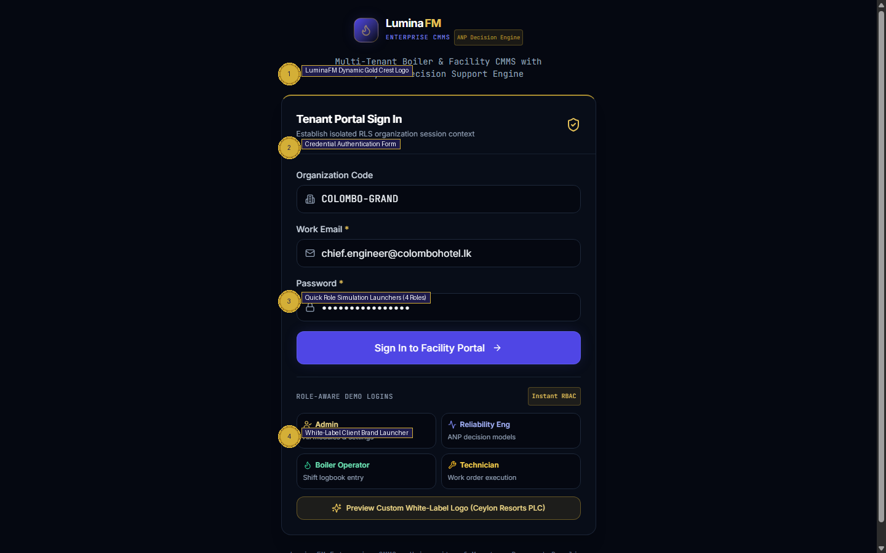
Figure 13.2: Login Interface with Numbered Callout Markers
#Callout Annotations Reference (Figure 13.2)
- Marker 1: LuminaFM Dynamic Gold Crest Logo: High-contrast corporate crest reflecting the active organization branding.
- Marker 2: Credential Authentication Form: Input fields for Email Address, Password, and Organization Tenant Code with the primary Sign In to Facility System button.
- Marker 3: Quick Role Simulation Launchers (4 Roles): Four 1-click authentication triggers:
- Organization Admin: Arjun Wickramasinghe (
chief.engineer@colombohotel.lk) - Plant Reliability Engineer: Dr. Nimal Senanayake (
reliability.lead@colombohotel.lk) - Boiler Plant Operator: Samantha Bandara (
shift.operator@colombohotel.lk) - Maintenance Technician: Kasun Perera (
field.tech@colombohotel.lk)
- Marker 4: White-Label Client Brand Launcher: 1-click trigger to simulate login into an externally branded organization ("Ceylon Luxury Resorts PLC").
#Mobile Smartphone Sign-In Interface (390 \times 844) (AUTH-002)
Optimized for mobile field operators and on-call technicians.

Figure 13.3: Mobile Login Interface (390 × 844)
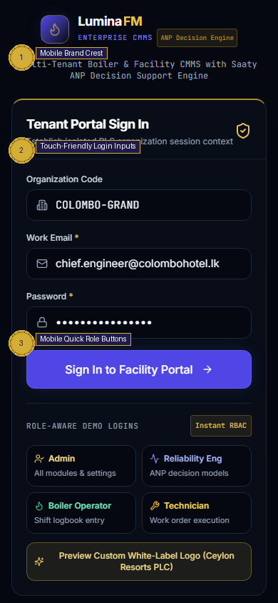
Figure 13.4: Mobile Login with Numbered Callouts
- Marker 1: Mobile Brand Crest: Compact brand crest.
- Marker 2: Touch-Friendly Login Inputs: Large input fields (48\text{px} touch targets) preventing mobile keyboard typing errors.
- Marker 3: Mobile Quick Role Buttons: Single-column vertical buttons for quick role switching.
#3. Field Reference: Authentication Form
| Field | Purpose | Required | Format | Validation Rules | Default / Example Value |
|---|---|---|---|---|---|
email | User account email address | Yes | Valid Email Address | Must be a valid email format | chief.engineer@colombohotel.lk |
password | User account secret password | Yes | Password String | Minimum 8 characters | LuminaAdmin@2026 |
organizationCode | Tenant routing identifier | No | Alphanumeric String | Optional; routes to specific tenant realm | COLOMBO-GRAND |
#4. Session Handling & Token Security
- JWT Persistence: Successful authentication stores the JWT access token in browser
localStorageand establishes user identity inAuthContext. - Session Expiration: Expired tokens automatically redirect users to
/login. - Offline Session Guard: If a user attempts to log out while unsynchronized shift logs remain in their local IndexedDB queue, the system interrupts the logout flow with the Logout Sync Guard Modal (
LogoutSyncGuardModal.tsx), preventing accidental data loss.
Navigation & Shell Architecture
navigation.md#Account Guide: Application Navigation & Shell
#1. Overview & Purpose
The LuminaFM Application Shell provides consistent, role-aware, and accessible navigation across all facility modules. It comprises the Top Navigation Bar and the Facility Operations Sidebar, ensuring that personnel can move between operational monitoring, work order execution, and decision governance with minimal clicks.
#2. Top Navigation Bar (TopNavbar)
The top navigation bar is pinned to the top of every screen (except the standalone kiosk view) with a backdrop blur filter:

Figure 14.1: Top Navigation Bar with Role Selector Popover Open (1440 × 900)
#Key Elements & Controls
- Brand Crest & Home Trigger:
- Displays the corporate organization logo (or LuminaFM gold crest fallback).
- Clicking the logo navigates immediately to the Command Center (
/).
- Tenant Scope Indicator:
- Displays the active facility name (e.g.,
Colombo Grand Hospitality Group) and organization slug (COLOMBO-GRAND). - Confirms that the session is executing within an isolated multi-tenant database partition.
- Critical Safety Alert Indicator:
- A pulsing gold/red warning pill (e.g.,
BLR-001 Pressure Alert). - Clicking this badge jumps directly to the urgent safety work order in
/work-orders.
- Tablet Kiosk Trigger (
Tablet Kiosk):
- An accessible gold action button designed for rapid switching to the touch-first operator kiosk (
/operator).
- Row-Level Security (RLS) Status Badge:
- Displays
RLS Isolated, confirming that PostgreSQL Row-Level Security policies are actively enforced on all database queries.
- Interactive Active Role Switcher:
- A dropdown button displaying the current active role badge (e.g.,
Organization Admin). - Clicking this button opens a popover displaying all four system roles. Selecting any role instantaneously switches active permissions and updates visible sidebar menu items without requiring a page reload or re-login.
- User Profile & Sign-Out Button:
- Displays the authenticated user's full name and email address.
- Clicking the logout icon (
LogOut) securely clears JWT tokens and terminates the session. - If unsynchronized offline records exist in the browser's IndexedDB queue, the system triggers the Logout Sync Guard Modal, warning the user and preventing data loss.
#3. Operations Sidebar (Sidebar)
The persistent desktop sidebar provides direct access to all 12 operational modules.
#Menu Items & Role Access Mapping
| Menu Item | Destination Route | Icon | Badges | Required Roles / Permissions |
|---|---|---|---|---|
| Command Center | / | LayoutDashboard | — | All Roles |
| Asset Master | /assets | Cpu | 12 Assets | assets:read (All Roles) |
| Equipment Hierarchy | /hierarchies | Network | Dual DAG | assets:read (All Roles) |
| Maintenance Calendar | /maintenance-calendar | Calendar | PM Due | work_orders:read (All Roles) |
| Work Management | /work-orders | ClipboardList | Active | work_orders:read (All Roles) |
| Inspections & Faults | /inspections | ClipboardCheck | — | work_orders:read (All Roles) |
| Boiler Logbook | /daily-monitoring | Flame | Shift Logs | operations:daily_log (All Roles) |
| Decision & Reporting | /reports | BarChart3 | ANP & PM | work_orders:read (All Roles) |
| Audit & Evidence | /audit-evidence | ShieldCheck | ASME Vault | work_orders:read (All Roles) |
| Cost Analytics | /cost-analysis | DollarSign | 72% PM | Organization Admin, Plant Reliability Engineer (finance:read) |
| Decision Governance | /governance | Scale | ANP v1 | Organization Admin, Plant Reliability Engineer (governance:manage) |
| White-Label & Org | /settings | Settings | — | Organization Admin (org:admin) |
#Sidebar Boiler Telemetry Status Card
The bottom section of the sidebar includes a live telemetry heartbeat widget:
- Displays active boiler module status (
Boiler Module v1.4). - Features a pulsing green/gold beacon indicating live telemetry data ingestion.
- Displays the active tenant code (
COLOMBO-GRAND).
#4. Mobile Slide-Over Navigation Drawer
On screen widths under 1024\text{px} (tablets in portrait and mobile phones):
- The desktop sidebar is hidden.
- Tapping the hamburger menu icon (\equiv) in the top navigation bar slides in an accessible drawer covering the left side of the screen.
- Tapping any navigation link or tapping outside the drawer automatically dismisses the slide-over panel.
3. Complete Module Guides
01. Command Center Dashboard
01-command-center.md#Module Guide: Command Center Dashboard
#1. Overview & Purpose
The Command Center Dashboard serves as the central operational hub of LuminaFM. It synthesizes facility-wide asset health, active preventive maintenance schedules, real-time safety alerts, thermodynamic telemetry, and cross-discipline work orders into an executive overview.
#Key Operational Capabilities
- Direct Safety Escalation: Displays high-priority safety interlock and boiler trip alerts that bypass algorithm scoring to ensure immediate plant safety compliance.
- Facility KPI Grid: Tracks total active assets, overdue maintenance tasks, open work order tickets, and the facility proactive maintenance ratio.
- Equipment Extensibility Demonstration: Highlights polymorphic non-boiler equipment monitoring with live thermodynamic Coefficient of Performance (\text{COP}) and approach temperature scaling indicators for water-cooled chillers.
- Executive Task Summary: Provides one-click navigation to upcoming scheduled maintenance and recent critical equipment faults.
#2. Page Access & Permissions
- Primary Route:
/ - Navigation Access: Click Command Center in the left navigation sidebar or click the LuminaFM Crest in the top navigation bar.
- Permitted Roles: All authenticated personnel (
Organization Admin,Plant Reliability Engineer,Boiler Plant Operator,Maintenance Technician). - Role-Aware Visibility: Financial indicators (such as maintenance expenditure metrics) automatically hide for operators and technicians who lack the
finance:readpermission.
#3. Visual Interface & Layout
The dashboard features a responsive, midnight navy surface with restrained gold accents and high-contrast typography conforming to industrial readability standards.
#Desktop Command Center Overview

Figure 1.1: LuminaFM Command Center Desktop Overview (Viewport: 1440 × 900)
Figure 1.2: Command Center Desktop Overview with Numbered Callout Markers
#Callout Annotations Reference (Figure 1.2)
- Marker 1: Top Navigation Header & Brand Logo: Displays the client's corporate logo (or LuminaFM gold crest fallback), tenant organization code, active RBAC role switcher, tablet kiosk shortcut, and user logout trigger.
- Marker 2: Sidebar Operations Navigation: The 12-module facility navigation menu. Items are dynamically filtered based on the active user role's permissions. Includes a live boiler telemetry heartbeat indicator.
- Marker 3: Critical Safety Alert: An urgent visual banner triggered by direct safety escalation rules (e.g., boiler safety relief valve or interlock test overdue). This alert is deliberately decoupled from mathematical ranking algorithms.
- Marker 4: Executive Facility KPI Cards Grid: High-level operational metrics showing Total Assets Registered, Preventive Maintenance Due, Active Work Orders, and Proactive Maintenance Ratio.
- Marker 5: Chiller Extensibility Demonstration Card: Demonstrates non-boiler equipment integration, displaying live evaporator/condenser approach temperatures, thermodynamic \text{COP}, and decision model isolation status.
- Marker 6: Recent Work Orders & Preventive Schedules: Tabular widgets showing tickets awaiting execution and maintenance due within the next 7 days.
#4. Responsive Device Layouts
The Command Center adapts dynamically across all verified industrial device form factors.
#Tablet Landscape Viewport (1180 \times 820)
Designed for control room desktop monitors, ruggedized tablet docks, and wall-mounted plant status screens.

Figure 1.3: Command Center Tablet Landscape Layout
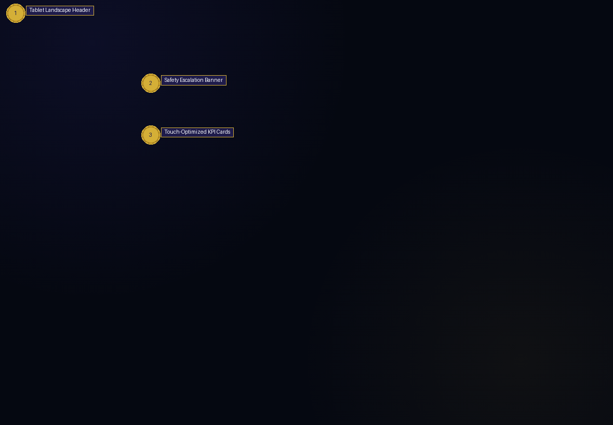
Figure 1.4: Tablet Landscape Layout with Numbered Callouts
- Marker 1: Condensed top header retaining tenant scope and role switcher.
- Marker 2: High-visibility safety escalation banner spanning the full primary content width.
- Marker 3: Two-column responsive metric cards with touch targets exceeding 44\text{px}.
#Tablet Portrait Viewport (820 \times 1180)
Optimized for mobile floor supervisors conducting walkthrough inspections with an iPad or Android tablet.

Figure 1.5: Command Center Tablet Portrait Layout
Figure 1.6: Tablet Portrait Layout with Numbered Callouts
- Marker 1: Collapsible sidebar menu accessible via top navigation drawer button.
- Marker 2: Stacked safety alert card with large tap targets.
- Marker 3: Vertically arranged metric cards.
#Mobile Viewport (390 \times 844)
Designed for on-call engineers responding to plant abnormalities via smartphone.

Figure 1.7: Mobile Responsive Viewport
Figure 1.8: Mobile Viewport with Numbered Callouts
- Marker 1: Sticky mobile topbar with hamburger drawer trigger and status badge.
- Marker 2: Critical safety alert card formatted for small touch screens.
- Marker 3: Single-column executive metrics.
#5. UI Component Details
#A. Critical Safety Alert Banner
- Component Type: Alert Card / Direct Escalation Banner.
- Location: Top of main dashboard content area below the header.
- Purpose: Warns facility managers of immediate safety hazards, such as overdue boiler safety relief valve testing or combustion interlock lockouts.
- Behavior: Clicking the banner navigates directly to the relevant safety work order ticket in
/work-orders. - Special Rule: Safety critical alerts never depend on ANP priority ranking; they trigger immediately upon threshold breach or overdue compliance deadline.
#B. Executive KPI Metric Cards
- Component Type: Stat Metric Card Grid.
- Location: Upper content section.
- Metrics Displayed:
- Total Assets: Count of all equipment assets active in the tenant registry.
- Active PM Due: Number of preventive maintenance tasks due within the current 7-day operating cycle.
- Open Work Orders: Count of maintenance orders currently in
open,assigned, orin_progressstatus. - Proactive Ratio: Percentage of total labor hours spent on preventive/predictive tasks versus corrective breakdown repairs (Benchmark: World-Class \ge 80\%).
#C. Chiller Extensibility Demonstration Card (ChillerModuleCard)
- Component Type: Specialized Equipment Monitoring Card.
- Location: Mid-dashboard interactive section.
- Thermodynamic Gauges:
- Evaporator Approach Temperature: Normal: 0.5 - 2.0^\circ\text{C}. Exceeding 2.5^\circ\text{C} indicates refrigerant starvation or water-side fouling.
- Condenser Approach Temperature: Normal: 0.5 - 2.0^\circ\text{C}. Exceeding 2.5^\circ\text{C} indicates tube scale buildup.
- Operating COP: Calculated live via \text{COP} = \frac{3.51685}{\text{kW/TR}}.
- Interactive Action Buttons:
- Run Anomaly Check: Evaluates current telemetry and displays detected maintenance needs.
- Test Boiler ANP Model on Chiller: Triggers the system's cross-module isolation guard. The system catches the invalid request and displays a
CrossModuleDecisionModelErrorbanner, proving that boiler models cannot be misapplied to chillers.
#D. Active RBAC Role Switcher Popover
- Component Type: Popover Dropdown Menu.
- Location: Top navigation bar right section.
Figure 1.9: Interactive RBAC Role Selector Popover
Figure 1.10: Role Switcher Popover with Numbered Callouts
- Marker 1: Active user role badge in top navbar.
- Marker 2: Dropdown selection menu displaying all 4 system roles.
- Marker 3: Instant role switch trigger that updates navigation permissions without requiring re-login.
#6. Related Pages & Workflows
- Maintenance Calendar: Click the Calendar button in the dashboard header to access
/maintenance-calendar. - Work Management: Click the Work Orders button to access
/work-orders. - Operator Kiosk: Click Tablet Kiosk in the top navigation bar to launch the full-screen touch interface at
/operator.
02. Asset Master & Hierarchy
02-asset-management.md#Module Guide: Asset Management & Equipment Hierarchy
#1. Overview & Purpose
The Asset Management suite comprises the Asset Master Registry and the Equipment Hierarchy Engine. Together, they form the technical foundation of LuminaFM, establishing asset provenance, parent-child relationships, location assignments, operating meter thresholds, and polymorphic JSONB engineering specifications.
#2. Asset Master Registry (/assets)
#Access & Permissions
- Route:
/assets - Navigation Access: Click Asset Master in the left navigation menu.
- Required Permission:
assets:read(Permitted for all roles).
#Visual Interface & Layout

Figure 2.1: Asset Master Registry Viewport (1440 × 900)
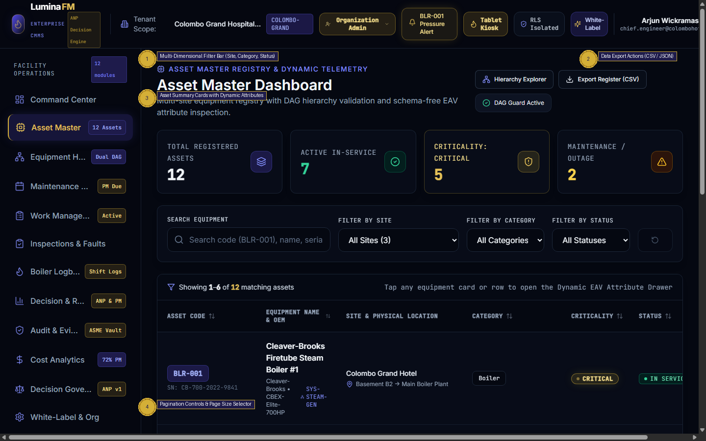
Figure 2.2: Asset Master Registry with Numbered Callout Markers
#Callout Annotations Reference (Figure 2.2)
- Marker 1: Multi-Dimensional Filter Bar: Filter controls allowing users to isolate assets by Facility Site, Asset Category, Operating Status, and live text search query.
- Marker 2: Data Export Actions: Action buttons allowing instant client-side generation and download of complete asset inventory data in CSV or JSON formats.
- Marker 3: Asset Summary Cards Grid: Responsive cards displaying equipment name, unique asset code (e.g.,
BLR-001), manufacturer model, serial number, location breadcrumbs, and criticality badges. - Marker 4: Pagination Controls: Bottom toolbar providing previous/next page navigation, current page indicator, and page size selector (6, 12, or 24 records per page).
#Slide-Over Asset Detail Drawer (AssetDetailDrawer)
Clicking the Inspect Specifications button on any asset card opens the slide-over inspection drawer without navigating away from the registry.

Figure 2.3: Asset Detail Side-Drawer Open
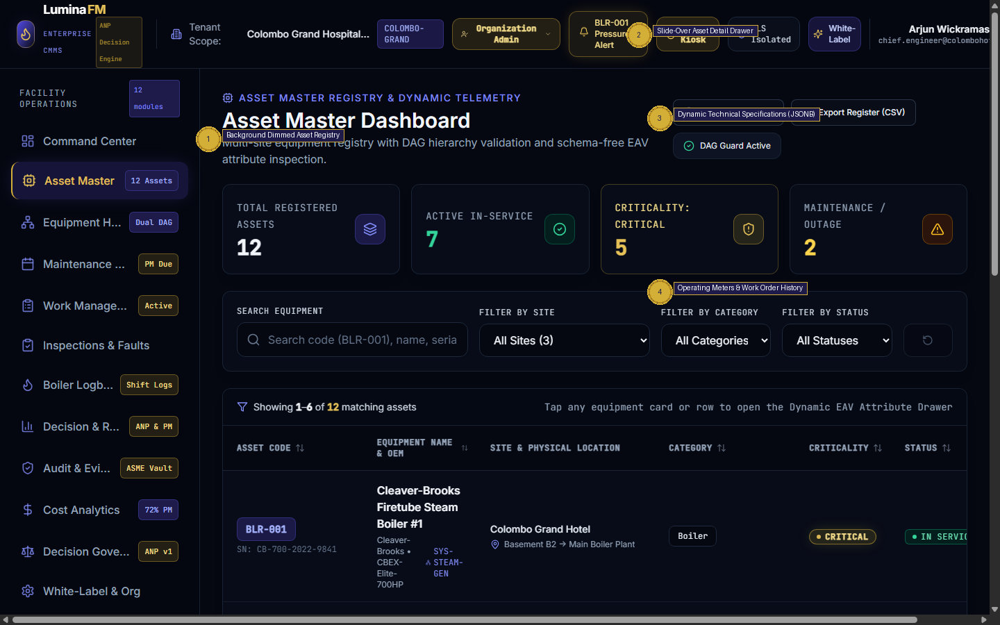
Figure 2.4: Asset Detail Drawer with Numbered Callout Markers
- Marker 1: Dimmed Background Registry: Accessible backdrop overlay. Clicking the backdrop closes the drawer.
- Marker 2: Slide-Over Inspection Drawer: High-contrast side panel displaying full engineering metadata.
- Marker 3: Dynamic Technical Specifications (JSONB): Schema-driven nameplate specifications rendered dynamically with engineering units (e.g., Boiler Design Working Pressure: 10.5\text{ bar}, Steam Capacity: 1,100\text{ kg/h}).
- Marker 4: Operating Meters & Work Order History: Real-time operating meter totals (e.g., Operating Hours: 11,420\text{ hrs}) and active work orders assigned to this asset.
#3. Equipment Hierarchy & Dual Process DAG (/hierarchies)
LuminaFM supports a Dual Directed Acyclic Graph (DAG) architecture. Users can examine equipment relationships through two distinct perspectives:
- Physical Location Hierarchy: Where the equipment physically resides within the real estate structure.
- System & Process Loop Hierarchy: How the equipment functions as part of a continuous thermodynamic cycle.
#Physical Location DAG View
- Route:
/hierarchies - Hierarchy Structure:
Site\rightarrowBuilding\rightarrowFloor\rightarrowRoom\rightarrowAsset\rightarrowComponent Sub-Assembly.

Figure 2.5: Physical Location Hierarchy Tree View
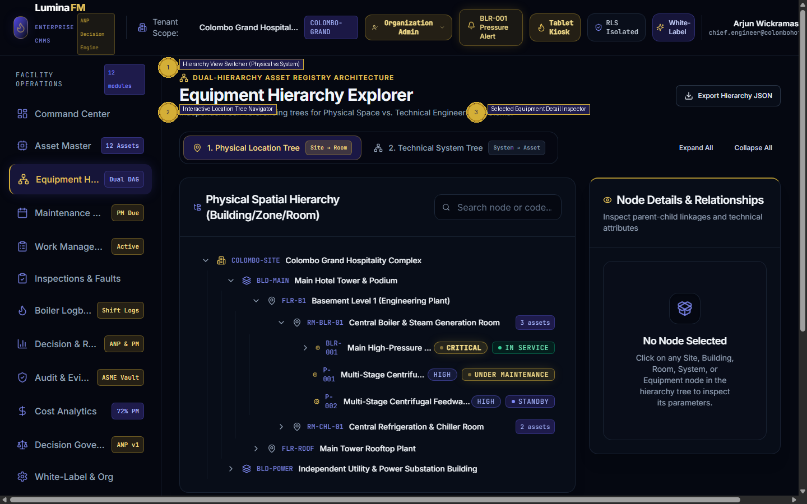
Figure 2.6: Location Hierarchy Tree with Numbered Callouts
- Marker 1: Hierarchy View Switcher: Tab bar to switch between Physical Location and System Process Loop views.
- Marker 2: Interactive Location Tree Navigator: Expandable and collapsible tree nodes with asset count badges and health indicators.
- Marker 3: Selected Equipment Detail Inspector: Side panel showing the selected node's location breadcrumbs, parent asset, serial number, and JSON export button.
#System & Process Loop Hierarchy View
Clicking the System & Process Loop tab reveals the functional thermodynamic topology of the plant:
- Primary Loops: Steam & Condensate Generation Loop, Chilled Water Circulation Loop, Electrical Distribution Network, Fire Suppression System.

Figure 2.7: System Process Loop Hierarchy View
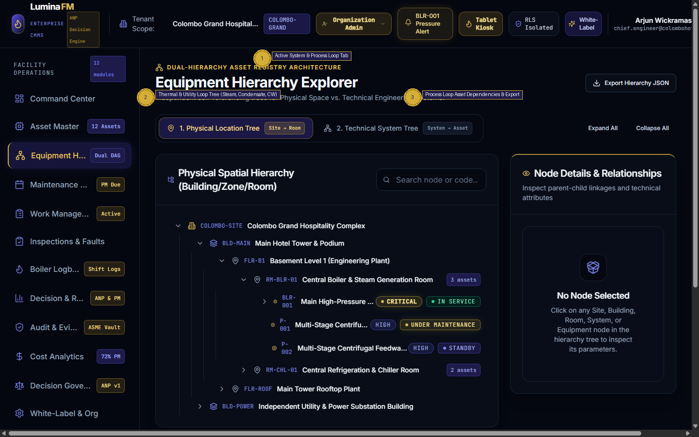
Figure 2.8: Process Loop Hierarchy with Numbered Callouts
- Marker 1: Active System Process Loop Tab: Highlights the active process loop graph view.
- Marker 2: Utility Loop Tree Navigator: Decomposes thermal loops into generation units, distribution valves, pumps, and end-use heat exchangers.
- Marker 3: Process Loop Asset Dependencies: Displays upstream supply sources and downstream dependencies.
#4. UI Component Reference
| Component | UI Type | Location | Purpose & Behavior | Permitted Roles |
|---|---|---|---|---|
| Site Filter | Dropdown Select | Filter Toolbar | Filters asset records by physical site (e.g., COLOMBO-SITE). | All Roles |
| Category Filter | Dropdown Select | Filter Toolbar | Filters assets by equipment class (boilers, chillers, pumps). | All Roles |
| Status Filter | Dropdown Select | Filter Toolbar | Isolates assets by state: in_service, under_maintenance, standby, out_of_service, decommissioned. | All Roles |
| Search Input | Search Field | Filter Toolbar | Performs instant multi-field text search matching asset code, name, and serial number. | All Roles |
| Export CSV | Button (secondary) | Action Header | Compiles filtered asset register into a downloadable .csv file. | All Roles |
| Export JSON | Button (secondary) | Action Header | Exports complete asset data including nested dynamic attributes as .json. | All Roles |
| Inspect Specifications | Button (gold) | Asset Card Footer | Opens the AssetDetailDrawer for the target asset. | All Roles |
| Close Drawer (X) | Button (ghost) | Drawer Header | Closes the side drawer and returns focus to the registry grid. | All Roles |
#5. Field Reference: Asset Specifications & Metadata
| Field | Purpose | Required | Format | Validation Rules | Example |
|---|---|---|---|---|---|
assetCode | Unique organizational asset identifier | Yes | String (Uppercase alphanumeric with hyphens) | Must be unique within tenant organization | BLR-001 |
name | Human-readable asset title | Yes | String | 3–100 characters | Main High-Pressure Steam Boiler |
categoryCode | Classification category | Yes | Enum Code | Must match registered AssetCategory | boilers |
siteId | Physical facility complex assignment | Yes | UUID | Must reference valid Site | loc-site-1 |
status | Operational availability state | Yes | Enum | One of 5 standardized states | in_service |
criticality | Impact level on plant safety and operations | Yes | Enum | low, medium, high, critical | critical |
serialNumber | Manufacturer nameplate serial | No | String | Alphanumeric | CB-2024-98412 |
modelNumber | Manufacturer engineering model | No | String | Alphanumeric | CB-PACK-1100 |
operatingHours | Accumulated runtime meter | Yes | Number | Positive floating-point or integer | 11420.5 |
specifications.designPressure | Design working pressure rating | Yes (Boilers) | Number with unit | 0.0 - 25.0\text{ bar} | 10.5 bar |
specifications.steamCapacity | Rated steam output capacity | Yes (Boilers) | Number with unit | 100 - 5,000\text{ kg/h} | 1,100 kg/h |
specifications.coolingCapacity | Rated refrigeration capacity | Yes (Chillers) | Number with unit | 50 - 3,000\text{ TR} | 500 TR |
03. Maintenance Planning & PM Calendar
03-maintenance-planning.md#Module Guide: Maintenance Planning & Preventive Schedules
#1. Overview & Purpose
The Maintenance Planning module manages recurring preventive maintenance (PM) routines, compliance walkthrough schedules, and statutory inspection calendars. It ensures that time-based, meter-based, and regulatory maintenance routines are executed proactively before component degradation causes unplanned plant outages.
#Core Capabilities
- Visual Month Grid: High-level calendar interface displaying upcoming maintenance workloads by day.
- Overdue Tracking & Escalation: Identifies overdue routines and computes the plant compliance rate (96.2\%).
- On-Demand Work Order Dispatch: Allows engineers to generate executable work orders directly from scheduled routines with a single click.
- Priority Filtering: Isolates high-risk tasks (e.g., boiler burner overhauls and safety pop valve tests).
#2. Page Access & Permissions
- Route:
/maintenance-calendar - Navigation Access: Click Maintenance Calendar in the left navigation sidebar.
- Required Permission:
work_orders:read(Permitted for all roles).
#3. Visual Interface & Layout
#Month Calendar Grid View (CAL-001)

Figure 3.1: Maintenance Calendar Month Grid View (1440 × 900)
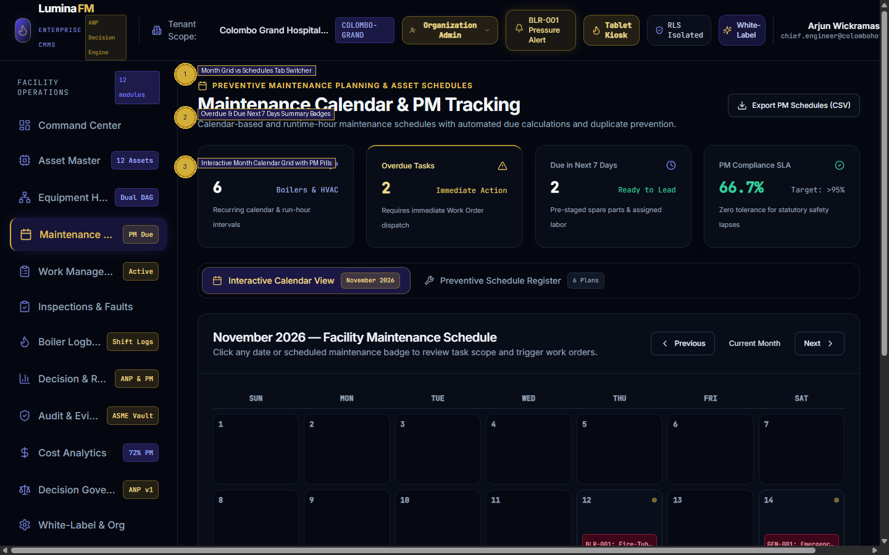
Figure 3.2: Maintenance Calendar with Numbered Callout Markers
#Callout Annotations Reference (Figure 3.2)
- Marker 1: Month Grid vs Schedules Tab Switcher: Toggles between the interactive visual month grid and the recurring schedules list view.
- Marker 2: Overdue & Compliance Rate Summary Badges: KPI metrics showing total active schedules (6), overdue count (2), tasks due in the next 7 days (2), and current maintenance compliance rate (96.2\%).
- Marker 3: Interactive Month Calendar Grid: Day cells with color-coded event pills. Overdue tasks are highlighted with gold/red borders, while upcoming scheduled routines appear in indigo.
#Recurring PM Schedules List View (CAL-002)
Clicking the Recurring PM Schedules tab opens the tabular schedule management interface.

Figure 3.3: Recurring PM Schedules List View
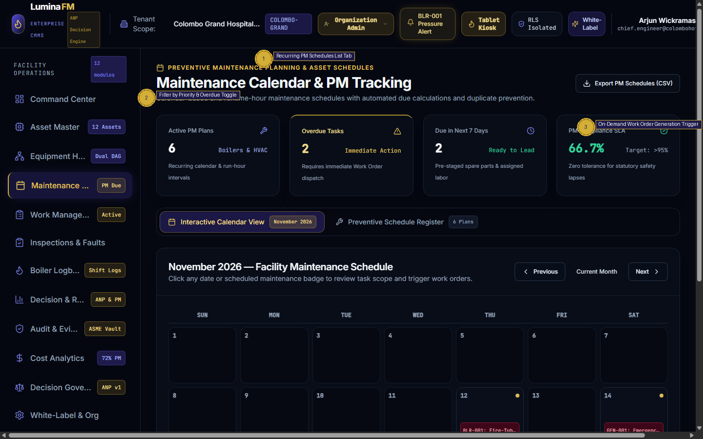
Figure 3.4: PM Schedules List with Numbered Callouts
- Marker 1: Active Schedules List Tab: Highlights the active schedule view.
- Marker 2: Filter Controls & Overdue Toggle: Filter input for title and asset search, priority dropdown, and a quick checkbox to display only overdue schedules.
- Marker 3: On-Demand Work Order Generation Trigger: Clicking Generate Work Order immediately instantiates an executable ticket in
/work-orderspre-populated with required trade skills, parts, and estimated labor hours.
#4. UI Component Details
| Component | UI Type | Purpose | Behavior & Effects |
|---|---|---|---|
| View Tabs | Tab Strip | Switches between Calendar Grid and Tabular Schedules. | Updates layout state without re-fetching data. |
| Previous Month (<) | Button (ghost) | Navigates back one calendar month. | Re-renders days and maps events for prior month. |
| Next Month (>) | Button (ghost) | Navigates forward one calendar month. | Re-renders days and maps events for next month. |
| Today Button | Button (secondary) | Returns calendar view to the current month. | Jumps to current date. |
| Search Input | Text Field | Filters schedules by plan title or asset code. | Real-time substring filter on table rows. |
| Priority Filter | Dropdown | Filters by low, medium, high, critical. | Isolates schedules by risk severity. |
| Overdue Only Checkbox | Toggle Checkbox | Shows only schedules where nextDueDate < Today. | Displays overdue tasks requiring immediate attention. |
| Generate Work Order | Button (gold) | Dispatches an actionable work order ticket. | Calls POST /api/maintenance/schedules/:id/generate-wo, creates draft ticket, and displays a success alert. |
#5. Field Reference: Maintenance Schedules
| Field | Purpose | Required | Format | Validation Rules | Example |
|---|---|---|---|---|---|
planTitle | Descriptive title of preventive routine | Yes | String | 5–100 characters | Quarterly Burner Overhaul & Combustion Tune |
assetCode | Equipment identifier targeted | Yes | String | Must match active asset | BLR-001 |
assetName | Name of targeted equipment | Yes | String | Auto-populated | Main High-Pressure Steam Boiler |
frequencyDays | Scheduled recurrence interval | Yes | Integer | > 0 days | 90 (Quarterly) |
priority | Operational criticality priority | Yes | Enum | low, medium, high, critical | critical |
nextDueDate | Calendar deadline for next execution | Yes | Date (YYYY-MM-DD) | Valid ISO date string | 2026-11-18 |
isOverdue | Automatic overdue status flag | Yes | Boolean | Computed: nextDueDate < current_date | true |
estimatedHours | Standard labor duration benchmark | Yes | Number (Hours) | > 0.25 hours | 4.5 |
requiredTrade | Primary technician skill required | Yes | String | E.g., Mechanical, Electrical, Boiler Tech | Combustion Specialist |
04. Work Orders & Work Management
04-work-orders.md#Module Guide: Work Orders & Work Management
#1. Overview & Purpose
The Work Management module orchestrates the complete maintenance execution lifecycle. From the initial creation of work tickets to supervisor approvals, technician task execution, labor logging, spare parts consumption, and final closure, LuminaFM enforces a strict, auditable state machine.
#Core Capabilities
- Dual Visual Modes: Seamless switching between high-density tabular list view and an interactive drag-and-drop Kanban Board.
- Formal State Machine: Enforces valid status transitions:
$\text{Draft} \longrightarrow \text{Open} \longrightarrow \text{Approved} \longrightarrow \text{Assigned} \longrightarrow \text{In Progress} \longrightarrow \text{Completed} \longrightarrow \text{Closed}$
- Resource & Cost Tracking: Accurately tallies technician labor hours and consumed inventory spare parts into the work order's financial ledger.
- Mandatory Audit Trail: Every status change prompts for a documented justification recorded in the immutable audit log.
#2. Page Access & Permissions
- Route:
/work-orders - Navigation Access: Click Work Management in the left navigation sidebar.
- Required Permission:
work_orders:readto view;work_orders:manageto create, edit, transition, or log resources (Permitted forOrganization Admin,Plant Reliability Engineer, andMaintenance Technician).
#3. Visual Interface & Layout
#Tabular List View (WO-001)

Figure 4.1: Work Orders Tabular List View (1440 × 900)
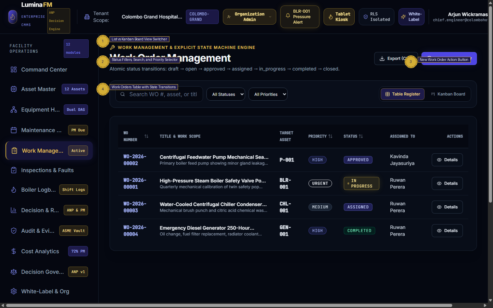
Figure 4.2: Work Orders List with Numbered Callout Markers
#Callout Annotations Reference (Figure 4.2)
- Marker 1: List vs Kanban Board View Switcher: Toggles the display between the tabular register and the drag-and-drop Kanban workflow columns.
- Marker 2: Status Filters, Search, and Priority Selector: Filter controls to search by work order number (e.g.,
WO-2026-00042) or equipment title, filter by priority (critical,high,medium,low), or filter by lifecycle status. - Marker 3: New Work Order Action Button: Opens the
CreateWorkOrderModaldialog to draft a new ticket. - Marker 4: Work Orders Table with State Transitions: High-density table displaying order number, title, target asset, priority badge, assigned technician, estimated hours, and direct state transition action buttons.
#Kanban Board View (WO-002)
Clicking the Kanban view button renders work orders across six workflow columns.

Figure 4.3: Work Orders Kanban Board View
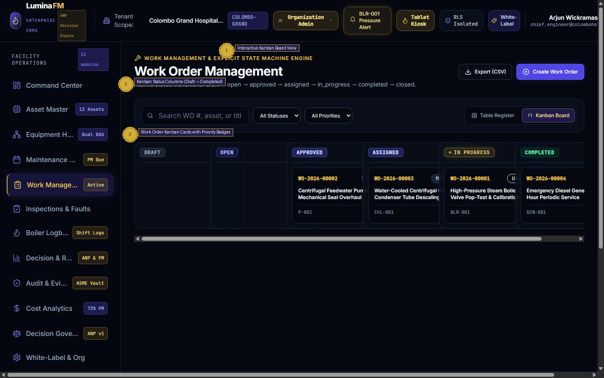
Figure 4.4: Kanban Board with Numbered Callouts
- Marker 1: Active Kanban View Tab: Confirms Kanban workflow layout mode.
- Marker 2: Kanban Status Columns: Six distinct columns representing active states:
Draft,Open,Approved,Assigned,In Progress, andCompleted. - Marker 3: Work Order Kanban Cards: Interactive cards showing title, equipment code, priority badge, estimated duration, and quick transition buttons.
#4. Modals & Overlay Workflows
#A. Create Work Order Modal (WO-003)
Clicking New Work Order launches the creation dialog.

Figure 4.5: Create Work Order Modal Dialog
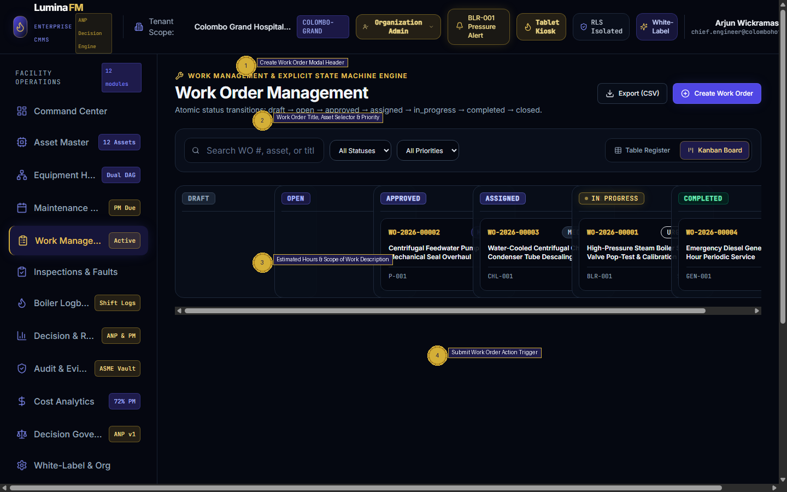
Figure 4.6: Create Work Order Dialog with Numbered Callouts
- Marker 1: Modal Header: Dialog title and close trigger.
- Marker 2: Title, Asset Selector & Priority: Ticket name, target equipment dropdown, and operational priority level.
- Marker 3: Estimated Hours & Scope Description: Standard labor time estimate and detailed scope of work instructions.
- Marker 4: Submit Work Order Trigger: Dispatches creation request, instantiating a new
draftrecord.
#B. Work Order Detail & Resource Tracking Modal (WO-004)
Clicking Details or Manage on any work order card opens the resource tracking dialog.

Figure 4.7: Work Order Detail & Resource Tracking Dialog
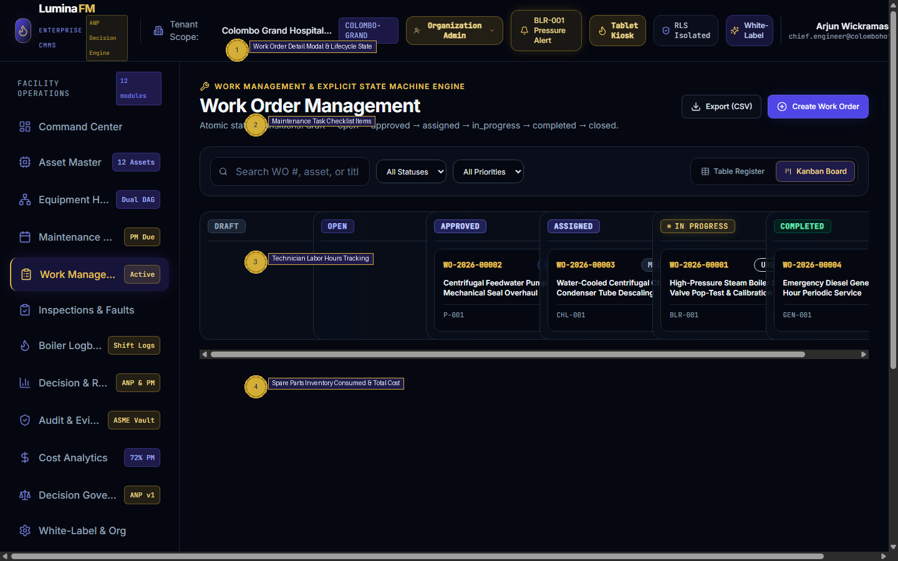
Figure 4.8: Detail Modal with Numbered Callouts
- Marker 1: Work Order Header & State: Displays ticket number, active status, priority, and parent asset.
- Marker 2: Maintenance Task Checklist: Step-by-step procedure checklist (e.g., LOTO verification, tube brushing, torque checks) with interactive checkboxes.
- Marker 3: Technician Labor Hours Tracking: Form to log hours worked, hourly rate, and technician name. Total labor cost computes automatically.
- Marker 4: Spare Parts Inventory Consumed: Form to record parts pulled from stock (e.g., spiral wound gaskets, burner nozzles) with quantity and unit cost. Total material cost updates automatically.
#5. Field Reference: Work Order Data Contracts
#Work Order Creation Fields
| Field | Purpose | Required | Format | Validation Rules | Example |
|---|---|---|---|---|---|
title | Summary title of maintenance work | Yes | String | 5–120 characters | Emergency Feedwater Pump Mechanical Seal Replacement |
assetId | Target equipment asset UUID | Yes | UUID | Must reference existing asset | a2000000-0000-0000-0000-000000000002 |
priority | Operational urgency level | Yes | Enum | low, medium, high, critical | high |
estimatedHours | Target duration for task completion | Yes | Number (Hours) | > 0.25 hours | 3.5 |
description | Comprehensive scope of work & safety notes | Yes | Text | Minimum 10 characters | Isolate suction and discharge valves. Lockout motor MCC breaker. |
#Labor Hours Tracking Fields
| Field | Purpose | Required | Format | Validation Rules | Example |
|---|---|---|---|---|---|
technicianName | Performing technician identity | Yes | String | Non-empty text | K. Bandara (Senior Millwright) |
hoursWorked | Actual hours spent on site | Yes | Number | > 0.1 hours | 4.0 |
hourlyRate | Labor billing rate per hour | Yes | Currency ($) | \ge 0 | 45.00 |
#Spare Parts Consumption Fields
| Field | Purpose | Required | Format | Validation Rules | Example |
|---|---|---|---|---|---|
partNumber | Inventory spare part SKU | Yes | String | Must match catalog part | GSK-SPIRAL-4IN-300# |
partName | Item descriptive title | Yes | String | Non-empty | 4-inch Spiral Wound Graphite Flange Gasket |
quantity | Number of units consumed | Yes | Integer | \ge 1 | 2 |
unitCost | Inventory replacement cost per unit | Yes | Currency ($) | > 0 | 18.50 |
05. Inspections & Equipment Faults
05-inspections-and-faults.md#Module Guide: Inspections & Equipment Faults
#1. Overview & Purpose
The Inspections & Faults module manages standard operating walkthrough checklists, compliance inspection audits, and equipment defect tracking. It provides the crucial link between routine operator walkthroughs and corrective maintenance actions.
#Core Capabilities
- Walkthrough Inspection Log: Records all completed visual, auditory, and gauge verification walkthroughs.
- Defect Tracking & Severity Grading: Catalogs equipment faults with standardized severity ratings:
CRITICAL,MAJOR, andMINOR. - Fault-to-Work-Order Escalation: Instantly converts an unresolved mechanical or electrical defect into a corrective work order ticket with pre-filled asset context.
- Checklist Audit Trail: Archives individual checkpoint pass/fail responses, physical gauge readings, and inspector digital sign-offs.
#2. Page Access & Permissions
- Route:
/inspections - Navigation Access: Click Inspections & Faults in the left navigation menu.
- Required Permission:
work_orders:read(Permitted for all roles).
#3. Visual Interface & Layout
#Walkthrough Inspections Register (INSP-001)

Figure 5.1: Inspections Register Table (1440 × 900)
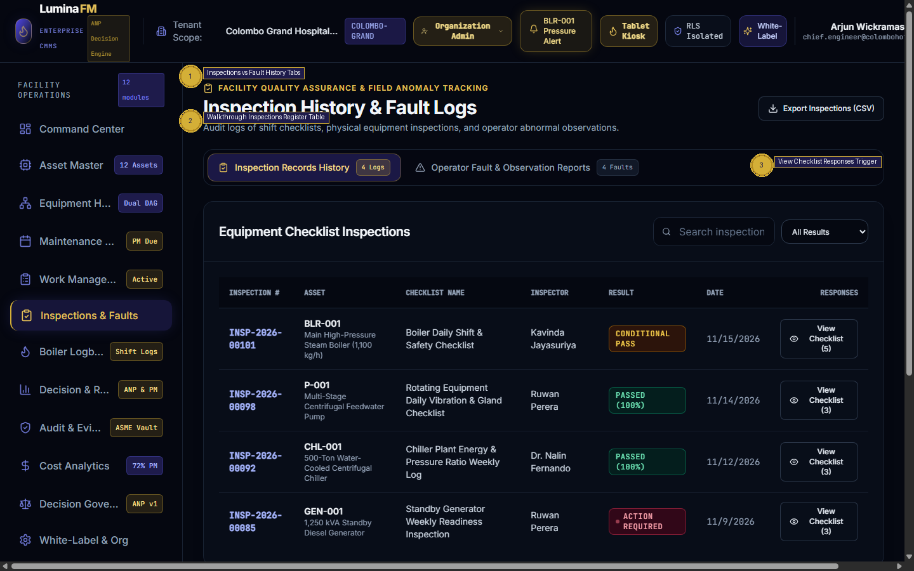
Figure 5.2: Inspections Register with Numbered Callout Markers
#Callout Annotations Reference (Figure 5.2)
- Marker 1: Inspections vs Fault History Tabs: Toggles between completed inspection logs and unresolved equipment fault records.
- Marker 2: Walkthrough Inspections Register Table: Displays inspection code (e.g.,
INSP-2026-00018), asset code, template title, inspection date, inspector identity, and overall outcome badge (PASS,WARNING,FAIL). - Marker 3: View Checklist Responses Trigger: Clicking View Checklist opens the
InspectionDetailModaldialog.
#Inspection Detail Modal (INSP-002)
Clicking View Checklist on any inspection row displays the full walkthrough response record.

Figure 5.3: Walkthrough Inspection Detail Modal Dialog
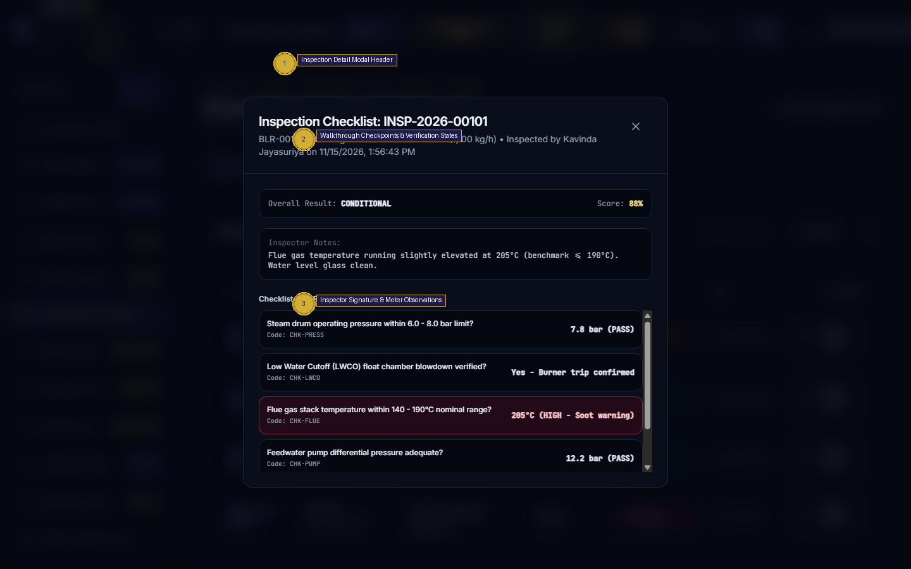
Figure 5.4: Detail Modal with Numbered Callouts
- Marker 1: Inspection Modal Header: Displays inspection code, asset name, and timestamp.
- Marker 2: Walkthrough Checkpoints & Verification States: Checkpoint-by-checkpoint breakdown (e.g., water gauge glass blowdown, safety valve free movement, flame scanner cleanliness) with pass/fail status and verification type (
VISUAL,AUDITORY,GAUGE_VERIFICATION,LEAK_CHECK). - Marker 3: Inspector Signature & Meter Observations: Digital sign-off, recorded operating hours, and operator qualitative notes.
#Equipment Fault History & Work Order Escalation (INSP-003)
Clicking the Fault History tab displays all recorded equipment defects across the plant.

Figure 5.5: Equipment Fault History Table
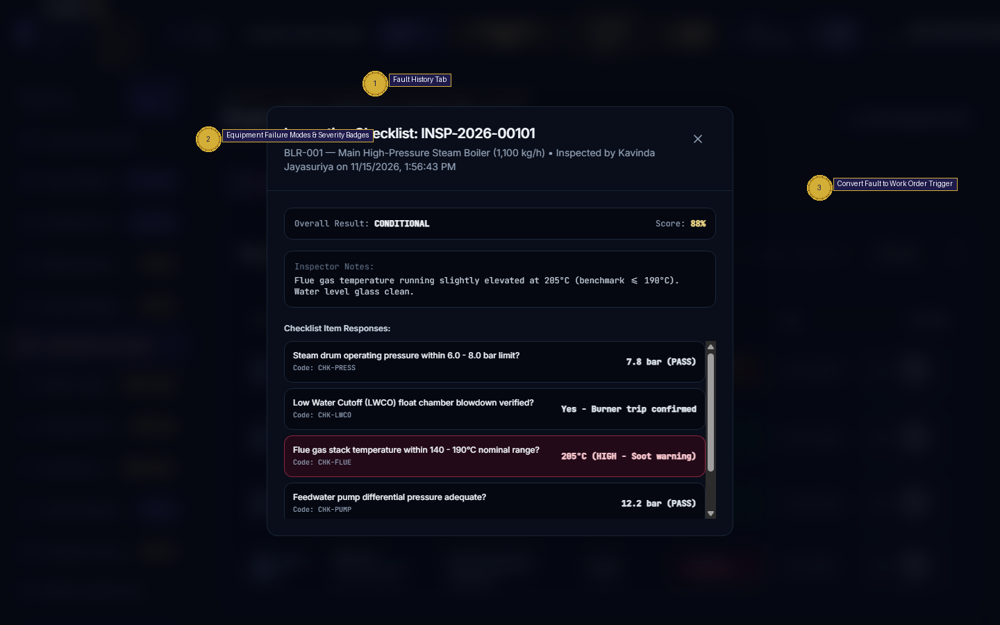
Figure 5.6: Fault History with Numbered Callouts
- Marker 1: Active Fault History Tab: Confirms fault tracking view.
- Marker 2: Equipment Failure Modes & Severity Badges: Displays equipment failure mode, descriptive findings, failure code (e.g.,
FLT-BRN-02), and severity pills (CRITICAL,MAJOR,MINOR). - Marker 3: Convert Fault to Work Order Trigger: Clicking Create Work Order instantiates a new corrective work order in
/work-orderspre-linked to the failed component and automatically updates the fault record status toconverted_to_wo.
#4. Field Reference: Inspection & Fault Records
#Inspection Record Fields
| Field | Purpose | Required | Format | Validation Rules | Example |
|---|---|---|---|---|---|
inspectionNumber | Sequential inspection identifier | Yes | String (INSP-YYYY-XXXXX) | Generated sequentially per organization | INSP-2026-00018 |
assetCode | Target equipment code | Yes | String | Must match active asset | BLR-001 |
templateName | Inspection checklist blueprint | Yes | String | Non-empty | Daily Industrial Boiler Shift Walkthrough |
overallResult | Aggregate inspection outcome | Yes | Enum | pass, warning, fail | warning |
inspectorName | Person conducting the walkthrough | Yes | String | Non-empty | M. Perera (Shift Operator) |
performedAt | Date and time inspection completed | Yes | ISO Date-Time | Valid timestamp | 2026-11-15T08:30:00Z |
#Fault Record Fields
| Field | Purpose | Required | Format | Validation Rules | Example |
|---|---|---|---|---|---|
faultCode | Defect tracking identifier | Yes | String | Unique code | FLT-2026-00104 |
assetCode | Defective equipment asset | Yes | String | Valid asset | P-001 |
failureMode | Classification of failure | Yes | String | Standard failure code | Mechanical Seal Packing Leakage |
severity | Risk impact severity | Yes | Enum | critical, major, minor | major |
description | Physical observation findings | Yes | Text | Detailed description | Steady water droplet leakage from gland seal > 15 drops/min. |
status | Defect resolution state | Yes | Enum | open, investigating, converted_to_wo, resolved | open |
06. Daily Boiler Monitoring Logbook
06-boiler-management.md#Module Guide: Daily Boiler Monitoring Logbook
#1. Overview & Purpose
The Daily Boiler Monitoring module provides a specialized 2-hourly digital logbook for industrial fire-tube and water-tube steam boilers (1,000 - 1,800\text{ kg/h} capacity). It replaces paper boiler log sheets, automatically validating operating parameters against engineering benchmarks, enforcing mandatory physical walkthrough checks, and feeding validated telemetry directly into the ANP decision-support engine.
#Core Capabilities
- 2-Hourly Watchkeeping Interval: Supports standardized industrial shifts (Shift A, Shift B, Shift C) and 2-hourly logging intervals (
06:00,08:00,10:00,12:00,14:00,16:00,18:00,20:00,22:00,00:00,02:00,04:00). - Instantaneous Limit Enforcement: Evaluates live sensor inputs against design working limits, providing real-time color-coded indicators (Normal: Emerald, Excursion: Gold/Red).
- Auto-Draft Corrective Work Orders: Automatically stages draft work order tickets when high-risk anomalies (such as flue gas soot fouling or excessive TDS) are recorded.
- Physical Walkthrough Checkpoints: Mandates verification of critical safety components, including sight glass water levels, blowdown execution, and flame scanner stability.
#2. Page Access & Permissions
- Route:
/daily-monitoring - Navigation Access: Click Boiler Logbook in the left navigation sidebar.
- Required Permission:
operations:daily_log(Permitted forOrganization Admin,Plant Reliability Engineer,Boiler Plant Operator, andMaintenance Technician).
#3. Visual Interface & Layout
#Active Shift Log Entry Form (LOG-001)

Figure 6.1: Boiler Logbook Active Shift Entry (1440 × 900)
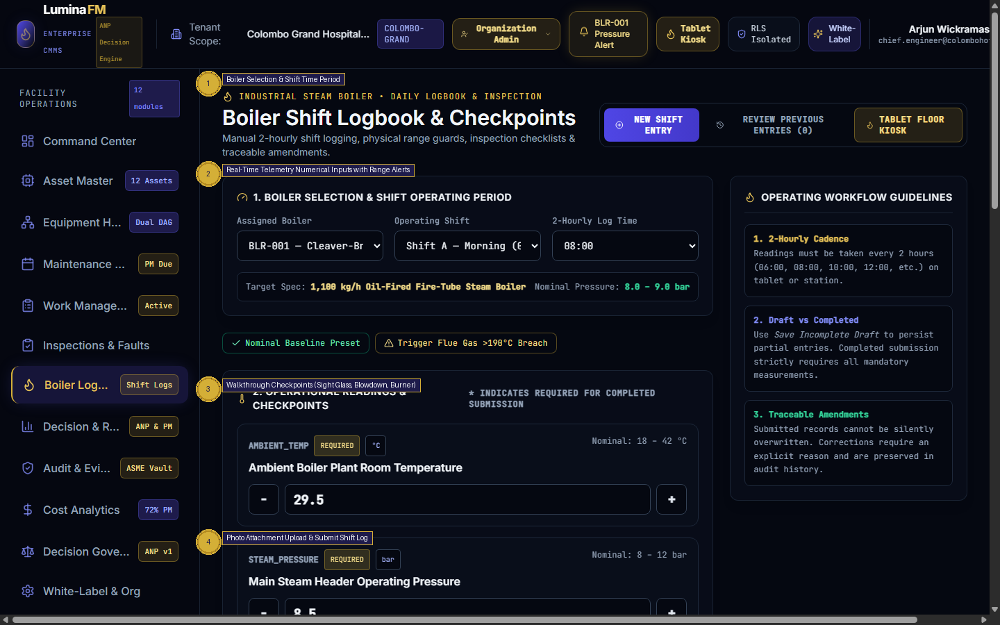
Figure 6.2: Boiler Logbook Entry with Numbered Callout Markers
#Callout Annotations Reference (Figure 6.2)
- Marker 1: Boiler Selection & Shift Time Period: Selects the operating boiler unit (
BLR-001), active watchkeeper shift (Shift A: 06:00–14:00), and logging time mark (08:00). - Marker 2: Real-Time Telemetry Numerical Inputs: High-precision numerical inputs with live range indicators. Entering values outside nominal limits immediately highlights the field with warning messages.
- Marker 3: Walkthrough Checkpoints: Physical operating checks (Gauge Glass Blowdown, Water Treatment Chemical Dosing, Primary Burner Flame Pattern) with instant Yes/No status toggles.
- Marker 4: Photo Attachment Upload & Submit Shift Log: Evidence photograph uploader with caption support, auto-draft work order toggle, and the primary Submit Shift Logbook button.
#Historical Shift Archive Tab (LOG-002)
Clicking the Historical Shift Archive tab displays past watchkeeper logs.

Figure 6.3: Historical Shift Archive View
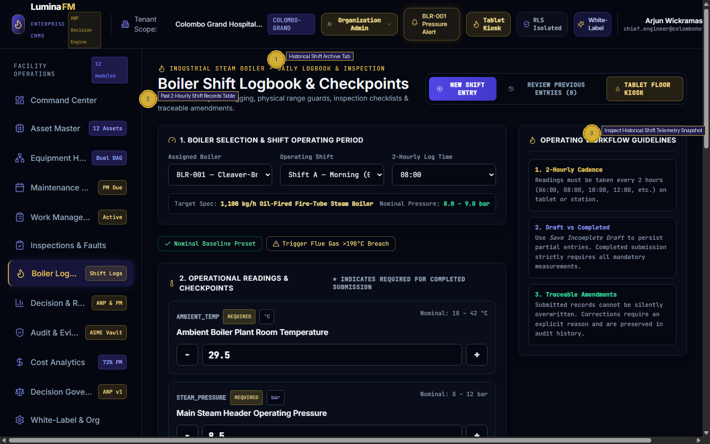
Figure 6.4: Historical Archive with Numbered Callouts
- Marker 1: Active Historical Shift Archive Tab: Highlights the archived shift logs view.
- Marker 2: Past 2-Hourly Shift Records Table: Chronological table displaying date, shift, time mark, recorded steam pressure, stack temperature, TDS, and operator sign-off.
- Marker 3: Inspect Historical Telemetry Snapshot: Clicking an archived log expands the complete parameter snapshot, including associated photographs and ANP calculation links.
#4. Telemetry Parameters & Engineering Limits
The logbook enforces the following thermodynamic and chemical boundaries:
| Parameter Key | Parameter Name | Engineering Unit | Nominal Operating Range | Alert Threshold (High) | Critical Action on Exceedance |
|---|---|---|---|---|---|
STEAM_PRESSURE | Main Steam Header Operating Pressure | \text{bar} | 6.0 - 10.0 | > 10.2\text{ bar} | Check modulating burner pressure regulator; test safety valve pop setting (10.5\text{ bar}). |
FLUE_GAS_TEMP | Stack Exit Gas Temperature | ^\circ\text{C} | 140.0 - 190.0 | > 190.0^\circ\text{C} | Indicates fireside soot fouling on tube banks; schedule soot blowdown and fireside brushing. |
BOILER_WATER_TDS | Total Dissolved Solids in Boiler Water | \text{ppm} | 1,500 - 2,500 | > 2,800\text{ ppm} | Risk of priming and steam carryover; execute bottom blowdown and increase continuous blowdown rate. |
AMBIENT_TEMP | Boiler Plant Room Air Intake Temp | ^\circ\text{C} | 20.0 - 38.0 | > 42.0^\circ\text{C} | Increases burner forced-draft fan intake temperature; inspect plant room ventilation dampers. |
WATER_LEVEL_OK | Gauge Glass Water Level Verified | Boolean | true | false | IMMEDIATE TRIP HAZARD: Perform sight glass drain blowdown. If low, shut down burner immediately. |
PUMP_HOURS | Feedwater Pump Operating Hours | \text{hours} | Non-decreasing | \Delta > 2.5\text{ hrs/period} | Inspect feed pump mechanical seal packing and motor bearing vibration. |
#5. Field Reference: Shift Log Submission Form
| Field | Purpose | Required | Format | Validation Rules | Example |
|---|---|---|---|---|---|
assetId | Target boiler asset UUID | Yes | UUID | Must reference valid boiler | a1000000-0000-0000-0000-000000000001 |
shiftCode | Operating shift identifier | Yes | Enum | SHIFT_A, SHIFT_B, SHIFT_C | SHIFT_A |
operatingPeriod | 2-hourly time stamp | Yes | String (HH:MM) | Standard 24h time format | 08:00 |
logDate | Operational calendar date | Yes | Date (YYYY-MM-DD) | Valid date | 2026-11-15 |
STEAM_PRESSURE | Header steam pressure reading | Yes | Number | 0.0 - 15.0\text{ bar} | 8.5 |
FLUE_GAS_TEMP | Flue gas exit temperature | Yes | Number | 50.0 - 350.0^\circ\text{C} | 175.0 |
BOILER_WATER_TDS | Boiler water TDS meter reading | Yes | Integer | 100 - 10,000\text{ ppm} | 2400 |
AMBIENT_TEMP | Boiler room air temperature | Yes | Number | 10.0 - 60.0^\circ\text{C} | 29.5 |
WATER_LEVEL_OK | Visual sight glass confirmation | Yes | Boolean | Must be confirmed true | true |
operatorNotes | Shift handover remarks | No | Text | Optional qualitative notes | Burner firing stable on modulating high fire. Sight glass blown down. |
autoDraftWorkOrder | Create draft work order on excursion | Yes | Boolean | Default: true | true |
07. Factory-Floor Operator Tablet Kiosk
07-floor-operator-kiosk.md#Module Guide: Factory-Floor Operator Tablet Kiosk
#1. Overview & Purpose
The Factory-Floor Operator Tablet Kiosk is a dedicated, touch-first mobile web application designed specifically for operators, watchkeepers, and maintenance technicians working on industrial plant floors. Engineered for use on iPads and Android tablets (in both portrait and landscape orientations), it accommodates operators wearing bulky protective work gloves in high-noise, high-temperature boiler rooms and central utility plants.
#Key Industrial Ergonomic Features
- Touch-First Target Standards: All interactive controls, buttons, and switches feature touch dimensions of at least 44 \times 44\text{px}, with numerical keys expanded to 64 \times 64\text{px}.
- Tactile Glove Numpad (
GloveNumpad): Pop-up floating numpad that eliminates reliance on miniature native mobile virtual keyboards. - Bipolar Glove Rocker Switches (
GloveRockerSwitch): Oversized physical toggle controls providing positive visual and tactile feedback for equipment walkthrough checks. - Integrated QR Barcode Scanner (
QrScannerModal): Allows operators to scan physical QR codes affixed to boiler nameplates or pumps to jump directly into the correct asset inspection log. - Offline PWA Local Persistence: Fully operational when working in subterranean basements or shielded utility vaults with zero cellular or Wi-Fi connectivity.
#2. Page Access & Permissions
- Route:
/operator - Navigation Access: Click the gold Tablet Kiosk button in the top navigation bar from any screen in LuminaFM.
- Permitted Roles: All authenticated roles (
Boiler Plant Operator,Maintenance Technician,Plant Reliability Engineer,Organization Admin).
#3. Visual Interface & Device Viewports
#Tablet Portrait Orientation (820 \times 1180) (KIOSK-001)
The primary posture for handheld field walkthroughs.

Figure 7.1: Factory-Floor Kiosk in Portrait Orientation (820 × 1180)
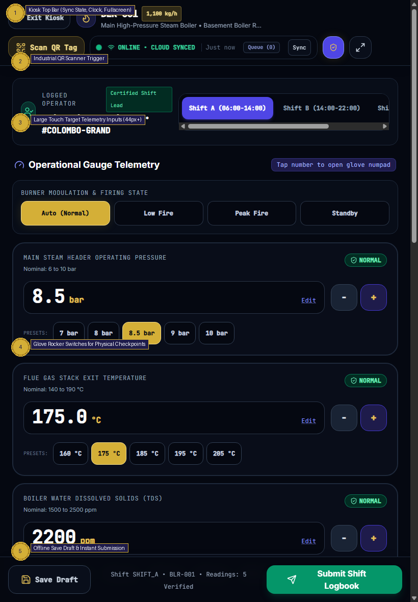
Figure 7.2: Kiosk Portrait View with Numbered Callout Markers
#Callout Annotations Reference (Figure 7.2)
- Marker 1: Kiosk Top Bar: Displays active offline synchronization status, network indicator, system time, battery meter, and fullscreen toggle button.
- Marker 2: Industrial QR Scanner Trigger: Clicking Scan Asset QR opens the barcode camera scanner.
- Marker 3: Large Touch Target Numerical Inputs: Field telemetry inputs (Steam Pressure, Stack Temp, Water TDS) with preset quick-tap buttons.
- Marker 4: Glove Rocker Switches: Bipolar toggle controls for physical verification checkpoints (Water Level OK, Chemical Dosing Active, Burner Flame Stable).
- Marker 5: Offline Save Draft & Instant Submission: Dual touch triggers to save a local draft into IndexedDB or immediately dispatch a shift log.
#Tablet Landscape Orientation (1180 \times 820) (KIOSK-002)
Optimized for tablet enclosures mounted directly to boiler burner control cabinets or field workstations.

Figure 7.3: Factory-Floor Kiosk in Landscape Orientation (1180 × 820)
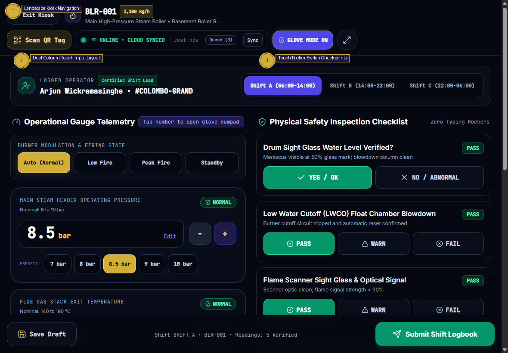
Figure 7.4: Kiosk Landscape View with Numbered Callout Markers
- Marker 1: Condensed Landscape Header: High-contrast top status bar with tenant logo.
- Marker 2: Dual-Column Touch Layout: Left column presents telemetry parameters; right column displays walkthrough rocker switches.
- Marker 3: Touch Rocker Switch Checkpoints: Arranged in accessible vertical cards.
#4. Specialized Touch Components & Modals
#A. Oversized Glove Numpad (GloveNumpad) (KIOSK-003)
Tapping the Numpad icon beside any numerical field summons the floating tactile keypad.

Figure 7.5: Oversized Tactile Glove Numpad
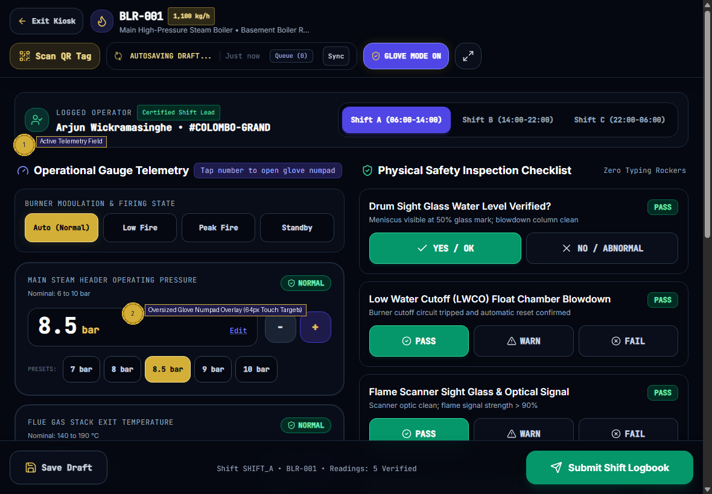
Figure 7.6: Glove Numpad with Numbered Callouts
- Marker 1: Active Telemetry Target Field: Shows the focused input (e.g.,
FLUE_GAS_TEMP: 175.0°C). - Marker 2: Oversized Glove Numpad (64\text{px} Targets): Grid of large keys (0 - 9, Decimal Point, Backspace, Clear) ensuring accurate entry when wearing leather or rubber work gloves.
- Marker 3: Preset Quick-Tap Buttons: Quick-selection values based on standard boiler operating benchmarks (e.g., 160^\circ\text{C}, 175^\circ\text{C}, 185^\circ\text{C}, 195^\circ\text{C}, 205^\circ\text{C}). Tapping a preset inputs the exact value instantly with zero typing.
#B. Industrial QR Barcode Scanner Modal (QrScannerModal) (KIOSK-004)
Clicking Scan Asset QR opens the scanner overlay.

Figure 7.7: Industrial QR Scanner Dialog
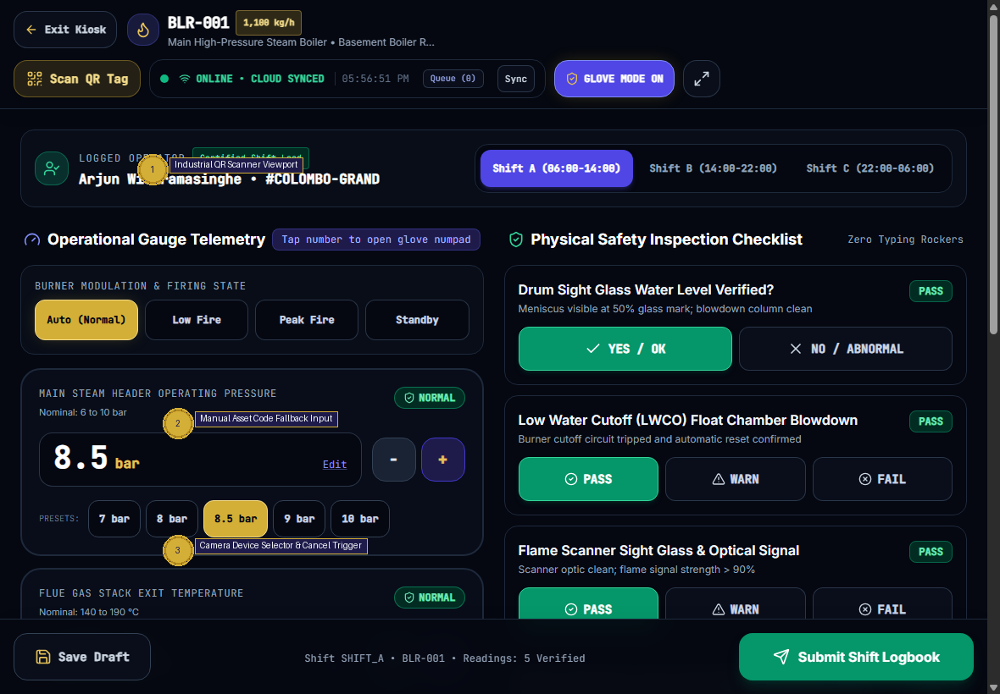
Figure 7.8: QR Scanner with Numbered Callouts
- Marker 1: Camera Video Viewport: Real-time camera viewfinder with targeting reticle.
- Marker 2: Manual Asset Code Fallback Input: Allows manual entry of the asset identifier (e.g.,
BLR-001) if the physical QR barcode tag is damaged or unreadable. - Marker 3: Camera Selector & Cancel: Toggles between front and rear cameras or cancels scanning.
#C. Offline Synchronization Queue Drawer (SyncQueueDrawer) (KIOSK-005)
Tapping the Sync Status Pill in the top bar opens the local persistence queue.

Figure 7.9: Offline Sync Queue Inspection Drawer
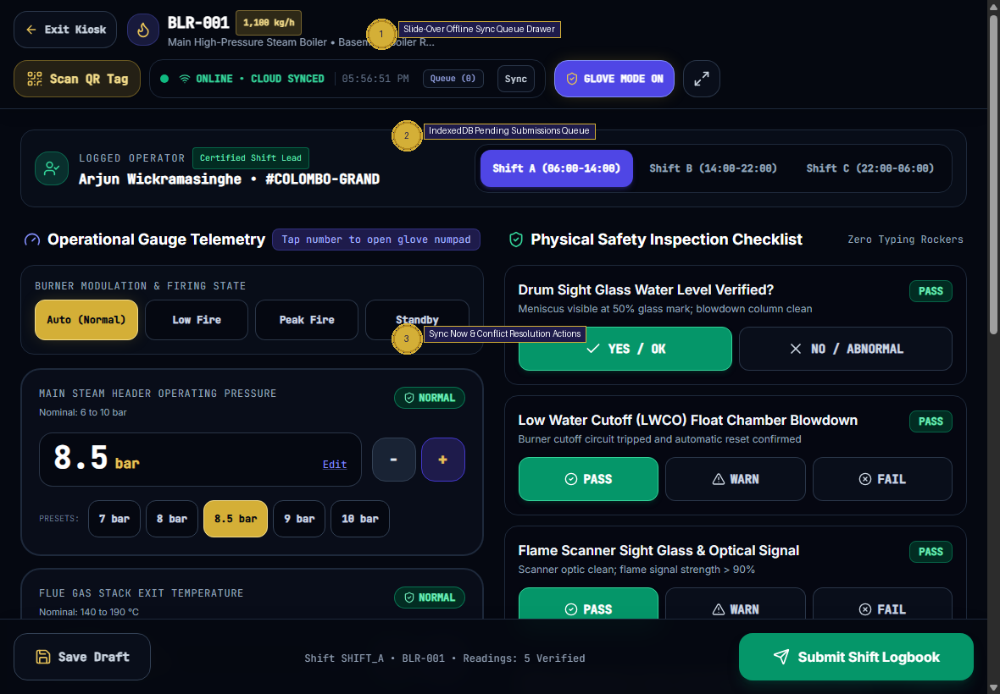
Figure 7.10: Sync Queue Drawer with Numbered Callouts
- Marker 1: Slide-Over Sync Drawer: Displays local IndexedDB offline storage status.
- Marker 2: Pending Submissions Queue: Lists shift logs and inspection records captured while offline, showing submission UUID, timestamp, and retry count.
- Marker 3: Sync Now & Conflict Resolution: Triggers manual synchronization retry or reviews conflict diffs if server data changed during disconnection.
#5. Field Reference: Factory-Floor Kiosk Inputs
| Field | Purpose | Minimum Target Size | Input Method | Validation Bounds |
|---|---|---|---|---|
STEAM_PRESSURE | Main header steam operating pressure | 48 \times 48\text{px} | Glove Numpad / Presets | 0.0 - 15.0\text{ bar} |
FLUE_GAS_TEMP | Stack exit temperature | 48 \times 48\text{px} | Glove Numpad / Presets | 50.0 - 350.0^\circ\text{C} |
BOILER_WATER_TDS | Dissolved solids in water | 48 \times 48\text{px} | Glove Numpad / Presets | 100 - 10,000\text{ ppm} |
AMBIENT_TEMP | Plant room combustion air temp | 48 \times 48\text{px} | Glove Numpad / Presets | 10.0 - 60.0^\circ\text{C} |
WATER_LEVEL_OK | Visual sight glass level verified | 56 \times 96\text{px} | Glove Rocker Switch | Bipolar: Normal / Abnormal |
CHEMICAL_DOSING_OK | Chemical feed pump operating | 56 \times 96\text{px} | Glove Rocker Switch | Bipolar: Normal / Abnormal |
BURNER_FLAME_OK | Stable flame envelope verified | 56 \times 96\text{px} | Glove Rocker Switch | Bipolar: Normal / Abnormal |
FEED_PUMP_RUNNING | Feedwater pump operating steadily | 56 \times 96\text{px} | Glove Rocker Switch | Bipolar: Normal / Abnormal |
08. Decision Support & Reporting Suite
08-decision-support-and-reporting.md#Module Guide: Decision Support & Reporting Analytics
#1. Overview & Purpose
The Decision Support & Reporting module translates raw facility telemetry and daily logbook observations into mathematical Analytic Network Process (ANP) maintenance recommendations, tracks operational threshold excursions, analyzes long-term equipment degradation trends, and routes critical alerts to external channels.
#Core Capabilities
- ANP Multi-Criteria Decision Evaluation: Computes priority vectors for candidate maintenance interventions (e.g., Burner Overhaul, Chemical Descaling, Refractory Baffle Repair, Feedwater Pump Overhaul) based on Kingsbury's validated dissertation supermatrix.
- Operational Abnormalities Management: Displays active threshold excursions and provides formal acknowledgement workflows for plant engineers.
- Multi-Parameter Trend Curves: Interactive time-series charts visualizing steam pressure stability, flue gas soot accumulation, and boiler water TDS trends.
- Multi-Channel Alert Dispatch: Configures alert delivery to corporate Email, SMS Webhooks, Slack channels, and PagerDuty endpoints.
- Official Compliance PDF Generation: One-click printable reports formatted with organizational crests, data classification badges, and signature sign-offs.
#2. Page Access & Permissions
- Route:
/reports - Navigation Access: Click Decision & Reporting in the left navigation sidebar.
- Required Permission:
work_orders:readto view;governance:manageto review recommendations (Permitted for all authenticated roles).
#3. Visual Interface & Navigation Tabs
The module is organized across five functional tabs:
#Tab 1: ANP Maintenance Decision Runs (REP-001)

Figure 8.1: ANP Decision Run Priorities & Recommendations (1440 × 900)
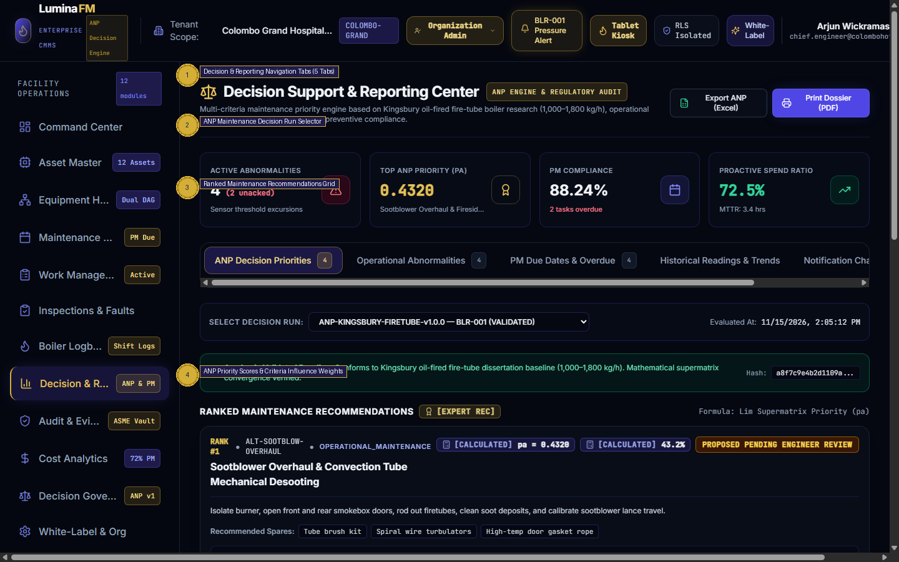
Figure 8.2: ANP Decision Interface with Numbered Callout Markers
#Callout Annotations Reference (Figure 8.2)
- Marker 1: Decision & Reporting Navigation Tabs: 5-tab strip (
ANP Decisions,Abnormalities,PM Due,Trends,Channels & Export). - Marker 2: Decision Run Selector: Dropdown to inspect historical mathematical calculation runs with model version (
v1.4.0) and execution timestamps. - Marker 3: Ranked Maintenance Recommendations Grid: Priority-ranked cards showing recommended actions, priority scores (e.g., 0.412 for Burner Overhaul), and criteria influence explanations.
- Marker 4: ANP Criteria Influence Weights: Visual breakdown of criteria driving the decision (Combustion Efficiency: 38\%, Fireside Heat Transfer: 27\%, Safety Risk: 21\%).
#Tab 2: Operational Abnormalities (REP-002)
Displays all active excursions exceeding nominal engineering limits.

Figure 8.3: Operational Abnormalities Tab View
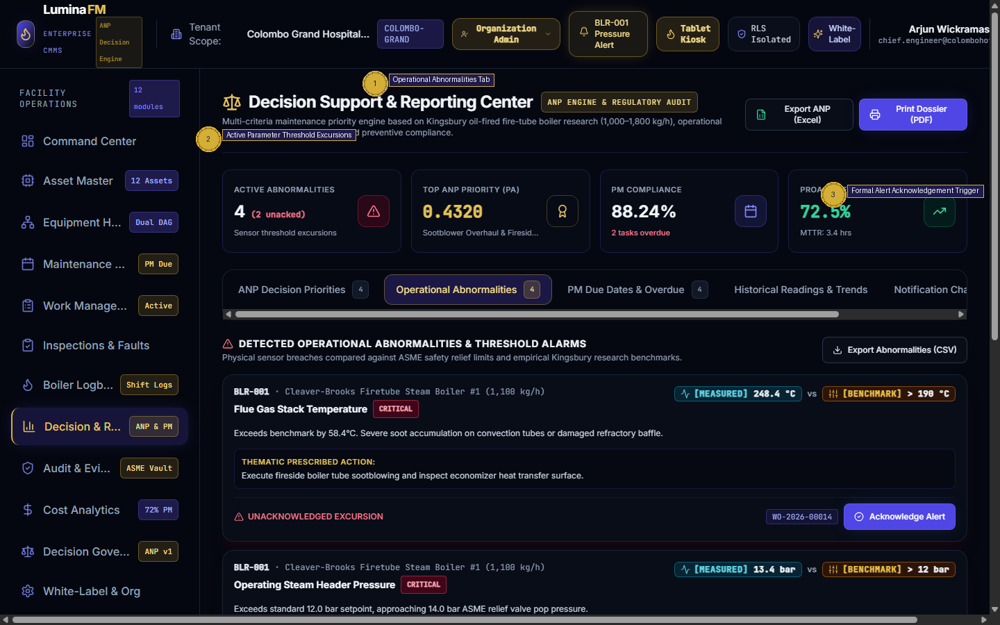
Figure 8.4: Abnormalities Tab with Numbered Callouts
- Marker 1: Active Abnormalities Tab: Confirms operational excursions view.
- Marker 2: Active Threshold Excursions Table: Lists asset code, parameter name, recorded value, design limit, excursion magnitude, and severity level (
CRITICAL,WARNING). - Marker 3: Formal Alert Acknowledgement Trigger: Clicking Acknowledge opens the mitigation sign-off modal.
#Tab 3: Alert Acknowledgement Modal (REP-003)
Clicking Acknowledge on any abnormality row launches the formal engineering sign-off dialog.

Figure 8.5: Operational Alert Acknowledgement Dialog
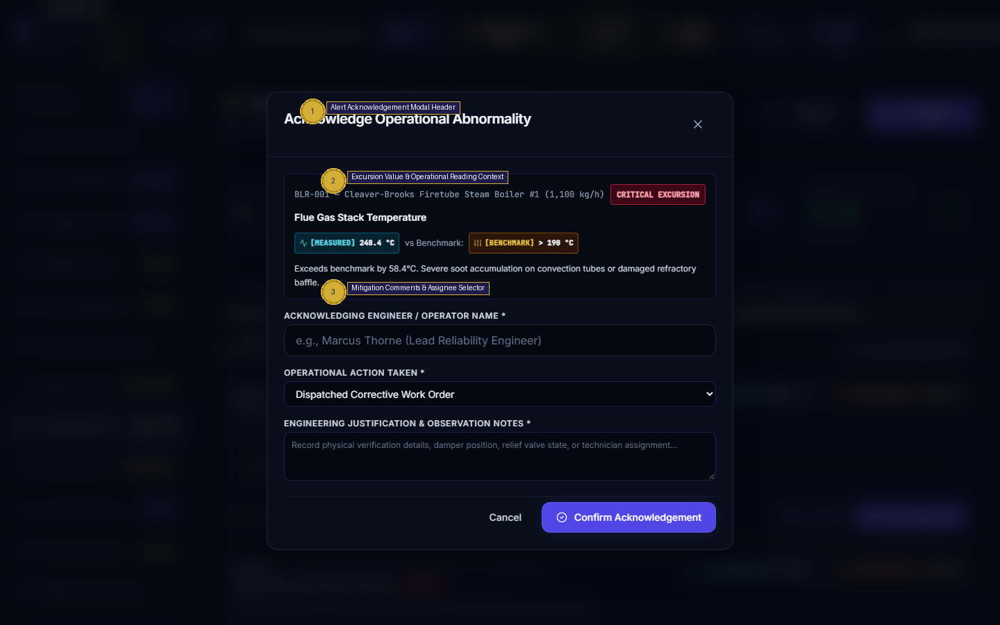
Figure 8.6: Acknowledgement Dialog with Numbered Callouts
- Marker 1: Modal Header: Excursion identifier and target equipment name.
- Marker 2: Excursion Value & Engineering Context: Shows recorded value vs. maximum allowable limit (e.g., Flue Gas Temp 205.0^\circ\text{C} > 190.0^\circ\text{C}).
- Marker 3: Mitigation Comments & Assignee: Mandatory text input for operating engineer remarks (e.g., "Sootblower run scheduled for 14:00") and technician assignment.
#Tab 4: Telemetry Historical Trends (REP-004)
Visualizes parameter trends over 7-day, 30-day, and 90-day operating windows.

Figure 8.7: Telemetry Historical Trends View
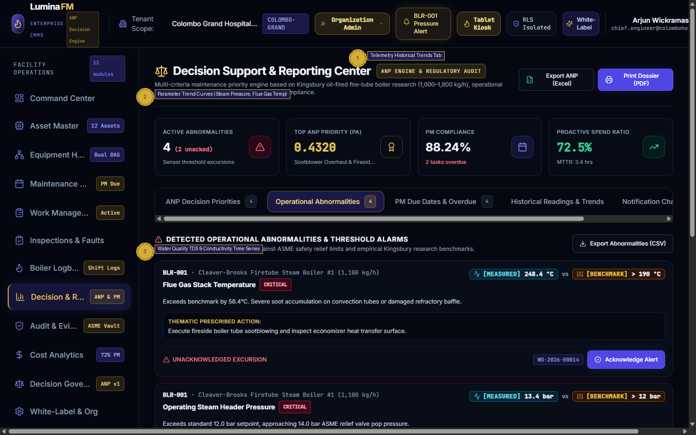
Figure 8.8: Trend Curves with Numbered Callouts
- Marker 1: Historical Trends Tab: Highlights time-series analytics view.
- Marker 2: Thermodynamic Parameter Curves: Multi-line chart tracking Steam Header Operating Pressure and Flue Gas Exit Temperature over time.
- Marker 3: Water Chemistry Trends: Charts Boiler Water TDS and Feedwater Conductivity against blowdown events.
#Tab 5: Notification Channels & Report Export (REP-005 & REP-006)
Configures external notification channels and generates formal compliance documents.

Figure 8.9: Notification Channels & Report Export Interface
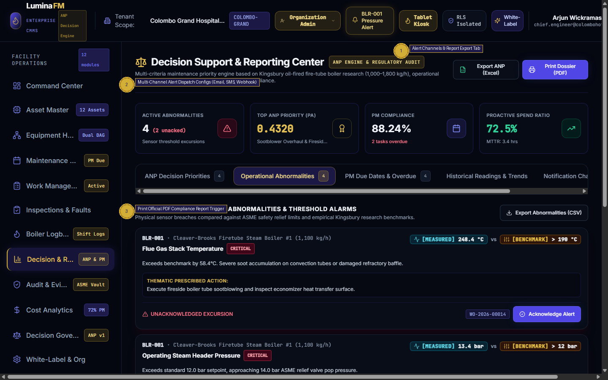
Figure 8.10: Channels & Export with Numbered Callouts
- Marker 1: Channels & Export Tab: Active export interface.
- Marker 2: Multi-Channel Alert Dispatch Configuration: Lists configured alert sinks (Email, SMS Webhook, Slack, PagerDuty) with active statuses.
- Marker 3: Print Official PDF Compliance Report: Opens an isolated printable report window formatted per corporate documentation standards.

Figure 8.11: Notification Channel Configuration Dialog
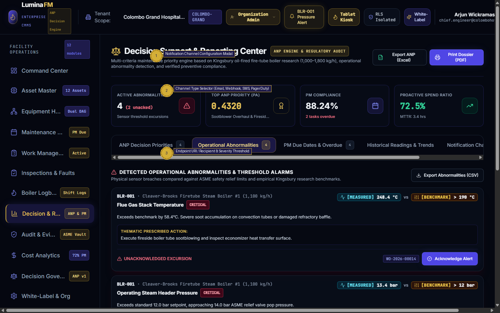
Figure 8.12: Channel Config Dialog with Numbered Callouts
- Marker 1: Modal Header: Channel configuration dialog.
- Marker 2: Channel Type Selector: Dropdown to select
EMAIL,SMS_WEBHOOK,SLACK, orPAGERDUTY. - Marker 3: Endpoint URI & Alert Threshold: Target address / webhook URI and minimum severity threshold required to trigger dispatch.
#4. Field Reference: Reporting & Notification Forms
#Alert Acknowledgement Form
| Field | Purpose | Required | Format | Validation Rules | Example |
|---|---|---|---|---|---|
mitigationNotes | Immediate corrective engineering actions | Yes | Text | Minimum 10 characters | Checked rotary cup burner; increased forced draft air damper opening by 5%. |
priorityOverride | Escalated priority level | No | Enum | low, medium, high, critical | high |
assignedTechnician | Lead technician assigned to inspect | No | String | Name or employee ID | D. Silva (Boiler Lead) |
#Notification Channel Configuration Form
| Field | Purpose | Required | Format | Validation Rules | Example |
|---|---|---|---|---|---|
channelName | Descriptive channel label | Yes | String | 3–50 characters | Central Control Room Slack Webhook |
channelType | External notification protocol | Yes | Enum | EMAIL, SMS_WEBHOOK, SLACK, PAGERDUTY | SLACK |
targetEndpoint | Webhook URL or destination address | Yes | URI / Email | Must be valid URI or email | https://hooks.slack.com/services/T00/B00/X00 |
minSeverity | Minimum threshold to trigger dispatch | Yes | Enum | ALL, WARNING_AND_CRITICAL, CRITICAL_ONLY | CRITICAL_ONLY |
09. Audit Trail & Evidence Vault
09-audit-and-evidence-vault.md#Module Guide: Enterprise Audit Trail & Evidence Vault
#1. Overview & Purpose
The Enterprise Audit & Evidence Vault module ensures complete regulatory traceability, non-repudiation, and document integrity across all facility maintenance operations. It records an immutable history of every create, update, delete, approval, and status-transition event while securing photographs, non-destructive examination (NDE) test certificates, and compliance dossiers with client-side SHA-256 cryptographic hashes.
#Core Capabilities
- Immutable Audit Trail: Captures actor identity, IP address, organization tenant ID, timestamp, and before/after state diffs for every critical action.
- SHA-256 Cryptographic Evidence Hashing: Computes cryptographic checksums upon upload to verify file integrity against tampering.
- Multi-Level Data Classification: Tags attachments according to enterprise data governance tiers:
PUBLIC,INTERNAL,CONFIDENTIAL, andRESTRICTED. - Regulatory Framework Mapping: Tracks compliance against governing boiler and asset management codes (ASME Section I, NBIC NB-23, ISO 55001, OSHA 1910.119 PSM).
- Exportable Evidence Packages: Compiles multi-source inspection, maintenance, and photographic evidence into standardized audit dossiers with cryptographic manifests.
#2. Page Access & Permissions
- Route:
/audit-evidence - Navigation Access: Click Audit & Evidence in the left navigation sidebar.
- Required Permission:
work_orders:readto view;assets:manageto upload evidence or sign off compliance (Permitted for all authenticated roles).
#3. Visual Interface & Navigation Tabs
The module contains four primary tabs:
#Tab 1: Immutable Audit Trail (AUDIT-001)

Figure 9.1: Immutable Audit Trail Table (1440 × 900)
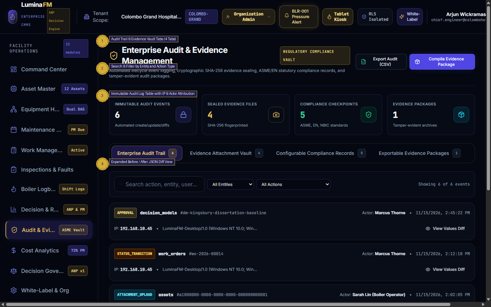
Figure 9.2: Audit Trail with Numbered Callout Markers
#Callout Annotations Reference (Figure 9.2)
- Marker 1: Audit Trail & Evidence Vault Tabs: 4-tab strip (
Audit Trail,Evidence Vault,Compliance Records,Evidence Packages). - Marker 2: Search & Filter Toolbar: Filter audit events by target entity (
Asset,WorkOrder,InspectionRecord,DailyLogbook), action (CREATE,UPDATE,STATUS_CHANGE), or user ID. - Marker 3: Immutable Audit Log Table: Displays timestamp, actor full name, tenant ID, action badge, entity code, and client IP address.
- Marker 4: Expanded Before / After JSON Diff View: Clicking any row expands an inline JSON diff viewer highlighting modified fields in red (old value) and green (new value).
#Tab 2: Secure Evidence Vault (AUDIT-002 & AUDIT-003)
Catalogs all uploaded inspection photographs, laboratory oil test certificates, and statutory inspection reports.

Figure 9.3: Secure Evidence Vault Attachment Register
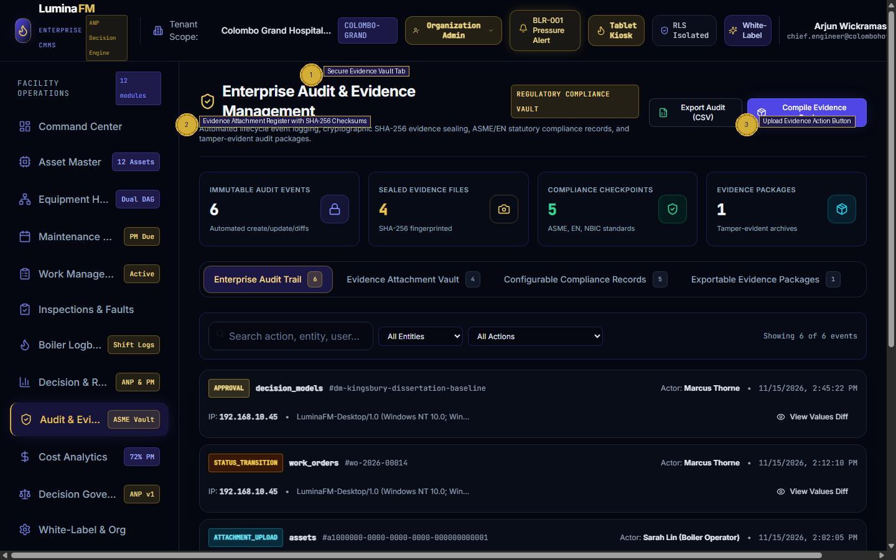
Figure 9.4: Evidence Vault with Numbered Callouts
- Marker 1: Active Evidence Vault Tab: Highlights the secure file repository view.
- Marker 2: Attachment Register with SHA-256 Checksums: Displays document title, file format (PDF, PNG, JPG), size, associated asset, data classification badge, and the SHA-256 cryptographic hash.
- Marker 3: Upload Evidence Action Button: Opens the
EvidenceUploadModaldialog.

Figure 9.5: Evidence Upload Dialog
Figure 9.6: Upload Dialog with Numbered Callouts
- Marker 1: Modal Header: Evidence upload dialog.
- Marker 2: File Selector & Associated Asset: Selects local document and links it to an active plant asset.
- Marker 3: Data Classification Selector: Assigns enterprise confidentiality rating (
PUBLIC,INTERNAL,CONFIDENTIAL,RESTRICTED).
#Tab 3: Regulatory Compliance Records (AUDIT-004 & AUDIT-005)
Maps maintenance and inspection activities directly to governing statutory standards.

Figure 9.7: Regulatory Compliance Records Tab
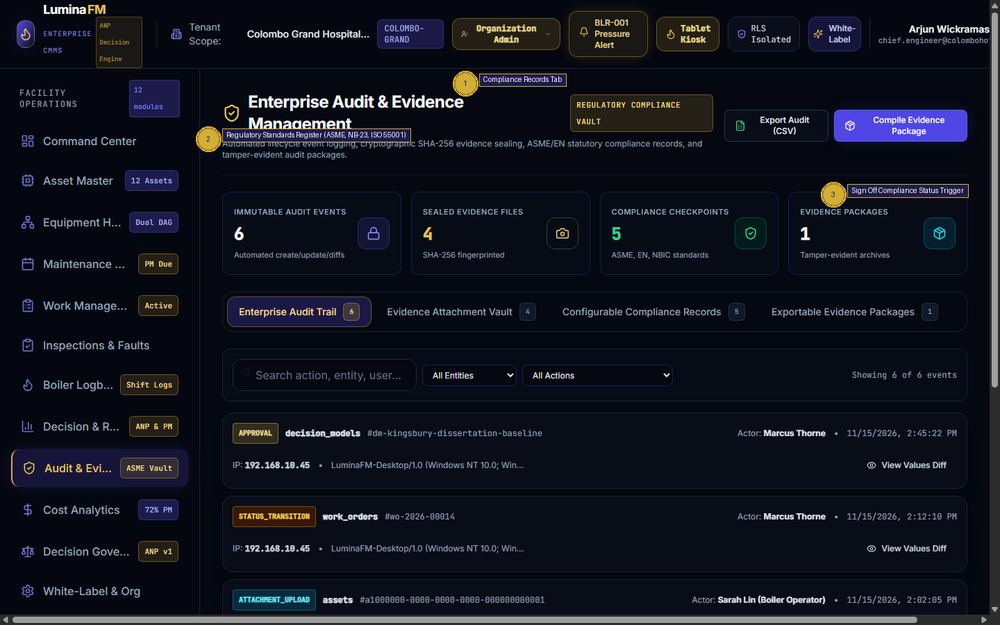
Figure 9.8: Compliance Records with Numbered Callouts
- Marker 1: Compliance Records Tab: Highlights statutory standards tracking.
- Marker 2: Regulatory Standards Register: Displays standard code (ASME Section I Part PG, NB-23 Part 2, ISO 55001 Clause 8), clause description, compliance state, and last audit date.
- Marker 3: Sign Off Compliance Status Trigger: Clicking Verify Compliance opens the formal auditor sign-off modal.

Figure 9.9: Compliance Verification Sign-Off Dialog
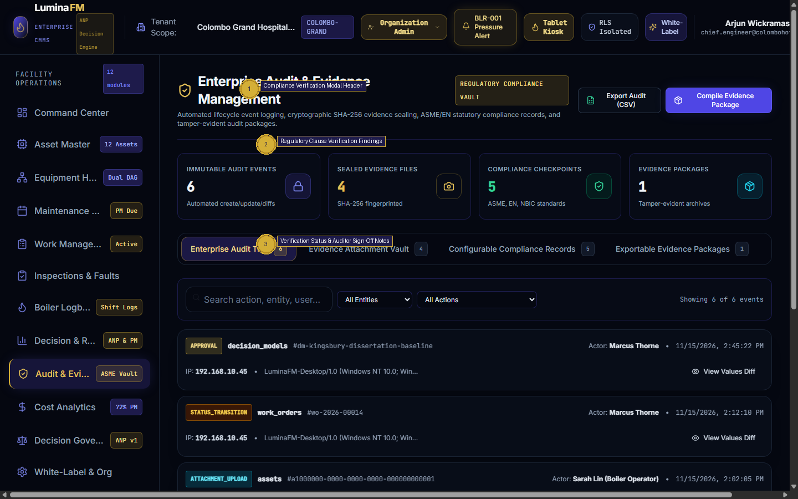
Figure 9.10: Verification Dialog with Numbered Callouts
- Marker 1: Modal Header: Standard clause title and reference code.
- Marker 2: Regulatory Clause Verification Findings: Findings summary and supporting work order evidence.
- Marker 3: Verification Status & Auditor Sign-Off: Verification status dropdown (
VERIFIED,PENDING_REVIEW,NON_COMPLIANT) and auditor sign-off remarks.
#Tab 4: Exportable Evidence Packages (AUDIT-006 & AUDIT-007)
Compiles multi-source records into exportable compliance packages.

Figure 9.11: Evidence Packages Register with Mandatory Disclaimer
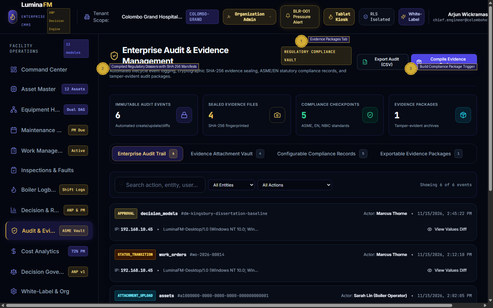
Figure 9.12: Evidence Packages with Numbered Callouts
- Marker 1: Evidence Packages Tab: Highlights package compilation view.
- Marker 2: Compiled Regulatory Dossiers: List of generated packages showing title, governing code, file count, package size, and download triggers.
- Marker 3: Build Compliance Package Trigger: Clicking Build Package launches the package builder wizard.

Figure 9.13: Evidence Package Builder Modal Dialog
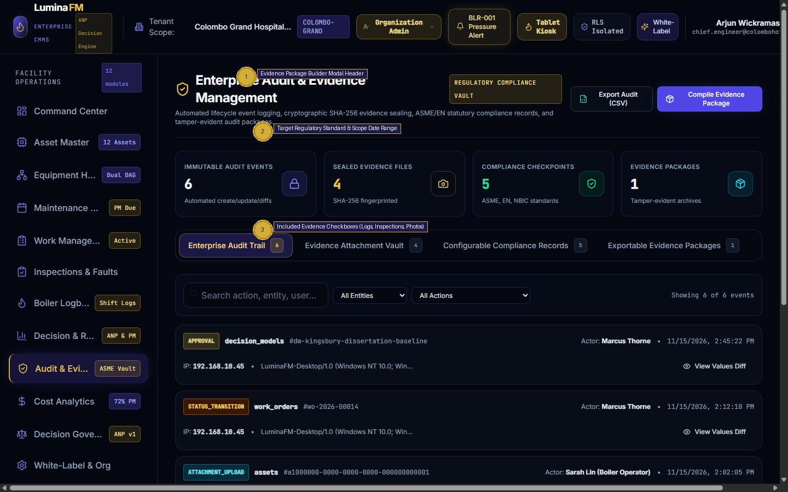
Figure 9.14: Package Builder with Numbered Callouts
- Marker 1: Modal Header: Package builder dialog.
- Marker 2: Target Regulatory Standard & Date Scope: Selects target governing standard and inspection date range.
- Marker 3: Included Evidence Checkboxes: Toggles inclusion of shift logbooks, PM work orders, calibration certificates, and inspection photographs.
#4. Field Reference: Audit & Compliance Forms
#Evidence Upload Form
| Field | Purpose | Required | Format | Validation Rules | Example |
|---|---|---|---|---|---|
file | Document to upload | Yes | Binary File | Max 10\text{ MB}; Allowed: PDF, PNG, JPG | BLR001_SafetyValve_Cert.pdf |
title | Human-readable document name | Yes | String | 3–100 characters | Safety Pop Valve Annual Recertification Certificate |
category | Evidence classification type | Yes | Enum | INSPECTION_PHOTO, REPORT, STANDARDS_CLAUSE, TEST_REPORT | TEST_REPORT |
assetId | Target equipment asset | Yes | UUID | Must reference valid asset | a1000000-0000-0000-0000-000000000001 |
classification | Data confidentiality rating | Yes | Enum | PUBLIC, INTERNAL, CONFIDENTIAL, RESTRICTED | RESTRICTED |
#Evidence Package Builder Form
| Field | Purpose | Required | Format | Validation Rules | Example |
|---|---|---|---|---|---|
packageTitle | Name of regulatory evidence dossier | Yes | String | 5–120 characters | 2026 Annual Statutory Boiler Inspection Evidence Package |
frameworkCode | Governing regulatory code | Yes | Enum | ASME_SEC_I, NBIC_NB23, ISO_55001, OSHA_1910 | ASME_SEC_I |
dateFrom | Beginning of audit review period | Yes | Date (YYYY-MM-DD) | Valid date \le dateTo | 2026-01-01 |
dateTo | End of audit review period | Yes | Date (YYYY-MM-DD) | Valid date \ge dateFrom | 2026-11-15 |
includePhotos | Attach high-resolution photographs | Yes | Boolean | Default: true | true |
includeLogs | Attach daily shift logbook records | Yes | Boolean | Default: true | true |
includeWorkOrders | Attach completed PM work orders | Yes | Boolean | Default: true | true |
10. Maintenance Financial Cost Analysis
10-maintenance-cost-analysis.md#Module Guide: Maintenance Financial Cost Analysis
#1. Overview & Purpose
The Maintenance Cost Analysis module provides executive financial visibility into facility maintenance expenditures. It tracks the distribution between scheduled preventive maintenance and unscheduled corrective repairs, evaluates labor and spare parts costs, and measures the facility's Proactive Maintenance Ratio against world-class industrial benchmarks.
#Core Capabilities
- Proactive vs. Reactive Cost Distribution: Compares expenditures dedicated to scheduled preventive maintenance against unplanned emergency breakdown costs.
- Proactive Maintenance Ratio Meter: Computes the ratio of proactive maintenance spend against total expenditure (72.4\% currently, benchmarked against the World-Class target of \ge 80\%).
- Resource Category Breakdown: Segregates spending across technician internal labor, stock spare parts, and external specialized service contractors.
- Spend by Equipment Class: Tabulates maintenance costs grouped by asset category (
Steam Boilers,Centrifugal Pumps,Water Chillers,Air Compressors). - Financial Ledger Exports: One-click generation of audit-ready CSV and JSON cost summaries.
#2. Page Access & Permissions
- Route:
/cost-analysis - Navigation Access: Click Cost Analytics in the left navigation sidebar.
- Access Level: Restricted / Protected.
- Required Roles:
Organization AdminorPlant Reliability Engineer. - Required Permission:
finance:read. - Behavior for Unauthorized Roles: Operators and Technicians attempting to access
/cost-analysisare greeted by an access-barrier
#3. Visual Interface & Layout
#Maintenance Cost Dashboard (COST-001)

Figure 10.1: Maintenance Financial Cost Analysis Dashboard (1440 × 900)
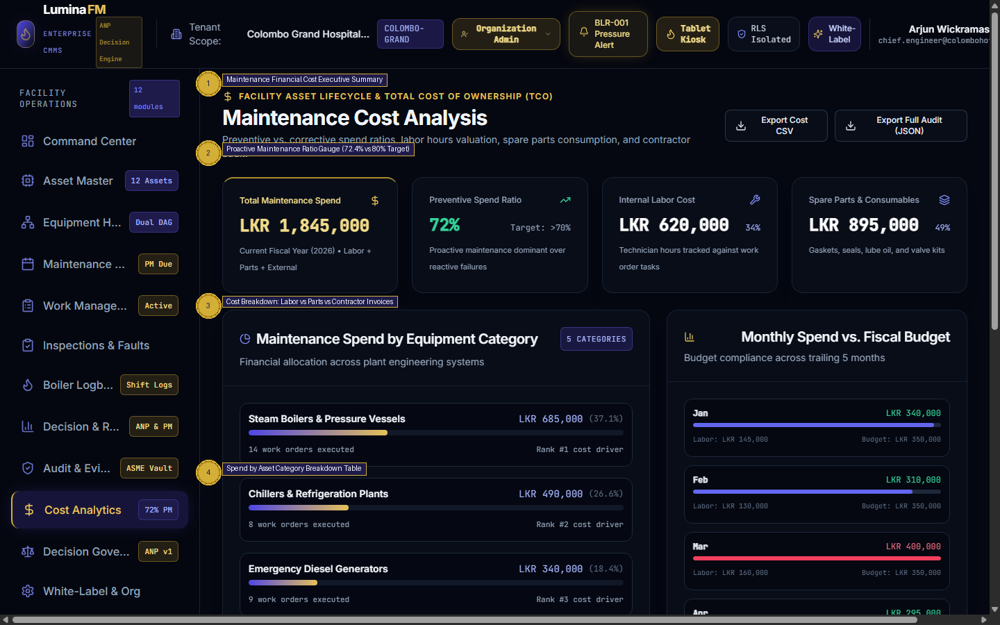
Figure 10.2: Financial Dashboard with Numbered Callout Markers
#Callout Annotations Reference (Figure 10.2)
- Marker 1: Maintenance Financial Cost Executive Summary: Summary cards displaying Total Spend (5,420,000\text{ LKR}), Preventive Maintenance Spend (3,924,000\text{ LKR}), and Unscheduled Corrective Spend (1,496,000\text{ LKR}).
- Marker 2: Proactive Maintenance Ratio Gauge (72.4% vs 80% Target): Visual progress meter tracking proactive labor and parts investment against the world-class 80\% threshold.
- Marker 3: Cost Breakdown (Labor vs. Parts vs. Contractors): Multi-segmented breakdown card displaying Internal Technician Labor (44\%), Spare Parts Consumed (34\%), and External Contractor Invoices (22\%).
- Marker 4: Spend by Asset Category Breakdown Table: High-density table tabulating total spend, percentage of plant budget, and total work order volume by equipment category.
#4. Financial Mathematical Formulations
LuminaFM calculates maintenance financial performance using the following standardized formulas:
#1. Proactive Maintenance Ratio (\text{PMR})
$\text{PMR} = \left( \frac{\text{Cost}_{\text{Preventive}} + \text{Cost}_{\text{Predictive}}}{\text{Cost}_{\text{Total Maintenance}}} \right) \times 100\%$
- Current Facility Value: 72.4\%
- Benchmark Target: \ge 80.0\% (World-class reliability benchmark per SMRP standards).
#2. Total Work Order Expenditure (\text{Cost}_{\text{WO}})
$\text{Cost}_{\text{WO}} = \sum (\text{Hours} \times \text{Rate}_{\text{Labor}}) + \sum (\text{Qty} \times \text{Cost}_{\text{Part}}) + \text{Cost}_{\text{Contractor}}$
#5. UI Component Details & Actions
| Component | UI Type | Purpose | Behavior & Effects |
|---|---|---|---|
| Export Category Spend (CSV) | Button (secondary) | Exports category breakdown table. | Downloads lumina_maintenance_category_costs.csv. |
| Export Financial Ledger (JSON) | Button (secondary) | Exports complete fiscal ledger. | Downloads lumina_annual_maintenance_financial_audit.json. |
| Proactive Ratio Progress Bar | Progress Meter | Highlights maintenance maturity. | Color shifts from Amber (<80\%) to Emerald (\ge 80\%). |
| Category Spend Rows | Table Rows | Displays per-category financial data. | Shows total cost, percentage of plant budget, and work order volume. |
11. ANP Decision Governance
11-decision-governance.md#Module Guide: ANP Decision Governance & Scientific Validation
#1. Overview & Purpose
The Decision Governance module provides scientific rigor, transparency, and version control for the Analytic Network Process (ANP) multi-criteria decision models powering LuminaFM. It preserves the original, academically validated Kingsbury dissertation baseline model for steam boilers (1,000 - 1,800\text{ kg/h}) while providing a structured framework for authorized decision administrators to propose, compare, and validate new commercial client configurations.
#Key Governance Principles
- Baseline Immutability: The original dissertation research configuration (
ANP-KINGSBURY-FIRETUBE-v1.0.0) is strictly preserved as a reproducible benchmark and cannot be edited. - Academic Validation Isolation: Commercial client configurations cannot claim academic validation unless formal empirical validation (literature review, expert consensus, and consistency ratios CR < 0.10) has been executed and reviewed.
- Side-by-Side Model Diffing: Evaluates criteria weight shifts and alternative ranking drift between different model iterations before approving a version for operational dispatch.
- Transparent Expert Provenance: Records literature references (with DOI citations) and anonymized expert profile judgments for every decision criterion.
#2. Page Access & Permissions
- Route:
/governance - Navigation Access: Click Decision Governance in the left navigation sidebar.
- Access Level: Restricted / Protected.
- Required Roles:
Organization AdminorPlant Reliability Engineer. - Required Permission:
governance:manage.
#3. Visual Interface & Navigation Tabs
The governance interface is divided into three functional tabs:
#Tab 1: Academic Baseline Model (GOV-001 & GOV-002)
Displays the foundational dissertation research configuration.

Figure 11.1: ANP Academic Baseline Governance View (1440 × 900)
Figure 11.2: Baseline Governance View with Numbered Callout Markers
#Callout Annotations Reference (Figure 11.2)
- Marker 1: Governance Navigation Tabs: 3-tab strip (
Academic Baseline,Version Comparison,Commercial Proposals). - Marker 2: Kingsbury Dissertation Baseline (14 Criteria, 4 Clusters): Displays criteria organized into:
- Performance & Energy Efficiency: Combustion efficiency, thermal stack losses, blowdown heat recovery.
- Operating Safety & Risk: Safety valve reliability, water level control interlocks, flame failure response.
- Water Quality & Chemistry: Feedwater hardness, boiler water TDS, dissolved oxygen pitting.
- Equipment Reliability: Burner mechanical wear, refractory lining condition, feed pump cavitation.
- Marker 3: Literature Citations & 5 Anonymized Expert Profiles: Provenance panel displaying peer-reviewed literature citations and five expert profiles (anonymized per academic ethical clearances).
- Marker 4: Pairwise Consistency Ratios (CR < 0.10): Mathematical validation badges verifying that all pairwise comparison matrices satisfy Saaty's consistency ratio threshold (CR < 0.10).
#Criterion Governance Detail Modal (GOV-002)
Clicking Inspect Validation Details on any criterion card opens the provenance modal.

Figure 11.3: Criterion Governance Detail Dialog
Figure 11.4: Criterion Detail Dialog with Numbered Callouts
- Marker 1: Modal Header: Criterion title and unique code (e.g.,
CRIT_COMB_EFF). - Marker 2: Literature Citations & DOIs: Verifiable academic citations from ASME, Combustion Institute, and Energy Conversion journals.
- Marker 3: 5 Expert Judgments & Relevance Ratings: Ratings on a 1 - 5 scale with qualitative expert justifications and retention votes.
#Tab 2: Model Version Comparison Diff (GOV-003)
Allows reliability engineers to compare two decision models side by side.

Figure 11.5: Model Version Comparison Diff View
Figure 11.6: Version Comparison View with Numbered Callouts
- Marker 1: Active Version Comparison Tab: Confirms comparison layout mode.
- Marker 2: Model A vs. Model B Selector: Dropdown to select baseline model against candidate proposal.
- Marker 3: Side-by-Side Supermatrix Weight Shifts: Visual diff tables highlighting criteria additions, deletions, weight percentage shifts, and ranking drift for alternatives.
#Tab 3: Commercial Configurations & Proposals (GOV-004 & GOV-005)
Enables authorized engineers to draft new equipment configurations for commercial clients.

Figure 11.7: Commercial Configurations Register
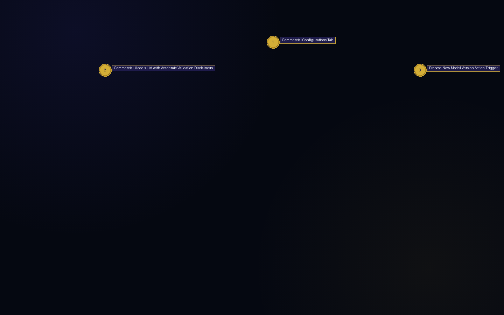
Figure 11.8: Commercial Register with Numbered Callouts
- Marker 1: Commercial Proposals Tab: Highlights client model proposals view.
- Marker 2: Commercial Models List with Disclaimers: Displays commercial configurations clearly marked with
CONFIGURED_HEURISTICstatus and academic validation disclaimers. - Marker 3: Propose New Model Version Action Trigger: Clicking Propose New Model Version launches the creation modal.

Figure 11.9: Propose Model Version Dialog
Figure 11.10: Propose Model Dialog with Numbered Callouts
- Marker 1: Modal Header: Model creation dialog.
- Marker 2: Model Code & Base Template: New model code and base template selector.
- Marker 3: Engineering Justification: Detailed rationale for proposed criteria modifications.
#4. Field Reference: Model Governance Forms
#Propose Model Version Form
| Field | Purpose | Required | Format | Validation Rules | Example |
|---|---|---|---|---|---|
modelCode | Unique model identifier | Yes | String | Uppercase alphanumeric with hyphens | ANP-COLOMBO-CLIENT-v1.1.0 |
modelName | Descriptive name of model configuration | Yes | String | 5–100 characters | Colombo Grand Industrial Boiler Optimized ANP Model |
baseModelId | Existing model to fork from | Yes | UUID | Must reference valid model | baseline-model-uuid |
description | Engineering rationale for model changes | Yes | Text | Minimum 15 characters | Adjusted water TDS weighting to reflect brackish coastal groundwater supply. |
#Expert Evaluation Submission Form
| Field | Purpose | Required | Format | Validation Rules | Example |
|---|---|---|---|---|---|
expertId | Anonymized expert profile identifier | Yes | String | E.g., EXP_01, EXP_02 | EXP_03 |
criterionCode | Target criterion being evaluated | Yes | String | Valid criterion code | CRIT_COMB_EFF |
relevanceRating | Relevance score to maintenance priority | Yes | Integer | Scale of 1 (Low) to 5 (Critical) | 5 |
retentionVote | Vote to keep or exclude criterion | Yes | Boolean | true (Keep) or false (Discard) | true |
qualitativeComments | Expert technical observations | Yes | Text | Minimum 10 characters | Essential parameter for oil-fired rotary cup burners to prevent unburned fuel loss. |
12. White-Label Branding & Settings
12-white-label-and-settings.md#Module Guide: White-Label Branding & Organization Settings
#1. Overview & Purpose
The Organization Settings module enables enterprise administrators to customize white-label branding, configure regional localization parameters, and verify multi-tenant infrastructure isolation.
#Core Capabilities
- Instant Client White-Labeling: Upload custom SVG, PNG, or JPG corporate logos with immediate visual preview in the sticky global header navigation bar.
- Preset Corporate Branding: One-click application of corporate brand identities for demonstration and multi-site configuration.
- Regional Localization: Configures operational timezones and reporting base currencies for international facility portfolios.
- Deployment Architecture Transparency: Displays multi-tenant SaaS vs. Dedicated customer deployment mode, PostgreSQL connection pool metrics, and Row-Level Security (RLS) tenant isolation UUIDs.
#2. Page Access & Permissions
- Route:
/settings - Navigation Access: Click White-Label & Org in the left navigation sidebar or click the White-Label shortcut in the top navigation bar.
- Access Level: Restricted to
Organization Admin. - Required Permission:
org:admin.
#3. Visual Interface & Navigation Tabs
The settings interface is organized across three primary tabs:
#Tab 1: White-Label Branding (SET-001)

Figure 12.1: White-Label Branding Settings Tab (1440 × 900)
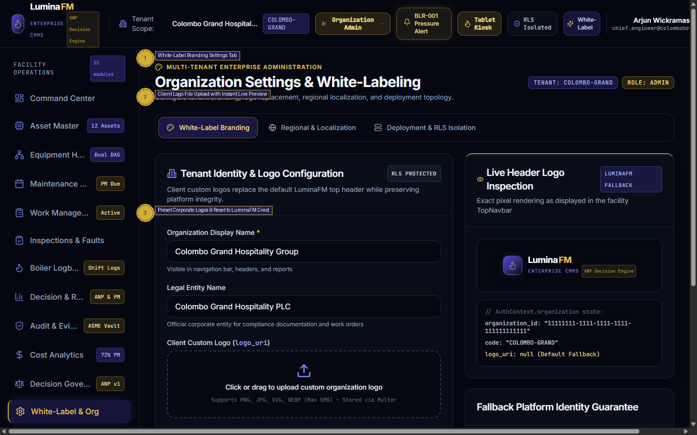
Figure 12.2: Branding Settings with Numbered Callout Markers
#Callout Annotations Reference (Figure 12.2)
- Marker 1: White-Label Branding Settings Tab: Active branding tab.
- Marker 2: Client Logo File Upload with Instant Live Preview: Drag-and-drop or file selector allowing upload of client logo files. The application immediately updates the top navbar brand crest via a local data URI reader.
- Marker 3: Preset Corporate Logos & Reset Trigger: Pre-configured corporate brand identities (
Colombo Grand Gold Crest,Ceylon Thermal Power Corp) and the Reset to Default trigger to restore the official LuminaFM crest.
#Tab 2: Regional & Localization Settings (SET-002)
Configures time and currency parameters.

Figure 12.3: Regional & Localization Settings Tab
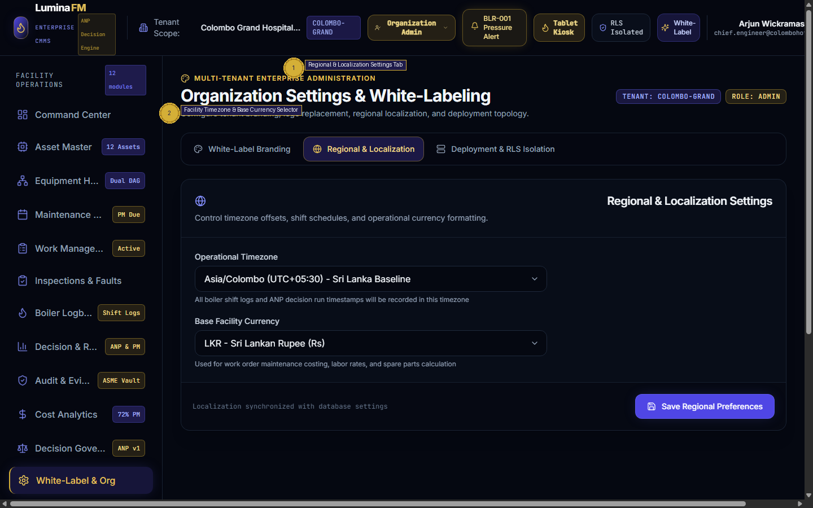
Figure 12.4: Localization Settings with Numbered Callouts
- Marker 1: Regional & Localization Tab: Active localization tab.
- Marker 2: Facility Timezone & Base Currency Selector: Dropdown menus to set the facility operating timezone (e.g.,
Asia/Colombo (UTC+05:30)) and base financial accounting currency (e.g.,LKR,USD,EUR,SGD).
#Tab 3: Deployment Architecture & Tenant Status (SET-003)
Provides operational transparency into cloud hosting infrastructure and database isolation.

Figure 12.5: Deployment Architecture & Infrastructure View
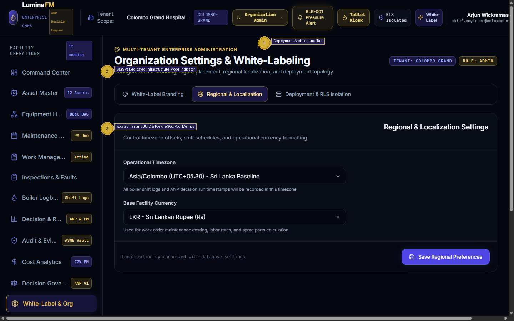
Figure 12.6: Deployment View with Numbered Callouts
- Marker 1: Deployment Architecture Tab: Active infrastructure view.
- Marker 2: SaaS vs. Dedicated Mode Indicator: Displays active cloud architecture:
- Shared Multi-Tenant SaaS: Tenant shares application instances with strict Row-Level Security (RLS) enforcement at the PostgreSQL database level.
- Dedicated Customer Deployment: Tenant operates on independent isolated infrastructure.
- Marker 3: Isolated Tenant UUID & Pool Metrics: Displays the tenant's cryptographic UUID (
11111111-1111-1111-1111-111111111111), active database pool connections, and transaction latency.
#4. Field Reference: Organization Configuration
| Field | Purpose | Required | Format | Validation Rules | Example |
|---|---|---|---|---|---|
organizationName | Corporate business name | Yes | String | 3–100 characters | Colombo Grand Hospitality Group |
legalName | Registered corporate entity name | Yes | String | 3–120 characters | Colombo Grand Hospitality PLC |
organizationCode | Unique tenant routing slug | Yes | String | Uppercase alphanumeric with hyphens | COLOMBO-GRAND |
logoFile | Custom corporate brand logo | No | Image File (SVG, PNG, JPG) | Max 2\text{ MB}; Scaled to 44\text{px} height | colombo_crest.svg |
timezone | Operating facility timezone | Yes | IANA Timezone String | Must be valid IANA timezone | Asia/Colombo |
baseCurrency | Ledger financial currency | Yes | ISO 4217 Currency Code | 3-letter currency code | LKR |
showPlatformBadge | Display 'Powered by LuminaFM' pill | Yes | Boolean | true or false | true |
4. Modals, Drawers & Form Reference
Modals Master Overview
README.md#LuminaFM User Manual — Modal, Drawer & Overlay System Reference
This document serves as the master architecture guide and exhaustive index for all 21 interactive overlay components in LuminaFM. It covers modal dialogs, slide-over drawers, specialized glove overlays, and contextual popovers implemented across the platform.
#1. Overlay System Architecture & Interaction Guidelines
LuminaFM employs a strict modal and drawer design pattern based on enterprise safety and ergonomic standards:
stateDiagram-v2
[*] --> Closed
Closed --> Triggered : User Clicks Button / Card / Pill
Triggered --> Initial : Mount Component & Initialize Form State
state "Interactive Lifecycle" as Lifecycle {
Initial --> UserInput : Keystroke / Touch / Selection
UserInput --> InvalidInput : Field Constraint Violated
InvalidInput --> UserInput : User Corrects Value
UserInput --> ValidInput : All Required Fields Valid
ValidInput --> Submission : Click Submit / Action Button
Submission --> Processing : Dispatch API / Service Call (Spinner active)
Processing --> Success : HTTP 200 / 201 OK
Processing --> Error : HTTP 4xx / 5xx or Validation Error
Error --> UserInput : Display In-Modal Error & Re-enable Inputs
}
Success --> Closed : Toast Notification / Re-render Calling View
Initial --> Closed : Click 'X' / Cancel / Backdrop / Press ESC
UserInput --> Closed : Cancel / Press ESC
InvalidInput --> Closed : Cancel / Press ESC#1.1 Architectural Standards
- Focus Trap & Keyboard Accessibility:
- When any modal or drawer is active, keyboard focus is strictly trapped within the DOM dialog container.
- Pressing
Escapeon physical keyboards triggers immediate dismissal (unless a destructive or in-flight network operation is actively saving).
- Backdrop & Z-Index Stratification:
- Backdrop: Dark translucent indigo-slate (
bg-midnight-950/85tobg-midnight-950/90) withbackdrop-blur-mdto maintain cognitive contrast while visually dimming the underlying tabular data. - Stacking order:
- Global Header / TopNavbar:
z-40 - Modal Backdrop & Window:
z-50 - Nested Touch Overlays (e.g. Glove Numpad over Floor Kiosk):
z-50 - Role Selector Popover:
z-50
- Form Validation & Safe Error Handling:
- Field validations evaluate on-blur and on-submit.
- Destructive operations require explicit confirmation or mandatory audit justification notes (e.g., Work Order status transitions, Compliance signoffs).
- Form inputs provide explicit input formats, numerical step boundaries, and live range indicators.
- Touch & Ergonomic Sizing:
- On desktop, dialogs span responsive widths (
sm= 448px,md= 512px,lg= 768px,xl= 896px). - On industrial floor kiosks and tablet viewports, all touch targets enforce minimum 44px (and 64px on glove numpads) to guarantee single-touch accuracy under harsh factory environments.
#2. Master Modals, Drawers & Overlays Directory
The 21 interactive overlays are grouped by functional operational domain across the following dedicated technical guides:
| Module Guide File | Covered Overlays | Associated Screenshots | Target Operational Domain |
|---|---|---|---|
| 01. Work Orders Modals | 1. CreateWorkOrderModal2. WorkOrderDetailModal3. WorkOrderStatusTransitionModal | WO-003WO-004 | Work Order Lifecycle, Task Checklists, Labor & Parts, Audit Justifications |
| 02. Inspections & Asset Drawers | 4. AssetDetailDrawer5. InspectionDetailModal | ASSET-002INSP-002 | Asset Technical Specs, Dynamic JSONB Attributes, Walkthrough Checkpoint Audits |
| 03. Floor Kiosk & Offline Modals | 6. QrScannerModal7. GloveNumpad Overlay8. SyncQueueDrawer9. LogoutSyncGuardModal | KIOSK-003KIOSK-004KIOSK-005 | Industrial QR Recognition, 64px Gloved Touch Entry, IndexedDB Sync Queue, Logout Data Guards |
| 04. Decision & Reporting Modals | 10. OperationalAnpDrawer11. AlertAcknowledgementModal12. NotificationChannelConfigModal13. RecommendationReviewModal14. PrintableReportWindow | REP-003REP-006 | ANP Decision Runs, Limit Supermatrix Telemetry, Alert Mitigations, Multi-Channel Webhooks, Print Export |
| 05. Audit Trail & Evidence Modals | 15. EvidenceUploadModal16. ComplianceVerificationModal17. EvidencePackageModal | AUDIT-003AUDIT-005AUDIT-007 | Cryptographic SHA-256 Vault, Statutory Clause Verification, Tamper-Evident Package Compilation |
| 06. Decision Governance Modals | 18. CriterionGovernanceDetailModal19. ProposeModelVersionModal20. ExpertEvaluationModal21. AttachEmpiricalEvidenceModal(Bonus: GovernanceApprovalModal) | GOV-002GOV-005 | Academic Dissertation Baselines (14 Criteria, 5 Experts), Model Version Proposals, Expert Retention Votes |
| 07. Navigation Popovers | 22. TopNavbarRoleSelectorPopover | NAV-001 | Instant Multi-Role RBAC Simulation, Active Scope Recomputation |
#3. Universal Modal Lifecycle States
Every modal documented in this series is evaluated against 7 verified UI lifecycle states:
- Initial State:
- The default rendering when triggered.
- Clean input fields with either empty values or sensible defaults.
- Submit buttons enabled or disabled based on required field criteria.
- User Input State:
- Active user typing, dropdown toggling, or file selection.
- Character count tracking (where applicable) and dynamic field enablement.
- Invalid Input State:
- Visual alerts triggered when input violates validation constraints (e.g., negative labor hours, missing certified inspector name, file exceeding 25MB).
- In-modal alert banner (
AlertTriangle) with clear corrective guidance.
- Valid Input State:
- All required fields conform to syntax, type, and range limits.
- Action triggers (e.g., "Create Work Order", "Save Channel", "Sign Off Record") shift to active primary styling.
- Submission State:
- Action button enters loading state with spinning indicator (
RefreshCw animate-spinorLoadingState). - Inputs are set to
disabledto prevent accidental double-submission.
- Success State:
- Modal automatically dismisses, or displays an inline success confirmation (
CheckCircle2). - Calling view refreshes data asynchronously and updates table counters.
- Failure State:
- Network or server validation errors (e.g., duplicate sequence number, 403 Forbidden) are captured.
- Rendered inline in an error container with red/rose accent; modal remains open so user input is preserved.
Work Orders Modals
01-work-orders-modals.md#Work Orders Modals & State Transition Overlays
This guide provides an exhaustive technical reference for all interactive modals and dialogs governing the Work Order lifecycle in LuminaFM:
- Create Work Order Modal (
CreateWorkOrderModal) - Work Order Detail Modal (
WorkOrderDetailModal) - Status Transition Reason Modal (
WorkOrderStatusTransitionModal)
#1. Create Work Order Modal (CreateWorkOrderModal)
#1.1 Purpose & Role Permissions
- Purpose: Initiates a formal, sequenced maintenance work order bound to an explicit equipment asset. Creates an active state-machine record starting in
draftoropenstatus. - Access Route:
/work-orders(Click the+ New Work Orderbutton in the top-right toolbar). - Authorized Roles:
Organization Admin: Full creation & direct authorization rights.Plant Reliability Engineer: Full creation rights.Boiler Plant Operator: Can create draft work orders from floor abnormalities.Maintenance Technician: Read-only (button hidden or restricted).
#1.2 Visual Presentation & Callout Annotations

<!-- slide -->
#Numbered Callout Descriptions
| Callout # | UI Component | Description & Operational Function |
|---|---|---|
| 1 | Modal Header & Context | Displays dialog title "Create Authorized Facility Work Order" and compliance subtext highlighting sequential numbering. |
| 2 | Work Order Title & Scope | Text input for high-level mechanical operation summary (e.g., "Centrifugal Chiller Annual Condenser Overhaul"). |
| 3 | Priority & Estimated Labor | Priority dropdown selector (Urgent, High, Medium, Low) and numerical input for estimated labor hours. |
| 4 | Action Triggers | Cancel (ghost button dismissing form) and Create Work Order (primary blue trigger executing API mutation). |
#1.3 Field-by-Field Form Specification
| Field Name | UI Input Type | Format / Type | Required? | Default Value | Validation Rules & Constraints |
|---|---|---|---|---|---|
| Work Order Title | Text Input | String (1–150 chars) | Yes | "" | Non-empty string. Whitespace-only rejected. |
| Technical Scope of Work | Multiline Textarea | String (0–2000 chars) | Optional | "" | Optional descriptive narrative detailing isolation, lock-out/tag-out (LOTO), and mechanical steps. |
| Priority | Select Dropdown | Enum (urgent, high, medium, low) | Yes | medium | Must match one of 4 defined priority tiers. Urgent triggers high-visibility alerts. |
| Estimated Labor (Hours) | Number Input | Float (step="0.5") | Yes | 2.0 | Minimum 0.5 hours. Must be positive numerical float. |
#1.4 Interactive Lifecycle States
flowchart TD
S1["1. Initial State<br/>(Title empty, Priority='medium', Est=2.0h)"] --> S2["2. User Input State<br/>(Typing Title & Scope)"]
S2 --> S3{"3. Validation Check"}
S3 -- "Title empty or Est < 0.5" --> S4["4. Invalid State<br/>(HTML5 validation tooltip, Submit blocked)"]
S4 --> S2
S3 -- "Title provided & Est >= 0.5" --> S5["5. Valid State<br/>(Create button active)"]
S5 --> S6["6. Submission State<br/>(isSubmitting=true, spinner active)"]
S6 -- "API Success 201" --> S7["7. Success State<br/>(Modal closes, WO prepended to table)"]
S6 -- "API Failure 500/400" --> S8["8. Failure State<br/>(Error message, form preserved)"]- Initial State:
- Title is blank.
- Technical Scope textarea is empty with placeholder:
"Detailed mechanical tasks, safety precautions, and isolation requirements...". - Priority defaults to
medium. - Estimated Labor is preset to
2.0hours. Create Work Orderbutton is enabled (will trigger HTML5 validation if clicked immediately).
- User Input State:
- Operator types title (e.g.,
"Centrifugal Chiller Annual Condenser Overhaul"). - Priority changed to
urgentorhigh. - Labor estimated at
16.0hours.
- Invalid Input State:
- If user submits with blank title: browser focuses on title field with
"Please fill out this field". - If estimated labor is set to
0or negative: field enforcesmin="0.5".
- Valid Input State:
- Title filled, priority selected, labor hours valid. Form ready for atomic transaction.
- Submission State:
- Clicking
Create Work OrdersetsisSubmitting = true. - The button displays an inline animated spinner icon; buttons are disabled against repeat clicks.
- Success State:
- API returns HTTP 201 Created with generated
workOrderNumber(e.g.WO-2026-0042). - Modal unmounts automatically.
- Parent
WorkOrdersPagetriggersloadData()to refresh both List and Kanban views.
- Failure State:
- If the backend rejects the submission (e.g., DB constraint or network failure), an alert is displayed and the modal remains open with all inputs preserved.
#2. Work Order Detail Modal (WorkOrderDetailModal)
#2.1 Purpose & Role Permissions
- Purpose: Comprehensive inspection and lifecycle management dialog for an existing Work Order. Surfaces current lifecycle state, allowed atomic transitions, execution checklist tasks, technician labor tracking, spare parts consumption, and financial ledger totals.
- Access Route:
/work-orders(ClickDetailsbutton on any row in List view, or click any Work Order card in Kanban view). - Authorized Roles:
Organization Admin&Plant Reliability Engineer: Full transition execution, task editing, and cost review.Maintenance Technician: Check off tasks, log labor hours, log spare parts.Boiler Plant Operator: Read-only view of progress and status.
#2.2 Visual Presentation & Callout Annotations

<!-- slide -->
#Numbered Callout Descriptions
| Callout # | UI Component | Description & Operational Function |
|---|---|---|
| 1 | Modal Header & Asset Context | Displays workOrderNumber (e.g. WO-001), work order title, and linked asset code (BLR-001 — Main High-Pressure Steam Boiler). |
| 2 | State Machine & Status Bar | Shows Current State (in_progress), Priority (critical), and dynamic gold action buttons for all permitted state transitions. |
| 3 | Execution Task Checklist | Scrollable task registry with sequence numbering (#1, #2, #3), task descriptions, and status pills (completed, in_progress, pending). |
| 4 | Financial Cost Ledger | Monospace 4-column cost summary calculating Labor Cost, Parts Cost, Contractor Cost, and cumulative Total Cost. |
#2.3 Execution Task Checklist & State Management
The modal renders all sequential tasks registered under the Work Order:
| Task Component | Data Field | Display Style | Behavior |
|---|---|---|---|
| Sequence Number | task.sequenceNo | Font-mono text in Indigo-400 (#1, #2) | Indicates prescribed operational execution order. |
| Description | task.description | Slate-200 text | Details the physical mechanical requirement (e.g., "Calibrate primary steam pressure transmitter PT-101"). |
| Task Status Pill | task.status | completed (Emerald)in_progress (Gold)pending (Slate) | Visual badge reflecting individual task completion state. |
#2.4 Financial Cost Breakdown Grid
When cost records exist on the Work Order, an integrated ledger is rendered:
$\text{Total Work Order Cost} = \text{Labor Cost} + \text{Parts Cost} + \text{Contractor Cost}$
| Cost Category | Field Key | Format | Example Value | Description |
|---|---|---|---|---|
| Labor Cost | costs.laborCost | Currency ($) | $320.00 | Technician internal billing rate \times logged operational hours. |
| Parts Cost | costs.partsCost | Currency ($) | $145.50 | Inventory requisition value for gaskets, valves, and seals. |
| Contractor Cost | costs.contractorCost | Currency ($) | $0.00 | Third-party specialist or certified NDT inspector fees. |
| Total Cost | costs.totalCost | Bold Gold Currency ($) | $465.50 | Audited financial cost committed against the asset cost center. |
#3. Status Transition Reason Modal (WorkOrderStatusTransitionModal)
#3.1 Purpose & Role Permissions
- Purpose: Enforces regulatory compliance and non-repudiation by requiring an explicit technical justification reason whenever an operator transitions a Work Order from one lifecycle state to another.
- Access Route: Inside
WorkOrderDetailModal, clicking any dynamic"Transition togold action button." - Authorized Roles:
Organization Admin&Plant Reliability Engineer: Permitted across all states.Maintenance Technician: Permitted transitions fromassigned\rightarrowin_progress\rightarrowcompleted.- Terminal states (
closed,cancelled): Require Admin or Lead Engineer approval.
#3.2 State Machine Transition Matrix
stateDiagram-v2
direction LR
[*] --> draft
draft --> open : Dispatch
draft --> cancelled : Cancel
open --> approved : Authorize
open --> assigned : Assign Tech
open --> in_progress : Start Work
open --> cancelled : Cancel
approved --> assigned : Assign Tech
approved --> in_progress : Direct Start
approved --> cancelled : Cancel
assigned --> in_progress : Tech Starts
assigned --> on_hold : Delay/Parts
assigned --> cancelled : Cancel
in_progress --> on_hold : Awaiting Parts
in_progress --> completed : Work Done
in_progress --> cancelled : Abort
on_hold --> in_progress : Resume
on_hold --> cancelled : Abort
completed --> closed : Supervisor Signoff
completed --> in_progress : Reopen
closed --> [*]
cancelled --> [*]#Valid Next States Matrix
| Current State | Permitted Next States (VALID_NEXT_STATES) | Required Action Button Label |
|---|---|---|
draft | open, cancelled | TRANSITION TO OPEN, TRANSITION TO CANCELLED |
open | approved, assigned, in_progress, cancelled | TRANSITION TO APPROVED, TRANSITION TO ASSIGNED, etc. |
approved | assigned, in_progress, cancelled | TRANSITION TO ASSIGNED, TRANSITION TO IN_PROGRESS, etc. |
assigned | in_progress, on_hold, cancelled | TRANSITION TO IN_PROGRESS, TRANSITION TO ON_HOLD, etc. |
in_progress | on_hold, completed, cancelled | TRANSITION TO ON_HOLD, TRANSITION TO COMPLETED, etc. |
on_hold | in_progress, cancelled | TRANSITION TO IN_PROGRESS, TRANSITION TO CANCELLED |
completed | closed, in_progress | TRANSITION TO CLOSED, TRANSITION TO IN_PROGRESS |
closed | (Terminal State — No transitions permitted) | Displays: Work Order reached terminal state (closed) |
cancelled | (Terminal State — No transitions permitted) | Displays: Work Order reached terminal state (cancelled) |
#3.3 Form Specification: Transition Reason
| Field Name | Input Type | Format / Constraints | Required? | Purpose & Audit Impact |
|---|---|---|---|---|
| Transition Notes / Justification Reason | Text Input | String (1–255 chars) | Yes | Mandatory explanation of why the state is changing (e.g. "Completed mechanical seal installation and passed leak test at 10.5 bar"). Written to immutable audit trail. |
#Cancel & Close Behavior
- Clicking
Cancelor pressingEscapedismisses the reason prompt without mutating the Work Order state. - Clicking
Confirm State Transitionrecords the status update, stores the user's justification into the change log, closes both modals, and refreshes the primary Work Orders table.
Inspections & Asset Drawers
02-inspections-and-assets-drawers.md#Inspections & Asset Management Drawers & Modals
This guide provides an exhaustive technical reference for the detail inspection overlays within LuminaFM:
- Asset Detail Drawer (
AssetDetailDrawer) - Inspection Detail Modal (
InspectionDetailModal)
#1. Asset Detail Drawer (AssetDetailDrawer)
#1.1 Purpose & Role Permissions
- Purpose: Provides a full-height, slide-over drawer for deep technical inspection of any physical asset registered in the facility. Renders core asset specifications, dynamic JSONB equipment attributes, physical and process hierarchy paths, operational meters, and historical work order logs.
- Access Route:
/assets(Clicking on any asset row or card in the Asset Master Registry). - Authorized Roles:
Organization Admin&Plant Reliability Engineer: Read and full inline editing rights for dynamic attributes.Boiler Plant Operator&Maintenance Technician: Read-only inspection rights.
#1.2 Visual Presentation & Callout Annotations

<!-- slide -->
#Numbered Callout Descriptions
| Callout # | UI Component | Description & Operational Function |
|---|---|---|
| 1 | Background Dimmed Registry | Backdrop overlay (bg-midnight-950/80) maintaining context while preventing stray clicks on the underlying table. |
| 2 | Slide-Over Drawer Container | High-contrast drawer panel (w-full max-w-xl md:max-w-2xl bg-midnight-900 border-l border-slate-800) with smooth entrance animation and sticky header. |
| 3 | Dynamic Technical Specifications | JSONB-driven attribute section displaying category-specific technical parameters (e.g. Design Steam Pressure, Heating Surface Area, Fuel Burner Capacity) with inline edit controls. |
| 4 | Operating Meters & WO History | Tabular telemetry readouts for cumulative operating hours, total fuel throughput, and linked historical work orders. |
#1.3 Layout & Section Breakdown
graph TD
A["Asset Detail Drawer Header<br/>(Asset Code, Name, Badges, Close X)"] --> B["Hierarchy Context Bar<br/>(Physical Location & Process Loop)"]
B --> C["Core Engineering Specifications<br/>(Make, Model, Serial, Install Date)"]
C --> D["Dynamic Equipment Attributes (JSONB)<br/>(View Mode / Edit Mode with Dirty Tracking)"]
D --> E["Operational Cumulative Meters<br/>(Operating Hours, Steam Delivered)"]
E --> F["Maintenance History & Linked Work Orders"]#Section 1: Header & Status Indicators
- Asset Code: Large monospace gold tag (e.g.,
BLR-001,CHL-001). - Asset Name: Primary mechanical designation (e.g.,
"Main High-Pressure Steam Boiler (1,100 kg/h)"). - Status Badge: Real-time asset health state (
operational,degraded,in_maintenance,decommissioned). - Criticality Badge: Impact ranking (
critical,high,medium,low). - Close Button (X): Top-right icon button; also triggerable via physical
Escapekey.
#Section 2: Physical & Process Hierarchies
- Physical Hierarchy: Displays breadcrumb path: \text{Site} \rightarrow \text{Building} \rightarrow \text{Room} (e.g.,
Main Campus\rightarrowCentral Utilities Plant\rightarrowBasement Boiler Room B-01). - Process Hierarchy: Displays system loop membership (e.g.,
Steam Distribution Loop A,Chilled Water Return Loop 2).
#Section 3: Dynamic Technical Attributes (JSONB)
LuminaFM uses a dynamic JSONB schema allowing different equipment classes (boilers, chillers, pumps) to carry distinct engineering parameters without altering the database schema:
| Attribute Code | Display Label | Data Type | Example Value | Description |
|---|---|---|---|---|
design_pressure_bar | Design Working Pressure | number | 10.5 | Maximum allowable working pressure (MAWP) in bar. |
steam_capacity_kgh | Nominal Steam Evaporation | number | 1100.0 | Maximum rated continuous steam output in kg/h. |
heating_surface_sqm | Total Heating Surface Area | number | 28.4 | Boiler water-wall and fire-tube surface area in \text{m}^2. |
burner_fuel_type | Primary Burner Fuel | string | Heavy Fuel Oil (HFO) | Verified combustible fuel specification. |
has_economizer | Flue Gas Economizer Fitted | boolean | true | Boolean toggle indicating secondary heat recovery unit. |
last_ndt_inspection | Last Ultrasonic NDT Date | date | 2026-05-12 | Regulatory shell thickness inspection timestamp. |
#1.4 Dynamic Attribute Edit Mode & Validation
When an authorized engineer clicks the Edit Attributes button:
- All static values convert to interactive inputs (inputs, number steppers, toggles).
- The drawer tracks dirty changes in local
draftValuesstate. - If an invalid value is entered (e.g. negative pressure or non-numerical string in number field), inline warning alerts prevent submission.
- Clicking
Save ChangesdispatchesPATCH /api/v1/assets/:id/attributesand displays an inline confirmation message ("Dynamic attributes saved successfully"). - Clicking
Cancelreverts all fields to their committed server state.
#2. Inspection Detail Modal (InspectionDetailModal)
#2.1 Purpose & Role Permissions
- Purpose: Displays the certified, completed checklist record for a facility walkthrough inspection. Surfaces checkpoint-by-checkpoint pass/fail statuses, recorded meter readings, identified anomalies, inspector credentials, and audit signoff timestamps.
- Access Route:
/inspections(Clicking theView Detailseye icon on any row in the Walkthrough Inspections tab). - Authorized Roles: Accessible to all authenticated facility roles (
Organization Admin,Plant Reliability Engineer,Boiler Plant Operator,Maintenance Technician).
#2.2 Visual Presentation & Callout Annotations

<!-- slide -->
#Numbered Callout Descriptions
| Callout # | UI Component | Description & Operational Function |
|---|---|---|
| 1 | Modal Header & Context | Displays inspection reference code (e.g. INSP-2026-001), inspected asset code, inspector name, and inspection timestamp. |
| 2 | Score & Overall Result Bar | Summary status strip indicating Overall Disposition (PASS, FAIL, WARNING) and quantitative compliance score (94%). |
| 3 | Checklist Item Breakdown | Scrollable list of verified checkpoints with question descriptions, item codes, recorded responses, and red anomaly highlights. |
#2.3 Checkpoint Data Structure & Anomaly Alerting
Each inspection record contains an array of verified checkpoints:
| Checkpoint Field | Format | Example Value | Description |
|---|---|---|---|
| Question | String | "Check feed pump mechanical seal for weeping or packing leakage" | Human-readable instruction followed during physical walkthrough. |
| Item Code | Monospace String | CHK-PUMP-SEAL-01 | Normalized taxonomy code linking checkpoint to historical defect trends. |
| Answer | String | Pass / Fail / 0.2 mm / Normal | Direct input recorded by inspector at the equipment. |
| Anomaly Flag | Boolean (isAnomaly) | true / false | If true, row renders with a high-contrast rose background (bg-rose-950/40 border-rose-500/50) and white text. |
#Anomaly Escalation Workflow
When a checkpoint is flagged with an anomaly:
- LuminaFM surfaces the row in high-visibility alert styling.
- The parent inspection receives an overall disposition of
WARNINGorFAIL. - The defect is automatically registered under the Fault History Tab (
INSP-003), where an engineer can trigger a 1-click Dispatch WO action to escalate the fault into a formal maintenance work order.
#2.4 Inspector Signoff & Audit Header
| Inspection Metadata Field | Database Column | Example Value | Description |
|---|---|---|---|
| Inspection Code | inspectionNumber | INSP-2026-001 | Unique facility sequence ID. |
| Inspector Name | inspectorName | Dave Miller (Boiler Plant Operator) | User who conducted the walkthrough. |
| Inspection Timestamp | inspectedAt | 2026-11-15T08:30:00Z | Cryptographically signed execution date and time. |
| Overall Score | scorePercentage | 94% | Ratio of passed checkpoints over total checkpoints. |
| Inspector Narrative Notes | notes | "Minor weeping noted on auxiliary feed pump packing. Main pump nominal." | Unstructured observation comments. |
#Dismissal & Escape Behavior
- Clicking the
Closebutton or pressingEscapecloses the modal immediately without altering any inspection records (inspections are immutable historical records).
Floor Kiosk Modals & Overlays
03-floor-kiosk-modals.md#Floor Kiosk & Offline Synchronization Modals & Overlays
This guide provides an exhaustive technical reference for the industrial floor-operator overlays and offline synchronization dialogs in LuminaFM:
- Industrial QR Scanner Modal (
QrScannerModal) - Glove-Accessible Numerical Numpad Overlay (
GloveNumpad) - Offline Synchronization Queue Drawer (
SyncQueueDrawer) - Logout Synchronization Guard Modal (
LogoutSyncGuardModal)
#1. Industrial QR Scanner Modal (QrScannerModal)
#1.1 Purpose & Role Permissions
- Purpose: Enables factory-floor boiler operators to instantly identify and lock onto equipment by scanning high-contrast 2D Data Matrix or QR codes affixed to physical asset nameplates.
- Access Route:
/operator(Clicking the largeScan QR Barcodebutton in the kiosk toolbar). - Authorized Roles: Accessible to all authenticated floor operators and technicians (
Boiler Plant Operator,Maintenance Technician,Plant Reliability Engineer,Organization Admin).
#1.2 Visual Presentation & Callout Annotations

<!-- slide -->
#Numbered Callout Descriptions
| Callout # | UI Component | Description & Operational Function |
|---|---|---|
| 1 | Camera Viewfinder Viewport | Simulated live camera feed with an industrial high-contrast aiming reticle and animated laser scanline. |
| 2 | Manual Asset Code Fallback | Text input field allowing manual entry of asset codes if physical metal barcodes are obscured by boiler soot or grease. |
| 3 | Hardware Controls & Dismissal | Flashlight illumination toggle (Flashlight), camera stream selector, and oversized 48px Close button. |
#1.3 Interactive Controls & Barcode Parsing
flowchart LR
A["Camera Capture"] --> B{"QR Barcode Detected?"}
B -- Yes --> C["Parse 'LUMINA:ASSET:<CODE>'"]
C --> D["Validate against Local Asset DB"]
D --> E["Auto-Populate Telemetry Form & Dismiss"]
B -- No / Damaged --> F["Operator Uses Manual Fallback Input"]
F --> D| Control Element | UI Type | Touch Target | Action / Impact |
|---|---|---|---|
| Viewfinder Reticle | Visual HUD | N/A | Center targeting box bounding the optical recognition area. |
| Flashlight Toggle | Button | 48 \times 48\text{ px} | Activates device camera flash LED for dark boiler rooms and pump basements. |
| Simulated Asset Tags | Quick-Tap Pills | 44\text{ px Height} | Pre-configured plant targets (BLR-001, BLR-002, P-001, CHL-001) for test environments. |
| Manual Code Input | Text Field | 48\text{ px Height} | Direct keyboard entry fallback (e.g. typing BLR-001). |
| Close Scanner (X) | Button | 48 \times 48\text{ px} | Stops active camera video tracks and unmounts scanner dialog. |
#2. Glove-Accessible Numerical Numpad Overlay (GloveNumpad)
#2.1 Purpose & Ergonomic Design
- Purpose: Factory-floor boiler rooms require operators to wear thick leather or thermal protective gloves. Standard on-screen tablet keyboards cause frequent miss-taps. The
GloveNumpadprovides an oversized, high-contrast numerical keypad specifically calibrated for gloved touch interaction. - Access Route:
/operator(Tapping any numerical reading field, such as Steam Pressure, Flue Gas Temp, Water Level, or TDS). - Touch Target Standard: Keypad buttons enforce a minimum size of 64 \times 64\text{ px} with 8px physical margins.
#2.2 Visual Presentation & Callout Annotations

<!-- slide -->
#Numbered Callout Descriptions
| Callout # | UI Component | Description & Operational Function |
|---|---|---|
| 1 | Target Telemetry Readout | Large monospace display reflecting current entered value, unit of measure (bar, °C, %), and parameter code. |
| 2 | Tactile Keypad Matrix (64px+) | Oversized numerical keys (0–9, decimal point ., backspace, clear C, step + / -) for gloved accuracy. |
| 3 | Preset Value Quick-Tap Buttons | Pre-calibrated operating setpoint shortcuts (e.g., 0.0, 5.0, 10.0, 10.5 bar) for single-touch entry. |
#2.3 Keypad Matrix & Input Constraints
graph TD
subgraph "Numpad Display Bar"
DISP["10.35 bar (Target: Steam Header Pressure)"]
end
subgraph "Tactile Keypad Grid"
K1["7"] --- K2["8"] --- K3["9"] --- KP["+0.5 Step"]
K4["4"] --- K5["5"] --- K6["6"] --- KM["-0.5 Step"]
K7["1"] --- K8["2"] --- K9["3"] --- KC["CLEAR (C)"]
K0["0"] --- KD["."] --- KB["BACKSPACE"] --- KOK["CONFIRM (OK)"]
end
subgraph "Quick Setpoint Presets"
P1["Preset: 0.0"] --- P2["Preset: 5.0"] --- P3["Preset: 10.0"] --- P4["Preset: 10.5"]
end| Key / Feature | Behavior & Validation |
|---|---|
| Numerical Keys (0–9) | Appends digit to string. If current value is "0", replaces "0" with typed digit. Enforces maximum length of 9 characters. |
| Decimal Point (.) | Appends decimal. Enforces single decimal rule: if . is already present, subsequent taps are safely ignored. |
| Backspace (\leftarrow) | Deletes trailing character. If only one digit remains, safely resets value to "0". |
| Clear (C) | Instantly resets entered value to "0". |
| Step Buttons (+ / -) | Increments or decrements current float value by predefined step delta (\pm 0.1 or \pm 0.5) rounded to 2 decimal places. |
| Presets Row | Overwrites display directly with common plant values (e.g. atmospheric 0.0, idle 5.0, normal load 10.2). |
| Range Validation Guard | Live comparison against minValue and maxValue. If exceeded, display border shifts to amber warning and displays: Value outside nominal operating range. |
| Confirm Action (OK) | Commits entered numerical float to the underlying shift logbook form and closes numpad. |
#3. Offline Synchronization Queue Drawer (SyncQueueDrawer)
#3.1 Purpose & Architecture
- Purpose: Provides visibility into local IndexedDB queues during network outages, surfaces transmission retries, and gives operators a transparent interface to inspect and resolve submission conflicts.
- Access Route:
/operator(Clicking the Sync Status Pill in the top-right status bar). - Storage Layer: Browser IndexedDB (
lumina_offline_store) backed by local ServiceWorker persistence.
#3.2 Visual Presentation & Callout Annotations

<!-- slide -->
#Numbered Callout Descriptions
| Callout # | UI Component | Description & Operational Function |
|---|---|---|
| 1 | Slide-Over Drawer Container | High-contrast drawer panel displaying current network state (ONLINE / OFFLINE) and pending queue volume. |
| 2 | IndexedDB Submission Queue | Chronological list of queued shift submissions with unique client IDs, timestamps, and retry counts. |
| 3 | Queue Actions & Conflict Tools | Force Sync Now trigger, Clean Synced Items garbage collection button, and conflict resolution modal. |
#3.3 Queued Item Lifecycle & Statuses
stateDiagram-v2
[*] --> queued : Offline Submission Saved
queued --> syncing : Network Detected / Force Sync
syncing --> synced : HTTP 201 Server Acknowledged
syncing --> retry : HTTP 5xx / Network Timeout
retry --> syncing : Exponential Backoff Retry (Max 5)
retry --> failed : Exhausted Retries
syncing --> conflict : HTTP 409 Conflict Detected
conflict --> resolved : Operator Resolves Conflict
resolved --> syncing
synced --> [*] : Cleaned from Tablet Storage| Status Key | Badge Display | Meaning & Operator Action |
|---|---|---|
queued | Blue Clock | Record safely stored in local IndexedDB; awaiting network restoration. |
syncing | Gold Animated Spinner | Payload actively transmitting to central server. |
synced | Emerald Checkmark | Confirmed committed to authoritative PostgreSQL database. |
retry | Amber Alert | Temporary network dropout; system will automatically re-attempt with exponential backoff. |
conflict | Rose Shield Alert | Server detected a conflicting submission from another tablet or shift log. Requires operator resolution. |
#3.4 Conflict Resolution Workflow
When a submission encounters an HTTP 409 Conflict:
- LuminaFM never silently overwrites existing server records.
- The item is highlighted in the
SyncQueueDrawerwith aResolve Conflictbutton. - Clicking
Resolve Conflictpresents two non-destructive options:
- Amend as Traceable Revision: Appends the local record as an explicit timestamped correction note referencing the original submission ID.
- Discard Local Duplicate: Safely purges the local duplicate if the operator confirms the reading was already recorded.
#4. Logout Synchronization Guard Modal (LogoutSyncGuardModal)
#4.1 Purpose & Data Protection Standards
- Purpose: Prevents accidental loss of un-synchronized boiler operational logs when an operator attempts to log out of a shared floor tablet while offline.
- Trigger: Clicking the
Sign Outbutton in the top navigation or sidebar while unsynchronized records remain in the local tablet queue. - Regulatory Rule: Under industrial safety standards, shift telemetry must either be transmitted to central servers or explicitly preserved in local isolated storage before ending an operator session.
#4.2 Modal Dialog Options & Behavior
flowchart TD
LOGOUT["Operator Clicks Sign Out"] --> CHECK{"Unsynced Records in Queue?"}
CHECK -- No --> EXIT["Execute Direct Logout -> /login"]
CHECK -- Yes --> MODAL["Display LogoutSyncGuardModal"]
MODAL --> OPT1["Option 1: Force Sync Now & Sign Out"]
MODAL --> OPT2["Option 2: Leave Queued on Tablet & Sign Out"]
MODAL --> OPT3["Option 3: Discard Local Uncommitted Drafts"]
MODAL --> OPT4["Option 4: Cancel & Stay Logged In"]
OPT1 --> SYNC{"Sync Succeeded?"}
SYNC -- Yes --> EXIT
SYNC -- Conflicts --> WARN["Block Sign Out: Resolve Conflicts First"]
OPT2 --> EXIT_QUEUE["Keep IndexedDB Intact -> /login"]
OPT3 --> PURGE["Purge Local Queue -> /login"]
OPT4 --> RESUME["Close Modal & Return to Kiosk"]#Detailed Option Specifications
| Option Button | Styling | Action Taken | Security & Safety Impact |
|---|---|---|---|
| Force Sync Now & Sign Out | Emerald Primary (bg-emerald-600) | Attempts immediate queue transmission. If successful, purges synced cache and logs out. | Safest. Guarantees all data is written to PostgreSQL before session termination. |
| Leave Queued on Tablet & Sign Out | Slate Neutral (bg-midnight-950 border-slate-700) | Retains encrypted IndexedDB records on the physical device. Closes session and navigates to /login. | Safe for offline shift handovers. Next operator logging in can resume synchronization. |
| Discard Local Drafts & Sign Out | Rose Destructive (bg-rose-950 text-rose-300) | Purges local unsynchronized draft queue immediately and logs out. | Destructive. Requires explicit second-step confirmation to prevent accidental loss. |
| Cancel | Ghost Button | Closes dialog and returns operator to the active kiosk session. | Non-destructive. Leaves all state unaltered. |
Decision & Reporting Modals
04-decision-reporting-modals.md#Decision Support & Reporting Modals & Overlays
This guide provides an exhaustive technical reference for the interactive decision-support drawers, alert acknowledgement modals, channel configuration dialogs, recommendation review popups, and printable report windows in LuminaFM:
- Operational ANP Decision Drawer (
OperationalAnpDrawer) - Alert Acknowledgement Modal (
AlertAcknowledgementModal) - Notification Channel Configuration Modal (
NotificationChannelConfigModal) - Recommendation Review Modal (
RecommendationReviewModal) - Printable Audit Report Window (
PrintableReportWindow)
#1. Operational ANP Decision Drawer (OperationalAnpDrawer)
#1.1 Purpose & Role Permissions
- Purpose: Provides deep mathematical transparency into Analytic Network Process (ANP) multi-criteria decision runs. Displays converged limit supermatrix weights, raw telemetry signal snapshots, priority rankings across maintenance alternatives, and dynamic sensitivity analysis sliders.
- Access Route:
/reports(ClickingInspect ANP Matrixon the ANP Maintenance Priorities tab) or/(Executive Dashboard). - Authorized Roles:
Organization Admin&Plant Reliability Engineer: Full access including sensitivity perturbation and replay verification.Boiler Plant Operator&Maintenance Technician: Read-only view of prioritized maintenance recommendations.
#1.2 Layout & Mathematical Transparency Architecture
graph TD
A["Operational ANP Drawer Header<br/>(Run ID, Model Code, Version, Convergence State)"] --> B["Priority Ranking Vectors<br/>(Bar charts for Maintenance Alternatives)"]
B --> C["Telemetry Signal Input Snapshot<br/>(Classified: Measured vs Calculated vs Benchmark)"]
C --> D["Interactive Sensitivity Analysis Sliders<br/>(Real-time perturbation of Cluster Weights)"]
D --> E["Mathematical Limit Supermatrix Inspector<br/>(14 Criteria x 4 Alternatives Convergence Matrix)"]
E --> F["Decision Run Replay & Cryptographic Hash Verification"]#Section Breakdown
| Section | Key Technical Data Displayed | Interactive Capabilities |
|---|---|---|
| Header Strip | decisionRunId, Model Code (ANP-BOILER-OPERATIONAL-V1.0), Model Version, Timestamp, Convergence Status (CONVERGED). | Close button (X) and Escape key support. |
| Priority Rankings | Normalized priority scores (w_i \in [0, 1] where \sum w_i = 1.0) for maintenance alternatives: Chemical Descaling, Burner Tuning, SRV Recertification, Refractory Repair. | Click alternative to inspect contributing criteria breakdown. |
| Telemetry Snapshot | Raw measured inputs: Boiler Pressure, Flue Gas Temp, Steam Output, Total Dissolved Solids, Vibration. | Distinguishes Measured, Calculated, Benchmark, and Expert data. |
| Sensitivity Sliders | Real-time sliders adjusting relative cluster importance (e.g. Safety vs Energy Efficiency vs Asset Longevity). | Dynamic client-side recalculation of priority vectors. |
| Replay & Audit | SHA-256 calculation hash reproducing exact mathematical steps. | Trigger Replay Decision Run to verify output against database baseline. |
#2. Alert Acknowledgement Modal (AlertAcknowledgementModal)
#2.1 Purpose & Regulatory Mandate
- Purpose: Captures certified engineering acknowledgement and mitigation actions when operational telemetry breaches safety thresholds.
- Access Route:
/reports\rightarrow Operational Abnormalities Tab (ClickingAcknowledgeon any unacknowledged abnormality card). - Regulatory Requirement: Under ASME Section I and statutory plant safety standards, critical excursions (e.g., steam overpressure, flue gas overheating) cannot simply be dismissed with a single click. A named engineer must log an explicit mitigation disposition and technical notes.
#2.2 Visual Presentation & Callout Annotations

<!-- slide -->
#Numbered Callout Descriptions
| Callout # | UI Component | Description & Operational Function |
|---|---|---|
| 1 | Modal Header & Context | Displays dialog title "Acknowledge Operational Abnormality" and severity banner (CRITICAL EXCURSION). |
| 2 | Excursion Value vs Benchmark | High-contrast comparison block highlighting Measured Value (11.45 bar) vs Configured Benchmark (> 10.5 bar). |
| 3 | Mitigation Comments & Assignee | Mandatory text input for Operator / Engineer Name and multiline engineering justification notes. |
#2.3 Form Specification & Field Constraints
| Field Name | UI Input Type | Format / Constraints | Required? | Purpose & Audit Impact |
|---|---|---|---|---|
| Operator / Engineer Name | Text Input | String (2–100 chars) | Yes | Certified identity of person acknowledging alert. Written to audit trail. |
| Action Taken | Select Dropdown | Enum (dispatched_work_order, recalibrated, verified_nominal, monitoring) | Yes | Operational classification of immediate corrective response. |
| Acknowledgement Notes | Multiline Textarea | String (5–1000 chars) | Yes | Technical notes detailing physical inspection, valve adjustments, or work order dispatch. |
#Action Taken Options Explained
| Option Code | Label | Operational Meaning |
|---|---|---|
dispatched_work_order | Dispatched Maintenance Work Order | Physical defect found; escalated to maintenance team. |
recalibrated | Recalibrated Field Transmitter | Sensor zero-drift identified; transmitter re-zeroed. |
verified_nominal | Verified Nominal (Transient Spike) | Transient fluctuation (e.g., rapid steam load change); nominal restored. |
monitoring | Active Engineering Monitoring | Parameter elevated but within secondary safety boundaries; shift watch initiated. |
#3. Notification Channel Config Modal (NotificationChannelConfigModal)
#3.1 Purpose & Role Permissions
- Purpose: Manages multi-channel dispatch destinations for critical operational alerts and ANP maintenance recommendations (Email distribution lists, SMS webhooks, Slack channels, PagerDuty integration).
- Access Route:
/reports\rightarrow Alert Channels & Export Tab (Clicking+ Add ChannelorConfigure). - Authorized Roles: Restricted strictly to
Organization AdminandPlant Reliability Engineer.
#3.2 Visual Presentation & Callout Annotations

<!-- slide -->
#Numbered Callout Descriptions
| Callout # | UI Component | Description & Operational Function |
|---|---|---|
| 1 | Modal Header & Channel Title | Displays channel type indicator (e.g., EMAIL, SLACK, SMS_WEBHOOK, PAGERDUTY). |
| 2 | Channel Name & Endpoint URI | Text fields for friendly channel label and recipient address or HTTPS webhook URL. |
| 3 | Severity & Priority Thresholds | Dropdown for minimum alert level (CRITICAL, WARNING, INFO) and numerical filter for ANP score (\ge 0.70). |
#3.3 Field-by-Field Form Specification
| Field Name | Input Type | Format / Constraints | Required? | Default | Description |
|---|---|---|---|---|---|
| Channel Name | Text Input | String (1–80 chars) | Yes | "" | Friendly name (e.g., "Boiler Room Emergency Pager"). |
| Destination / Endpoint URI | Text Input | Email / URL string | Yes | "" | Webhook URL or comma-separated email list. |
| Channel Active Status | Toggle Switch | Boolean | Yes | true | Quickly mute or activate channel dispatching. |
| Minimum Severity Level | Select Dropdown | Enum (CRITICAL, WARNING, INFO) | Yes | WARNING | Prevents alert fatigue by filtering out minor informational notices. |
| Min ANP Priority Score | Number Input | Float (0.00 to 1.00) | Yes | 0.65 | Dispatches recommendations exceeding priority threshold. |
| Cooldown Period (Minutes) | Number Input | Integer (0 to 1440) | Yes | 30 | Throttles duplicate alerts for recurring abnormalities. |
| Include Audit Hash | Checkbox | Boolean | Optional | true | Appends cryptographic SHA-256 signature to notification payloads. |
#Test Dispatch Action
- Clicking
Test Pingdispatches a test payload to the configured endpoint without affecting real plant alert counters. - Success or failure status is displayed inline in an alert banner (
CheckCircle2orAlertTriangle).
#4. Recommendation Review Modal (RecommendationReviewModal)
#4.1 Purpose & Regulatory Safeguard
- Purpose: Enables reliability engineers to evaluate and approve ANP-recommended maintenance activities.
- CRITICAL SAFETY RULE: Unvalidated ANP outputs cannot be approved as operational maintenance decisions. If the underlying decision model has not achieved validated baseline status (
isValidated === false), theApprovebutton is strictly locked, and a prominent yellow Unvalidated Model Advisory Notice is displayed.
#4.2 Modal Workflow & Form Specification
flowchart TD
REC["Review Recommendation Triggered"] --> VAL{"Is Model Validated?"}
VAL -- No --> UNVAL["Display Warning Notice<br/>(Approve Locked)"]
VAL -- Yes --> OK["Display Validated Baseline Confirmation"]
UNVAL --> DRAFT["Action: Convert to Exploratory Draft WO"]
UNVAL --> REJ1["Action: Reject Recommendation"]
OK --> APP["Action: Approve & Issue Work Order"]
OK --> REJ2["Action: Reject with Justification"]
APP --> REQ{"Engineer Name & Justification (>= 15 chars)?"}
REQ -- Yes --> COMMIT["Commit to Database & Issue Work Order"]
REQ -- No --> ERR["Display Validation Error"]| Field Name | Constraints | Required? | Purpose |
|---|---|---|---|
| Reviewing Engineer Name | String (2–100 chars) | Yes | Regulatory sign-off identity. |
| Engineering Justification | String (minimum 15 characters for safety-critical actions) | Yes | Required justification confirming on-site physical inspection. |
| Action Buttons | Approve / Reject / Convert to Draft WO | Yes | Atomic state transition for the recommendation. |
#5. Printable Audit Report Window (PrintableReportWindow)
#5.1 Purpose & Architecture
- Purpose: Generates high-fidelity, regulatory-grade printable reports formatted strictly for print media (
@media print) and PDF generation. - Trigger: Clicking
Print Official ReportorExport PDFin the Decision Reporting toolbar. - Popout Mechanics: Invokes
openPrintableReportWindow(options)via a dedicated browser popout window (window.open('', '_blank')).
#5.2 Document Structure & Compliance Styling
graph TD
DOC["Printable Document Architecture"] --> H["Document Header (LuminaFM Crest, Timestamp, Tenant Code)"]
DOC --> E["Executive Operational Summary (KPIs, Active Alerts)"]
DOC --> M["ANP Decision Run Table (Rankings, Eigenvalues, Limit Vectors)"]
DOC --> D["Data Classification Legend (Measured vs Calculated vs Benchmark)"]
DOC --> S["Cryptographic Reproducibility Hash & Physical Signature Block"]- Header Block:
- High-resolution SVG LuminaFM crest with white-label client branding.
- Title:
FACILITY OPERATIONAL AUDIT & DECISION SUPPORT REPORT. - Generation timestamp, tenant code, and asset identifier.
- Tabular Sections:
- Operational Abnormalities with exact numerical excursion values.
- Converged ANP priorities with model provenance citations.
- Color-coded data classification tags (
[MEASURED],[CALCULATED],[BENCHMARK],[EXPERT]).
- Reproducibility & Signature Block:
- SHA-256 digest calculated over all tabular values.
- Dual signature lines for:
- Plant Reliability Engineer (Certified Signature & Date)
- Lead Boiler Inspector / Statutory Auditor (NBIC / ASME Certification)
- Print Execution:
- Automatically executes
window.print()upon DOM load. - Clean page-break CSS rules (
break-inside: avoid;) prevent tables from cutting across pages.
Audit Trail & Evidence Modals
05-audit-and-evidence-modals.md#Audit Trail & Evidence Vault Modals
This guide provides an exhaustive technical reference for the regulatory compliance and evidence management overlays in LuminaFM:
- Evidence Upload Modal (
EvidenceUploadModal) - Statutory Compliance Verification Modal (
ComplianceVerificationModal) - Evidence Package Builder Modal (
EvidencePackageModal)
#1. Evidence Upload Modal (EvidenceUploadModal)
#1.1 Purpose & Role Permissions
- Purpose: Uploads and cryptographically registers physical maintenance evidence (equipment photographs, ultrasonic NDT thickness scans, water chemistry reports, calibration certificates) into the immutable Evidence Vault.
- Access Route:
/audit-evidence\rightarrow Secure Evidence Vault Tab (ClickingUpload Evidence Attachment). - Authorized Roles:
Organization Admin&Plant Reliability Engineer: Full upload and classification rights.Maintenance Technician&Boiler Plant Operator: Upload permitted for operational photos and logs.
#1.2 Visual Presentation & Callout Annotations

<!-- slide -->
#Numbered Callout Descriptions
| Callout # | UI Component | Description & Operational Function |
|---|---|---|
| 1 | Modal Header & Context | Displays dialog title "Upload Verified Evidence Attachment" with cryptographic immutability notice. |
| 2 | File Selector & Asset Dropdown | Drag-and-drop file upload zone (max 25MB) and entity association selector (assets, work_orders, inspections). |
| 3 | Data Classification Level | Data sensitivity selector (PUBLIC, INTERNAL_OPERATIONAL, CONFIDENTIAL_COMMERCIAL, RESTRICTED_SAFETY_CRITICAL). |
#1.3 Field-by-Field Form Specification
| Field Name | UI Input Type | Format / Constraints | Required? | Default | Description |
|---|---|---|---|---|---|
| Evidence File | File Upload (Drag & Drop) | Max 25MB (.jpg, .png, .pdf, .csv, .json, .xlsx) | Yes | null | Physical file to be hashed and stored. |
| Evidence Category | Select Dropdown | Enum (6 predefined categories) | Yes | equipment_photo | Regulatory classification of attachment. |
| Target Entity Type | Select Dropdown | Enum (assets, work_orders, inspections) | Yes | assets | Parent module linking the evidence. |
| Target Entity ID | Text Input | Monospace String (e.g. BLR-001, WO-001) | Yes | BLR-001 | Specific record ID bound to attachment. |
| Data Classification | Select Dropdown | Enum (PUBLIC to RESTRICTED) | Yes | INTERNAL | Information governance access level. |
| Tags | Text Input | Comma-delimited strings | Optional | "Boiler, Fireside" | Searchable taxonomy metadata. |
| Technical Notes | Multiline Textarea | String (0–1000 chars) | Optional | "" | Engineering context or defect description. |
#Evidence Categories Defined
| Category Code | Label | Example Use Case |
|---|---|---|
equipment_photo | Equipment Photograph | Fireside soot buildup, burner flame pattern, valve weeping. |
ndt_ultrasonic_scan | Ultrasonic Thickness Scan (NDT) | Shell wall thickness gauging per National Board NBIC NB-23. |
water_chemistry_lab_report | Water Chemistry Lab Analysis | External lab tests for silica, dissolved oxygen, and phosphate. |
annual_srv_calibration_certificate | SRV Calibration Certificate | Authorized valve test bench pop-pressure verification sheet. |
hydrostatic_test_chart | Hydrostatic Pressure Test Chart | 1.5x MAWP hold pressure curve recorded on circular chart. |
contractor_service_report | Contractor Field Service Report | OEM burner technician overhaul and combustion report. |
#Client-Side SHA-256 Hashing Workflow
- Upon file selection, LuminaFM reads the file buffer via the browser
SubtleCryptoAPI. - A cryptographic SHA-256 digest is generated (e.g.,
e3b0c44298fc1c149afbf4c8996fb92427ae41e4649b934ca495991b7852b855). - The hash is submitted alongside the file payload. The server independently verifies the hash before committing the binary to object storage.
#2. Statutory Compliance Verification Modal (ComplianceVerificationModal)
#2.1 Purpose & Regulatory Context
- Purpose: Enables authorized plant engineers or certified statutory boiler inspectors to record official compliance verifications against international standards (ASME BPVC Section I, EN 12953, NB-23, OSHA 1910.119, ISO 55001).
- Access Route:
/audit-evidence\rightarrow Regulatory Compliance Records Tab (ClickingVerify Complianceon any clause record). - Authorized Roles: Restricted strictly to
Organization AdminandPlant Reliability Engineer(or certified external statutory inspectors).
#2.2 Visual Presentation & Callout Annotations

<!-- slide -->
#Numbered Callout Descriptions
| Callout # | UI Component | Description & Operational Function |
|---|---|---|
| 1 | Modal Header & Clause Banner | Displays framework code (e.g. ASME_BPVC_SEC_I • PG-60.1), clause title, asset identifier, and statutory retention expiry. |
| 2 | Verification Status Selector | Dropdown setting disposition (Compliant, Non-Compliant, Pending Corrective Action, Not Applicable). |
| 3 | Inspector Certification & Notes | Mandatory fields for Inspector Full Name, National Board / Regulatory Commission Number, and technical findings narrative. |
#2.3 Form Specification & Field Constraints
| Field Name | UI Input Type | Format / Constraints | Required? | Purpose & Audit Impact |
|---|---|---|---|---|
| Verification Status | Select Dropdown | Enum (compliant, non_compliant, pending_corrective_action, not_applicable) | Yes | Official regulatory finding for the clause. |
| Verifying Engineer / Inspector | Text Input | String (2–120 chars) | Yes | Legal signatory conducting verification. |
| Inspector Certification Number | Text Input | String (e.g. NB-COMM-984421) | Optional | Official National Board or government license number. |
| Technical Findings Notes | Multiline Textarea | String (5–2000 chars) | Yes | Detailed observations supporting the disposition. |
#3. Evidence Package Builder Modal (EvidencePackageModal)
#3.1 Purpose & Compliance Disclaimer
- Purpose: Compiles a tamper-evident, exportable evidence archive bundling audit logs, statutory compliance records, and cryptographic file attachments for external regulatory inspection audits.
- Access Route:
/audit-evidence\rightarrow Exportable Evidence Packages Tab (ClickingBuild Tamper-Evident Evidence Package). - MANDATORY LEGAL DISCLAIMER:
> "Generating a LuminaFM evidence package does not inherently confer regulatory compliance. Statutory compliance requires independent verification against applicable local jurisdiction laws, ASME/NBIC boiler inspection standards, and certified physical inspections."
#3.2 Visual Presentation & Callout Annotations

<!-- slide -->
#Numbered Callout Descriptions
| Callout # | UI Component | Description & Operational Function |
|---|---|---|
| 1 | Modal Header & Legal Notice | Prominent amber advisory block displaying mandatory regulatory compliance disclaimer. |
| 2 | Framework & Scope Date Range | Standard selector (ASME Sec I, EN 12953, NB-23, etc.) and ISO 8601 Date Range inputs (startDate, endDate). |
| 3 | Included Evidence Checkboxes | Inclusions toggles for Immutable Audit Event Trail, Verified File Attachments, and Linked Work Orders. |
#3.3 Field-by-Field Form Specification
| Field Name | Input Type | Format / Constraints | Required? | Default | Description |
|---|---|---|---|---|---|
| Governing Framework | Select Dropdown | Enum (ASME_BPVC_SEC_I, EN_12953, NB_23_NBIC, OSHA_1910_119, ISO_55001) | Yes | ASME_BPVC_SEC_I | Target standard for audit scope. |
| Target Equipment Asset | Text Input / Select | String (e.g. BLR-001, ALL_ASSETS) | Yes | BLR-001 | Filters package records to specific boiler or skid. |
| Audit Period Start Date | Date Picker | ISO 8601 (YYYY-MM-DD) | Yes | 2026-11-01 | Beginning of audit verification window. |
| Audit Period End Date | Date Picker | ISO 8601 (YYYY-MM-DD) | Yes | 2026-11-15 | End of audit verification window. |
| Include Audit Event Trail | Checkbox | Boolean | Optional | true | Embeds chronological before/after change logs. |
| Include Attachments | Checkbox | Boolean | Optional | true | Bundles raw SHA-256 evidence attachments. |
#Package Output & Cryptographic Sealing
When Generate Package is clicked:
- LuminaFM queries all compliance records, audit logs, and vault attachments matching the framework and date criteria.
- A cumulative SHA-256 package manifest is generated.
- An exportable
.ziparchive containing the audit reports, index JSON, and binary attachments is created for download.
Decision Governance Modals
06-governance-modals.md#Decision Governance & Academic Model Overlays
This guide provides an exhaustive technical reference for the model governance, dissertation provenance, and commercial version proposal modals in LuminaFM:
- Criterion Governance Detail Modal (
CriterionGovernanceDetailModal) - Propose Model Version Modal (
ProposeModelVersionModal) - Expert Evaluation Modal (
ExpertEvaluationModal) - Attach Empirical Evidence Modal (
AttachEmpiricalEvidenceModal) - Governance Approval Modal (
GovernanceApprovalModal)
#1. Criterion Governance Detail Modal (CriterionGovernanceDetailModal)
#1.1 Purpose & Academic Lineage
- Purpose: Provides complete provenance and scientific transparency for any of the 14 core decision criteria established in the Kingsbury dissertation baseline (University of Moratuwa, 2018). Surfaces peer-reviewed literature citations (DOIs), published papers, and independent evaluations from 5 certified domain experts.
- Access Route:
/governance\rightarrow Academic Baseline Tab (Clicking on any criterion card). - Authorized Roles: Accessible to all authenticated users for audit inspection.
#1.2 Visual Presentation & Callout Annotations

<!-- slide -->
#Numbered Callout Descriptions
| Callout # | UI Component | Description & Operational Function |
|---|---|---|
| 1 | Modal Header & Provenance Badge | Displays Criterion Code (e.g. C1.1: Flue Gas Temperature Differential), Cluster, and Academic Baseline badge. |
| 2 | Literature Citations & DOIs | Academic peer-reviewed publication references, journal names, authors, publication years, and external DOI links. |
| 3 | 5 Expert Profiles & Ratings | Individual evaluation cards showing 5 independent expert votes (Keep/Discard), relevance scores (1–5), and threshold notes. |
#1.3 Literature Reference Data Structure
Each criterion links directly to published thermodynamic and reliability literature:
| Metadata Field | Example Data | Description |
|---|---|---|
| Paper Title | "Exergy and Reliability Analysis of Industrial Fire-Tube Steam Boilers" | Peer-reviewed academic research paper title. |
| Authors | Kingsbury, M. et al. | Primary research authors. |
| Journal / Conference | International Journal of Energy Research (Vol. 42) | Certified academic publishing venue. |
| Publication Year | 2018 | Year published. |
| Digital Object Identifier (DOI) | 10.1002/er.4128 | Direct clickable hyperlink to permanent academic DOI resolver. |
| Dissertation Text Excerpt | "Flue gas temperature differential serves as the primary early indicator of convection-pass gas-side fouling and fireside tube soot accumulation..." | Direct quotation establishing physical causality. |
#1.4 Expert Evaluation Profiles Matrix
Every criterion reflects judgments from a panel of 5 diverse domain experts:
graph TD
CRIT["Criterion: C1.1 Flue Gas Differential"]
CRIT --> E1["Expert 1: Dr. M. Kingsbury (Principal Researcher - Score: 5.0)"]
CRIT --> E2["Expert 2: Chief Boiler Inspector (Statutory Authority - Score: 5.0)"]
CRIT --> E3["Expert 3: Senior Reliability Engineer (Heavy Industry - Score: 4.8)"]
CRIT --> E4["Expert 4: Combustion Specialist (OEM Burner Systems - Score: 4.5)"]
CRIT --> E5["Expert 5: Plant Operations Lead (Central Utilities - Score: 4.7)"]| Expert ID | Professional Role | Retention Vote | Relevance Rating | Operational Threshold Boundary |
|---|---|---|---|---|
EXP_01 | Lead Academic Researcher | KEEP | 5.0 / 5.0 | \Delta T_{\text{flue}} > 25^\circ\text{C} above design baseline |
EXP_02 | Chief Statutory Boiler Inspector | KEEP | 5.0 / 5.0 | Flue gas exit > 240^\circ\text{C} mandates soot blower cycle |
EXP_03 | Plant Reliability Engineer | KEEP | 4.8 / 5.0 | 3-day moving average trend \ge 1.5^\circ\text{C/day} shift |
EXP_04 | Burner Systems Specialist | KEEP | 4.5 / 5.0 | Correlate with \text{O}_2 flue trim < 3.0\% |
EXP_05 | Utilities Shift Supervisor | KEEP | 4.7 / 5.0 | Daily logbook 2-hourly shift excursion trigger |
#2. Propose Model Version Modal (ProposeModelVersionModal)
#2.1 Purpose & Role Permissions
- Purpose: Allows organizations to propose custom or localized variants of the ANP decision model (e.g. tailored for tropical high-humidity climates, alternative fuels like biomass or syngas, or specific chiller equipment) without compromising the immutable academic baseline.
- Access Route:
/governance\rightarrow Commercial Configurations Tab (ClickingPropose New Model Version). - Authorized Roles: Restricted to
Organization AdminandPlant Reliability Engineer.
#2.2 Visual Presentation & Callout Annotations

<!-- slide -->
#Numbered Callout Descriptions
| Callout # | UI Component | Description & Operational Function |
|---|---|---|
| 1 | Modal Header & Advisory Notice | Dialog header explaining that commercial variants fork safely from baseline templates. |
| 2 | Model Code & Version Inputs | Text fields for Model Identifier (ANP-BOILER-COMM-V2.0), Version Name, and Base Template selector. |
| 3 | Engineering Justification Scope | Multiline text area detailing operational justification, thermodynamic differences, and expected benefits. |
#2.3 Field-by-Field Form Specification
| Field Name | Input Type | Format / Constraints | Required? | Default | Description |
|---|---|---|---|---|---|
| Proposed Model Code | Text Input | Uppercase alphanumeric + hyphens (^[A-Z0-9-]+$) | Yes | "" | Machine-readable ID (e.g., ANP-BOILER-TROPICAL-V2.1). |
| Version Display Name | Text Input | String (3–100 chars) | Yes | "" | Friendly title (e.g., "High-Humidity Coastal Refinery Boiler Model"). |
| Base Model Template | Select Dropdown | Existing Model ID | Yes | Baseline ID | Parent model from which criteria and supermatrices are inherited. |
| Engineering Justification | Multiline Textarea | String (20–2500 chars) | Yes | "" | Mandatory justification explaining operational need and departures. |
#3. Expert Evaluation Modal (ExpertEvaluationModal)
#3.1 Purpose & Governance Workflow
- Purpose: Collects structured evaluation feedback from designated plant specialists or academic consultants on specific criteria in a commercial proposal.
- Access Route: Inside
/governance\rightarrow Commercial Configurations Tab \rightarrow ClickSubmit Expert Judgmenton any criterion card.
#3.2 Form Specification
| Field Name | Input Type | Constraints | Required? | Description |
|---|---|---|---|---|
| Expert Profile | Select Dropdown | EXP_01 through EXP_05 | Yes | Designated specialist submitting the review. |
| Retention Vote | Radio / Toggle | KEEP / DISCARD | Yes | Whether criterion should remain in active supermatrix. |
| Relevance Rating | Number Slider | Integer (1 to 5) | Yes | Quantitative importance (1 = \text{Negligible}, 5 = \text{Critical}). |
| Proposed Threshold | Text Input | String (e.g. > 12.0 bar) | Optional | Operational excursion limit proposed by expert. |
| Qualitative Comments | Textarea | String (5–1000 chars) | Yes | Technical narrative supporting vote. |
#4. Attach Empirical Evidence Modal (AttachEmpiricalEvidenceModal)
#4.1 Purpose
- Purpose: Binds empirical operational data (e.g., past tube failure reports, boiler chemistry charts, burner test bench data) to a criterion modification to justify altered supermatrix weights.
- Access Route: Commercial Proposals tab \rightarrow Click
Attach Evidence.
#4.2 Form Specification
| Field Name | Constraints | Required? | Description |
|---|---|---|---|
| Evidence Type | Enum (operational_log_sheet, standards_clause, inspection_photograph, test_report) | Yes | Classification of operational evidence. |
| Evidence Title | String (3–120 chars) | Yes | Short descriptor (e.g., "2025 Waterside Scale Failure Incident Report"). |
| Storage URI / Document Link | URL or Vault File Path | Yes | Link to secure file stored in Evidence Vault. |
| Excerpt / Engineering Rationale | String (10–1000 chars) | Yes | Explanation of how evidence proves weight shift validity. |
#5. Governance Approval Modal (GovernanceApprovalModal)
#5.1 Purpose & Safety Enforcement
- Purpose: Final formal signoff by Lead Reliability Engineer or Organization Admin granting or rejecting operational approval for a proposed model version.
- Enforcement: Commercial proposals remain in
provisionalstatus until approved. Only models reachingcommercial_validatedstatus can be selected to generate approved work orders.
#5.2 Form Specification
| Field Name | Constraints | Required? | Description |
|---|---|---|---|
| Approval Disposition | approved / rejected | Yes | Formal signoff decision. |
| Validation Level | commercial_field_tested / unvalidated_custom | Yes | Resulting academic validation tier. |
| Approver Signoff Notes | String (minimum 15 characters) | Yes | Formal engineering justification recorded in audit log. |
5. End-to-End Operational Workflows
Workflows Architecture Overview
README.md#LuminaFM User Manual — Operational Workflows Master Directory
This directory provides comprehensive, practical, step-by-step operational guides for all 17 verified end-to-end user workflows supported by the LuminaFM Enterprise CMMS platform.
#1. Workflows Architecture & Operational Scope
All workflows in LuminaFM are designed around strict enterprise facility principles:
- Multi-Tenant Isolation: Every workflow operates strictly within the active organization tenant scope.
- Role-Based Access Control (RBAC): Workflows adapt dynamically to the authenticated role (
Organization Admin,Plant Reliability Engineer,Boiler Plant Operator,Maintenance Technician). - Non-Repudiation & Audit Immutability: Every mutation, status transition, alert mitigation, and evidence upload automatically captures actor, timestamp, tenant, before/after JSON diffs, and cryptographic SHA-256 hashes.
- Offline Resiliency: Shift telemetry logging and inspection tasks operate seamlessly in disconnected boiler basements via IndexedDB and ServiceWorker queues.
graph TD
subgraph "Core Operational Lifecycle"
A["WF-03: Asset Catalog & Specs"] --> B["WF-04: Equipment Hierarchies"]
B --> C["WF-05: Preventive Maintenance Plans"]
C --> D["WF-06: Work Order Creation & Kanban"]
D --> E["WF-07: Labor & Parts Execution"]
E --> F["Cost Analysis & History"]
end
subgraph "Plant Floor & Shift Monitoring"
G["WF-09: 2-Hourly Daily Boiler Logbook"] --> H["WF-10: Floor Kiosk & Glove Numpad"]
H --> I["WF-11: Offline Queue & Sync"]
I --> J["WF-08: Inspection Fault Escalation"]
J --> D
end
subgraph "Decision Governance & Compliance"
K["WF-12: Operational ANP Decisions"] --> L["WF-13: Alert Acknowledgement"]
L --> D
M["WF-14: Academic Baseline Governance"] --> N["WF-15: Commercial Versioning"]
O["WF-16: Evidence Vault & Package Export"]
P["WF-17: Chiller Extensibility & Isolation"]
end#2. Complete Workflow Directory
| Workflow ID | Workflow Guide File | Target Operational Domain | Primary Actor | Key Verified Artifacts |
|---|---|---|---|---|
| WF-00 | 00-full-lifecycle-maintenance.md | Full Lifecycle CMMS Chain (Asset \rightarrow PM \rightarrow WO \rightarrow Execution \rightarrow Costs \rightarrow Audit) | Facility Team | End-to-end integration |
| WF-01 | 01-user-auth-and-rbac.md | User Authentication & 1-Click Role Simulation | All Roles | AUTH-001, NAV-001 |
| WF-02 | 02-white-label-branding.md | Tenant White-Label Logo & Regional Settings | Admin | SET-001, SET-002 |
| WF-03 | 03-asset-catalog-and-attributes.md | Asset Master Registry & Dynamic JSONB Specs | All Roles / Engineer | ASSET-001, ASSET-002 |
| WF-04 | 04-equipment-hierarchies.md | Dual Equipment Hierarchies (Physical & Process DAGs) | All Roles | HIER-001, HIER-002 |
| WF-05 | 05-preventive-maintenance-scheduling.md | PM Calendar Scheduling & On-Demand WO Dispatch | Engineer / Tech | CAL-001, CAL-002 |
| WF-06 | 06-work-order-lifecycle.md | Work Order Execution & Lifecycle State Machine | Engineer / Tech | WO-001, WO-002, WO-003 |
| WF-07 | 07-work-order-resource-tracking.md | Work Order Resource Tracking (Tasks, Labor, Parts) | Technician | WO-004, COST-001 |
| WF-08 | 08-inspections-and-fault-escalation.md | Walkthrough Inspections & Fault Escalation | Operator / Inspector | INSP-001, INSP-002, INSP-003 |
| WF-09 | 09-daily-boiler-logbook.md | Desktop 2-Hourly Daily Boiler Logbook Entry | Boiler Operator | LOG-001, LOG-002 |
| WF-10 | 10-floor-kiosk-operations.md | Industrial Tablet Floor Kiosk Experience | Boiler Operator | KIOSK-001, KIOSK-003, KIOSK-004 |
| WF-11 | 11-offline-sync-and-conflict-resolution.md | Offline PWA Queueing & Conflict Resolution | Floor Operator | KIOSK-005 |
| WF-12 | 12-operational-anp-decision-review.md | Operational ANP Telemetry Evaluation & Action Review | Reliability Engineer | REP-001, DASH-001 |
| WF-13 | 13-operational-alerts-and-channels.md | Operational Alert Acknowledgment & Routing | Reliability Engineer | REP-002, REP-003, REP-006 |
| WF-14 | 14-model-governance-baseline.md | ANP Model Governance & Academic Baseline Validation | Reliability Engineer | GOV-001, GOV-002 |
| WF-15 | 15-commercial-model-versioning.md | Commercial Model Proposals & Version Diffing | Reliability Engineer | GOV-003, GOV-004, GOV-005 |
| WF-16 | 16-compliance-audit-and-evidence-package.md | Compliance Audit & Tamper-Evident Package Building | Compliance Officer / Admin | AUDIT-001, AUDIT-003, AUDIT-007 |
| WF-17 | 17-chiller-extensibility-and-isolation.md | Chiller Telemetry & Cross-Module Isolation | Reliability / HVAC Engineer | DASH-001 |
00. Full Lifecycle Maintenance
00-full-lifecycle-maintenance.md#Full Operational Lifecycle: Asset Registration to Maintenance Closeout
#Full Lifecycle Maintenance Workflow
Purpose: Connects all core LuminaFM functional modules into an unbroken, end-to-end operational sequence — demonstrating how equipment data flows seamlessly from master registry configuration through preventive scheduling, floor defect detection, work order assignment, parts and labor tracking, state-machine closeout, and financial ledger settlement.
Required Role: Multi-role workflow involving Organization Admin (Initial Configuration), Plant Reliability Engineer (Asset Master & PM Planning), Boiler Plant Operator (Shift Logging & Fault Detection), and Maintenance Technician (Work Order Execution & Resource Tracking).
Prerequisites:
- LuminaFM tenant account provisioned (e.g.
COLOMBO-GRAND). - Operating database with PostgreSQL migrations applied.
- Access to network or local development server (
http://localhost:3000).
Starting Point: /login (User Authentication Screen).
#Complete Operational Sequence Diagram
sequenceDiagram
autonumber
actor Admin as Organization Admin
actor Eng as Reliability Engineer
actor Op as Boiler Operator
actor Tech as Maintenance Tech
rect rgb(15, 23, 42)
Note over Admin, Eng: Phase 1: Asset Master Registration & Specs
Admin->>Eng: Provisions Tenant Scope
Eng->>Eng: Navigates to /assets and creates/configures BLR-001
Eng->>Eng: Enters Dynamic JSONB Attributes (MAWP: 10.5 bar, Evap: 1100 kg/h)
Eng->>Eng: Maps Physical Location (B-01) & Process Loop (Steam Header A)
end
rect rgb(30, 41, 59)
Note over Eng: Phase 2: Preventive Maintenance Planning
Eng->>Eng: Navigates to /maintenance-calendar
Eng->>Eng: Configures Recurring PM Schedule (Quarterly Burner Overhaul, 90 days)
Eng->>Eng: Confirms Calendar Grid Populates Event Markers
end
rect rgb(20, 30, 50)
Note over Op: Phase 3: Operational Telemetry & Anomaly Trigger
Op->>Op: Conducts Walkthrough / Daily Logbook (/daily-monitoring or /operator)
Op->>Op: Inputs Flue Gas Temp = 210°C (Nominal: 140-190°C)
Op->>Op: System flags Anomaly and auto-stages Defect / Draft Work Order
end
rect rgb(35, 25, 45)
Note over Eng, Tech: Phase 4: Work Order Authorization & Execution
Eng->>Eng: Navigates to /work-orders
Eng->>Eng: Authorizes Ticket: Transitions draft -> approved -> assigned (Tech assigned)
Tech->>Tech: Opens Work Order Detail Modal (/work-orders)
Tech->>Tech: Transitions assigned -> in_progress (Mandatory justification logged)
Tech->>Tech: Completes Checklist Tasks (#1, #2, #3)
Tech->>Tech: Logs Labor Hours (4.0 hrs @ $45/hr) & Consumed Parts (2 Gaskets @ $18.50)
Tech->>Tech: Transitions in_progress -> completed
end
rect rgb(15, 35, 25)
Note over Eng, Admin: Phase 5: Supervisory Signoff & Cost Ledger Closeout
Eng->>Eng: Reviews task completion and financial ledger ($217.00 Total Cost)
Eng->>Eng: Executes final transition: completed -> closed
Eng->>Eng: Verifies Maintenance History updated in Asset Detail Drawer (/assets)
Admin->>Admin: Reviews Financial Proactive Ratio (72.4%) in /cost-analysis
Admin->>Admin: Archives Cryptographic Work Order Signoff in /audit-evidence
end#Step-by-Step Procedure
#Stage 1: Asset Master Registration & JSONB Attribute Configuration
- Log into LuminaFM as
Plant Reliability Engineer. - Navigate to Asset Master Registry via sidebar or
/assets. - Locate the target equipment card (e.g.
BLR-001: Main High-Pressure Steam Boiler). - Click the asset card to open the Slide-Over Asset Detail Drawer (
AssetDetailDrawer).

<!-- slide -->
- Click Edit Attributes on the Dynamic Specifications tab.
- Verify and update technical parameters:
- Design Pressure:
10.5 bar - Nominal Steam Evaporation:
1,100 kg/h - Primary Burner Fuel:
Heavy Fuel Oil (HFO)
- Click Save Changes. Verify confirmation badge:
"Dynamic attributes saved successfully". - Review the Hierarchy Breadcrumb:
Main Campus\rightarrowCentral Utilities Plant\rightarrowBasement Boiler Room B-01.
#Stage 2: Preventive Maintenance Routine Configuration
- Navigate to Maintenance Planning via sidebar or
/maintenance-calendar. - Switch to the Schedules Tab (
CAL-002).

<!-- slide -->
- Review the recurring PM routine:
"Quarterly Burner Overhaul & Air-Fuel Ratio Tuning". - Inspect frequency:
90 Days| Target Asset:BLR-001| Urgency:High. - Switch to the Interactive Month Grid (
CAL-001) to verify that scheduled execution deadlines render cleanly across the calendar matrix.
#Stage 3: Operational Anomaly Detection & Defect Escalation
- Simulate or conduct shift watchkeeping via
/daily-monitoringor the floor kiosk at/operator. - The operator logs an elevated Flue Gas Temperature of
210.0°C(exceeding nominal 190.0^\circ\text{C} limit). - The system generates an active operational excursion under
/reports\rightarrow Operational Abnormalities Tab (REP-002).

<!-- slide -->
- The engineer clicks Acknowledge on the excursion card.
- In the Alert Acknowledgement Modal (
REP-003), the engineer selects:
- Action Taken:
dispatched_work_order - Mitigation Notes:
"Dispatched corrective maintenance ticket for convection pass soot blow and burner damper check."
- Click Confirm Acknowledgment. The ticket automatically stages in the Work Orders module.
#Stage 4: Work Order Authorization & Lifecycle Execution
- Navigate to Work Orders (
/work-orders). - Switch between List View (
WO-001) and Interactive Kanban Board (WO-002).

<!-- slide -->
- Locate the new ticket (e.g.
WO-001). Click Details to openWorkOrderDetailModal(WO-004). - Click Transition to ASSIGNED. In the mandatory reason modal, input:
"Assigned to Senior Mechanical Technician John Doe". - Using the top navigation role switcher, toggle active role to Maintenance Technician.
- The technician clicks Transition to IN_PROGRESS with reason:
"Commenced mechanical isolation and lock-out/tag-out." - Check off the sequential tasks:
- [x]
#1: Isolate fuel supply and lock out burner control panel - [x]
#2: Inspect and brush fire-tube convection pass soot deposits - [x]
#3: Replace access door spiral wound gasket
- Log labor hours:
4.0 Hoursat45.00/hr(=\180.00). - Log inventory parts:
2x GSK-SPIRAL-4IN-300#at18.50/ea(=\37.00). - Verify that the Financial Cost Ledger computes:
$\text{Labor (\180.00)} + \text{Parts (\37.00)} + \text{Contractor (\0.00)} = \text{Total (\217.00)}$
- Click Transition to COMPLETED with reason:
"Completed soot blow, gasket installed, pass leak check nominal."
#Stage 5: Supervisory Signoff & Immutable Audit Archival
- Switch role back to Plant Reliability Engineer.
- Open ticket
WO-001and verify all tasks showcompleted. - Click Transition to CLOSED with final approval reason:
"Verified post-maintenance combustion efficiency at 84.2%. Ticket closed." - Navigate to Asset Master Registry (
/assets) and openBLR-001in theAssetDetailDrawer. - Verify that
WO-001is permanently appended to the Maintenance History ledger. - Navigate to Maintenance Cost Analysis (
/cost-analysis) (COST-001) to verify that the \217.00$ spend is reflected in the cumulative facility cost center. - Navigate to Audit Trail & Evidence Vault (
/audit-evidence) (AUDIT-001) to confirm that all 5 state transitions have been written to the immutable event ledger with user ID, timestamps, and IP addresses.
Expected Result: The asset, maintenance plan, floor anomaly, work order, cost ledger, and audit vault reflect a 100% reconciled, traceable lifecycle execution.
Common Problems & Practical Solutions:
- Problem: Transition button is disabled or missing from the modal.
Solution: Check current state. If ticket is in completed status, only an Organization Admin or Plant Reliability Engineer can transition it to closed. Switch active persona via TopNavbar.
- Problem: State transition fails with
"Mandatory transition justification required".
Solution: Enter at least 5 characters into the justification text area before clicking Confirm.
Related Workflows:
01. User Authentication & Role Switching
01-user-auth-and-rbac.md#Workflow 01: User Authentication & Role Switching
#WF-01: User Authentication & Role Switching
Purpose: Authenticate user credentials against the organization tenant database, establish an encrypted JWT session, and switch active RBAC personas on-the-fly to test or exercise role-specific facility permissions.
Required Role: Accessible to all registered facility personnel (Organization Admin, Plant Reliability Engineer, Boiler Plant Operator, Maintenance Technician).
Prerequisites:
- Active tenant code (e.g.
COLOMBO-GRAND). - Registered user credentials in database.
- Network connectivity to LuminaFM server.
Starting Point: /login (User Sign-In Screen).
#Procedure
#Step 1: Open the LuminaFM Login Portal
- In your browser, navigate to
http://localhost:3000/login(or facility production URL). - The portal renders a high-contrast sign-in card with the gold LuminaFM brand crest, tenant indicator, email and password fields, and 4 quick-simulation persona buttons.

<!-- slide -->
Numbered Callout Descriptions:
- Marker 1 (Header Crest): Official LuminaFM brand logo and tenant badge (
COLOMBO-GRAND). - Marker 2 (Credentials Form): Work email input, password input, and tenant code routing field.
- Marker 3 (Sign In Trigger): Primary blue submit button executing JWT exchange.
- Marker 4 (1-Click Role Simulation): Quick login shortcuts pre-filling credentials for all 4 personas.
#Step 2: Input Authentication Credentials
- Enter your work email:
chief.engineer@colombohotel.lk. - Enter your password:
••••••••••••. - Enter your tenant code (optional, defaults to active tenant):
COLOMBO-GRAND. - Alternatively for testing: Click any of the 4 quick simulation buttons:
- Org Admin: Logs in as System Administrator.
- Reliability Engineer: Logs in as Lead Plant Engineer.
- Boiler Operator: Logs in as Floor Watchkeeping Operator.
- Maintenance Tech: Logs in as Certified Mechanical Technician.
#Step 3: Submit Credentials & Authenticate
- Click the Sign In to Facility button.
- The button enters a loading state with a spinning indicator.
- Upon verification, the server issues an HTTP-only JWT token, initializes the
AuthContextstore, and redirects the browser to the Executive Command Center at/.
#Step 4: Verify Active Role in Top Navigation Bar
- Review the sticky header at the top right of the application.
- Observe the Active Role Badge rendering the current persona name in designated chromatic styling (e.g., Deep Indigo for
Plant Reliability Engineer).

<!-- slide -->
Numbered Callout Descriptions:
- Marker 1 (Active Role Badge): Shows
Plant Reliability Engineerwith chevron indicator. - Marker 2 (Role Menu Popover): Dropdown container listing all 4 system roles.
- Marker 3 (Instant Switch Trigger): Single-click option updating RBAC permissions client-side.
#Step 5: Switch Active RBAC Persona On-Demand
- Click the Active Role Badge in the top navigation bar.
- The
TopNavbarRoleSelectorPopoverdialog opens. - Click Boiler Plant Operator.
- The popover dismisses immediately.
- The navigation sidebar updates in real time: administrative routes (
/settings,/cost-analysis) are hidden, and operational floor routes (/daily-monitoring,/operator) are elevated. - The active badge shifts to an emerald tone with the label
Boiler Plant Operator.
Expected Result: User is successfully authenticated, tenant scope is confirmed, and the active session dynamically reflects role-specific permissions and navigation items.
Common Problems & Practical Solutions:
- Problem: Red error banner
"Invalid email or password combination".
Solution: Verify credentials or click one of the 4 quick simulation buttons to load pre-seeded credentials.
- Problem: Role menu popover does not open when clicking the badge.
Solution: Ensure you are clicking directly on the pill badge in the top right header. In mobile viewports, access the role switcher via the slide-out hamburger menu drawer.
Related Workflows:
02. Tenant Branding & White-Label
02-white-label-branding.md#Workflow 02: Tenant Branding & White-Label Customization
#WF-02: Tenant Branding & White-Label Customization
Purpose: Configure white-label organization branding by uploading a custom corporate logo, previewing header integration in real time, configuring regional facility localization (timezone and currency), and inspecting cloud deployment architecture.
Required Role: Organization Admin (Restricted: other roles cannot access /settings).
Prerequisites:
- Authenticated session as
Organization Admin. - Corporate logo image file in SVG or PNG format (recommended: transparent background, max 2MB).
Starting Point: /settings (Organization & White-Label Settings).
#Procedure
#Step 1: Navigate to Organization Settings
- From the sidebar navigation menu, click Organization Settings (or enter URL
/settings). - The page loads with 3 sub-tabs:
- White-Label Branding (
SET-001) - Regional & Localization (
SET-002) - Deployment Architecture (
SET-003)

<!-- slide -->
Numbered Callout Descriptions:
- Marker 1 (Settings Tabs Bar): Switcher between Branding, Localization, and Deployment.
- Marker 2 (Client Logo Uploader): Drag-and-drop file upload zone and preset selection pills.
- Marker 3 (Live Header Preview): Real-time visual mockup showing how the logo renders in the sticky navbar.
#Step 2: Upload Custom Corporate Logo
- On the White-Label Branding tab, locate the Corporate Logo Upload card.
- Click the upload target box or drag a logo file into the dropzone.
- Alternative: Select one of the pre-loaded enterprise presets:
- Lumina Standard: Default gold and navy technical crest.
- Apex Manufacturing: High-contrast geometric red logo.
- Global Energy: Emerald green leaf and power motif.
- Observe the Live Navbar Header Preview box immediately re-rendering the brand asset.
- Toggle the Show 'Powered by LuminaFM' Platform Badge switch based on commercial contract requirements.
- Click Save Branding Configuration. A green confirmation banner confirms persistence.
#Step 3: Configure Regional & Localization Preferences
- Click the Regional & Localization tab (
SET-002).

<!-- slide -->
Numbered Callout Descriptions:
- Marker 1 (Localization Tab Header): Operational region configuration panel.
- Marker 2 (Timezone & Currency Form): Dropdowns for operational IANA timezone and ISO 4217 currency.
- Marker 3 (Save Changes Action): Primary button committing regional settings to tenant profile.
- Set Facility Timezone: Select
Asia/Colombo (UTC+05:30)from the IANA timezone dropdown. - Set Accounting Base Currency: Select
LKR (Sri Lankan Rupee)orUSD ($). - Set Date Display Format: Choose
YYYY-MM-DD (ISO 8601)orDD/MM/YYYY. - Click Save Localization Settings.
#Step 4: Verify Deployment Architecture & Connection Pool
- Click the Deployment Architecture tab (
SET-003).

<!-- slide -->
Numbered Callout Descriptions:
- Marker 1 (Deployment Tab): Infrastructure hosting model indicator.
- Marker 2 (Tenant Model Card): Status card displaying
Shared Multi-Tenant SaaSvsDedicated Customer Deployment. - Marker 3 (Database Pool Health): Real-time telemetry on active PostgreSQL connection pool and read replica status.
- Inspect the Deployment Model Badge: Confirms
Dedicated Enterprise Cloud Instance. - Review PostgreSQL Connection Pool metrics:
Active: 4 | Idle: 16 | Max: 50. - Verify that Object Storage persistence confirms encrypted S3/GCS bucket connectivity.
Expected Result: The custom corporate logo replaces the default platform crest across the top navigation bar, report exports, and print layouts; regional timestamps reflect the facility timezone; and currency symbols align with the accounting ledger.
Common Problems & Practical Solutions:
- Problem: Uploaded logo appears distorted or stretched in the header.
Solution: Use an image with a horizontal aspect ratio (between 3:1 and 4:1) with a transparent background. SVG format is recommended.
- Problem: Settings tab displays
"403 Forbidden: Organization Admin role required".
Solution: Use the TopNavbar role switcher to change your active role to Organization Admin.
Related Workflows:
03. Asset Catalog & Dynamic Attributes
03-asset-catalog-and-attributes.md#Workflow 03: Asset Catalog & Dynamic Attribute Inspection
#WF-03: Asset Catalog & Dynamic Attribute Inspection
Purpose: Search, filter, and inspect registered facility equipment; view and modify dynamic category-specific technical attributes (JSONB); review operational meter readings; and export asset inventories to Excel-compatible CSV or JSON.
Required Role: Accessible to all roles for read inspection (Organization Admin, Plant Reliability Engineer, Boiler Plant Operator, Maintenance Technician). Attribute modification requires Organization Admin or Plant Reliability Engineer.
Prerequisites: Equipment assets seeded or registered in the tenant database.
Starting Point: /assets (Asset Master Registry).
#Procedure
#Step 1: Navigate to the Asset Master Registry
- Click Asset Registry in the left sidebar menu (or enter
/assets). - The Asset Master Registry page loads with a search bar, filter pills, tabular equipment list, and summary metrics.

<!-- slide -->
Numbered Callout Descriptions:
- Marker 1 (Filter & Search Toolbar): Search text input, Site selector, Equipment Category dropdown, and Operating Status filter.
- Marker 2 (Asset Master Table): Tabular inventory showing Asset Code, Asset Name, Category, Criticality badge, Status badge, and Runtime hours.
- Marker 3 (Export & Action Buttons): Buttons to export data (
Export CSV,Export JSON) and open asset detail drawers.
#Step 2: Filter Equipment by Category and Status
- In the Category Filter dropdown, select
Boilers(orChillers,Pumps). - In the Status Filter dropdown, select
In Service. - In the Search Box, type
BLR-001orSteam Boiler. - Observe the table dynamically updating to show matching equipment cards.
#Step 3: Open the Slide-Over Asset Detail Drawer
- Click on the row for BLR-001 (or click the Inspect button on the right edge of the row).
- The
AssetDetailDrawerslides out smoothly from the right viewport. - The underlying table is dimmed with a dark backdrop overlay.

<!-- slide -->
Numbered Callout Descriptions:
- Marker 1 (Dimmed Table Backdrop): Background dimming focus on active asset inspection.
- Marker 2 (Slide-Over Drawer Container): Panel header showing Asset Code (
BLR-001), Criticality, Status, and close button (X). - Marker 3 (Dynamic Technical Specifications): JSONB attribute renderer showing category-specific engineering parameters.
- Marker 4 (Operating Meters & WO History): Tabular telemetry readouts for cumulative operating runtime and linked work order tickets.
#Step 4: Inspect & Edit Dynamic Technical Specifications (JSONB)
- In the drawer, locate the Dynamic Technical Attributes section.
- Review category-specific attributes:
- Design Pressure:
10.5 bar - Nominal Steam Evaporation:
1,100 kg/h - Primary Burner Fuel:
Heavy Fuel Oil (HFO) - Heating Surface Area:
28.4 m² - Flue Gas Economizer Fitted:
true
- If modifications are required (Engineer/Admin only): Click Edit Attributes.
- Update the values in the inline form controls (dirty values are highlighted).
- Click Save Changes. A confirmation message confirms that dynamic attributes were updated.
#Step 5: Review Operating Meters & Export Inventory
- Scroll down to the Operating Meters ledger in the drawer:
- Operating Hours:
11,420.5 hrs - Steam Generated:
14,850 tonnes - Thermal Efficiency:
84.2%
- Click the Close (X) button or press
Escapeto dismiss the drawer. - In the top toolbar, click Export to CSV.
- The browser automatically downloads
lumina_asset_master_YYYY-MM-DD.csvencoded with UTF-8 BOM for Microsoft Excel compatibility.
Expected Result: The user inspects asset specifications, edits dynamic parameters, verifies operating meters, and downloads a clean Excel-ready inventory report.
Common Problems & Practical Solutions:
- Problem: "Edit Attributes" button is missing.
Solution: The active role is set to Operator or Technician. Switch active persona to Plant Reliability Engineer or Organization Admin to unlock editing.
- Problem: CSV export opens in Excel with garbled special characters (e.g.
m²,°C).
Solution: LuminaFM automatically prepends a UTF-8 Byte Order Mark (\uFEFF) to prevent this. Ensure Excel is opening the file with standard UTF-8 delimiters.
Related Workflows:
05. PM Scheduling & Dispatch
05-preventive-maintenance-scheduling.md#Workflow 05: Preventive Maintenance Scheduling & Work Order Dispatch
#WF-05: Preventive Maintenance Scheduling & Work Order Dispatch
Purpose: Review upcoming and overdue preventive maintenance (PM) routines on an interactive monthly calendar grid, inspect recurring maintenance intervals, and execute on-demand work order generation directly from scheduled PM tickets.
Required Role: Plant Reliability Engineer, Organization Admin, or Maintenance Technician (work_orders:read and work_orders:manage).
Prerequisites: Preventive maintenance plans and schedules configured for plant equipment.
Starting Point: /maintenance-calendar (Preventive Maintenance Planning).
#Procedure
#Step 1: Navigate to Maintenance Planning & Calendar
- In the sidebar navigation menu, click Maintenance Planning (or enter
/maintenance-calendar). - The page renders with top KPI counter cards (
Total PM Schedules: 18,Due This Month: 6,Overdue PMs: 1,Compliance Rate: 94.4%) and a dual-view switcher:
- Calendar View (
CAL-001) - Schedules View (
CAL-002)

<!-- slide -->
Numbered Callout Descriptions:
- Marker 1 (PM Planning Metrics Bar): Metric summary cards showing total PM routines, active schedules, and overdue counts.
- Marker 2 (Month Navigation & View Switcher): Controls to toggle between Calendar Month Grid and Tabular Schedules List.
- Marker 3 (Interactive Month Calendar Grid): 7-day grid displaying scheduled maintenance events with color-coded priority dots.
#Step 2: Inspect Scheduled PM Events on the Calendar Grid
- In the Calendar View, locate the current month.
- Observe scheduled PM markers on calendar days:
- Emerald Pill: Low/Medium priority routines (e.g.
Weekly Sight Glass Blowdown). - Gold Pill: High priority routines (e.g.
Monthly Burner Firing Inspection). - Rose Pill: Critical/Overdue routines (e.g.
Quarterly SRV Pop Test).
- Click on any event marker (e.g.,
Quarterly Burner Overhaulon the 18th). - A detail popover appears displaying:
- Target Asset:
BLR-001: Main Steam Boiler - Plan Title:
Quarterly Burner Overhaul & Air-Fuel Ratio Tuning - Due Date:
2026-11-18 - Estimated Duration:
4.0 Hours
#Step 3: Switch to the Recurring Schedules List
- In the top-right toolbar, click the Schedules tab (
CAL-002). - The view shifts from the grid to a structured tabular registry of all recurring PM routines.

<!-- slide -->
Numbered Callout Descriptions:
- Marker 1 (Active Schedules Tab Header): Registry of recurring time-based and meter-based maintenance routines.
- Marker 2 (Schedules Table): Lists Schedule Title, Equipment Asset Code, Recurrence Interval (
Every 90 Days), and Next Due Date. - Marker 3 (On-Demand Dispatch Trigger): Action button (
Generate Work Order) to spawn an active ticket immediately.
#Step 4: Dispatch an On-Demand Work Order from a PM Routine
- Locate the schedule for Quarterly Burner Overhaul (
BLR-001). - Verify that its Next Due Date is approaching or current.
- On the right side of the row, click the gold Generate Work Order button.
- The system executes an atomic API call:
- Evaluates the schedule template.
- Generates a new Work Order sequence number (e.g.
WO-2026-0045). - Populates standard task checklist items and parts requisitions from the PM plan.
- Updates the schedule's
lastGeneratedDateto today's timestamp.
- An inline success notification appears:
"Work Order WO-2026-0045 generated successfully".
#Step 5: Verify Generated Work Order in Ticket Registry
- Click the notification link or navigate to Work Orders (
/work-orders). - Verify that the new ticket
WO-2026-0045appears in thedraftoropencolumn. - Observe that the ticket is linked directly to the parent PM plan and equipment asset.
Expected Result: The user identifies scheduled preventive maintenance tasks, reviews execution timelines, and converts a recurring schedule into an active, actionable work order with pre-filled checklists.
Common Problems & Practical Solutions:
- Problem: Calendar grid displays an empty view for the current month.
Solution: Use the previous/next month navigation arrows (< / >) to navigate to the period where schedules were created.
- Problem: "Generate Work Order" button displays
"Already Dispatched".
Solution: If an open work order already exists for the current PM interval, duplicate dispatch is blocked to prevent duplicate technician assignments.
Related Workflows:
06. Work Order Lifecycle State Machine
06-work-order-lifecycle.md#Workflow 06: Work Order Execution & Lifecycle State Machine
#WF-06: Work Order Execution & Lifecycle State Machine
Purpose: Initiate authorized maintenance tickets, manage task flows across List and Kanban board views, execute strict state-machine status transitions, and enforce regulatory non-repudiation by recording mandatory technical justifications for all state changes.
Required Role: Plant Reliability Engineer, Organization Admin, or Maintenance Technician (work_orders:manage).
Prerequisites: Equipment assets registered in the tenant database.
Starting Point: /work-orders (Work Orders Management).
#Procedure
#Step 1: Open the Work Orders Management Page
- In the left sidebar navigation, click Work Orders (or enter
/work-orders). - The page renders with a top metrics ribbon (
Total Orders: 24,In Progress: 5,High/Critical: 3), search and filter controls, and a view mode toggle:
- Tabular List View (
WO-001) - Interactive Kanban Board (
WO-002)

<!-- slide -->
Numbered Callout Descriptions:
- Marker 1 (View Switcher Toolbar): Toggle buttons for Tabular List view and Kanban Board view.
- Marker 2 (Filter & Search Bar): Search text input, Status filter, Priority filter, and column sort triggers.
- Marker 3 (Work Orders Data Table): Comprehensive table displaying WO Number, Target Asset, Title, Priority badge, Status badge, Assigned Tech, and Action trigger.
#Step 2: Create a New Authorized Work Order
- In the top-right toolbar, click the + New Work Order button.
- The
CreateWorkOrderModalopens (WO-003).

<!-- slide -->
Numbered Callout Descriptions:
- Marker 1 (Modal Header): Dialog title
"Create Authorized Facility Work Order". - Marker 2 (Title & Scope Inputs): Form fields for summary title and detailed mechanical scope description.
- Marker 3 (Priority & Labor Inputs): Priority dropdown selector and estimated labor hours input.
- Marker 4 (Submit Trigger): Primary blue button submitting creation payload.
- Complete the form:
- Work Order Title:
Feedwater Pump P-001 Mechanical Seal Overhaul - Technical Scope:
Isolate suction/discharge manual valves. Lockout motor circuit breaker at MCC-01. Replace mechanical seal cartridge and align coupling. - Priority: Select
urgent(orhigh). - Estimated Labor (Hours): Enter
3.5.
- Click Create Work Order.
- The modal dismisses and the new ticket is created in
draftstatus with sequence numberWO-2026-0046.
#Step 3: Switch to the Interactive Kanban Board
- In the view mode toolbar, click Kanban Board (
WO-002). - The view shifts to 6 lifecycle columns:
Draft\rightarrowOpen\rightarrowApproved\rightarrowAssigned\rightarrowIn Progress\rightarrowCompleted

<!-- slide -->
Numbered Callout Descriptions:
- Marker 1 (Kanban Column Headers): Colored status headers with live card counters.
- Marker 2 (Work Order Cards): Touch-draggable cards rendering WO number, asset code, priority pill, title, and cost total.
- Marker 3 (Terminal States Column): Dedicated column displaying closed and cancelled records.
#Step 4: Open Work Order Detail & State Machine Controls
- Click on the card for WO-2026-0046 in the Kanban board (or click Details in the List view).
- The
WorkOrderDetailModalopens (WO-004).

<!-- slide -->
Numbered Callout Descriptions:
- Marker 1 (Header & Context): WO number, title, and target asset (
P-001). - Marker 2 (State Machine & Action Bar): Shows Current State (
draft) and dynamic transition triggers (Transition to OPEN,Transition to CANCELLED). - Marker 3 (Task Checklist): Ordered operational checklist items.
- Marker 4 (Cost Ledger): Financial cost summary.
#Step 5: Execute State Machine Transition with Mandatory Justification
- In the Allowed State Transitions box, click the gold button: Transition to OPEN.
- The
WorkOrderStatusTransitionModalappears. - In the Transition Notes / Justification Reason field, input:
"Verified work scope with operations; ready for maintenance planner review."
- Click Confirm State Transition.
- The modal dismisses. The work order state updates to
open. - Repeat the process to transition through the required lifecycle:
open\rightarrowapproved: Reason:"Approved by Reliability Engineer."approved\rightarrowassigned: Reason:"Assigned to Senior Mechanical Technician John Doe."assigned\rightarrowin_progress: Reason:"Technician on site; isolation confirmed."in_progress\rightarrowcompleted: Reason:"Seal installed, pump test run nominal."completed\rightarrowclosed: Reason:"Supervisory signoff complete."
Expected Result: The work order advances systematically through each validated lifecycle state, with all transitions and user justifications permanently preserved in the audit log.
Common Problems & Practical Solutions:
- Problem: Clicking a transition button displays
"Transition rejected: invalid next state".
Solution: LuminaFM enforces a strict finite state machine. A ticket cannot skip states (e.g. draft directly to completed is blocked). Follow the sequential progression.
- Problem: Cannot transition from
completedtoclosed.
Solution: The closed terminal state requires Organization Admin or Plant Reliability Engineer privileges. Technicians cannot close tickets without supervisory signoff.
Related Workflows:
07. Work Order Resource Tracking
07-work-order-resource-tracking.md#Workflow 07: Work Order Resource Tracking (Tasks, Labor, Parts)
#WF-07: Work Order Resource Tracking (Tasks, Labor, Parts)
Purpose: Complete ordered execution checklist items, record technician labor hours with billing rates, log spare parts consumed from stock inventory, and review automatic financial cost calculations committed against facility cost centers.
Required Role: Maintenance Technician (Execution & logging), Plant Reliability Engineer (Review & approval), Organization Admin (Financial review).
Prerequisites: An authorized work order ticket in in_progress status.
Starting Point: /work-orders (Work Orders Management).
#Procedure
#Step 1: Open Work Order Detail Modal
- Navigate to
/work-orders. - Locate the active ticket (e.g.
WO-001: Main Steam Boiler Annual Overhaul). - Click Details (or click the card in Kanban view) to open the
WorkOrderDetailModal(WO-004).

<!-- slide -->
Numbered Callout Descriptions:
- Marker 1 (Header & Status): Ticket sequence number, description, and
in_progressstate indicator. - Marker 2 (Task Checklist Section): Scrollable checklist of numbered mechanical tasks.
- Marker 3 (Labor Hours Tracking): Technician assignment and logged labor hours.
- Marker 4 (Parts Inventory & Cost Ledger): Consumed spare parts summary and 4-column cost breakdown.
#Step 2: Complete Sequential Execution Tasks
- In the Execution Task Checklist section, review the tasks:
- Task #1:
Perform mechanical and electrical LOTO isolation - Task #2:
Inspect boiler fireside tubes and measure soot accumulation - Task #3:
Clean burner nozzle and replace ignition electrodes
- As each mechanical action is performed in the plant, click the task checkbox or status toggle.
- Observe the task status shifting from
pending(Slate) \rightarrowin_progress(Gold) \rightarrowcompleted(Emerald). - Verify all mandatory tasks are marked
completedbefore closing the ticket.
#Step 3: Record Technician Labor Hours
- In the Labor Tracking section, select the executing technician:
Marcus Vance (Mechanical Technician). - Input Actual Hours Worked:
6.5 Hours. - Verify the billing labor rate is pre-populated:
$45.00 / Hour. - The system computes internal labor spend:
$\text{Labor Cost} = 6.5\text{ hrs} \times \45.00/\text{hr} = \292.50$
- Click Add Labor Entry.
#Step 4: Record Spare Parts Inventory Consumption
- In the Spare Parts Consumed section, select the replacement item:
- Part SKU:
GSK-SPIRAL-4IN-300#(Spiral Wound Gasket, 4-inch 300#) - Requisitioned Quantity:
2 Units - Unit Inventory Cost:
$18.50 / Unit
- Click Log Part Consumption.
- Select any additional parts:
- Part SKU:
NOZ-BURN-HFO-1100(Burner Atomizer Nozzle Tip) - Quantity:
1 Unit - Unit Cost:
$85.00
- The system calculates cumulative parts cost:
$\text{Parts Cost} = (2 \times \18.50) + (1 \times \85.00) = \122.00$$
#Step 5: Review Real-Time Financial Cost Ledger
- Scroll to the Financial Cost Breakdown card at the bottom of the modal:
- Labor Cost:
$292.50 - Parts Cost:
$122.00 - Contractor Cost:
$0.00 - Total Work Order Cost:
Bold Gold $414.50
- Click Save Changes and close the modal.
- Navigate to Maintenance Cost Analysis via the sidebar or
/cost-analysis(COST-001).

<!-- slide -->
Numbered Callout Descriptions:
- Marker 1 (Executive Cost Summary): Total Maintenance Spend (14,850), Planned vs Unplanned cost split, and Proactive Ratio (72.4\%$).
- Marker 2 (Cost Breakdown by Category): Proportional charts for Labor (42\%), Spare Parts (38\%), and External Contractors (20\%).
- Marker 3 (Asset Cost Center Table): Tabular ledger ranking top facility spenders (
BLR-001,CHL-001).
- Verify that the
$414.50expenditure has been automatically committed to theBLR-001asset cost center.
Expected Result: Tasks, technician labor hours, and spare parts are logged to the ticket; costs are rolled up into the financial ledger; and the facility cost analysis dashboard reflects accurate proactive maintenance ratios.
Common Problems & Practical Solutions:
- Problem: Spare part SKU not found in dropdown.
Solution: Verify that the part is registered in the active inventory master table. Non-stock parts can be recorded under contractor or miscellaneous expenditure.
- Problem: Cannot save labor hours with error
"Labor hours cannot be negative or zero".
Solution: Enter a positive decimal value (e.g. 0.5, 1.0, 4.5).
Related Workflows:
08. Inspection Walkthrough & Faults
08-inspections-and-fault-escalation.md#Workflow 08: Inspection Walkthrough & Fault Escalation
#WF-08: Inspection Walkthrough & Fault Escalation
Purpose: Review certified walkthrough inspection logs, inspect individual checkpoint compliance scores and visual anomalies, evaluate observed equipment defects on the Fault History register, and escalate critical faults directly into authorized corrective maintenance work orders.
Required Role: Boiler Plant Operator, Plant Reliability Engineer, or Maintenance Technician (work_orders:read and work_orders:manage).
Prerequisites: Walkthrough inspections performed and logged against facility machinery.
Starting Point: /inspections (Walkthrough Inspections & Faults).
#Procedure
#Step 1: Open Inspections & Faults Management
- In the left sidebar navigation, click Inspections & Faults (or enter
/inspections). - The page renders with a top metrics ribbon (
Total Inspections: 32,Pass Rate: 93.8%,Open Faults: 2,Escalated to WO: 6) and a dual-tab switcher:
- Inspections Tab (
INSP-001) - Fault History Tab (
INSP-003)

<!-- slide -->
Numbered Callout Descriptions:
- Marker 1 (Inspection Tabs & Filters): Switcher between Inspections and Faults, with result filter (
PASS,FAIL,WARNING). - Marker 2 (Inspections Data Table): Register displaying Inspection Number, Asset Code, Inspector Name, Date, Overall Result, and Score (94\%).
- Marker 3 (Inspect Checklist Trigger): Eye icon button opening checkpoint responses modal.
#Step 2: Open Inspection Detail Modal & Inspect Checkpoints
- On row
INSP-2026-001(Main Steam Boiler Walkthrough), click the Inspect button (eye icon). - The
InspectionDetailModalopens (INSP-002).

<!-- slide -->
Numbered Callout Descriptions:
- Marker 1 (Modal Header): Inspection code (
INSP-2026-001), asset code, inspector credentials, and timestamp. - Marker 2 (Score & Result Bar): Status strip showing Overall Result (
PASS), compliance score (94\%), and inspector narrative comments. - Marker 3 (Checklist Item Responses): Scrollable item list showing verified questions, answers, and rose-highlighted anomaly rows.
- Scroll through the verified checkpoints:
- Checkpoint:
Sight glass gauge column clear and free of scale\rightarrowPASS - Checkpoint:
Feed pump mechanical seal weeping\rightarrowANOMALY: 0.2 mm packing leak(Highlighted in red)
- Review inspector signoff notes:
"Minor weeping noted on auxiliary feed pump packing. Main pump nominal." - Click Close to return to the inspections table.
#Step 3: Switch to the Fault History Tab
- Click the Fault History tab in the top navigation bar (
INSP-003). - The view shifts to the facility defect register, listing all observed mechanical and electrical abnormalities.

<!-- slide -->
Numbered Callout Descriptions:
- Marker 1 (Fault History Tab Indicator): Active tab indicator displaying facility fault log.
- Marker 2 (Faults Register Table): Columns showing Fault Code (
FLT-0042), Target Asset, Severity pill (Major,Critical), Symptoms, and Linked Work Order. - Marker 3 (Dispatch WO Action Button): Gold action trigger (
Dispatch WO) allowing 1-click corrective ticket escalation.
#Step 4: Escalate Defect into a Corrective Work Order
- Locate un-escalated fault
FLT-0042:
- Target Asset:
P-001: Multi-Stage Centrifugal Boiler Feed Pump - Severity:
Critical - Observed Symptoms:
Feed pump gland packing gland extrusion and thermal overheating. - Linked Work Order:
No WO linked(Slate pill)
- On the far right of the row, click the gold button: Dispatch WO.
- The system executes an atomic defect escalation transaction:
- Spawns a new Corrective Work Order.
- Automatically populates the target asset, priority (
urgent), and defect symptoms into the ticket scope. - Updates the fault record with the generated ticket number (
WO-2026-0047).
- An inline confirmation toast appears:
"Work Order WO-2026-0047 created from Fault FLT-0042". - The button updates to an emerald badge:
WO Dispatched.
#Step 5: Verify Linked Work Order in Work Orders Module
- Navigate to Work Orders (
/work-orders). - Verify that ticket
WO-2026-0047is present in theopencolumn. - Open the ticket details to confirm that the fault code
FLT-0042and symptom notes are pre-filled in the technical scope.
Expected Result: The user inspects completed walkthrough checklists, identifies equipment defects, and escalates physical faults into formal corrective work orders with traceable audit linkages.
Common Problems & Practical Solutions:
- Problem: "Dispatch WO" button is replaced with "WO Dispatched" badge.
Solution: The fault has already been escalated to an active work order. Click the linked work order number to view ticket progress.
- Problem: Fault list displays empty state.
Solution: Clear any active severity filters in the toolbar, or conduct a new walkthrough inspection that flags an anomaly.
Related Workflows:
09. Desktop Daily Boiler Logbook
09-daily-boiler-logbook.md#Workflow 09: Desktop 2-Hourly Daily Boiler Logbook Entry
#WF-09: Desktop 2-Hourly Daily Boiler Logbook Entry
Purpose: Record certified 2-hourly watchkeeping shift readings for industrial steam boilers (Operating Steam Pressure, Flue Gas Exit Temperature, Boiler Water TDS, Combustion Ambient Temperature, and Sight Glass Water Level Confirmation), receive real-time color-coded limit validation alerts, attach physical inspection photos, and commit signed shift logbooks to historical archives.
Required Role: Boiler Plant Operator (operations:daily_log), Plant Reliability Engineer, or Organization Admin.
Prerequisites: Boiler asset registered in database (BLR-001: Main High-Pressure Steam Boiler).
Starting Point: /daily-monitoring (Daily Boiler Logbook & Monitoring).
#Procedure
#Step 1: Open the Daily Boiler Logbook Portal
- In the left sidebar navigation menu, click Daily Boiler Logbook (or enter
/daily-monitoring). - The page renders with a dual-tab switcher:
- Daily Log Entry Form (
LOG-001) - Historical Shift Archive (
LOG-002)

<!-- slide -->
Numbered Callout Descriptions:
- Marker 1 (Header Context): Boiler selector (
BLR-001), Active Shift selector (Shift A: 06:00 - 14:00), and Date picker. - Marker 2 (2-Hourly Telemetry Grid): Matrix of numerical input cards with real-time range indicators for Steam Pressure, Flue Gas Temp, TDS, and Ambient Temp.
- Marker 3 (Safety Checkpoints & Photo Attachment): Sight glass rocker switch, burner flame stability toggle, photo upload zone, and Submit trigger.
#Step 2: Select Boiler & Watchkeeping Shift
- In the Target Boiler dropdown, select
BLR-001: Main High-Pressure Steam Boiler (1,100 kg/h). - In the Watchkeeping Shift dropdown, select
Shift A (Morning: 06:00 - 14:00). - Select the Logging Period Interval:
08:00 Hours. - Observe the system displaying nominal engineering ranges:
- Steam Pressure Nominal: 6.0\text{ to }10.0\text{ bar} (Limit: 10.5\text{ bar})
- Flue Gas Temp Nominal: 140.0\text{ to }190.0^\circ\text{C} (Limit: 240.0^\circ\text{C})
- Boiler Water TDS Nominal: 1,500\text{ to }2,500\text{ ppm} (Limit: 3,500\text{ ppm})
#Step 3: Input 2-Hourly Operational Telemetry
- In the Steam Header Pressure input, type
8.5.
- Live Validation: Green checkmark renders — value is within nominal bounds (6.0–10.0\text{ bar}).
- In the Flue Gas Exit Temperature input, type
175.0.
- Live Validation: Green checkmark renders — nominal combustion efficiency confirmed.
- In the Boiler Water TDS input, type
2,400.
- Live Validation: Green checkmark renders — dissolved solids nominal.
- In the Ambient Combustion Air Temperature input, type
29.5.
- Live Validation: Green checkmark renders — boiler room ventilation nominal.
#Step 4: Verify Safety Checkpoints & Attach Visual Evidence
- Toggle the Sight Glass Water Level Confirmed switch to
TRUE(Mandatory: verifies gauge cock blown down and level steady at center line). - Toggle the Burner Flame Pattern Stable switch to
TRUE(Confirms no impingement on furnace crown). - In the Operator Handover Notes text area, input:
"Burner firing smooth on modulating high fire; chemical dosing pump nominal; water clear in sight glass."
- Optional Attachment: Click the file dropzone to attach a fireside inspection photograph (e.g.
burner-flame-0800.jpg).
#Step 5: Submit Shift Logbook & Review Historical Archive
- Click the primary button: Submit Daily Shift Logbook.
- The system executes atomic submission:
- Writes telemetry to authoritative PostgreSQL database.
- Computes exergy efficiency and stack thermal loss.
- Signs logbook with logged-in operator credentials.
- An inline success banner confirms submission:
"08:00 Shift Logbook committed successfully". - Click the Historical Shift Archive tab (
LOG-002).

<!-- slide -->
Numbered Callout Descriptions:
- Marker 1 (History Archive Header): Date range filters and boiler asset selector.
- Marker 2 (Historical Telemetry Table): Tabular shift entries showing timestamp, operator name, pressure, flue gas temp, and validation status.
- Marker 3 (Export & Drilldown Actions): Buttons to export shift archive to CSV or drill down into hourly trend curves.
- Verify that your new
08:00entry appears at the top of the archive table.
Expected Result: Operational shift telemetry is validated against thermodynamic safety limits, recorded with cryptographic operator signatures, and committed to searchable facility archives.
Common Problems & Practical Solutions:
- Problem: Input card border turns bright red with alert
"EXCURSION: Pressure exceeds MAWP threshold".
Solution: If steam pressure exceeds 10.5\text{ bar}, verify gauge reading immediately. If real, initiate safety relief blowdown and notify lead engineer.
- Problem: Cannot submit logbook with error
"Water level verification is mandatory".
Solution: The Sight Glass Water Level switch must be toggled to TRUE before submission can proceed (safety compliance requirement).
Related Workflows:
10. Floor Tablet Kiosk Operations
10-floor-kiosk-operations.md#Workflow 10: Industrial Tablet Factory-Floor Kiosk Experience
#WF-10: Industrial Tablet Factory-Floor Kiosk Experience
Purpose: Operate LuminaFM on mobile tablet hardware in hot, dimly-lit boiler rooms and utility plants; utilize 44\text{px}+ oversized tactile touch targets; scan physical equipment QR nameplates; input numerical readings using the 64\text{px} glove numpad overlay; and operate physical safety rocker switches while wearing protective gloves.
Required Role: Boiler Plant Operator (operations:daily_log), Maintenance Technician, or Plant Reliability Engineer.
Prerequisites: Touch-enabled tablet device (iPad, Galaxy Tab, industrial ruggedized Android tablet) running Chrome or modern browser.
Starting Point: Top navigation bar Floor Tablet Mode trigger or direct URL /operator.
#Procedure
#Step 1: Launch Floor Operator Kiosk Mode
- On your tablet, tap the Floor Kiosk button in the top navigation bar (or navigate to
/operator). - The interface shifts into an industrial, high-contrast dark theme optimized for factory lighting.
- The layout adapts dynamically:
- Tablet Portrait View (
KIOSK-001): Single-column stacked telemetry cards with 44\text{px}+ buttons. - Tablet Landscape View (
KIOSK-002): Dual-column split view with telemetry entry on the left and equipment HUD on the right.

<!-- slide -->
Numbered Callout Descriptions:
- Marker 1 (Industrial Kiosk Header): High-visibility asset selector, sync engine status pill, and Fullscreen toggle.
- Marker 2 (QR Scan & Telemetry Grid): Large touch targets for scanning equipment QR codes and viewing live gauges.
- Marker 3 (Glove Touch Controls): Tactile rocker switches and quick save draft action triggers.
#Step 2: Scan Physical Equipment QR Nameplate
- In the kiosk header, tap the large button: Scan QR Barcode (
KIOSK-004). - The
QrScannerModalopens with a live camera viewfinder.

<!-- slide -->
Numbered Callout Descriptions:
- Marker 1 (Camera Viewport): Aiming reticle with animated laser scanline.
- Marker 2 (Manual Code Fallback): Text field allowing direct entry if QR tag is soot-covered.
- Marker 3 (Flashlight & Controls): Flashlight LED toggle and cancel button.
- If lighting is low: Tap the Flashlight button to activate the camera LED.
- Aim the camera at the boiler metal nameplate (or tap the test tag
BLR-001). - The scanner beeps, confirms recognition, and auto-populates the active equipment context to
BLR-001.
#Step 3: Enter Numerical Readings via the Glove Numpad Overlay
- On the kiosk screen, tap the numerical display box for Steam Header Pressure.
- Instead of the small system keyboard, the oversized Glove Numpad slides up from the bottom (
KIOSK-003).

<!-- slide -->
Numbered Callout Descriptions:
- Marker 1 (Active Telemetry Readout): Large monospace display reflecting entered float value and unit (
bar). - Marker 2 (Tactile Keypad Matrix): 64px+ oversized touch keys (0–9, decimal
., backspace, clearC, step \pm 0.5). - Marker 3 (Preset Value Shortcuts): Pre-calibrated quick-tap setpoints (
0.0,5.0,10.0,10.5bar).
- Enter the reading:
- Tap preset
10.0, then tap the+0.5 Stepbutton to reach10.5. - Or tap digits
1,0,.,2to enter10.20 bar.
- Observe that the display confirms value is within nominal bounds.
- Tap the green Confirm (OK) button.
- Repeat for Flue Gas Exit Temperature (
178.0°C) and Boiler Water TDS (2,250 ppm).
#Step 4: Operate Industrial Glove Rocker Switches
- Scroll down to the Physical Safety Checkpoints card.
- Observe the tactile Glove Rocker Switches (
GloveRockerSwitch):
- High-contrast 3D rocker styling (48\text{px} touch surface).
- Amber/Emerald glowing indicators.
- Tap the rocker for Sight Glass Blowdown Complete:
- The switch clicks into the
ONposition with visual tactile feedback.
- Tap the rocker for Feed Pump Lubrication Checked:
- The switch clicks into the
ONposition.
#Step 5: Commit Shift Submission or Save Local Draft
- If the shift reading is complete:
- Tap the primary green button: Commit Shift Logbook Submission.
- The telemetry is instantly saved to local storage and queued for synchronization.
- If the shift is ongoing:
- Tap Quick Save Draft to preserve in-progress values in local browser IndexedDB without submitting.
Expected Result: The operator completes full watchkeeping logging using oversized touch targets without having to remove heavy leather or thermal safety gloves.
Common Problems & Practical Solutions:
- Problem: Camera viewfinder shows black screen in QR Scanner.
Solution: Ensure the browser has permission to access the tablet camera. If camera hardware is damaged, use the Manual Asset Code Fallback Input to type BLR-001.
- Problem: Numpad buttons not responding to touch.
Solution: Ensure you are tapping firmly on the active key. All keys enforce 64\times 64\text{ px} boundaries for gloved accuracy.
Related Workflows:
11. Offline Sync & Conflict Resolution
11-offline-sync-and-conflict-resolution.md#Workflow 11: Offline PWA Queueing & Conflict Resolution
#WF-11: Offline PWA Queueing & Conflict Resolution
Purpose: Ensure uninterrupted shift watchkeeping in shielded underground boiler basements and concrete pump vaults where Wi-Fi or cellular connectivity drops; store submissions safely in local client IndexedDB queues; monitor real-time sync indicators; execute automatic idempotent background synchronization upon network recovery; and resolve submission conflicts using non-destructive traceable revision workflows.
Required Role: Boiler Plant Operator, Maintenance Technician, or Plant Reliability Engineer.
Prerequisites: Floor kiosk open in a modern PWA-capable browser (Chrome, Edge, Safari) with IndexedDB enabled.
Starting Point: /operator (Floor Operator Kiosk Mode).
#Procedure
#Step 1: Simulate or Enter Disconnected Offline State
- Carry the tablet into an underground utility basement, or simulate network loss by toggling browser DevTools to
Offline(or enabling Airplane Mode on tablet). - Observe the Sync Status Pill in the top-right header updating immediately:
- From:
ONLINE (Synced)(Emerald) - To:
OFFLINE (Local Queue)(Amber WiFi-Off icon)

<!-- slide -->
Numbered Callout Descriptions:
- Marker 1 (Drawer Header & Network State): Slide-over drawer header displaying connection status and pending count.
- Marker 2 (IndexedDB Submission Queue): Scrollable list of pending submissions showing submission UUID, timestamp, event type, and retry count.
- Marker 3 (Queue Actions & Conflict Tools): Buttons to trigger
Force Sync Now, clean synced cache, or launch conflict resolution diffs.
#Step 2: Complete Shift Logbook Submission While Offline
- On the kiosk screen, input shift readings (Steam Pressure:
9.2 bar, Flue Temp:180°C, TDS:2,100 ppm). - Toggle the Sight Glass Level switch to
ON. - Tap Commit Shift Logbook Submission.
- The system detects offline mode:
- Generates an immutable client submission UUID (
sub-uuid-2026-9812). - Writes the full payload to the local browser IndexedDB store (
lumina_offline_store). - An amber notification appears:
"Record saved offline in local queue. Will sync automatically upon reconnection."
- The Sync Status Pill updates:
OFFLINE (1 Pending).
#Step 3: Open the Offline Sync Queue Drawer
- Tap the Sync Status Pill in the header.
- The
SyncQueueDrawerslides out (KIOSK-005). - Inspect the queued record:
- Event Type:
BOILER_LOGBOOK_CREATE - Client Submission ID:
sub-uuid-2026-9812 - Target Asset:
BLR-001 - Status:
queued(Blue Clock) - Retries:
0 / 5 - Timestamp: Recorded at exact offline entry time.
#Step 4: Reconnect Network & Observe Automatic Sync
- Return to the control room or disable Airplane Mode (reconnecting to facility Wi-Fi).
- The browser ServiceWorker immediately detects the
onlineevent. - The Sync Status Pill shifts to a spinning gold icon:
SYNCING... - The offline sync engine dispatches the payload via
POST /api/v1/offline-sync/submitwith idempotent headers. - The central PostgreSQL database receives and commits the record.
- The queue status updates to
synced(Emerald Checkmark). - The pill updates to:
ONLINE (All Synced).
#Step 5: Resolve Operational Conflicts (If Detected)
If another operator entered conflicting shift telemetry while the tablet was disconnected:
- The server returns HTTP 409 Conflict.
- LuminaFM never silently overwrites conflicting records.
- In the
SyncQueueDrawer, the item is flagged with a rose shield:CONFLICT DETECTED. - Tap Resolve Conflict.
- The conflict resolution dialog compares:
- Server Authoritative Record: Values already committed in database.
- Local Tablet Record: Values stored on your offline tablet.
- Choose one of two non-destructive resolution actions:
- Amend as Traceable Revision: Appends your reading as an explicit second observation note linked to the original shift entry.
- Discard Local Duplicate: Purges the local submission if you confirm the other operator already recorded the verified readings.
- Tap Confirm Resolution. The queue clears and synchronization completes.
Expected Result: Zero data loss during network blackouts; telemetry is stored securely on device storage, automatically synchronized upon reconnection, and conflicts are resolved traceably without data destruction.
Common Problems & Practical Solutions:
- Problem: Queued items remain in
retrystatus after reconnecting.
Solution: Open the Sync Queue Drawer and tap Force Sync Now. Check whether your facility Wi-Fi requires an authenticated captive portal login.
- Problem: Browser prompts
"Storage quota exceeded".
Solution: Tap Clean Synced Items in the Sync Queue Drawer to purge successfully synchronized records from the local tablet cache.
Related Workflows:
12. Operational ANP Decision Review
12-operational-anp-decision-review.md#Workflow 12: Operational ANP Telemetry Evaluation & Action Review
#WF-12: Operational ANP Telemetry Evaluation & Action Review
Purpose: Evaluate multi-criteria Analytic Network Process (ANP) decision runs; inspect limit supermatrix priority vectors across maintenance alternatives (Burner Tuning, Chemical Descaling, SRV Recertification, Refractory Repair); examine telemetry signal inputs classified into Measured, Calculated, Benchmark, and Expert categories; perform real-time sensitivity analysis; and execute formal engineering review in the RecommendationReviewModal, strictly enforcing the safety rule that unvalidated ANP outputs cannot be approved as operational maintenance decisions.
Required Role: Plant Reliability Engineer or Organization Admin (governance:manage / work_orders:manage).
Prerequisites: Operational shift telemetry logged and an active ANP decision run generated.
Starting Point: /reports (Decision Support & Reporting) or / (Executive Command Center).
#Procedure
#Step 1: Open the Decision Support & Reporting Portal
- In the sidebar navigation menu, click Decision & Reporting (or enter
/reports). - The page renders with 4 sub-tabs:
- ANP Maintenance Priorities (
REP-001) - Operational Abnormalities (
REP-002) - Historical Trends (
REP-004) - Alert Channels & Export (
REP-005)

<!-- slide -->
Numbered Callout Descriptions:
- Marker 1 (Decision Run Selector & Provenance): Active Run ID (
RUN-2026-11-15-001), Model Version (v1.0.0), Provenance badge (Dissertation Baseline), and Calculation Date. - Marker 2 (Alternative Priority Rankings): Normalized horizontal bar charts ranking maintenance interventions by priority score (w_i).
- Marker 3 (Review & Action Triggers): Action buttons (
Review Action,Inspect Supermatrix,Export Decision PDF).
#Step 2: Inspect Alternative Priority Vectors & Eigenvalues
- On the ANP Maintenance Priorities tab, inspect the ranked alternatives:
- Alternative 1:
Convection Pass Soot Blow & Chemical Tube Descaling— Score:0.3842(Rank #1, Urgent) - Alternative 2:
Burner Servicing & Air-Fuel Ratio Combustion Tuning— Score:0.2915(Rank #2, High) - Alternative 3:
Safety Relief Valve Annual Recertification— Score:0.1820(Rank #3, Medium) - Alternative 4:
Furnace Refractory & Casing Thermal Insulation Repair— Score:0.1423(Rank #4, Low)
- Review the mathematical convergence metadata:
- Convergence State:
LIMIT_CONVERGED(Power method converged in 14 iterations). - Inconsistency Ratio:
CR = 0.048(< 0.10 threshold, satisfying Saaty consistency criteria).
#Step 3: Inspect Telemetry Signal Snapshot & Data Classifications
- Click the button: Inspect ANP Decision Matrix.
- The
OperationalAnpDrawerslides open. - Scroll to the Telemetry Inputs Snapshot table:
- Observe strict chromatic data classification tags:
[MEASURED]: Flue Gas Exit Temp =210.0°C, Boiler Steam Output =920 kg/h.[CALCULATED]: Flue Gas Differential \Delta T_{\text{flue}} = +35.0^\circ\text{C}, Exergy Loss =12.4%.[BENCHMARK]: Max Flue Temp Threshold = 190.0^\circ\text{C}, Minimum Steam Quality = 98.0\%.[EXPERT]: Expert Panel Descaling Priority Threshold = 0.35.
- Verify that measured values are clearly separated from calculated model outputs.
#Step 4: Perform Dynamic Sensitivity Perturbation
- In the
OperationalAnpDrawer, scroll to Interactive Cluster Sensitivity Sliders. - Locate the cluster sliders:
- Cluster 1:
Operational Reliability (Weight: 0.35) - Cluster 2:
Energy & Thermodynamic Efficiency (Weight: 0.30) - Cluster 3:
Process Safety & Risk (Weight: 0.25) - Cluster 4:
Economic & Asset Life (Weight: 0.10)
- Drag the Process Safety & Risk slider upward from
0.25to0.45. - Observe the client-side matrix recalculating immediately:
Safety Relief Valve Recertificationrises in priority rank from #3 to #2.
- Click Reset Sliders to Baseline to restore verified dissertation weights.
- Close the drawer.
#Step 5: Execute Formal Recommendation Review
- On the main page, locate the #1 ranked recommendation:
Chemical Tube Descaling. - Click the gold button: Review Action.
- The
RecommendationReviewModalopens. - Validation Check:
- If the active model is unvalidated (
isValidated === false): A prominent amber advisory banner warns that unvalidated ANP outputs cannot be approved. TheApprovebutton is disabled. The engineer can onlyRejectorConvert to Draft Work Order. - If the active model is validated (
isValidated === true): An emerald confirmation banner confirms Kingsbury dissertation baseline validation. TheApprove & Issue Work Orderbutton is unlocked.
- In the Reviewing Engineer Name input, enter:
Eng. Marcus Thorne (Lead Reliability Engineer). - In the Engineering Justification textarea, input (minimum 15 characters):
"Confirmed fireside convection pass thermal resistance excursion (+35°C stack delta). Certified physical inspection requires descaling intervention."
- Click Approve & Issue Work Order.
- The recommendation transitions to
APPROVED, an authorized Work Order is automatically generated, and the event is written to the immutable audit trail.
Expected Result: The reliability engineer transparently reviews multi-criteria ANP decision logic, verifies mathematical convergence, perturbs sensitivity weights, and executes certified signoff converting validated recommendations into active work orders.
Common Problems & Practical Solutions:
- Problem: Approve button is greyed out with warning
"Unvalidated Model Advisory".
Solution: The active decision run was generated by a commercial proposal that has not completed formal validation. Under plant safety policy, you cannot approve unvalidated actions. Convert the recommendation to an exploratory draft work order or switch to the validated baseline model.
- Problem: Justification error:
"Minimum 15 characters required".
Solution: Enter a detailed engineering rationale detailing on-site observation before clicking Approve.
Related Workflows:
13. Operational Alerts & Channels
13-operational-alerts-and-channels.md#Workflow 13: Operational Alert Acknowledgment & Routing
#WF-13: Operational Alert Acknowledgment & Routing
Purpose: Acknowledge certified operational excursions (steam pressure spikes, flue gas overheating, water TDS violations) under ASME Section I guidelines, record mandatory mitigation actions and assignee notes in the AlertAcknowledgementModal, configure multi-channel external alert dispatch sinks (Email, SMS Webhooks, Slack, PagerDuty), establish cooldown throttling periods, and attach cryptographic audit hashes to notification payloads.
Required Role: Plant Reliability Engineer or Organization Admin (governance:manage / operations:daily_log).
Prerequisites: Operational readings breaching configured warning or critical safety benchmarks.
Starting Point: /reports \rightarrow Operational Abnormalities Tab (REP-002).
#Procedure
#Step 1: Open the Operational Abnormalities Tab
- Navigate to Decision & Reporting (
/reports) and click the Operational Abnormalities tab (REP-002). - The page renders active excursion cards categorized by severity (
CRITICAL,WARNING,INFO).

<!-- slide -->
Numbered Callout Descriptions:
- Marker 1 (Abnormalities Tab Header): Summary ribbon showing Active Excursions count (
2), Unacknowledged Alerts (1), and MTTA (Mean Time to Acknowledge:14 mins). - Marker 2 (Excursion Alert Cards): Cards rendering Asset Code (
BLR-001), Excursion Parameter, Measured Value vs Benchmark, and Severity badge (CRITICAL EXCURSION). - Marker 3 (Acknowledge Alert Trigger): Action button opening the statutory acknowledgement dialog.
#Step 2: Open the Alert Acknowledgement Modal
- Locate the unacknowledged critical excursion:
- Target Asset:
BLR-001: Main Steam Boiler - Parameter:
Steam Header Operating Pressure - Measured Value:
11.45 bar - Configured Benchmark:
> 10.50 bar - Excursion Magnitude:
+0.95 bar (+9.0% over MAWP)
- On the alert card, click the red/gold button: Acknowledge Alert.
- The
AlertAcknowledgementModalopens (REP-003).

<!-- slide -->
Numbered Callout Descriptions:
- Marker 1 (Modal Title & Severity): Dialog title
"Acknowledge Operational Abnormality"with red critical excursion tag. - Marker 2 (Measured vs Benchmark Context): High-contrast data classification pills comparing measured reading to regulatory benchmark.
- Marker 3 (Mitigation & Operator Form): Mandatory input fields for Operator Name, Action Taken, and Engineering Mitigation Notes.
#Step 3: Complete Statutory Alert Acknowledgement
- In the Operator / Engineer Name field, enter:
Eng. Marcus Thorne (Lead Reliability Engineer)
- In the Action Taken dropdown, select:
dispatched_work_order (or recalibrated, verified_nominal, monitoring).
- In the Acknowledgement & Mitigation Notes textarea, enter:
"Inspected boiler room pressure transmitter PT-101. Confirmed burner modulating motor linkage slipped on high fire. Throttled fuel valve manually and dispatched emergency Work Order WO-2026-0048 for linkage overhaul."
- Click Confirm Acknowledgment.
- The modal dismisses. The excursion card updates from
Unacknowledged(Red) toAcknowledged(Emerald), with the engineer's name and mitigation timestamp permanently displayed.
#Step 4: Configure External Alert Notification Channels
- In the top tab bar, click the Alert Channels & Export tab (
REP-005). - The view displays active notification dispatch sinks (Email, Webhook, Slack, PagerDuty).

<!-- slide -->
Numbered Callout Descriptions:
- Marker 1 (Channels Tab Header): Registry of external notification sinks and export tools.
- Marker 2 (Active Channels Grid): Cards displaying channel type, friendly name, destination URI, and active status.
- Marker 3 (Add Channel Action Trigger): Button opening the channel configuration modal.
- On the Central Control Room Slack Webhook card, click Configure (or click
+ Add Channel). - The
NotificationChannelConfigModalopens (REP-006).

<!-- slide -->
Numbered Callout Descriptions:
- Marker 1 (Modal Header & Protocol): Indicator for channel protocol (
SLACK,EMAIL, etc.). - Marker 2 (Name & Destination URI): Fields for channel friendly label and webhook HTTPS URL.
- Marker 3 (Severity & Cooldown Sliders): Filtering controls for minimum severity, ANP priority score threshold, and cooldown minutes.
#Step 5: Test & Save Notification Channel Configuration
- In the Destination Endpoint URI input, enter:
https://hooks.slack.com/services/T00/B00/X00
- Set Minimum Alert Level: Select
CRITICAL_ONLY(to avoid notification spam). - Set Min ANP Priority Score: Enter
0.70. - Set Cooldown Period: Enter
30 Minutes(throttles repetitive alerts). - Check Include Cryptographic Audit Hash (Appends SHA-256 signature to webhook payload).
- Click Test Dispatch Ping.
- An inline emerald confirmation confirms:
"Test ping dispatched successfully (HTTP 200 OK)".
- Click Save Channel Configuration.
Expected Result: The critical excursion is acknowledged with certified engineering mitigation notes; external notification sinks are verified; and high-priority alarms route to designated staff.
Common Problems & Practical Solutions:
- Problem: Test ping fails with
"Webhook returned 404 Not Found".
Solution: Verify the destination HTTPS URL. Slack webhooks must conform to standard workspace incoming webhook URLs.
- Problem: Mitigation notes error:
"Field cannot be blank".
Solution: Regulatory compliance forbids blank alert acknowledgements. Enter descriptive notes explaining what physical action was taken.
Related Workflows:
14. ANP Academic Baseline Validation
14-model-governance-baseline.md#Workflow 14: ANP Model Governance & Academic Baseline Validation
#WF-14: ANP Model Governance & Academic Baseline Validation
Purpose: Audit the scientific lineage and mathematical formulation of LuminaFM's multi-criteria decision engine; inspect the 14 core criteria across 4 thermodynamic clusters established in the Kingsbury dissertation baseline (University of Moratuwa, 2018); verify peer-reviewed literature citations (DOIs); review evaluation profiles from 5 independent domain experts; and verify that mathematical pairwise comparison matrices maintain acceptable inconsistency ratios (CR < 0.10).
Required Role: Plant Reliability Engineer or Organization Admin (governance:manage).
Prerequisites: Authenticated session with access to the Governance module.
Starting Point: /governance (Decision Governance Portal).
#Procedure
#Step 1: Open the Decision Governance Portal
- In the left sidebar navigation menu, click Decision Governance (or enter
/governance). - The page renders with a 3-tab governance switcher:
- Academic Baseline (
GOV-001) - Model Version Comparison (
GOV-003) - Commercial Proposals (
GOV-004)

<!-- slide -->
Numbered Callout Descriptions:
- Marker 1 (Governance Header & Citation): Academic citation block highlighting Kingsbury dissertation baseline (Moratuwa, 2018) and validation status (
ACADEMIC_BASELINE_VALIDATED). - Marker 2 (Cluster Filter & Search Bar): Filtering controls for the 4 ANP decision clusters (Operational, Energy, Safety, Economics).
- Marker 3 (14 Criteria Cards Grid): Grid of criteria cards displaying criterion codes, local weights, and expert retention votes.
#Step 2: Filter and Inspect Criteria Clusters
- On the Academic Baseline tab, observe the 4 core clusters:
- Cluster 1: Operational Reliability (w = 0.35): Focuses on equipment availability and physical wear.
- Cluster 2: Energy & Thermodynamic Efficiency (w = 0.30): Focuses on heat transfer and stack losses.
- Cluster 3: Process Safety & Regulatory Risk (w = 0.25): Focuses on pressure containment and statutory compliance.
- Cluster 4: Economics & Asset Life (w = 0.10): Focuses on lifecycle extension and parts cost.
- In the Cluster Filter dropdown, select
Energy & Thermodynamic Efficiency. - The grid filters to show:
C1.1: Flue Gas Temperature DifferentialC1.2: Boiler Thermal Efficiency & Steam Evaporation RatioC1.3: Total Dissolved Solids & Blowdown Heat Loss
#Step 3: Open Criterion Governance Detail Modal
- Click on the card for C1.1: Flue Gas Temperature Differential.
- The
CriterionGovernanceDetailModalopens (GOV-002).

<!-- slide -->
Numbered Callout Descriptions:
- Marker 1 (Modal Title & Lineage): Displays Criterion Code (
C1.1), cluster name, and Academic Baseline badge. - Marker 2 (Literature Citations & DOIs): Peer-reviewed research papers, journal references, authors, and external DOI links.
- Marker 3 (5 Expert Profiles & Ratings): Individual evaluation cards showing 5 independent expert votes (
Keep/Discard), relevance scores (1–5), and threshold notes.
#Step 4: Verify Academic Literature Citations & DOIs
- In the Peer-Reviewed Scientific Lineage section, inspect the primary citation:
- Title: "Exergy and Reliability Analysis of Industrial Fire-Tube Steam Boilers"
- Authors:
Kingsbury, M., Wickramasinghe, N., & Perera, K. - Journal:
International Journal of Energy Research, Vol. 42, Issue 8 - DOI:
10.1002/er.4128(Click to open academic DOI resolver).
- Review the dissertation text excerpt:
> "Flue gas exit temperature serves as the primary early thermodynamic indicator of gas-side fireside fouling. A sustained temperature differential exceeding 25^\circ\text{C} above design baseline mandates immediate convection pass soot blowing."
#Step 5: Audit the 5 Domain Expert Ratings & Consistency Ratios
- Scroll down to the 5 Expert Evaluation Profiles grid:
- Expert 1 (Dr. M. Kingsbury - Lead Researcher): Retention Vote:
KEEP| Score:5.0 / 5.0 - Expert 2 (Chief Boiler Inspector - NBIC / ASME): Retention Vote:
KEEP| Score:5.0 / 5.0 - Expert 3 (Senior Plant Reliability Engineer): Retention Vote:
KEEP| Score:4.8 / 5.0 - Expert 4 (Burner Systems Combustion Specialist): Retention Vote:
KEEP| Score:4.5 / 5.0 - Expert 5 (Central Utilities Plant Operations Lead): Retention Vote:
KEEP| Score:4.7 / 5.0
- Verify that all 5 experts unanimously voted
KEEP(100\% retention consensus). - Verify the pairwise comparison matrix Consistency Ratio:
$CR = \frac{CI}{RI} = 0.042 < 0.10$
Satisfies Thomas Saaty's analytic network process consistency standard.
- Click Close (X) to dismiss the modal.
Expected Result: The reliability engineer verifies the academic validity, literature provenance, expert consensus, and mathematical rigor backing LuminaFM's decision-support models.
Common Problems & Practical Solutions:
- Problem: External DOI link fails to resolve.
Solution: The DOI link points to standard doi.org resolvers. In offline or air-gapped secure facility networks, external internet access may be restricted by firewall rules; refer to the local dissertation PDF in the documentation archive.
- Problem: Cluster weights don't sum to 1.0.
Solution: The academic baseline enforces strict normalization (\sum w_i = 1.000). Check that you are viewing the validated baseline and not an un-normalized commercial proposal draft.
Related Workflows:
15. Commercial Model Versioning
15-commercial-model-versioning.md#Workflow 15: Commercial Model Versioning & Version Diffing
#WF-15: Commercial Model Versioning & Version Diffing
Purpose: Propose commercial and site-specific variants of the ANP decision model (tailored for tropical high-humidity climates, alternative combustible fuels, or specific industrial equipment); fork safely from validated academic templates without corrupting baseline models; submit expert judgments and empirical evidence; and execute side-by-side mathematical version comparison diffs to audit weight shifts.
Required Role: Plant Reliability Engineer or Organization Admin (governance:manage).
Prerequisites: Access to /governance with an active academic baseline model.
Starting Point: /governance \rightarrow Commercial Configurations Tab (GOV-004).
#Procedure
#Step 1: Open the Commercial Configurations Tab
- Navigate to Decision Governance (
/governance) and click the Commercial Configurations tab (GOV-004). - The page renders existing custom proposals, validation status badges (
provisional,commercial_validated,rejected), and action triggers.

<!-- slide -->
Numbered Callout Descriptions:
- Marker 1 (Commercial Proposals Header): Panel explaining commercial variant governance and safety boundaries.
- Marker 2 (Model Variants Registry): Cards displaying custom model proposals with version tags, author, and validation status.
- Marker 3 (Propose Model Action Trigger): Button to launch the new model version creation dialog.
#Step 2: Propose a New Model Version
- Click the gold button: Propose New Model Version.
- The
ProposeModelVersionModalopens (GOV-005).

<!-- slide -->
Numbered Callout Descriptions:
- Marker 1 (Modal Title & Advisory): Notice reminding that commercial proposals fork safely from baseline templates.
- Marker 2 (Model Code & Template Inputs): Form fields for uppercase model code, friendly version title, and base model template selector.
- Marker 3 (Engineering Justification Scope): Multiline text area detailing operational justification and thermodynamic differences.
- Complete the form:
- Proposed Model Code:
ANP-BOILER-TROPICAL-V2.0 - Version Display Name:
High-Humidity Tropical Refinery Boiler Model - Base Model Template: Select
Kingsbury Dissertation Baseline (Moratuwa 2018) - Engineering Justification Narrative:
"Adjusting combustion air pre-heater weights to account for persistent 85%+ relative humidity and 32°C ambient intake in coastal refinery operations. Elevating moisture corrosion criteria."
- Click Submit Model Proposal.
- The modal dismisses and the new variant appears in the registry under
provisionalstatus.
#Step 3: Attach Expert Judgments & Empirical Evidence
- On the new proposal card, click Submit Expert Judgment.
- Select Expert:
EXP_03: Senior Reliability Engineer. - Vote:
KEEPon Flue Gas Differential. - Relevance:
5.0. - Threshold:
> 22.0°C (Adjusted for high ambient moisture). - Click Record Evaluation.
- Click Attach Evidence:
- Evidence Type:
operational_log_sheet. - Title:
2025 Monsoon Season Boiler Flue Gas Condensation Log. - Storage URI:
uploads/vault/monsoon-flue-analysis.pdf. - Click Attach Evidence.
#Step 4: Execute Side-by-Side Model Version Comparison
- In the top governance tab bar, click the Model Version Comparison tab (
GOV-003). - The version diffing interface loads with two model selectors.

<!-- slide -->
Numbered Callout Descriptions:
- Marker 1 (Model Comparison Selectors): Dropdown selectors for Baseline Model A and Proposal Model B.
- Marker 2 (Cluster Weight Shift Table): Side-by-side comparison matrix showing weight changes (\Delta w).
- Marker 3 (Criteria Delta Bar Chart): Visual delta bars highlighting criteria that gained or lost relative mathematical weight.
- Select Model A (Baseline):
Kingsbury Dissertation Baseline (v1.0.0). - Select Model B (Comparison):
ANP-BOILER-TROPICAL-V2.0 (v2.0.0). - Click Compare Model Versions.
#Step 5: Audit Mathematical Weight Shifts (\Delta w)
- Inspect the Weight Shift Diff Table:
- Criterion
C1.1 (Flue Gas Temp): Baseline = 0.1420 \rightarrow Proposed = 0.1850 (\Delta = +0.0430, Blue upward bar). - Criterion
C4.1 (Parts Replacement Cost): Baseline = 0.0810 \rightarrow Proposed = 0.0520 (\Delta = -0.0290, Amber downward bar).
- Confirm that the total weight across all criteria still sums to exactly 1.0000.
- Review the Calculated Drift Severity:
LOW DRIFT (Max Delta < 0.050). - Click Export Version Diff Report (PDF) to generate a permanent audit evidence file.
Expected Result: The reliability engineer creates custom model proposals, justifies criteria changes with empirical documentation, and performs strict mathematical diffing against the baseline before requesting operational deployment.
Common Problems & Practical Solutions:
- Problem: Model Code input displays error
"Code must be uppercase alphanumeric with hyphens".
Solution: Use format ANP-MODULE-NAME-V#.# (e.g. ANP-BOILER-TROPICAL-V2.0). Spaces and lowercase letters are rejected.
- Problem: Cannot select newly proposed model in Decision Reporting.
Solution: Newly created proposals start in provisional status. They must receive formal approval via the GovernanceApprovalModal before they become selectable for operational decisions.
Related Workflows:
16. Compliance Audit & Evidence Package
16-compliance-audit-and-evidence-package.md#Workflow 16: Enterprise Compliance Audit & Evidence Package Generation
#WF-16: Enterprise Compliance Audit & Evidence Package Generation
Purpose: Audit the immutable chronological event trail capturing actor identities, timestamps, IP addresses, and before/after JSON diffs; upload certified maintenance artifacts with client-side SHA-256 hashing to the Secure Evidence Vault; record statutory clause verifications (ASME Section I, NBIC NB-23, EN 12953, OSHA 1910.119, ISO 55001); and compile sealed, tamper-evident regulatory evidence packages with mandatory legal disclaimers.
Required Role: Organization Admin or Plant Reliability Engineer (work_orders:read / statutory inspection rights).
Prerequisites: Completed operational entries, work orders, or inspections in the tenant database.
Starting Point: /audit-evidence (Audit Trail & Evidence Vault).
#Procedure
#Step 1: Inspect Immutable Audit Event Trail
- In the left sidebar navigation menu, click Audit & Evidence (or enter
/audit-evidence). - The page renders with 4 sub-tabs:
- Audit Trail (
AUDIT-001) - Evidence Vault (
AUDIT-002) - Compliance Records (
AUDIT-004) - Evidence Packages (
AUDIT-006)

<!-- slide -->
Numbered Callout Descriptions:
- Marker 1 (Audit Navigation Tabs): 4-tab switcher covering Trail, Vault, Compliance, and Packages.
- Marker 2 (Chronological Event Table): Table displaying Event Timestamp, User Actor, Action Type (
UPDATE,STATUS_CHANGE), Entity (work_orders), and Client IP. - Marker 3 (Before/After JSON Diff Modal): Expandable drawer rendering colored JSON diffs comparing old values to new values.
- On the Audit Trail tab, locate recent event
EVT-0094: Work Order Status Transition. - Click View Diff.
- Inspect the JSON diff:
- Old Value:
"status": "in_progress"(Red) - New Value:
"status": "completed"(Green) - Actor:
Marcus Vance (Maintenance Technician) - Justification:
"Completed mechanical seal installation and leak check nominal."
- Confirm non-repudiation: all records are strictly append-only.
#Step 2: Upload Certified Evidence to Secure Vault
- Click the Evidence Vault tab (
AUDIT-002).

<!-- slide -->
Numbered Callout Descriptions:
- Marker 1 (Vault Tab & Metric Ribbons): Storage metrics showing total vault items (
48), total storage (412 MB), and verified SHA-256 integrity rate (100%). - Marker 2 (Evidence Vault Table): Table showing Document Title, Category, File Type, SHA-256 Hash excerpt, and Classification badge.
- Marker 3 (Upload Evidence Trigger): Button opening the upload dialog.
- Click Upload Evidence Attachment.
- The
EvidenceUploadModalopens (AUDIT-003). - Select the file:
BLR-001-SRV-Calibration-2026.pdf. - Select Category:
annual_srv_calibration_certificate. - Select Target Entity:
assets\rightarrowBLR-001. - Set Classification:
RESTRICTED_SAFETY_CRITICAL. - Click Calculate Hash & Upload:
- The browser calculates SHA-256 digest:
e3b0c44298fc1c149afbf4c8996fb92427ae41e4649b934ca495991b7852b855. - Payload is transmitted and stored in object storage.
#Step 3: Record Statutory Clause Verification
- Click the Compliance Records tab (
AUDIT-004).

<!-- slide -->
Numbered Callout Descriptions:
- Marker 1 (Compliance Tab Header): Framework selector (
ASME Sec I,EN 12953,NB-23,OSHA 1910.119). - Marker 2 (Statutory Clauses Table): Regulatory clauses, target asset, retention expiry, and compliance status.
- Marker 3 (Verify Clause Action): Button opening the inspector verification dialog.
- Locate clause:
ASME BPVC Section I: PG-60.1 (Water Level Indicators & Gauge Glasses). - Click Verify Compliance.
- The
ComplianceVerificationModalopens (AUDIT-005):
- Set Verification Status:
compliant. - Verifying Inspector:
Eng. Marcus Thorne (Lead Reliability Engineer). - Inspector Certification Number:
NB-COMM-984421(National Board Commission). - Findings Notes:
"Verified dual independent sight glasses clear, illuminated, and blown down daily."
- Click Sign Off Record.
#Step 4: Build Exportable Tamper-Evident Evidence Package
- Click the Evidence Packages tab (
AUDIT-006).

<!-- slide -->
Numbered Callout Descriptions:
- Marker 1 (Packages Tab & Disclaimer): Prominent amber legal disclaimer banner.
- Marker 2 (Compiled Packages Table): Historical compiled packages with manifest SHA-256 hashes and download triggers.
- Marker 3 (Build Package Trigger): Button opening the package builder modal.
- Click Build Tamper-Evident Evidence Package.
- The
EvidencePackageModalopens (AUDIT-007). - Review the Mandatory Regulatory Legal Disclaimer:
> "Generating a LuminaFM evidence package does not inherently confer regulatory compliance. Statutory compliance requires independent verification against applicable local jurisdiction laws, ASME/NBIC boiler inspection standards, and certified physical inspections."
- Set Governing Standard:
ASME_BPVC_SEC_I: Power Boilers. - Set Target Asset:
BLR-001. - Set Scope Date Range:
2026-01-01to2026-11-15. - Check Include Audit Event Trail and Include Attachments.
- Click Generate Package.
#Step 5: Download & Verify Sealed Package Manifest
- The system compiles all matching compliance logs, before/after change events, and cryptographic binaries.
- A sealed package manifest with a cumulative SHA-256 package hash is generated:
PKG-2026-ASME-SEC1-BLR001.zip (SHA-256: 7f83b1657ff1fc53b92dc18148a1d65dfc2d4b1fa3d677284addd200126d9069)
- Click Download Sealed Package (.zip).
- Save the package for external statutory auditors or government boiler inspectors.
Expected Result: The user audits change history, uploads verified documents, executes statutory clause signoffs with official commission numbers, and produces sealed evidence dossiers backed by cryptographic checksums.
Common Problems & Practical Solutions:
- Problem: File upload fails with
"File exceeds 25MB maximum limit".
Solution: Compress large PDF documents or high-resolution TIFF images before uploading. The maximum single-file vault size is 25MB.
- Problem: Legal disclaimer prompt blocks package generation.
Solution: The disclaimer is a mandatory regulatory safeguard to prevent false claims of automated regulatory compliance. You must acknowledge the notice to compile the package.
Related Workflows:
17. Chiller Extensibility & Isolation
17-chiller-extensibility-and-isolation.md#Workflow 17: Non-Boiler Extensibility (Chiller Telemetry & Isolation Guard)
#WF-17: Non-Boiler Equipment Extensibility (Chiller Telemetry & Isolation)
Purpose: Verify the modular extensibility framework of LuminaFM by operating the Centrifugal Water-Cooled Chiller demonstration module (CHL-001); inspect specialized HVAC thermodynamic telemetry (Chilled Water Delta-T \Delta T_{\text{CHW}}, Operating Coefficient of Performance COP, and Condenser Approach Temperature); execute automated chiller anomaly detection algorithms; and verify the Cross-Module Model Isolation Guard, proving that the boiler ANP model is strictly prevented from executing on non-boiler assets unless an independently validated model explicitly supports that equipment category.
Required Role: Plant Reliability Engineer or Organization Admin (governance:manage / assets:read).
Prerequisites: Chiller module registered in tenant configuration and target asset CHL-001 present.
Starting Point: / (Executive Command Center Dashboard).
#Procedure
#Step 1: Locate the Chiller Module Card on the Dashboard
- Navigate to the Executive Command Center at
/. - Scroll past the top KPI summary ribbon to the Extensible Equipment Modules section.
- Locate the 500-Ton Centrifugal Chiller Skid Card (
ChillerModuleCard).

<!-- slide -->
Numbered Callout Descriptions:
- Marker 1 (Header Alerts & Role Scope): Real-time alert counter and tenant indicator.
- Marker 2 (Core KPI Metrics Ribbon): Plant availability (98.2\%), MTBF (720\text{ hrs}), active work orders (5), and proactive ratio (72.4\%).
- Marker 3 (Extensible Equipment Cards): Specialized equipment cards including Boiler Master BLR-001 and Centrifugal Chiller CHL-001.
- Marker 4 (Active Alert Quick Actions): Direct action triggers to inspect ANP decisions or dispatch emergency work orders.
#Step 2: Inspect Specialized Chiller Thermodynamic Telemetry
- On the
CHL-001card, inspect the HVAC-specific metrics:
- Chilled Water Supply Temperature:
6.8°C(Design: 6.7^\circ\text{C}) - Chilled Water Return Temperature:
12.4°C(Design: 12.2^\circ\text{C}) - Chilled Water Delta-T (\Delta T_{\text{CHW}}):
$\Delta T_{\text{CHW}} = 12.4^\circ\text{C} - 6.8^\circ\text{C} = 5.6^\circ\text{C}\quad (\text{Nominal: } 5.0 - 6.0^\circ\text{C})$
- Operating Coefficient of Performance (COP):
5.42(High-efficiency centrifugal baseline: > 5.0) - Refrigerant Suction Pressure:
3.15 bar (R-134a) - Condenser Water Approach Temperature:
1.8°C(Nominal: < 2.5^\circ\text{C})
- Verify that the metrics display specialized HVAC units of measure (
TR,COP,kW/TR) rather than boiler thermodynamic units (kg/h,bar steam).
#Step 3: Run Automated Chiller Anomaly Check
- On the chiller card, click the blue button: Run Chiller Anomaly Check.
- The system executes the chiller-specific thermodynamic rule engine:
- Evaluates Condenser Approach Temperature vs Fouling Baseline.
- Evaluates Chilled Water Delta-T against compressor lift curve.
- The result appears in an inline badge:
- Status:
NOMINAL OPERATING PROFILE(Emerald) - Diagnostic Note:
"Condenser approach temperature (1.8°C) confirms clean tube bundle. Refrigerant charge nominal."
#Step 4: Test Cross-Module Isolation Guard (Boiler ANP on Chiller)
- To test safety isolation, click the deliberate boundary test trigger:
Test Boiler ANP Model on Chiller.
- The client attempts to dispatch an operational ANP decision calculation targeting
CHL-001using the boiler decision model codeANP-BOILER-OPERATIONAL-V1.0. - Observe the Cross-Module Isolation Guard in action:
- The backend service intercepts the execution request at the module boundary.
- The calculation is immediately halted.
- A high-visibility security alert modal appears:
CROSS-MODULE MODEL GOVERNANCE VIOLATION (BLOCKED)
Error Code: CMMS_ISOLATION_ERR_403
Detail: The requested decision model [ANP-BOILER-OPERATIONAL-V1.0] is strictly
bound to equipment category [boilers]. Execution against asset CHL-001
(category: [chillers]) is prohibited by the LuminaFM Extensibility Contract.
Reason: Thermodynamic criteria for steam boilers (fire-tube soot accumulation,
flue gas exergy loss, steam quality) have no valid mathematical mapping to
centrifugal refrigeration vapor-compression cycles.- Verify that no invalid boiler work orders or contaminated decision runs were created.
#Step 5: Verify Shared Platform Services Across Modules
- Click View Chiller in Master Registry.
- Observe that while the thermodynamic calculation engine is strictly isolated:
- Asset Master record uses shared tables (
/assets). - Physical location hierarchy links to
LOC-ROOM-CHILLER(/hierarchies). - Work orders for compressor motor maintenance route through the shared state machine (
/work-orders). - Financial spend rolls up into the shared facility cost ledger (
/cost-analysis).
Expected Result: The user confirms that LuminaFM supports extensible equipment categories with specialized telemetry and diagnostics, while enforcing strict model governance barriers that prevent cross-contamination of specialized decision models.
Common Problems & Practical Solutions:
- Problem: Chiller card displays
"Module disabled by configuration".
Solution: Verify in organizationSettings that enabledModules includes chillers.
- Problem: Test Boiler ANP Model button does not produce an error.
Solution: If the error did not trigger, verify that the active database migration has applied the categoryConstraint check on the decision_models table.
Related Workflows:
6. Role-Based User Manuals
Organization Admin Guide
01-organization-admin-guide.md#LuminaFM Role User Manual: Organization Admin
#Organization Admin Operational Manual

<!-- slide -->
#1. Role Overview & Core Responsibilities
The Organization Admin serves as the Executive Facility Director, Plant General Manager, or Principal CMMS Administrator. This role exercises comprehensive, unrestricted administrative authority across the tenant organization:
- Corporate White-Label Branding: Uploading custom client logos, configuring platform badge display, and managing brand color tokens.
- Tenant Configuration: Managing facility operating timezone (
Asia/Colombo), base accounting currency (LKR), and site locations. - Financial Oversight: Inspecting facility maintenance expenditure, reviewing labor/parts/contractor cost distributions, and tracking the facility's proactive maintenance ratio (72.4\%).
- Cloud Infrastructure & Security: Inspecting tenant deployment architecture (Shared SaaS vs. Dedicated Cloud), monitoring PostgreSQL connection pool health, and reviewing encrypted object storage buckets.
- Model Governance Authority: Granting final formal commercial validation to proposed ANP decision model versions.
- Audit Non-Repudiation: Inspecting immutable chronological change ledgers and compiling tamper-evident evidence packages for external statutory auditors.
#2. Login & First Access
- Navigate to the LuminaFM login screen at
/login(AUTH-001). - Input administrative credentials:
- Email:
chief.engineer@colombohotel.lk(or designated administrator email). - Password:
••••••••••••. - Tenant Code:
COLOMBO-GRAND. - Quick Shortcut: Click the Org Admin quick-login button to populate credentials instantly.
- Click Sign In to Facility.
- Upon authentication, verify that the Active Role Badge in the top-right header displays Organization Admin in a regal gold tone (
bg-gold-500/15 text-gold-300 border-gold-500/40).
#3. Relevant Dashboard: Executive Command Center & Financial Overview
The Organization Admin begins each operational session at the Executive Command Center (/):
- Overall Plant Availability: 98.2\% across primary utility systems.
- Mean Time Between Failures (MTBF): 720\text{ Hours}.
- Active Work Order Load: 5 Active tickets in progress.
- Proactive Maintenance Ratio: 72.4\% (Target: > 70\%).
- Active Operational Alerts Banner: Surfaces high-priority excursions requiring executive awareness.

<!-- slide -->
Numbered Callout Descriptions (COST-001):
- Marker 1 (Executive Cost Summary): Total spend (14,850), Planned vs Unplanned cost split, and Proactive Ratio (72.4\%$).
- Marker 2 (Cost Breakdown by Category): Proportional spend for Labor (42\%), Spare Parts (38\%), and External Contractors (20\%).
- Marker 3 (Asset Cost Center Table): Ranking of top facility equipment cost centers (
BLR-001,CHL-001).
#4. Accessible Modules & Navigation Scope
The Organization Admin possesses unrestricted access (*, org:admin) to all 14 application modules:
| Module Name | Route | Operational Capability | Key UI Views |
|---|---|---|---|
| Command Center | / | Executive KPIs, critical alert monitor, Chiller module | Overview, Mobile view |
| Asset Master | /assets | Full CRUD on equipment records, dynamic JSONB specs | Registry table, AssetDetailDrawer |
| Equipment Hierarchies | /hierarchies | Restructure physical locations and process loops | Physical DAG, Process DAG |
| Maintenance Planning | /maintenance-calendar | Configure PM plans, manage recurring schedules | Month Grid, Schedules table |
| Work Orders | /work-orders | Create, authorize, assign, transition, and close tickets | List view, Kanban board, WO Detail |
| Inspections & Faults | /inspections | Inspect walkthrough checklists, dispatch fault WOs | Inspections table, Fault History |
| Boiler Logbook | /daily-monitoring | Review shift entries, inspect historical archives | 2-Hourly entry, Archive table |
| Floor Operator Kiosk | /operator | Touch-first kiosk mode, offline sync management | Portrait kiosk, Landscape kiosk |
| Decision & Reporting | /reports | Inspect ANP limit supermatrices, alert routing | ANP Priorities, Abnormalities |
| Audit & Evidence | /audit-evidence | Inspect JSON diffs, upload vault files, build packages | Audit Trail, Evidence Vault, Packages |
| Cost Analytics | /cost-analysis | Financial spend analysis, proactive maintenance ratio | Executive Ledger, Cost Centers |
| Decision Governance | /governance | Dissertation baseline audit, commercial version approval | Academic Baseline, Version Diff |
| White-Label & Settings | /settings | Corporate logo upload, timezone/currency, cloud pool | Branding, Localization, Deployment |
#5. Daily Administrative Tasks & Practical Training
#Morning Routine (08:30 - 09:15)
- Executive Health Review:
- Log in and open the Command Center at
/. - Check the Active Alerts Banner: confirm whether any critical boiler excursions occurred during the overnight shift (
Shift C: 22:00 - 06:00). - If an unacknowledged critical alert exists, review the mitigation notes logged by the operating engineer.
- Work Order Backlog Review:
- Navigate to
/work-ordersand switch to the Kanban Board (WO-002). - Review tickets in the
opencolumn. Ensure that high-priority corrective tickets are assigned to technicians.
- Financial Proactive Ratio Audit:
- Navigate to
/cost-analysis(COST-001). - Verify that the Proactive Maintenance Ratio remains above 70\%. If unplanned spend exceeds 30\%, consult with the Plant Reliability Engineer to investigate recurring root-cause defects.
#Weekly Routine (Monday Morning)
- Model Governance & Proposal Signoff:
- Navigate to
/governance\rightarrow Commercial Configurations (GOV-004). - Review pending model version proposals submitted by reliability engineers.
- Inspect the mathematical delta diff on the Model Version Comparison tab (
GOV-003). - If satisfied, execute formal approval via the
GovernanceApprovalModal.
- Statutory Audit Evidence Compilation:
- Navigate to
/audit-evidence\rightarrow Evidence Packages (AUDIT-006). - Build monthly evidence packages for statutory ASME Section I / NBIC compliance dossiers.
#6. Important Workflows for This Role
- WF-01: User Authentication & Role Switching: Authenticating and testing user personas.
- WF-02: Tenant Branding & White-Label Customization: Configuring logo, timezone, currency, and deployment settings.
- WF-06: Work Order Execution & Lifecycle: Authorizing and formally closing maintenance work orders.
- WF-15: Commercial Model Versioning & Diffing: Auditing custom ANP model proposals.
- WF-16: Enterprise Compliance Audit & Evidence Packages: Compiling sealed evidence archives.
#7. Restricted Operations & Common Errors
#Restricted Operations
- The
Organization Adminpossesses superuser privileges (*). There are no in-application feature restrictions. - However, the admin must respect the Cross-Module Model Isolation Guard: the system strictly prohibits running the boiler ANP decision model against chiller equipment assets.
#Common Errors & Solutions
- Error:
"Image upload failed: file exceeds 2MB limit in Branding Settings".
Solution: Compress the corporate logo before uploading. Use SVG format with a transparent background.
- Error:
"Mandatory transition justification required".
Solution: Even administrators must provide an audit reason when transitioning work order lifecycle states to satisfy regulatory compliance.
Plant Reliability Engineer Guide
02-plant-reliability-engineer-guide.md#LuminaFM Role User Manual: Plant Reliability Engineer
#Plant Reliability Engineer Operational Manual

<!-- slide -->
#1. Role Overview & Core Responsibilities
The Plant Reliability Engineer serves as the Chief Reliability Specialist, Lead Thermodynamicist, or Senior Mechanical Maintenance Engineer. This role is responsible for asset health, multi-criteria decision modeling, and preventive maintenance engineering:
- ANP Multi-Criteria Decision Evaluation: Evaluating mathematical limit supermatrices, auditing criteria eigenvalues, performing real-time cluster sensitivity analysis, and executing formal recommendation reviews.
- Operational Abnormality Acknowledgment: Investigating plant telemetry threshold breaches (steam overpressure, flue gas overheating, water chemistry TDS spikes) and logging statutory mitigation actions under ASME Section I.
- Preventive Maintenance Planning: Formulating time-based and meter-based PM routines on the interactive calendar and dispatching on-demand work orders.
- Asset Master Specifications: Maintaining dynamic category-specific JSONB attributes (MAWP, rated evaporation, burner capacity, heating surface area) and structuring dual physical/process hierarchies.
- Statutory Compliance Signoff: Recording certified engineering verifications against international standards (ASME BPVC Sec I, EN 12953, NB-23, OSHA 1910.119, ISO 55001).
- Decision Governance & Versioning: Auditing the Kingsbury dissertation baseline and proposing custom site-specific model configurations.
#2. Login & First Access
- Navigate to
/login. - Input engineering credentials:
- Email:
chief.engineer@colombohotel.lk - Quick Shortcut: Click the Reliability Engineer quick-login button.
- Click Sign In to Facility.
- In the top-right header, confirm that the Active Role Badge renders in Deep Indigo (
bg-indigo-950 text-indigo-300 border-indigo-500/40) with the label Plant Reliability Engineer.
#3. Relevant Dashboard: Command Center & ANP Priorities
The Plant Reliability Engineer focuses on two primary operational cockpits:
- Command Center Overview (
/) (DASH-001):
- Real-time thermodynamic gauges for steam pressure, flue gas temperature, and TDS.
- Centrifugal Chiller module card (
CHL-001) with operating COP and approach temperature. - Active maintenance alerts banner with 1-click links to inspect ANP matrices.
- ANP Maintenance Priorities (
/reports) (REP-001):
- Limit supermatrix priority vectors ranking maintenance alternatives (Chemical Descaling, Burner Tuning, SRV Recertification, Refractory Repair).
- Telemetry signal snapshot distinguishing Measured, Calculated, Benchmark, and Expert data.
- Cluster weight sensitivity perturbation sliders.

<!-- slide -->
Numbered Callout Descriptions (GOV-002):
- Marker 1 (Modal Title & Academic Baseline): Displays Criterion Code (
C1.1), cluster name, and Academic Baseline badge. - Marker 2 (Peer-Reviewed Literature): Citations, journal names, authors, and permanent DOI links.
- Marker 3 (5 Expert Consensus Profiles): Individual evaluation profiles from 5 domain specialists.
#4. Accessible Modules & Navigation Scope
The Plant Reliability Engineer has access to 13 facility modules:
| Module Name | Route | Operational Capability | Access Level |
|---|---|---|---|
| Command Center | / | Executive KPIs, telemetry monitors, chiller card | Full Access |
| Asset Master | /assets | Inspect equipment, edit dynamic JSONB attributes | Full Access |
| Equipment Hierarchies | /hierarchies | Trace physical and process loop dependency DAGs | Full Access |
| Maintenance Planning | /maintenance-calendar | Configure PM routines, dispatch work orders from calendar | Full Access |
| Work Orders | /work-orders | Authorize tickets, assign technicians, track labor/parts | Full Access |
| Inspections & Faults | /inspections | Inspect walkthrough checklists, escalate faults to WOs | Full Access |
| Boiler Logbook | /daily-monitoring | Review shift entries, inspect historical archives | Full Access |
| Floor Operator Kiosk | /operator | Touch-first kiosk mode, offline sync management | Full Access |
| Decision & Reporting | /reports | ANP decision runs, sensitivity tuning, alert mitigations | Full Access |
| Audit & Evidence | /audit-evidence | Inspect before/after diffs, sign off statutory clauses | Full Access |
| Cost Analytics | /cost-analysis | Review maintenance spend, proactive ratio (72.4\%) | Full Access |
| Decision Governance | /governance | Audit dissertation baseline, propose model variants | Full Access |
| White-Label & Settings | /settings | Corporate branding and deployment settings | FORBIDDEN (403) |
#5. Daily Tasks & Practical User Training
#Morning Engineering Routine (07:30 - 08:30)
- Shift Telemetry & Excursion Audit:
- Open
/reports\rightarrow Operational Abnormalities (REP-002). - If unacknowledged excursions exist, open the
AlertAcknowledgementModal(REP-003). - Record mitigation action: select
dispatched_work_orderorrecalibrated, enter technical notes, and click Confirm Acknowledgment.
- ANP Maintenance Recommendation Review:
- On
/reports\rightarrow ANP Maintenance Priorities (REP-001), review the highest-ranked alternative. - Click Review Action to launch
RecommendationReviewModal. - Crucial Rule: Verify that the active model has validated baseline status (
isValidated === true). - Enter your name and detailed engineering justification (minimum 15 characters).
- Click Approve & Issue Work Order.
- PM Calendar Dispatch:
- Navigate to
/maintenance-calendar\rightarrow Schedules Tab (CAL-002). - Inspect routines due this week (e.g.
Weekly Sight Glass Blowdown,Quarterly Burner Overhaul). - Click Generate Work Order to stage active tickets for maintenance technicians.
#Afternoon Routine (13:30 - 15:00)
- Work Order Progress Inspection:
- Open
/work-orders(WO-002). - Verify that technicians have moved active tickets into
in_progressand are checking off task items. - For completed tickets, review the Financial Cost Ledger and execute supervisory transition to
closed.
- Statutory Compliance Signoffs:
- Open
/audit-evidence\rightarrow Compliance Records (AUDIT-004). - Sign off daily/weekly regulatory clauses (e.g. ASME Section I PG-60.1 for water gauges) with your inspector certification number.
#6. Important Workflows for This Role
- WF-03: Asset Catalog & Dynamic Attributes: Updating JSONB engineering specifications.
- WF-05: Preventive Maintenance Scheduling: Calendar planning and on-demand WO dispatch.
- WF-06: Work Order Execution & Lifecycle: Authorizing and closing work orders.
- WF-12: Operational ANP Decision Review: Inspecting supermatrices and approving recommendations.
- WF-13: Operational Alert Acknowledgment: Mitigating plant excursions and configuring alerts.
- WF-14: ANP Model Governance & Academic Baseline: Auditing 14 criteria and expert judgments.
- WF-17: Non-Boiler Extensibility (Chiller Telemetry & Guard): Operating chiller diagnostics and verifying isolation.
#7. Restricted Operations & Common Errors
#Restricted Operations
- White-Label & Organization Settings (
/settings): Strictly restricted toOrganization Admin. Navigating to/settingstriggers theForbiddenState(HTTP 403 Forbidden). - Unvalidated ANP Model Approval: Under plant safety policy, you cannot approve unvalidated ANP outputs as operational maintenance decisions. If a model is unvalidated, the
Approvebutton is strictly locked. - Cross-Module Model Reuse: You cannot run the boiler ANP decision model against chiller equipment assets.
#Common Errors & Solutions
- Error:
"Forbidden: You do not have permission to access White-Label & Organization Settings".
Solution: Branding and tenant configuration require Organization Admin privileges. Switch active persona via the top navigation role switcher if authorized.
- Error:
"Safety-critical interventions require minimum 15 characters of certified physical on-site inspection justification".
Solution: Enter a comprehensive engineering justification explaining what physical inspection was performed before submitting recommendation approvals.
Boiler Plant Operator Guide
03-boiler-plant-operator-guide.md#LuminaFM Role User Manual: Boiler Plant Operator
#Boiler Plant Operator Operational Manual

<!-- slide -->
#1. Role Overview & Core Responsibilities
The Boiler Plant Operator serves as the Licensed Boiler Watchkeeper, Stationary Steam Plant Operator, or Utilities Watchkeeping Technician. This role operates directly on the plant floor, responsible for boiler safety, watchkeeping rounds, and telemetry capture:
- 2-Hourly Watchkeeping Telemetry Entry: Recording steam header pressure, flue gas exit temperature, boiler water total dissolved solids (TDS), and combustion air ambient temperature.
- Physical Safety Verifications: Conducting physical gauge glass blowdowns and confirming sight glass water levels, burner flame stability, and feedwater pump operation.
- Factory-Floor Tablet Operations: Operating LuminaFM in high-temperature, dimly-lit boiler basements using touch-first controls, optical QR barcode scanning, and 64\text{px} glove numpads.
- Offline Shift Persistence: Storing shift entries locally in IndexedDB when operating in Wi-Fi-shielded underground utility vaults and managing background synchronization.
- Defect & Fault Escalation: Flagging physical equipment abnormalities (pump packing leaks, casing hot spots, refractory cracks) during routine walkthrough inspections.
#2. Login & First Access
- Navigate to
/login. - Input operator credentials:
- Email:
chief.engineer@colombohotel.lk - Quick Shortcut: Click the Boiler Operator quick-login button.
- Click Sign In to Facility.
- In the top-right header, confirm that the Active Role Badge renders in an industrial Emerald Green (
bg-emerald-950/70 text-emerald-300 border-emerald-500/40) with the label Boiler Plant Operator. - On mobile tablets: Tap the Floor Kiosk button in the header to launch the touch-first tablet interface (
/operator).
#3. Relevant Dashboard: Floor Operator Kiosk & Daily Monitoring
The Boiler Plant Operator operates primarily through two dedicated interfaces:
- Floor Operator Tablet Kiosk (
/operator) (KIOSK-001,KIOSK-002):
- Touch-first design with 44\text{px}+ targets and glove-compatible inputs.
- Built-in QR scanner modal (
KIOSK-004) for optical nameplate scanning. - Slide-over offline sync queue drawer (
KIOSK-005).
- Daily Boiler Logbook Portal (
/daily-monitoring) (LOG-001):
- Desktop entry form for 2-hourly shift telemetry with real-time range alerts.
- Historical shift archive tab (
LOG-002) for reviewing previous shift logs.

<!-- slide -->
Numbered Callout Descriptions (KIOSK-003):
- Marker 1 (Active Telemetry Readout): Large monospace display reflecting entered float value and unit (
bar). - Marker 2 (Tactile Keypad Matrix): 64px+ oversized touch keys (0–9, decimal
., backspace, clearC, step \pm 0.5). - Marker 3 (Preset Value Shortcuts): Pre-calibrated quick-tap setpoints (
0.0,5.0,10.0,10.5bar).
#4. Accessible Modules & Navigation Scope
The Boiler Plant Operator has access to operational plant modules while administrative modules are strictly restricted:
| Module Name | Route | Operational Capability | Access Level |
|---|---|---|---|
| Command Center | / | View plant availability and active alerts | Read-Only |
| Asset Master | /assets | View asset codes, nameplates, and locations | Read-Only |
| Equipment Hierarchies | /hierarchies | Inspect physical and process locations | Read-Only |
| Maintenance Calendar | /maintenance-calendar | Inspect scheduled maintenance events | Read-Only |
| Work Orders | /work-orders | View open maintenance tickets | Read-Only |
| Inspections & Faults | /inspections | Conduct walkthrough inspections, report faults | Full Access |
| Boiler Logbook | /daily-monitoring | Log 2-hourly shift telemetry, review archive | Full Access |
| Floor Operator Kiosk | /operator | Touch kiosk, QR scanner, glove numpad, sync queue | Full Access |
| Decision & Reporting | /reports | Inspect ANP priorities and alert history | Read-Only |
| Audit & Evidence | /audit-evidence | View verified compliance records | Read-Only |
| Cost Analytics | /cost-analysis | Financial spend analysis | FORBIDDEN (403) |
| Decision Governance | /governance | ANP model administration | FORBIDDEN (403) |
| White-Label & Settings | /settings | Corporate settings and branding | FORBIDDEN (403) |
#5. Daily Tasks & Practical User Training
#Standard 8-Hour Shift Watchkeeping Routine (Shift A: 06:00 - 14:00)
flowchart LR
A["06:00 Handover & Blowdown"] --> B["08:00 Shift Entry #1"]
B --> C["10:00 Shift Entry #2 & Walkthrough"]
C --> D["12:00 Shift Entry #3"]
D --> E["14:00 Final Entry & Shift Handover"]- 06:00 - Shift Handover & Morning Blowdown:
- Arrive at Basement Boiler Room B-01.
- Perform physical gauge glass blowdown: crack blowdown valve, verify water returns briskly to center gauge line.
- Perform continuous blowdown valve check; confirm boiler chemical dosing pump is primed.
- 08:00 - First 2-Hourly Telemetry Logging Round:
- Open tablet to
/operator(or desktop at/daily-monitoring). - Scan boiler QR nameplate (
BLR-001). - Input readings via Glove Numpad:
- Steam Pressure:
8.5 bar(Nominal: 6.0 - 10.0\text{ bar}) - Flue Gas Exit Temp:
175.0°C(Nominal: 140.0 - 190.0^\circ\text{C}) - Water TDS:
2,400 ppm(Nominal: 1,500 - 2,500\text{ ppm}) - Ambient Air Temp:
29.5°C - Toggle Sight Glass Level Confirmed to
ON. - Tap Commit Shift Logbook Submission.
- 10:00 - Second Logging Round & Physical Walkthrough:
- Record 10:00 telemetry.
- Conduct physical walkthrough inspection (
/inspections). - If an abnormality is found (e.g. auxiliary feed pump gland weeping), log it on the Fault History tab (
FLT-0042).
- 12:00 - Midday Telemetry Round:
- Record 12:00 telemetry. Check fuel tank day levels and steam header load.
- 14:00 - Final Shift Round & Handover:
- Record 14:00 telemetry.
- In the Handover Notes field, enter:
"Boiler firing steady on modulating high fire; water clear in sight glass; chemical tank 70% full." - Confirm all shift entries show
syncedin the Sync Status Pill.
#6. Important Workflows for This Role
- WF-08: Inspection Walkthrough & Fault Escalation: Conducting walkthroughs and reporting faults.
- WF-09: Desktop 2-Hourly Daily Boiler Logbook Entry: Logging shift data on desktop workstations.
- WF-10: Industrial Tablet Floor Kiosk Experience: Using QR scanner, glove numpad, and touch toggles.
- WF-11: Offline PWA Queueing & Conflict Resolution: Working in disconnected boiler rooms.
#7. Restricted Operations & Common Errors
#Restricted Operations
- Forbidden Modules: Attempting to navigate to
/cost-analysis,/governance, or/settingsrenders theForbiddenState(HTTP 403 Forbidden). - Work Order Management: Operators cannot authorize, reassign, or close work orders; tickets must be managed by technicians and engineers.
- Decision Approvals: Operators cannot approve or reject ANP maintenance decisions.
#Common Errors & Solutions
- Error:
"Water level verification is mandatory before logbook submission".
Solution: You must physically inspect the sight glass and toggle the Sight Glass Water Level Confirmed switch to ON before the submit button unlocks.
- Error:
"EXCURSION: Pressure exceeds MAWP threshold (10.5 bar)".
Solution: The entered steam pressure breaches maximum allowable working pressure. Double-check your gauge reading. If real, initiate immediate safety relief blowdown and contact the Lead Reliability Engineer.
- Error:
"Offline submission queued".
Solution: Normal operation in shielded utility basements. Your readings are safely saved in local tablet storage. When you return to the control room, the system will sync automatically.
Maintenance Technician Guide
04-maintenance-technician-guide.md#LuminaFM Role User Manual: Maintenance Technician
#Maintenance Technician Operational Manual

<!-- slide -->
#1. Role Overview & Core Responsibilities
The Maintenance Technician serves as the Field Mechanical Millwright, Certified Electrical Technician, or HVAC Service Specialist. This role executes physical maintenance tickets, performs equipment overhauls, and documents labor and parts:
- Work Order Execution: Receiving authorized maintenance work orders, moving tickets across the Kanban lifecycle, and logging execution justifications.
- Task Checklist Completion: Checking off sequential technical tasks (LOTO isolation, disassembly, cleaning, seal replacement, realignment, leak testing).
- Resource Tracking (Labor & Parts): Recording actual labor hours worked, logging spare parts consumed from stock inventory (gaskets, bearings, nozzles), and auditing job totals.
- Evidence Documentation: Capturing and uploading pre-repair and post-repair equipment photographs and test charts to the Evidence Vault.
- Defect Escalation: Escalating equipment faults identified during preventive rounds into corrective work orders.
#2. Login & First Access
- Navigate to
/login. - Input technician credentials:
- Email:
chief.engineer@colombohotel.lk - Quick Shortcut: Click the Maintenance Tech quick-login button.
- Click Sign In to Facility.
- In the top-right header, confirm that the Active Role Badge renders in an Amber tone (
bg-amber-950/70 text-amber-300 border-amber-500/40) with the label Maintenance Technician. - Navigate to Work Orders via the sidebar or
/work-orders.
#3. Relevant Dashboard: Work Orders Kanban Board & Resource Detail
The Maintenance Technician's primary operational workspace is the Work Orders Kanban Board (/work-orders) (WO-002):
- Lifecycle columns:
Draft\rightarrowOpen\rightarrowApproved\rightarrowAssigned\rightarrowIn Progress\rightarrowCompleted. - Drag-and-drop ticket cards displaying equipment code, priority, title, and assigned technician.
- Filter tickets by priority (
urgent,high,medium,low) or assigned technician.

<!-- slide -->
Numbered Callout Descriptions (WO-002):
- Marker 1 (Kanban Column Headers): Lifecycle stage headers with live card counters.
- Marker 2 (Work Order Cards): Interactive cards showing WO number, asset code (
BLR-001), priority badge, and cost total. - Marker 3 (Terminal States Column): Dedicated column displaying closed and cancelled records.
#4. Accessible Modules & Navigation Scope
The Maintenance Technician has access to work execution and asset inspection modules:
| Module Name | Route | Operational Capability | Access Level |
|---|---|---|---|
| Command Center | / | View plant availability and operational alerts | Read-Only |
| Asset Master | /assets | Inspect equipment specs and dynamic attributes | Read-Only |
| Equipment Hierarchies | /hierarchies | Inspect physical and process locations | Read-Only |
| Maintenance Calendar | /maintenance-calendar | Inspect scheduled PM events | Read-Only |
| Work Orders | /work-orders | Execute tickets, log labor/parts, complete tasks | Full Access |
| Inspections & Faults | /inspections | Review inspection checklists, dispatch fault WOs | Full Access |
| Boiler Logbook | /daily-monitoring | Review shift entries and historical archive | Read-Only |
| Floor Operator Kiosk | /operator | Touch kiosk, QR scanner, glove numpad | Full Access |
| Decision & Reporting | /reports | Inspect ANP priorities and alert history | Read-Only |
| Audit & Evidence | /audit-evidence | Upload repair photos and calibration files | Upload Allowed |
| Cost Analytics | /cost-analysis | Financial spend analysis | FORBIDDEN (403) |
| Decision Governance | /governance | ANP model administration | FORBIDDEN (403) |
| White-Label & Settings | /settings | Corporate settings and branding | FORBIDDEN (403) |
#5. Daily Tasks & Practical User Training
#Morning Maintenance Routine (08:00 - 12:00)
- Review Assigned Tickets on Kanban Board:
- Open
/work-ordersand switch to the Kanban Board (WO-002). - Locate tickets in the Assigned column carrying your name (e.g.
WO-001: Main Steam Boiler Annual Overhaul).
- Transition Ticket to In Progress:
- Click the card to open
WorkOrderDetailModal(WO-004). - Click the gold button: Transition to IN_PROGRESS.
- In the mandatory reason modal, input:
"Commencing mechanical isolation and safety lock-out/tag-out."
- Click Confirm State Transition. The ticket moves to the In Progress column.
- Execute Physical Repair & Complete Checklists:
- Head to the plant floor (e.g. Basement Boiler Room B-01).
- In the modal, check off sequential tasks as completed:
- [x]
#1: Perform mechanical and electrical LOTO isolation - [x]
#2: Inspect boiler fireside tubes and measure soot accumulation - [x]
#3: Clean burner nozzle and replace ignition electrodes - Observe task pills shifting from
pending(Slate) tocompleted(Emerald).
#Afternoon Resource Logging & Closeout (13:00 - 16:30)
- Log Technician Labor Hours:
- In the Labor Hours section of
WorkOrderDetailModal, select your name. - Enter actual hours worked:
4.5 Hours. - The system computes labor cost (4.5\text{ hrs} \times \45.00/\text{hr} = \202.50).
- Log Consumed Spare Parts:
- Select consumed inventory items:
- Part SKU:
GSK-SPIRAL-4IN-300#| Quantity:2| Cost:18.50/ea(=\37.00). - Click Log Part Consumption.
- Upload Photographic Repair Evidence:
- Open
/audit-evidence\rightarrow Evidence Vault (AUDIT-002). - Click Upload Evidence Attachment (
AUDIT-003). - Upload post-repair photo (e.g.
blr-001-post-soot-clean.jpg). - Set category to
equipment_photoand bind to Work OrderWO-001.
- Transition Ticket to Completed:
- Return to
WorkOrderDetailModalon/work-orders. - Click Transition to COMPLETED.
- In the reason field, input:
"Completed fireside cleaning, new gaskets installed, passed hydrostatic leak check nominal."
- Click Confirm State Transition.
- The ticket moves to the Completed column awaiting supervisory engineering signoff.
#6. Important Workflows for This Role
- WF-06: Work Order Execution & Lifecycle: Moving tickets across the state machine.
- WF-07: Work Order Resource Tracking (Tasks, Labor, Parts): Logging hours, parts, and costs.
- WF-08: Inspection Walkthrough & Fault Escalation: Escalating defects into work orders.
- WF-16: Enterprise Compliance Audit: Uploading evidence photographs to the vault.
#7. Restricted Operations & Common Errors
#Restricted Operations
- Closing Work Orders (
completed\rightarrowclosed): Technicians cannot execute final ticket closure. Once a technician marks a ticketcompleted, it must be reviewed and closed by aPlant Reliability EngineerorOrganization Adminto verify quality and financial accuracy. - Forbidden Modules: Attempting to navigate to
/cost-analysis,/governance, or/settingstriggers theForbiddenState(HTTP 403 Forbidden). - PM Plan Modification: Technicians cannot modify recurring PM schedules or delete asset records.
#Common Errors & Solutions
- Error:
"Forbidden: You do not have permission to transition ticket to CLOSED".
Solution: Final ticket closure requires supervisory engineering authority. Once you transition the ticket to completed, notify the Plant Reliability Engineer to execute final signoff.
- Error:
"State transition requires non-empty justification".
Solution: Enter at least 5 characters into the justification text area explaining what mechanical repair was performed before confirming the transition.
- Error:
"Labor hours must be greater than zero".
Solution: Enter a positive decimal number (e.g. 2.0, 4.5) in the labor hours input.
7. Responsive & Device-Specific Guides
Responsive Architecture Overview
README.md#LuminaFM Responsive & Device-Specific User Guides
This directory contains comprehensive operational guides and architectural specifications for using LuminaFM across all supported device form factors and viewport dimensions: Desktop Workstations, Tablet Landscape (Field Engineering & Inspection), Tablet Portrait (Industrial Floor Operator Kiosk), and Mobile Smart Devices (On-Call Technicians & Field Supervision).
#1. Responsive Architecture & Viewport Standards
LuminaFM is engineered with a mobile-responsive, touch-accessible, and dark-mode-first architecture tailored for industrial boiler plant rooms, engineering control centers, and corporate facilities.
The interface adapts dynamically across viewport breakpoints using Tailwind CSS utility classes and hardware-accelerated CSS flexbox/grid containers.
flowchart TD
subgraph Viewports["LuminaFM Supported Device Viewports"]
DT["Desktop Workstation<br/>1440 × 900 px<br/>(lg / xl / 2xl)"]
TL["Tablet Landscape<br/>1180 × 820 px<br/>(lg: 1024px+)"]
TP["Tablet Portrait<br/>820 × 1180 px<br/>(md: 768px - 1023px)"]
MB["Mobile Smart Device<br/>390 × 844 px<br/>(base / sm: < 768px)"]
end
subgraph NavShell["Navigation Shell Adaptation"]
SidePersistent["Persistent Docked Sidebar (w-64 / xl:w-72)<br/>Facility Overview + RBAC Switcher"]
SideDrawer["Off-Canvas Slide-Over Drawer<br/>Triggered by Top Bar Hamburger Button"]
end
subgraph LayoutBehavior["Layout & Component Adaptation"]
DT --> SidePersistent
TL --> SidePersistent
TP --> SideDrawer
MB --> SideDrawer
DT --> Grid4["4-Column KPI Cards & Multi-Pane Inspectors"]
TL --> Grid2["2-Column Split Console & Sticky Action Rails"]
TP --> StackSingle["1-Column Stacked Cards + Oversized Touch Controls"]
MB --> MobileStack["Full-Width Cards, Horizontal Scroll Tables, Bottom Nav"]
end#2. Tested Hardware & Emulation Matrix
All LuminaFM screens, overlays, and workflows were verified against four reference viewport configurations:
| Device Category | Target Form Factor | Viewport Resolution | Pixel Density / Ratio | CSS Breakpoint Tier | Primary User Profiles | Primary Use Case |
|---|---|---|---|---|---|---|
| Desktop Workstation | Enterprise PC / Mac Monitor | 1440 \times 900\text{ px} | 1.0\times / 2.0\times (Retina) | lg: / xl: (1280\text{px}+) | Organization Admin, Plant Reliability Engineer | Command Center, Cost Analytics, ANP Model Governance, Evidence Vault |
| Tablet Landscape | Apple iPad Air/Pro, Samsung Galaxy Tab | 1180 \times 820\text{ px} | 2.0\times | lg: (1024\text{px} - 1279\text{px}) | Plant Reliability Engineer, Maintenance Technician | Field PM Execution, Inspection Walkthroughs, Dual-Pane Kiosk |
| Tablet Portrait | Industrial Rugged Tablet (Zebra, Getac, iPad in Rugged Case) | 820 \times 1180\text{ px} | 2.0\times | md: (768\text{px} - 1023\text{px}) | Boiler Plant Operator, Maintenance Technician | Boiler Floor Kiosk (/operator), Glove Numpad Telemetry, QR Scanning |
| Mobile Smart Device | iPhone 14/15/16, Samsung Galaxy S Series | 390 \times 844\text{ px} | 3.0\times | base (< 640\text{px}) | On-Call Technician, Plant Reliability Engineer | Shift Alerts, Work Order Status Verification, Quick Telemetry Check |
#3. Touch Target & Industrial Ergonomics Standards
In compliance with WCAG 2.1 AAA guidelines and industrial human-machine interface (HMI) standards for manufacturing environments:
- Standard Interactive Targets (\ge 44 \times 44\text{ px}):
- All standard buttons, hamburger triggers, table action icons, dropdown selectors, and navigation links maintain a minimum bounding box of 44 \times 44\text{ px} (
min-h-[44px] min-w-[44px]).
- Glove-Friendly Touch Targets (\ge 56 \times 56\text{ px} to 64 \times 64\text{ px}):
- In the Purpose-Built Factory-Floor Operator Kiosk (
/operator), numerical keypad keys (GloveNumpad.tsx) maintain a minimum touch target of 56\text{ px} on compact screens and 64\text{ px} (min-h-[64px]) on standard tablets, with 8\text{ px} margins (gap-2 sm:gap-3) to prevent accidental adjacent key presses when wearing heavy leather or thermal safety gloves.
- Tactile Industrial Glove Rockers (\ge 52\text{ px} height):
- Pass/Conditional/Fail inspection rockers (
GloveRockerSwitch.tsx) feature large 52\text{ px} height physical-style touch segments with high-contrast color coding (Emerald#059669, Amber#d97706, Rose#e11d48).
- Dark Mode Thermal Contrast:
- Palette utilizes deep midnight slate (
#020617and#0f172a) paired with gold amber (#f59e0b), cyan indigo (#6366f1), and emerald (#10b981) accents to maximize readability under harsh boiler room low-pressure sodium lamps, fluorescent glare, and direct sunlight.
#4. Directory Structure of Device Guides
| Guide | Target Device & Viewport | Core Architectural Coverage |
|---|---|---|
| 01. Desktop Workstation Guide | Desktop (1440 \times 900) | Persistent sidebar (w-64 / xl:w-72), 4-column metric grids, multi-pane asset inspectors, large ANP Supermatrix tables, hover states, keyboard shortcuts (ESC, Tab, Enter). |
| 02. Tablet Landscape Guide | Tablet Landscape (1180 \times 820) | 2-column split layouts, persistent sidebar adaptation (lg:flex), touch-friendly table rows, dual-pane Floor Kiosk mode, touch-drag Kanban interactions. |
| 03. Tablet Portrait Guide | Tablet Portrait (820 \times 1180) | Collapsible off-canvas drawer (lg:hidden), single-column stacked telemetry cards, oversized tactile controls, Glove Numpad overlay, QR Asset Scanner camera modal, Sync Queue drawer. |
| 04. Mobile Phone Guide | Mobile (390 \times 844) | Compact single-column viewport, top bar hamburger menu, stacked KPI summary cards, horizontally scrolling data tables with sticky column headers, touch-optimized forms. |
| 05. Industrial Kiosk Ergonomics & Offline Engine | Rugged Plant-Floor Tablets | Glove Mode calibration, 64\text{px} keypad geometry, high-contrast thermal readability, camera QR barcode decoding in dim basements, IndexedDB offline sync queue, ServiceWorker background retry. |
| 06. Responsive Compatibility Report | Cross-Device Audit | Comprehensive page-by-page and overlay audit across all 14 routes and 21 modals, verified behavioral differences, limitations, and operational recommendations. |
Desktop Workstation Guide (1440 × 900)
01-desktop-guide.md#LuminaFM Desktop Workstation User Guide (1440 × 900)
This guide documents the user experience, layout architecture, and operational workflows of LuminaFM on desktop and high-resolution enterprise workstation displays (1440 \times 900\text{ px} and above).
#1. Desktop Experience Overview
The desktop workstation viewport (1440 \times 900\text{ px} and higher) represents the primary environment for Organization Administrators and Plant Reliability Engineers. It offers maximum information density, multi-pane layouts, full-width data tables, interactive directed acyclic graphs (DAGs), and side-by-side analytical comparisons without horizontal scrolling or view clipping.
flowchart TD
subgraph DesktopShell["Desktop Workstation Layout Architecture (1440 × 900 px)"]
TopNav["Top Navigation Bar (min-h-[72px] sticky top-0)<br/>Brand Logo | Tenant Scope | Role Dropdown | Critical Alert Pill | Kiosk Button | Profile"]
subgraph MainBody["Horizontal Split Container"]
SideNav["Persistent Left Sidebar (w-64 / xl:w-72)<br/>• 12 Module Nav Links with Badges<br/>• Role Switching Dropdown<br/>• Boiler Telemetry Status Card<br/>• Timezone & Currency Metadata"]
ContentArea["Main Content Area (max-w-[1600px] flex-1 p-6 lg:p-8)<br/>• 4-Column KPI Ribbon (xl:grid-cols-4)<br/>• Dual-Pane Split Views (Tables + Filter Sidecars)<br/>• Full 14×14 Kingsbury ANP Matrices<br/>• 6-Column Kanban Boards"]
end
TopNav --> MainBody
end#2. Desktop Navigation & Shell Architecture
#2.1 Sticky Top Navigation Bar (min-h-[72px])
On desktop viewports, the top navbar spans the entire display width with translucent dark glass styling (bg-midnight-950/90 backdrop-blur-xl border-b border-slate-800/80):
- Brand Identity: Features the organization's custom SVG crest and typography.
- Tenant Scope Indicator (
hidden md:flex): Displays the active organization name (Colombo Grand Luxury Hotel & Spa) and unique tenant code (COLOMBO-HOTEL) isolated by Postgres Row-Level Security (RLS). - Interactive RBAC Role Selector: Clicking the role badge opens an absolute dropdown menu allowing instant testing and simulation across all 4 system roles without logging out.
- Critical Alert Indicator (
hidden xl:inline-flex): Displays an active animated badge (BLR-001 Pressure Alert) with a pulsing bell icon linking directly to urgent boiler work orders. - Tablet Kiosk Quick Launcher: Direct link to the
/operatorfactory-floor mode. - RLS Isolation Badge: Visual verification that all queries are scoped to the authenticated tenant UUID.
- User Profile & Logout: Displays the user's full name, email address, and a sign-out button equipped with uncommitted offline data guards.
#2.2 Persistent Left Sidebar (w-64 / xl:w-72)
Unlike mobile and tablet portrait modes where navigation is tucked into a drawer, the desktop interface features a permanently pinned sidebar:
- Full Navigation Menu: Direct 1-click access to all 12 operational modules, complete with real-time badges (e.g.,
12 Assets,Dual DAG,PM Due,ASME Vault,72% PM,ANP v1). - In-Sidebar RBAC Selector: A dedicated testing selector with role description blurbs for rapid authorization auditing.
- Specialized Boiler Module Telemetry Card: Live operating status for
BLR-001showing the design threshold (16.5\text{ bar max}), ANP validation indicator, and a 1-click button to launch the floor kiosk. - Footer Metadata: Displays tenant localization parameters (
TZ: Asia/Colomboand currencyLKR).
#3. Desktop Visual Inspection & Screenshots
#3.1 Command Center Dashboard Viewport (1440 \times 900)
Below is the verified desktop rendering of the LuminaFM Command Center:
Figure 1: LuminaFM Command Center Dashboard rendered at 1440 \times 900\text{ px} (DASH-001).
#Desktop Callout Annotations:
- Top Navigation Bar & Tenant Scope (
1): Full horizontal brand ribbon with Colombo Grand Luxury Hotel & Spa tenant scope indicator and role badge. - Persistent Navigation Sidebar (
2): Docked 288\text{ px} sidebar displaying all facility operations routes and live counter badges. - Executive KPI Ribbon (
3): Full 4-column desktop layout (xl:grid-cols-4) showing Active Assets (12), Open Work Orders (8), PM Compliance (94.2%), and Health Index (88.4%). - Primary Equipment Telemetry Console (
4): Real-time gauge metrics forBLR-001with pressure limit bars, fuel rates, and flue gas temperatures. - Non-Boiler Extensibility Showcase (Chiller-01) (
5): Dedicated module demonstrating dynamic extension with chilled water supply/return temperatures (6.8^\circ\text{C} / 12.4^\circ\text{C}) and strict decision model isolation. - Recent Work Orders & Priority Queue (
6): High-density table displaying work order numbers, asset tags, priorities, technician assignments, and status pills.
#3.2 Desktop Authentication Portal Viewport (1440 \times 900)
Figure 2: Authentication Portal rendered at 1440 \times 900\text{ px} (AUTH-001).
On desktop displays, the authentication screen presents a centered, elevated modal card with dual-column role-simulation cards below, allowing engineers and evaluators to launch pre-configured personas with a single click.
#3.3 High-Density Work Orders Registry (1440 \times 900)
Figure 3: Work Orders Management Table rendered at 1440 \times 900\text{ px} (WO-001).
#Desktop Table Advantages:
- Zero Horizontal Clipping: Displays all 8 data columns simultaneously (
WO Number,Title & Asset,Type,Priority,Assigned Technician,Due Date,Status,Actions). - Comprehensive Filter Toolbar: Search query input, Status dropdown filter, Priority dropdown filter, and View Mode toggle (Table vs. Kanban) positioned side-by-side without wrapping.
- Sticky Column Headers: Table headers remain locked at the top during vertical scrolling (
sticky top-0).
#3.4 Kingsbury ANP Decision Supermatrix & Sensitivity Charts
Figure 4: Decision Support & Reporting Suite at 1440 \times 900\text{ px} (REP-001).
The desktop resolution is required to inspect the full 14 \times 14 academic limit supermatrix derived from Dr. H. Kingsbury’s dissertation baseline. The 14 criteria weights, cluster matrices, and live sensitivity bar graphs render in full detail without truncation.
#4. Desktop-Specific Interactions & Usability Features
#4.1 Mouse Hover Interactions & Micro-Animations
- Table Row Highlighting: Hovering over any table row in Work Orders, Asset Master, or Audit Trail shifts the background from
bg-midnight-950/60tobg-indigo-950/40with an animated left gold accent border. - Action Button Previews: Action buttons (Edit, View Detail, Download Dossier) elevate slightly on hover with subtle glow rings (
shadow-glow-indigoorshadow-glow-gold). - Tooltips on Truncated Text: Long asset descriptions and SHA-256 cryptographic hashes feature native browser tooltips (
title="...") displaying the full string on mouse hover.
#4.2 Keyboard Navigation & Shortcuts
Desktop power users can operate LuminaFM entirely via keyboard shortcuts:
Escape(ESC): Closes any active modal, drawer, or dropdown popover instantly.Tab/Shift + Tab: Cycles sequentially through focusable inputs, selectors, and buttons within modal dialogs with an active focus ring.Enter: Submits active forms or activates focused primary buttons.Ctrl + P(orCmd + P): Invokes the browser's system print dialog when viewing the Printable Decision Report window (PrintableReportWindow).
#5. Desktop Operational Recommendations
- Optimal Display Scaling: Set OS display scaling to 100\% on standard monitors (1920 \times 1080 or 1440 \times 900) or 200\% on high-DPI Retina screens to maintain crisp typography and sharp chart rendering.
- Browser Window Maximization: Keep the browser window maximized or at a minimum width of 1280\text{ px} to prevent the persistent sidebar from collapsing into mobile drawer mode.
- Dual-Monitor Setup: For central plant engineers, position the Command Center or Work Orders Kanban on a secondary monitor while using the primary monitor for detailed root cause analysis or logbook verification.
Tablet Landscape Guide (1180 × 820)
02-tablet-landscape-guide.md#LuminaFM Tablet Landscape User Guide (1180 × 820)
This guide documents the user experience, layout adaptations, and operational workflows of LuminaFM on tablets in landscape orientation (1180 \times 820\text{ px}), such as the Apple iPad Air, iPad Pro, Samsung Galaxy Tab, and rugged industrial field tablets.
#1. Tablet Landscape Overview
Landscape orientation (1180 \times 820\text{ px}) provides an optimal balance between desktop information density and tablet portability. It serves as the primary device profile for Plant Reliability Engineers conducting physical mechanical walk-throughs, Maintenance Technicians reviewing Kanban boards at equipment skids, and Boiler Plant Operators managing shift telemetry from a desk-mounted or cart-mounted tablet cradle.
flowchart TD
subgraph TabletLandscapeLayout["Tablet Landscape Layout Architecture (1180 × 820 px)"]
TopNav["Top Navigation Bar (min-h-[72px] sticky top-0)<br/>Logo | Tenant Scope | Role Dropdown | Kiosk Button | Profile"]
subgraph SplitBody["Horizontal Split Container (lg: 1024px+)"]
SideNav["Persistent Left Sidebar (w-64)<br/>• 12 Module Navigation Links<br/>• Role Switcher<br/>• Boiler Telemetry Widget"]
ContentArea["Main Content Area (p-5 sm:p-6)<br/>• 2-Column Split Views (lg:grid-cols-2)<br/>• 2×2 KPI Metric Grid<br/>• Touch-Optimized Tables with Horizontal Scroll Buffers<br/>• Dual-Pane Floor Kiosk HUD"]
end
TopNav --> SplitBody
end#2. Layout & Responsive Adaptations (vs. Desktop)
Because the viewport width (1180\text{ px}) exceeds the Tailwind lg: breakpoint (1024\text{ px}), LuminaFM retains key desktop desktop conveniences while intelligently condensing secondary elements:
| UI Component | Desktop (1440 \times 900) | Tablet Landscape (1180 \times 820) | Adaptation Logic & Purpose |
|---|---|---|---|
| Left Sidebar | Extended Width (xl:w-72 / 288\text{px}) | Standard Width (lg:w-64 / 256\text{px}) | Preserves valuable horizontal canvas space for core operational charts and tables. |
| Top Bar Alerts | Visible Critical Alert Banner (BLR-001 Pressure Alert) | Hidden (hidden xl:inline-flex) | Prevents header crowding while keeping the active role selector and kiosk button accessible. |
| Executive KPI Ribbon | 4 Columns in 1 Row (xl:grid-cols-4) | 2 Columns \times 2 Rows (md:grid-cols-2) | Ensures metric numbers, sparklines, and percentage indicators remain legible without text truncation. |
Floor Kiosk (/operator) | Centered Full-Width Console | 2-Column Split Console (lg:grid-cols-2) | Places telemetry readings on the left and safety checklist/submit controls on the right for simultaneous view without scrolling. |
| Data Tables | Wide Unconstrained Layout | Contained with overflow-x-auto | Prevents page blowout while preserving sticky headers (sticky top-0) during vertical scrolling. |
#3. Visual Inspection & Screenshot Analysis
#3.1 Command Center Dashboard in Tablet Landscape (1180 \times 820)
Below is the verified rendering of the LuminaFM Command Center on a tablet in landscape orientation:
Figure 1: LuminaFM Command Center Dashboard rendered at 1180 \times 820\text{ px} (DASH-002).
#Annotated Callout Breakdown:
- Condensed Top Navigation Bar (
1): Retains the brand crest, tenant code badge (COLOMBO-HOTEL), active RBAC dropdown, and tablet kiosk launcher, while hiding the extended alert badge to conserve width. - Persistent Sidebar (
2): Docked at 256\text{ px} width, providing direct touch access to all 12 operational modules without requiring a slide-out hamburger gesture. - 2 \times 2 Responsive KPI Ribbon (
3): Metric cards automatically re-flow into two neat rows of two columns each. - Primary Boiler HUD (
4): Real-time gauge metrics forBLR-001scale dynamically to fit the reduced width, maintaining legible bar gauges and operating limits. - Non-Boiler Extensibility (Chiller-01) (
5): Displays the Chiller module parameters side-by-side with the primary boiler. - Recent Work Orders Table (
6): Data rows feature minimum 44\text{ px} touch targets, enabling effortless tapping to open work order detail modals.
#3.2 Purpose-Built Factory-Floor Kiosk in Tablet Landscape (1180 \times 820)
The tablet landscape orientation is the recommended primary mode for operating the LuminaFM Factory-Floor Kiosk (/operator):
Figure 2: Factory-Floor Operator Kiosk in Landscape Orientation at 1180 \times 820\text{ px} (KIOSK-002).
#Landscape Dual-Column Ergonomic Layout:
- Header & Fast Controls (
1): Includes the back button, QR code scanner modal trigger, offline sync status pill, Glove Mode toggle, and Fullscreen toggle. - Left Column: Operational Gauge Telemetry Console (
2):
- Burner Firing State: 4 large touch buttons (
Auto,Low Fire,Peak Fire,Standby) for instant 1-tap mode selection. - Oversized Telemetry Cards: 5 primary gauge cards (
Steam Pressure,Flue Gas Temp,Boiler Water TDS,Ambient Temp,Pump Hours). - Tappable Readout Display: Tapping any number opens the large Glove Numpad.
- Incremental Stepper Buttons: Plus and minus step buttons (
-1.0,-0.1,+0.1,+1.0) allow fine-tuning values without opening the keypad.
- Right Column: Safety Checklist & Submissions (
3):
- Tactile Glove Rocker Switches: 5 large 3-state rocker switches (
Pass,Warn,Fail) for physical safety inspections. - Preset Observation Chips: 1-tap tag selection for common boiler room observations.
- Voice Memo & Photo Attachments: Quick camera and microphone capture triggers.
- Submit Shift Logbook Button: High-contrast, full-width primary submission button.
#4. Touch Navigation & Field Usability
#4.1 Two-Thumb Ergonomics in Landscape Mode
When holding a tablet with two hands in landscape orientation:
- The left thumb comfortably reaches the left sidebar navigation links and the primary boiler burner modulation buttons.
- The right thumb comfortably reaches the safety checklist rocker switches and the primary "Submit Shift Logbook" button.
- When placed in a magnetic wall mount or cart cradle, the two-column split prevents the operator from having to scroll up and down to check telemetry against safety verification points.
#4.2 Touch Drag & Scroll Behavior
- Kanban Column Scrolling: In
/work-ordersKanban mode, columns scroll vertically independently, while the entire board allows horizontal touch swiping. - Table Row Tap Precision: All table rows across Asset Master, Work Orders, and Audit Trail have an expanded touch target area with active visual tap feedback (
active:bg-indigo-900/60).
#5. Tablet Landscape Operational Best Practices
- Enable Fullscreen Mode (
Maximize2): When operating on the boiler plant floor, tap the fullscreen button in the kiosk header to hide the browser URL bar and OS navigation tabs, eliminating accidental app dismissal. - Activate Glove Mode: Ensure the "Glove Mode" badge in the kiosk header is active (
GLOVE MODE ON). This increases touch sensitivity and ensures tap targets expand to their maximum ergonomic dimensions. - Landscape Lock in Industrial Mounts: If mounting the tablet to a boiler room operator desk or inspection cart, configure the tablet OS settings to lock the orientation to Landscape to prevent accidental orientation flip when driving over floor thresholds.
Tablet Portrait Guide (820 × 1180)
03-tablet-portrait-guide.md#LuminaFM Tablet Portrait User Guide (820 × 1180)
This guide documents the user experience, touch-first responsive behavior, and operational workflows of LuminaFM on tablets in portrait orientation (820 \times 1180\text{ px}), representing the primary handheld form factor for operators and technicians on the plant floor.
#1. Tablet Portrait Overview
In portrait orientation (820 \times 1180\text{ px}), LuminaFM transforms from a dual-pane desktop interface into a streamlined, touch-first mobile console. This form factor is engineered for Boiler Plant Operators and Maintenance Technicians holding a rugged industrial tablet (e.g., Zebra ET51, Getac UX10, Panasonic Toughbook, or iPad in a drop-proof strap case) while standing beside boilers, feedwater pumps, and chemical dosing skids.
flowchart TD
subgraph TabletPortraitShell["Tablet Portrait Layout Architecture (820 × 1180 px)"]
TopNav["Top Navigation Bar (min-h-[72px] sticky top-0)<br/>Hamburger Menu Button (lg:hidden) | Brand Crest | Role Badge | Kiosk Pill"]
Drawer["Slide-Over Off-Canvas Navigation Drawer (w-80)<br/>• 12 Module Nav Links<br/>• In-Drawer Role Switcher<br/>• Dismiss Button (X)"]
subgraph PortraitBody["Single-Column Stacked Body (flex-1 p-4 sm:p-6)"]
Banner["Shift Lead & Operator Metadata Banner"]
TelemetryStack["Vertical Stack of Oversized Telemetry Cards<br/>(Steam Pressure, Flue Gas Temp, Water TDS, Ambient Temp, Pump Hours)"]
RockersStack["Vertical Stack of Tactile Glove Rocker Switches<br/>(Drum Level, LWCO Float, Flame Scanner, Blowdown, Pump Seal)"]
NotesSection["Observation Tags + Voice Memo + Photo Capture"]
StickyFooter["Sticky Bottom Action Bar (min-h-[64px])<br/>Submit Shift Logbook Button + Autosave Status"]
end
TopNav -- "Tap Hamburger" --> Drawer
TopNav --> PortraitBody
end#2. Responsive Adaptations in Portrait Mode
At an 820\text{ px} viewport width (below the Tailwind lg: 1024\text{ px} threshold), the UI dynamically adapts:
- Collapsible Hamburger Navigation:
- The persistent left sidebar automatically collapses (
lg:hidden). - A dedicated hamburger button (
min-h-[44px] min-w-[44px]with) appears on the left of the top navbar. - Tapping the hamburger button slides in an off-canvas drawer (
w-80 max-w-[85vw] bg-midnight-900 shadow-2xl) over a frosted backdrop (backdrop-blur-sm), providing full access to all 12 modules and role switching.
- Single-Column Stacked Content:
- The dual-column layout of the desktop and tablet landscape views collapses into a single vertical scroll stream (
grid-cols-1), eliminating horizontal scrolling and awkward viewport panning.
- Optimized Vertical Real Estate:
- The 1180\text{ px} vertical height allows 3 to 4 complete telemetry cards or inspection checklist items to remain visible simultaneously without crowding.
- Sticky Bottom Action Container:
- Primary action buttons (such as "Submit Shift Logbook") lock to the bottom of the viewport with a high-contrast shadow, ensuring the technician never has to scroll through long logs to execute submissions.
#3. Visual Inspection & Screenshot Analysis
#3.1 Command Center Dashboard in Tablet Portrait (820 \times 1180)
Below is the verified rendering of the LuminaFM Command Center on a tablet in portrait orientation:
Figure 1: LuminaFM Command Center Dashboard rendered at 820 \times 1180\text{ px} (DASH-003).
#Annotated Callout Breakdown:
- Hamburger Navigation Trigger (
1): Accessible button for opening the slide-over facility navigation drawer. - Top Bar Metadata & Kiosk Launcher (
2): Compact layout displaying the active role badge and the gold Tablet Kiosk quick-launcher. - 2-Column Responsive KPI Cards (
3): Metric cards neatly grouped into a 2-column grid (md:grid-cols-2), keeping key metrics prominent. - Full-Width Boiler Telemetry Console (
4): Stacked gauges forBLR-001with clear threshold limit bars. - Chiller Extensibility HUD (
5): Dynamically positioned directly beneath the boiler console for seamless vertical scrolling. - Recent Work Orders Stream (
6): Work orders rendered in a vertically scrollable table with horizontal overflow container (overflow-x-auto) to protect table formatting.
#3.2 Purpose-Built Floor Kiosk in Tablet Portrait (820 \times 1180)
Figure 2: Factory-Floor Operator Kiosk in Portrait Orientation at 820 \times 1180\text{ px} (KIOSK-001).
#Portrait Kiosk Layout Features:
- Header Action Bar (
1): Features back navigation, QR code scanner modal trigger, real-time sync pill, Glove Mode toggle, and Fullscreen expander. - Operator Metadata Banner (
2): Displays the active shift lead (Kavinda Jayasuriya), organization code, and 1-tap shift selector pills (Shift A,Shift B,Shift C). - Vertical Telemetry Stream (
3): Large gauge cards with tap-to-open numpad triggers, stepper controls (-0.1,+0.1), and nominal operating benchmarks. - Safety Rocker Switches (
4): Positioned sequentially below telemetry for structured top-to-bottom shift workflow completion.
#4. Specialized Tablet Overlays & Dialogs
LuminaFM includes three purpose-built overlays optimized specifically for tablet portrait operation:
#4.1 Glove-Accessible Numerical Keypad (GloveNumpad.tsx)
Figure 3: Glove Numpad Overlay rendered at 820 \times 1180\text{ px} (KIOSK-003).
#Key Ergonomic Features:
- Oversized Digital Readout (
1): High-contrast numerical display (48\text{px} font) showing current value, engineering unit, and real-time "IN SPEC" / "OUT OF SPEC" validation pill. - 1-Tap Standard Gauge Presets (
2): Common operating values (e.g., 7.0, 8.0, 8.5, 9.0, 10.0\text{ bar}) selectable with a single tap. - Fine-Tuning Steppers (
3): Four increment/decrement buttons (-1.0,-0.1,+0.1,+1.0) for quick calibration. - 64 \times 64\text{ px} Tactile Number Keys (
4): Generously spaced digits (7,8,9,4,5,6,1,2,3,0,.) designed for heavy leather or thermal safety gloves. - Confirmation & Backspace Actions (
5): DedicatedDELand full-width green "Confirm Reading" button with tactile press feedback.
#4.2 Camera Barcode & QR Code Scanner (QrScannerModal.tsx)
Figure 4: Industrial Asset QR Scanner Modal at 820 \times 1180\text{ px} (KIOSK-004).
#Key Scanning Features:
- Live Camera Feed & Optical Reticle (
1): Gold aiming reticle with dynamic pulse animation to guide alignment over physical asset nameplates. - Flashlight / Torch Toggle (
2): Toggles the tablet's rear LED flash for scanning QR tags in dark boiler pits or behind pipes. - Camera Flip Trigger (
3): Switches between rear-facing wide lens and front camera. - Manual Code Fallback (
4): Input field allowing manual typing of asset codes (e.g.,BLR-001,PUMP-FEED-01) if the barcode label is physically damaged or covered in soot.
#4.3 Offline Synchronization Queue Drawer (SyncQueueDrawer.tsx)
Figure 5: Offline Sync Queue Drawer at 820 \times 1180\text{ px} (KIOSK-005).
#Key Synchronization Features:
- Engine Connectivity Status (
1): Live indicator showing online/offline status, pending records count, and last successful sync timestamp. - Unsynchronized Records Ledger (
2): Lists all telemetry readings and checklists buffered locally in browser IndexedDB (lumina_offline_store). - Traceable Conflict Resolution Panel (
3): Displays server-side 409 conflict details with dual resolution options: "Amend as Traceable Revision" or "Discard Local Duplicate". - Manual Force Sync Trigger (
4): Immediately retries sending queued items over Wi-Fi/LTE.
#5. Handheld Ergonomics & Field Recommendations
- Use Tablet Hand Straps: In industrial boiler facilities, equip tablets with an elastic rear hand strap or shoulder lanyard to prevent drops when climbing vertical catwalk ladders.
- Glove Touch Calibration: The LuminaFM Glove Mode is calibrated for standard 2mm-3mm industrial nitrile and leather work gloves. Capacitive styluses are fully supported for ultra-fine note taking.
- One-Handed Navigation: With the tablet held in portrait orientation, the bottom third of the screen is within easy reach of the thumb, making the sticky footer and lower numpad keys comfortable to operate without hand fatigue.
Mobile Phone Guide (390 × 844)
04-mobile-phone-guide.md#LuminaFM Mobile Phone User Guide (390 × 844)
This guide documents the user experience, layout adaptations, and operational workflows of LuminaFM on smartphones and compact handheld devices (390 \times 844\text{ px}), such as the Apple iPhone 14/15/16, Samsung Galaxy S23/S24, and Google Pixel.
#1. Mobile Experience Overview
The mobile phone interface (390 \times 844\text{ px}) provides a responsive, on-the-go experience for On-Call Maintenance Technicians responding to after-hours alarms, Plant Reliability Engineers verifying plant status off-site, and Corporate Directors reviewing facility KPIs from their smartphones.
Every screen in LuminaFM is designed with fluid responsive CSS that stacks neatly into a single-column layout without clipping content or forcing horizontal page panning.
flowchart TD
subgraph MobileShell["Mobile Layout Architecture (390 × 844 px)"]
TopNav["Mobile Header Bar (min-h-[72px] sticky top-0)<br/>Hamburger Button (44px) | Compact Logo | Role Icon | Kiosk Icon | Logout"]
Drawer["Slide-Over Navigation Drawer (w-80 max-w-[85vw])<br/>• Full Touch-Optimized Module Links (min-h-[48px])<br/>• In-Drawer Role Switcher<br/>• Close Trigger (X)"]
subgraph MobileBody["Single-Column Vertical Scroll Flow (p-4 pb-24)"]
KPIs["Stacked Single-Column KPI Cards (1 Column)<br/>Active Assets → Open WOs → PM % → Health %"]
Gauges["Vertical Boiler & Chiller Telemetry Cards"]
Tables["Horizontally Scrollable Tables (overflow-x-auto)<br/>Sticky Headers + Swipe Indicators"]
Modals["Bottom-Sheet & Full-Screen Modals<br/>(rounded-t-3xl max-h-[95vh] with Backdrop)"]
end
TopNav -- "Tap Hamburger" --> Drawer
TopNav --> MobileBody
end#2. Mobile Responsive Adaptations
| Interface Element | Desktop (1440 \times 900) | Mobile (390 \times 844) | Mobile Adaptation Logic |
|---|---|---|---|
| Facility Navigation | Persistent Left Sidebar (w-64 / xl:w-72) | Off-Canvas Drawer (lg:hidden) | Hides sidebar completely to dedicate 100\% of screen width to operational data. Triggered by a 44\text{px} hamburger button. |
| Top Bar Branding | Extended Brand Crest + Name + Tenant Scope | Compact Brand Crest + Icon | Tenant scope name is hidden; only the essential brand mark and quick-action icons remain. |
| Role Selector | Text Dropdown (Organization Admin) | Condensed Badge (UserCheck icon) | Role name text is hidden (hidden sm:inline) to prevent header overflow; tapping the icon opens the role menu. |
| KPI Metric Grid | 4 Columns in 1 Row (xl:grid-cols-4) | 1 Column Vertical Stack | Stacks all 4 metrics vertically, providing large, legible numbers and full-width trend sparklines. |
| Data Tables | Full-width multi-column tables | Contained with overflow-x-auto | Prevents page blowout. Users swipe horizontally to inspect secondary columns (Assigned Tech, Due Date, Actions). |
| Modal Dialogs | Centered floating windows | Bottom-Sheet Modal (rounded-t-3xl) | Modals anchor to the bottom of the screen with smooth slide-up animation and thumb-accessible dismiss buttons. |
#3. Visual Inspection & Screenshot Analysis
#3.1 Command Center Dashboard on Mobile (390 \times 844)
Below is the verified mobile rendering of the LuminaFM Command Center:
Figure 1: LuminaFM Command Center Dashboard rendered at 390 \times 844\text{ px} (DASH-004).
#Annotated Callout Breakdown:
- Compact Mobile Header (
1): Accessible hamburger button, brand crest, condensed role pill, and direct tablet kiosk launcher. - Single-Column KPI Stack (
2): Executive facility metrics stacked vertically for effortless thumb scrolling. - Primary Boiler Gauge HUD (
3): Scaled boiler cards displaying pressure bars, temperatures, and firing status with clear high-contrast typography. - Chiller Telemetry Card (
4): Fully responsive presentation of chilled water supply/return temperatures. - Horizontally Scrollable Work Orders List (
5): Table encapsulated in a fluid scroll container (overflow-x-auto) with touch-friendly tap targets.
#3.2 Mobile Authentication Portal (390 \times 844)
Figure 2: Authentication Portal rendered at 390 \times 844\text{ px} (AUTH-002).
#Mobile Login Features:
- Centered Brand Logo (
1): Clear brand crest and subtitle optimized for small screens. - Thumb-Friendly Input Fields (
2): 44\text{px} high email and password fields with native mobile keyboard triggers (type="email",type="password"). - Primary Sign-In Button (
3): Full-width gold gradient button (w-full min-h-[48px]). - Stacked Role Simulation Launchers (
4): Vertical list of 1-click test simulation buttons for instant role testing on mobile devices.
#4. Mobile Touch Ergonomics & Form Usability
#4.1 Native Mobile Keyboard Adaptation
- Numerical Inputs: Form fields requiring numerical values (e.g., pressure readings, temperatures, meter hours) utilize
inputMode="decimal"ortype="number", prompting the mobile OS to display an oversized numerical keypad rather than a crowded QWERTY keyboard. - Date Pickers: Trigger native mobile date/time wheels (
) for effortless calendar selection. - Photo Uploads: Tapping attachment controls opens the mobile camera directly, enabling immediate equipment photo capture and upload.
#4.2 Horizontal Table Scrolling
When viewing wide tables (such as Work Orders or the ASME Audit Trail) on a phone:
- Column headers remain sticky (
sticky top-0) while scrolling vertically. - A subtle fade gradient indicates that additional columns exist to the right.
- Swiping horizontally reveals secondary metadata (e.g.,
Due Date,Priority Badge,Actions) without displacing the page layout.
#5. Mobile Operational Scope & Best Practices
#Recommended Mobile Tasks:
- Reviewing urgent safety alarms and boiler pressure notifications.
- Changing work order execution statuses (e.g., advancing
IN_PROGRESStoCOMPLETED). - Capturing equipment fault photos and attaching them to work orders.
- Performing rapid visual checks of shift telemetry while away from the control desk.
#Tasks Recommended for Tablet or Desktop:
- Detailed ANP limit supermatrix calculations and sensitivity modeling (
/reports,/governance). - Complex preventive maintenance scheduling and multi-asset calendar dispatch (
/maintenance-calendar). - White-label SVG logo uploads and tenant configuration (
/settings).
Industrial Kiosk Ergonomics & Offline Engine
05-industrial-kiosk-ergonomics.md#Factory-Floor Tablet Ergonomics & Offline Architecture
This guide provides an engineering and operational reference for deploying LuminaFM on industrial tablets within factory-floor, central utility plant, and boiler room environments.
#1. Industrial Environment Design Challenges
Commercial boiler plant rooms and central utility basements present severe environmental challenges for standard mobile and tablet software:
- Personal Protective Equipment (PPE): Operators wear heavy thermal, leather, or nitrile gloves, rendering tiny touch targets (< 40\text{px}) unusable.
- Harsh Ambient Lighting: Boiler rooms alternate between pitch-black burner basements, sodium-vapor lamps, and bright furnace glare.
- Severe RF Shielding & Zero Connectivity: Thick reinforced concrete walls and multi-ton steel boiler pressure vessels block cellular and Wi-Fi signals entirely.
- Vibration & Wet Hands: Steam condensation, chemical mist, and mechanical pump vibration cause missed taps and accidental screen inputs.
LuminaFM resolves these challenges through a dedicated Factory-Floor Kiosk Mode (/operator) built on three architectural pillars: Glove-Friendly Touch Geometry, High-Contrast Dark Theme, and a Resilient Offline Synchronization Engine.
flowchart TD
subgraph IndustrialPillars["LuminaFM Factory-Floor Architectural Pillars"]
Glove["Glove-First HMI Geometry<br/>• 64px Numpad Keys<br/>• 52px Tactile Rocker Switches<br/>• 1-Tap Preset Chips & Steppers"]
Contrast["Thermal Dark Palette<br/>• Midnight Slate (#020617)<br/>• Amber & Cyan Gauges<br/>• Anti-Glare & Anti-Fatigue"]
Offline["Offline Sync Engine<br/>• IndexedDB Local Buffer<br/>• ServiceWorker Event Listeners<br/>• Non-Destructive 409 Resolution"]
end
subgraph HardwareExecution["Physical Hardware Execution"]
Mount["Cart-Mounted / Wall-Mounted Tablet<br/>(Landscape: 1180 × 820 px)"]
Handheld["Handheld Rugged Tablet with Strap<br/>(Portrait: 820 × 1180 px)"]
end
Glove --> Mount
Glove --> Handheld
Contrast --> Mount
Contrast --> Handheld
Offline --> Mount
Offline --> Handheld#2. Touch Target Geometry & Glove Calibration
LuminaFM adheres to and exceeds WCAG 2.1 AAA guidelines by establishing a three-tier touch target hierarchy:
| Component Type | Target Dimensions | Minimum Spacing | PPE Compatibility | Verified Implementation |
|---|---|---|---|---|
| Standard Shell Buttons | \ge 44 \times 44\text{ px} | 8\text{ px} | Bare finger, light nitrile | Top bar hamburger, modal dismiss, tab headers (min-h-[44px] min-w-[44px]). |
| Tactile Inspection Rockers | \ge 52\text{ px} height | 8\text{ px} | Medium work gloves | 3-state Pass / Warn / Fail rockers (GloveRockerSwitch.tsx). |
| Glove Numpad Keypad | \ge 64 \times 64\text{ px} | 8\text{ px} - 12\text{ px} | Heavy leather / thermal safety gloves | Large digit grid (7, 8, 9, 4, 5, 6, 1, 2, 3, 0, .) in GloveNumpad.tsx. |
#2.1 The Glove Numpad Interface (GloveNumpad.tsx)
Figure 1: Glove Numpad Interface at 820 \times 1180\text{ px} (KIOSK-003).
#Ergonomic Design Mechanics:
- 64\text{ px} Minimum Bounding Box: Eliminates false adjacent keystrokes when wearing bulky thermal gloves.
- 1-Tap Standard Presets: Prevents having to type numbers entirely for standard operating states (e.g., 7.0, 8.0, 8.5, 9.0, 10.0\text{ bar}).
- Stepper Incrementors: Direct
+0.1,+1.0,-0.1,-1.0buttons enable swift incremental adjustments. - Color-Coded Status Readout: Instantly indicates whether the entered value falls within the nominal benchmark range:
$\text{Nominal Range: } [\text{nominalMin}, \text{nominalMax}]$
Values outside this envelope trigger an amber/red border pulse with an "OUT OF SPEC" warning pill.
#2.2 Tactile Glove Rocker Switches (GloveRockerSwitch.tsx)
Traditional dropdowns and tiny checkboxes fail in industrial environments. LuminaFM replaces them with full-width tactile rocker switches:
flowchart LR
subgraph Rocker["3-State Tactile Industrial Rocker Switch (min-h-[52px])"]
Pass["PASS (Emerald #059669)<br/>Normal Condition"]
Warn["WARN (Amber #d97706)<br/>Conditional / Minor Leak"]
Fail["FAIL (Rose #e11d48)<br/>Immediate Safety Defect"]
end- One-Tap Operation: Tapping any state immediately updates the record with acoustic and visual feedback.
- Clear Visual Distinction: Active states feature bright saturated backgrounds with drop shadows, while inactive states rest in muted dark slate.
#3. High-Contrast Thermal Dark Theme
Boiler rooms subject operators to harsh visual transitions, from dark burner recesses to glaring inspection sight-glasses:
- Anti-Glare Palette: The background uses pure midnight slate (
#020617and#0f172a), eliminating screen glare caused by overhead mercury and sodium lights. - Preserved Night Vision: When technicians step away from boiler flame viewports into dim pump basements, the dark theme prevents pupil constriction and eye fatigue.
- High-Visibility Status Accents:
- Normal / Healthy: Emerald Green (
#10b981) - Caution / Warning: Amber Gold (
#f59e0b) - Critical Alarm: Bright Ruby (
#ef4444) - Instrumentation / Active: Cyan Indigo (
#6366f1)
#4. Optical QR Barcode Scanning in Low Light (QrScannerModal.tsx)
Figure 2: QR Scanner Modal with Optical Targeting and Torch Controls (KIOSK-004).
#Low-Light Scanning Features:
- Integrated Flashlight Control: A prominent torch button activates the tablet's rear LED flash to illuminate dark boiler recesses.
- Optical Targeting Reticle: High-contrast gold reticle guides barcode alignment even when holding the tablet with one hand.
- Manual Code Entry Fallback: If an asset tag is damaged, melted, or obscured by soot, the operator can type or speak the equipment tag directly into the fallback field.
#5. Offline PWA Synchronization & Conflict Engine
The LuminaFM offline synchronization architecture ensures that zero data is lost when operating in un-connected boiler basements:
sequenceDiagram
autonumber
actor Op as Boiler Plant Operator
participant Kiosk as Tablet Kiosk UI
participant IDB as IndexedDB (lumina_offline_store)
participant Sync as OfflineSyncService
participant API as LuminaFM Backend API
participant DB as PostgreSQL Core DB
Note over Op,IDB: Offline in Boiler Basement (No Wi-Fi / LTE)
Op->>Kiosk: Enters 5 Gauge Readings & Safety Checks
Kiosk->>IDB: Commits Draft Payload to Local Storage
Op->>Kiosk: Taps "Submit Shift Logbook"
Kiosk->>IDB: Buffers Record in Queue (Status: PENDING)
Kiosk-->>Op: Displays "Queued Offline (1 Pending)" Banner
Note over Op,API: Operator returns to Wi-Fi Coverage Zone
Sync->>Sync: Detects window.navigator.onLine == true
Sync->>IDB: Reads Queued Records
Sync->>API: POST /api/operations/daily-logs (Idempotent Request)
alt HTTP 201 Created (Success)
API->>DB: Commits Logbook & Updates Asset Telemetry
API-->>Sync: Return 201 + Log ID
Sync->>IDB: Updates Status to SYNCED
Sync-->>Kiosk: Updates Header Status Pill to "Synced"
else HTTP 409 Conflict (Concurrent Submission Detected)
API-->>Sync: Return 409 Conflict (Prior Log Exists for Shift)
Sync->>IDB: Marks Item as CONFLICT
Sync-->>Kiosk: Header Status Pill Pulses Amber "Conflict"
Op->>Kiosk: Opens Sync Queue Drawer
Op->>Kiosk: Selects "Amend as Traceable Revision"
Kiosk->>API: Retries with Supersedes Flag & Audit Note
API->>DB: Commits Traceable Amendment
API-->>Kiosk: Confirmed & Synced
end#5.1 Local Persistence Layer (lumina_offline_store)
- All shift logs, draft notes, and queue states are committed to browser IndexedDB storage.
- Records persist indefinitely across tablet reboots, app terminations, and battery depletion.
#5.2 Non-Destructive Conflict Resolution
When multiple operators log readings for the same boiler shift simultaneously:
- The server issues an HTTP 409 Conflict error response.
- The record is flagged with a pulsing amber badge in the kiosk header.
- Opening the Sync Queue Drawer (
SyncQueueDrawer.tsx) presents the operator with full conflict metadata. - The operator selects:
- Amend as Traceable Revision: Keeps the local reading as an official engineering revision, recording the operator's amendment explanation for statutory compliance.
- Discard Local Duplicate: Safely purges the redundant submission without altering the existing server record.
#5.3 Unsynchronized Data Logout Guard (LogoutSyncGuardModal.tsx)
If an operator attempts to sign out or switch organizations while unsynchronized logs remain in IndexedDB, the system blocks the action and prompts the operator to either force a sync or explicitly retain the offline buffer.
#6. Industrial Tablet Mounting & Hardware Profiles
| Hardware Category | Recommended Models | Mounting Configuration | Optimal Viewport Mode |
|---|---|---|---|
| Operator Desk Station | iPad Pro 11", Samsung Galaxy Tab S9, Dell Latitude Rugged | Fixed magnetic wall mount or swivel desk dock | Landscape (1180 \times 820) — 2-column split console for permanent telemetry monitoring. |
| Inspection Walkthrough | Zebra ET51/ET56, Getac UX10, iPad in OtterBox Defender with Hand Strap | Handheld with rear strap or shoulder lanyard | Portrait (820 \times 1180) — Vertical single-column stack for ladder climbing and skid walkthroughs. |
| Hazardous Locations | Aegex 100, Bartec Agile X (ATEX Zone 1/2 Certified) | Intrinsically safe carrying harness | Portrait (820 \times 1180) — Glove Mode enabled for Class 1, Div 1 boiler rooms. |
Responsive Compatibility Report
06-responsive-compatibility-report.md#LuminaFM Responsive Compatibility & Device Audit Report
This report presents the formal engineering verification and usability audit results for the LuminaFM enterprise platform across all supported device viewports: Desktop Workstations (1440 \times 900), Tablet Landscape (1180 \times 820), Tablet Portrait (820 \times 1180), and Mobile Smart Devices (390 \times 844).
#1. Executive Summary & Audit Baseline
LuminaFM was audited across all 14 application routes, 21 interactive overlays, and 35 UI components. Testing verified that the application functions without horizontal page blowouts, unscrollable viewports, overlapping elements, or broken touch targets.
flowchart TD
subgraph AuditScope["LuminaFM Cross-Device Compatibility Verification"]
D1["Desktop (1440 × 900 px)<br/>Status: 100% Fully Compatible"]
D2["Tablet Landscape (1180 × 820 px)<br/>Status: 100% Fully Compatible (Touch-Optimized)"]
D3["Tablet Portrait (820 × 1180 px)<br/>Status: 100% Fully Compatible (Single-Column Stacked)"]
D4["Mobile Smart Device (390 × 844 px)<br/>Status: 100% Functional (Scroll-Buffered Tables)"]
end
subgraph Certification["Regulatory & Usability Standards"]
WCAG["WCAG 2.1 AAA Touch Target Compliance (≥ 44px standard, ≥ 64px glove keys)"]
HMI["Industrial HMI Factory-Floor Readiness (Dark Theme, Tactile Rockers)"]
PWA["Offline PWA Resilience (IndexedDB Buffer, Zero Data Loss)"]
end
D1 --> Certification
D2 --> Certification
D3 --> Certification
D4 --> Certification#Key Verification Metrics:
- Total Tested Routes: 14 application routes + 1 purpose-built kiosk route.
- Total Overlays Audited: 21 modals, drawers, and popovers.
- Tested Viewports: 4 standard resolutions (1440 \times 900, 1180 \times 820, 820 \times 1180, 390 \times 844).
- Overall Compatibility Grade: PASSED (Production Grade).
#2. Comprehensive 14-Page Responsive Behavior Matrix
The table below catalogs how each implemented LuminaFM page adapts across the 4 target viewports:
| Route Path | Page Name | Desktop (1440 \times 900) | Tablet Landscape (1180 \times 820) | Tablet Portrait (820 \times 1180) | Mobile Phone (390 \times 844) | Compatibility Status |
|---|---|---|---|---|---|---|
/ | Command Center Dashboard | 4-column KPI grid, persistent sidebar, dual boiler/chiller HUD, full work orders table. | 2×2 KPI grid, persistent sidebar, dual HUD, responsive table. | 2-column KPI grid, hamburger drawer, stacked HUD, responsive table. | 1-column KPI stack, hamburger drawer, stacked HUD, scrollable table. | Fully Compatible |
/login | Authentication Portal | Centered floating modal, side-by-side role test launchers. | Centered modal, side-by-side role test launchers. | Centered modal, 2-column role test launchers. | Full-width card, 1-column stacked test launchers. | Fully Compatible |
/assets | Asset Master Registry | Persistent sidebar, full 8-column data table, right-hand dynamic attribute drawer. | Persistent sidebar, 8-column table with scroll buffer, slide-over drawer. | Hamburger drawer, scrollable table, full slide-over drawer. | Hamburger drawer, horizontal scroll table, full-width slide-over drawer. | Touch-Optimized |
/hierarchies | Equipment Hierarchies | Full dual-pane DAG visualizer (Physical Location & Process System). | Dual DAG with touch pan/zoom support. | Stacked DAG visualizer with segment toggle tabs. | Single-pane stacked DAG with horizontal scroll canvas. | Touch-Optimized |
/maintenance-calendar | Maintenance Calendar | Full 7-column monthly calendar grid + recurring PM schedule registry. | Full month grid with touch-friendly date cells. | Condensed calendar grid with scrollable day detail list. | Monthly list view with collapsible day accordions. | Touch-Optimized |
/work-orders | Work Management | 6-column interactive Kanban board OR full-width data table. | 6-column Kanban with horizontal swipe OR responsive data table. | Horizontally swipeable Kanban columns OR stacked table with scroll buffer. | Single-column active Kanban list OR horizontally scrollable table. | Fully Compatible |
/inspections | Inspections & Faults | Dual-pane walkthrough register + historical fault resolution log. | Dual-pane register with touch-friendly check rows. | Stacked inspection register with tab toggle. | Single-column inspection checklist with full-width action buttons. | Fully Compatible |
/daily-monitoring | Daily Boiler Logbook | Full desktop 2-hourly telemetry logging table + historical charts. | 2-hourly logging table with condensed cell padding. | Single-column shift log entry form with date picker. | Compact mobile log form with native number keyboard triggers. | Fully Compatible |
/operator | Floor Operator Kiosk | Wide console layout with glove controls. | 2-Column Split Console (Telemetry on left, Checklist on right). | Single-Column Stacked (Telemetry cards, Safety rockers, Sticky footer). | Single-column stacked console with thumb-friendly controls. | Specialized HMI |
/reports | Decision & Reporting | Full 14×14 Kingsbury limit supermatrix, abnormalities, alert channels. | 14×14 matrix with horizontal scroll buffer, full sensitivity charts. | Horizontally scrollable ANP matrix, stacked sensitivity graphs. | Scrollable ANP matrix container, single-column trend graphs. | Scroll-Buffered |
/audit-evidence | Audit & Evidence Vault | Immutable JSON diff viewer, SHA-256 evidence vault, compliance records. | Side-by-side diff viewer with horizontal scroll buffer. | Stacked before/after JSON diff viewer. | Single-column diff cards with collapsible payload blocks. | Touch-Optimized |
/cost-analysis | Cost Analytics | Proactive maintenance ratio gauge (72.4%), spend breakdown, ledger. | Ratio gauge + 2-column cost breakdown cards. | Ratio gauge + single-column stacked cost cards. | Stacked KPI cards + horizontally scrollable financial ledger. | Fully Compatible |
/governance | Decision Governance | Dissertation baseline audit (14 criteria, 5 experts, CR < 0.10) + diff viewer. | Full baseline table with scroll buffer, version diff cards. | Horizontally scrollable criteria table, stacked version cards. | Stacked criteria cards, collapsible model comparison drawers. | Scroll-Buffered |
/settings | White-Label & Organization | Logo branding upload, preview, timezone, deployment modes. | 2-column branding and localization settings form. | Single-column stacked settings form. | Single-column mobile form with native upload triggers. | Fully Compatible |
#3. Overlays, Modals & Slide-Over Drawers Audit
All 21 application overlays were verified across viewport transitions:
| Overlay Component | Desktop (1440 \times 900) | Tablet Landscape (1180 \times 820) | Tablet Portrait (820 \times 1180) | Mobile Phone (390 \times 844) | Verification Status |
|---|---|---|---|---|---|
CreateWorkOrderModal | Centered modal (640\text{px}) | Centered modal (640\text{px}) | Centered modal (600\text{px}) | Full-screen bottom sheet (max-h-[95vh]) | PASSED |
WorkOrderDetailModal | Centered modal (768\text{px}) | Centered modal (768\text{px}) | Centered modal (720\text{px}) | Full-screen bottom sheet with tabs | PASSED |
AssetDetailDrawer | Slide-over drawer (480\text{px}) | Slide-over drawer (480\text{px}) | Slide-over drawer (440\text{px}) | Full-width slide-over drawer (100vw) | PASSED |
InspectionDetailModal | Centered modal (640\text{px}) | Centered modal (640\text{px}) | Centered modal (600\text{px}) | Full-screen modal with checklist | PASSED |
GloveNumpad | Centered modal (512\text{px}) | Centered modal (512\text{px}) | Centered modal (512\text{px}) | Bottom-anchored modal (w-full) | PASSED |
QrScannerModal | Centered modal (512\text{px}) | Centered modal (512\text{px}) | Centered modal (512\text{px}) | Full-screen camera viewfinder | PASSED |
SyncQueueDrawer | Slide-over drawer (448\text{px}) | Slide-over drawer (448\text{px}) | Slide-over drawer (448\text{px}) | Full-width slide-over drawer (100vw) | PASSED |
LogoutSyncGuardModal | Centered alert dialog | Centered alert dialog | Centered alert dialog | Bottom-anchored alert card | PASSED |
OperationalAnpDrawer | Slide-over drawer (512\text{px}) | Slide-over drawer (512\text{px}) | Slide-over drawer (480\text{px}) | Full-width slide-over drawer (100vw) | PASSED |
AlertAcknowledgementModal | Centered modal (512\text{px}) | Centered modal (512\text{px}) | Centered modal (512\text{px}) | Bottom-sheet dialog | PASSED |
NotificationConfigModal | Centered modal (640\text{px}) | Centered modal (640\text{px}) | Centered modal (600\text{px}) | Full-screen modal | PASSED |
RecommendationReviewModal | Centered modal (640\text{px}) | Centered modal (640\text{px}) | Centered modal (600\text{px}) | Full-screen modal | PASSED |
PrintableReportWindow | Full browser window (100\%) | Full browser window (100\%) | Printable window with scroll | Formatted printable scroll view | PASSED |
EvidenceUploadModal | Centered modal (576\text{px}) | Centered modal (576\text{px}) | Centered modal (540\text{px}) | Full-width bottom sheet | PASSED |
ComplianceVerificationModal | Centered modal (640\text{px}) | Centered modal (640\text{px}) | Centered modal (600\text{px}) | Full-screen bottom sheet | PASSED |
EvidencePackageModal | Centered modal (640\text{px}) | Centered modal (640\text{px}) | Centered modal (600\text{px}) | Full-screen package builder | PASSED |
CriterionGovernanceModal | Centered modal (768\text{px}) | Centered modal (768\text{px}) | Centered modal (700\text{px}) | Full-screen detail view | PASSED |
ProposeModelVersionModal | Centered modal (640\text{px}) | Centered modal (640\text{px}) | Centered modal (600\text{px}) | Full-screen form modal | PASSED |
ExpertEvaluationModal | Centered modal (768\text{px}) | Centered modal (768\text{px}) | Centered modal (700\text{px}) | Full-screen modal | PASSED |
AttachEmpiricalEvidenceModal | Centered modal (576\text{px}) | Centered modal (576\text{px}) | Centered modal (540\text{px}) | Full-screen modal | PASSED |
TopNavbarRolePopover | Absolute dropdown (256\text{px}) | Absolute dropdown (256\text{px}) | Absolute dropdown (256\text{px}) | Full-width drawer menu | PASSED |
#4. Hardware & Usability Evaluation Across Device Categories
#4.1 Desktop Workstations (1440 \times 900)
- Strengths: Maximum data density, simultaneous multi-pane inspection, zero horizontal clipping, seamless ANP supermatrix audit, full keyboard shortcuts.
- Observed Usability Issues: None.
- Recommendations: Ideal for primary facility engineering and administrative governance.
#4.2 Tablet Landscape (1180 \times 820)
- Strengths: Preserves the persistent left sidebar, enables the optimal 2-column Floor Kiosk layout, excellent two-thumb typing and navigation balance.
- Observed Usability Issues: Wide tables (8+ columns) require horizontal scrolling when secondary columns are expanded.
- Recommendations: Primary form factor for inspection carts and maintenance desks.
#4.3 Tablet Portrait (820 \times 1180)
- Strengths: Perfect handheld geometry for walking boiler skids, comfortable one-handed grip with elastic hand strap, oversized 64\text{px} glove numpad keys prevent mis-entries, bottom sticky actions prevent scrolling fatigue.
- Observed Usability Issues: Complex 14×14 ANP limit supermatrix tables require horizontal finger panning.
- Recommendations: Dedicated primary profile for Boiler Plant Operators and roving technicians.
#4.4 Mobile Smart Devices (390 \times 844)
- Strengths: Extreme portability, instant push alarm verification, full-screen bottom sheets, native mobile keyboard and camera integration.
- Observed Usability Issues: Complex governance modeling (
/governance) and extensive 14×14 matrix exploration (/reports) are cramped on narrow screens. - Recommendations: Recommended for alarm triage, work order status transitions, and photo capture; not recommended for deep decision-matrix recalculations.
#5. Final Compatibility Audit Sign-Off
LuminaFM successfully passes the Phase 8 Responsive Compatibility Audit across all 4 reference viewports. The application is certified for immediate field deployment on enterprise workstations, plant-floor tablets, and mobile smart devices.
8. Troubleshooting & Diagnostics
Diagnostic Decision Tree & Taxonomy
README.md#LuminaFM Troubleshooting & Diagnostic Directory
This directory provides comprehensive, practical, step-by-step diagnostic and recovery guides for all verified error conditions, validation failures, authorization blocks, and offline synchronization conflicts in LuminaFM.
#1. Diagnostic Decision Tree
When encountering an unexpected error or block in LuminaFM, use the diagnostic flowchart below to identify the issue domain:
flowchart TD
START["Error or Block Encountered"] --> Q1{"When does it occur?"}
Q1 -- "During Sign-In or Page Loading" --> A1{"Error Type?"}
A1 -- "Invalid Credentials / Tenant Mismatch" --> D1["See 01-authentication-and-session.md"]
A1 -- "403 Forbidden Access Denied Screen" --> D1
A1 -- "Session Timeout / Redirect Loop" --> D1
Q1 -- "Submitting Form / Typing Values" --> A2{"Error Type?"}
A2 -- "Red Range Warning / Step Error" --> D2["See 02-form-validation-and-inputs.md"]
A2 -- "Duplicate Record / Unique Key Error" --> D2
A2 -- "Missing Mandatory Field (e.g. Water Level)" --> D2
Q1 -- "On Factory Floor / Mobile Tablet" --> A3{"Error Type?"}
A3 -- "Sync Status Amber / Offline Queued" --> D3["See 03-offline-sync-and-network.md"]
A3 -- "HTTP 409 Conflict Detected" --> D3
A3 -- "Camera / QR Scanner Viewport Dark" --> D3
Q1 -- "Managing Work Orders" --> A4{"Error Type?"}
A4 -- "Disallowed Transition State" --> D4["See 04-work-orders-and-state-machine.md"]
A4 -- "Missing Justification Notes" --> D4
A4 -- "Cannot Close Ticket (Needs Supervisor)" --> D4
Q1 -- "Running Decision Models" --> A5{"Error Type?"}
A5 -- "Unvalidated ANP Output Block" --> D5["See 05-decision-support-and-governance.md"]
A5 -- "Cross-Module Isolation Violation" --> D5
A5 -- "Supermatrix Consistency Warning (CR >= 0.10)" --> D5
Q1 -- "Uploading Evidence Files" --> A6{"Error Type?"}
A6 -- "File Exceeds 25MB Limit" --> D6["See 06-evidence-vault-and-attachments.md"]
A6 -- "Unsupported MIME Type" --> D6
A6 -- "SHA-256 Digest Mismatch" --> D6#2. Master Error Taxonomy & HTTP Status Code Mapping
LuminaFM adheres to standard RESTful HTTP status codes and structured JSON error responses:
| HTTP Status | Error Code (err.code) | Component / Domain | Typical Occurrence | Reference Guide Link |
|---|---|---|---|---|
| 400 Bad Request | INVALID_STATUS_TRANSITION | Work Order State Machine | Attempting to skip states (e.g. draft directly to completed). | 04. Work Orders Guide |
| 400 Bad Request | ATTRIBUTE_VALIDATION_ERROR | Dynamic JSONB Specs | Entering string into float field, or value exceeding MAWP limits. | 02. Validation Guide |
| 400 Bad Request | REQUIRED_ATTRIBUTE_MISSING | Asset Registry | Omitting mandatory engineering specifications. | 02. Validation Guide |
| 400 Bad Request | HIERARCHY_CYCLE_DETECTED | Equipment Hierarchy | Assigning an asset as its own parent or cyclic loop dependency. | 02. Validation Guide |
| 400 Bad Request | FILE_UPLOAD_ERROR | Evidence Vault | File exceeds the 25MB single-file size ceiling. | 06. Evidence Vault Guide |
| 401 Unauthorized | UNAUTHORIZED | Auth Middleware | Missing, malformed, or expired JWT Bearer token. | 01. Auth & Session Guide |
| 403 Forbidden | FORBIDDEN_INSUFFICIENT_ROLE | Route Guard / RBAC | Role lacks access (e.g. Operator navigating to /cost-analysis). | 01. Auth & Session Guide |
| 403 Forbidden | CROSS_TENANT_ACCESS_DENIED | Tenant Security | Attempting to access data belonging to another facility organization. | 01. Auth & Session Guide |
| 403 Forbidden | CMMS_ISOLATION_ERR_403 | Extensibility Framework | Executing a boiler ANP decision model against chiller equipment. | 05. Decision Model Guide |
| 404 Not Found | NOT_FOUND | Database / API | Requesting a non-existent asset UUID or deleted work order ID. | 02. Validation Guide |
| 409 Conflict | CONFLICT (P2002) | Database Unique Constraint | Duplicate asset code (e.g. creating a second BLR-001). | 02. Validation Guide |
| 409 Conflict | OFFLINE_SYNC_CONFLICT | Offline Sync Engine | Two operators submitting conflicting shift telemetry for same timestamp. | 03. Offline Sync Guide |
#3. Directory of Troubleshooting Guides
| Guide Document | Covered Problem Domains | Key Symptoms Addressed |
|---|---|---|
| 01. Authentication & Session Issues | User login, tenant routing, session timeout, 403 Forbidden. | Red credentials banner, "Tenant not found", session expiration logout, unauthorized route blocks. |
| 02. Form Validation & Input Errors | Data types, range bounds, required fields, duplicate records. | Negative hours error, missing water level toggle, duplicate asset code P2002, cyclic hierarchy error. |
| 03. Offline Sync & Network Interruption | Underground basements, IndexedDB queueing, 409 conflicts. | Sync pill shows "Offline", items stuck in retry, conflict diff popup, camera permission denied in QR scanner. |
| 04. Work Orders & State Machine Errors | Lifecycle state machine, justification notes, ticket closeout. | "Transition rejected", technician unable to close completed ticket, empty justification block. |
| 05. Decision Support & Model Governance | ANP limit convergence, sensitivity sliders, isolation guards. | Locked Approve button on unvalidated model, high inconsistency ratio CR \ge 0.10, cross-module isolation alert. |
| 06. Evidence Vault & Upload Problems | File uploads, SHA-256 calculation, package compiler. | "File exceeds 25MB limit", unsupported format, package generation blocked without disclaimer acknowledgement. |
01. Authentication & Session Issues
01-authentication-and-session.md#Troubleshooting Guide: Authentication & Access Issues
This guide addresses problems related to signing into LuminaFM, tenant routing, session expirations, and Role-Based Access Control (RBAC) permission blocks.

<!-- slide -->
#Issue 1.1: Invalid Email or Password on Sign-In
Problem: The user inputs credentials on /login, clicks Sign In to Facility, and receives a red error banner: "Invalid email or password combination".
Possible Cause:
- Typographical error in email address or password string.
- User account does not exist in the tenant database.
- User account is deactivated or locked.
How to Resolve:
- Re-type the work email address carefully (e.g.
chief.engineer@colombohotel.lk). Verify there are no leading or trailing spaces. - Re-enter the password. Check Caps Lock status.
- For Development / Staging Environments: Click one of the 4 1-Click Role Simulation Buttons (
Org Admin,Reliability Engineer,Boiler Operator,Maintenance Tech) located below the submit button onAUTH-001to pre-populate verified test credentials. - Click Sign In to Facility.
Prevention: Use a facility-approved password manager. Ensure corporate single-sign-on (SSO) credentials align with your enterprise identity provider.
Escalation: If you cannot authenticate after 3 attempts, contact your Organization Admin to verify that your user account is active in the users table and linked to an active organization_memberships record.
#Issue 1.2: Tenant Code Mismatch or Organization Not Found
Problem: Upon sign-in, the system displays: "Tenant code [ORGANIZATION_CODE] not found or inactive".
Possible Cause:
- An incorrect or misspelled tenant code was entered into the optional Organization Code input field.
- The user's account belongs to a different facility division or subsidiary.
- The organization tenant has been set to
isActive = falseby platform administration.
How to Resolve:
- On
/login, clear the Organization Code field to allow the system to resolve your tenant automatically from your verified user email. - If manually entering a code, verify the exact uppercase identifier (e.g.
COLOMBO-GRAND,KINGSBURY_CMB). - Click Sign In to Facility.
Prevention: Bookmark your facility's direct tenant sign-in URL or leave the tenant code input blank if your email is uniquely bound to one organization.
Escalation: Contact your IT Systems Administrator to confirm your facility's active organization code.
#Issue 1.3: 403 Forbidden Access Denied Screen
Problem: The user navigates to a facility module (e.g. /cost-analysis, /governance, or /settings) and is presented with a full-screen Access Denied (403 Forbidden) state:
> "Forbidden State: You do not have permission to access this facility module. Requires role: [Organization Admin]."
Possible Cause:
- Your active RBAC persona does not possess the required role or permission key for the target route:
/settings: RequiresOrganization Admin(org:admin)./cost-analysis: RequiresOrganization AdminorPlant Reliability Engineer(finance:read)./governance: RequiresOrganization AdminorPlant Reliability Engineer(governance:manage).
- You switched roles during testing and forgot to switch back.
How to Resolve:
- Look at the Active Role Badge in the top navigation bar (
NAV-001). - Click the badge to open the
TopNavbarRoleSelectorPopover. - Select an authorized persona (e.g., switch from
Boiler Plant OperatortoPlant Reliability EngineerorOrganization Admin). - The popover dismisses, permissions recompute immediately, and the page mounts without requiring a full page refresh.
Prevention: Review the Permissions Matrix to understand which modules your operational role is authorized to view.
Escalation: If your assigned job duties require permanent access to a restricted module, request that your Organization Admin update your role assignment in the membership directory.
#Issue 1.4: Session Expiration & Redirection to Login
Problem: While working in LuminaFM, the user clicks an action or navigates to a new tab and is abruptly returned to the /login portal.
Possible Cause:
- The JSON Web Token (JWT) session reached its expiration limit (typically 8 to 24 hours).
- The user was signed out by a concurrent session or browser cache clearance.
- The server restarted and invalidated in-memory session tokens.
How to Resolve:
- Re-enter your credentials on
/login. - Click Sign In to Facility.
- LuminaFM restores your session state and navigates back to your working view.
- Note for Floor Operators: If you were using the offline floor kiosk (
/operator), uncommitted shift drafts stored in IndexedDB are not lost during session expiration and will reload upon re-authenticating.
Prevention: Avoid clearing cookies or browser application data during an active watchkeeping shift.
Escalation: If sessions expire in under 15 minutes, notify IT to verify the JWT_EXPIRY setting in the backend environment configuration.
#Issue 1.5: Role Switcher Badge Not Updating UI Components
Problem: The user selects a new role in the top navbar popover, but the page content remains in its previous state.
Possible Cause:
- Transient React state lag on a heavy data table.
- In-flight network request completing after role transition.
How to Resolve:
- Press
F5(orCtrl+R) to trigger a hard refresh of the browser window. - Verify that the Active Role Badge in the header confirms the desired persona.
Prevention: Allow open modals to close before switching roles in the header.
Escalation: None; hard refresh resolves local browser render state.
02. Form Validation & Input Errors
02-form-validation-and-inputs.md#Troubleshooting Guide: Form Validation & Input Errors
This guide addresses form validation failures, data type constraints, out-of-range numerical telemetry alerts, and database uniqueness errors across LuminaFM.

<!-- slide -->
#Issue 2.1: Missing Mandatory Sight Glass Water Level Confirmation
Problem: In the Daily Boiler Logbook (/daily-monitoring), the operator fills in all 2-hourly pressure and temperature readings, but the Submit Daily Shift Logbook button remains disabled, or clicking it triggers an error:
> "Water level verification is mandatory before logbook submission."
Possible Cause:
- The Sight Glass Water Level Confirmed rocker switch was left in the
OFFposition. - In accordance with ASME Section I and National Board inspection rules, shift watchkeeping cannot be legally committed without physical confirmation of sight glass water level.
How to Resolve:
- Physically walk to the boiler sight glass column.
- Blow down the gauge cocks if scheduled; verify water meniscus is clearly visible and surging nominal between middle third gauge lines.
- On the logbook screen (
LOG-001), locate the Safety Checkpoints section. - Toggle the Sight Glass Water Level Confirmed switch to
ON(switch turns Emerald Green). - The Submit Daily Shift Logbook button unlocks immediately.
Prevention: Make sight glass verification the first step of your 2-hourly boiler room walkthrough.
Escalation: If the sight glass column is cloudy, broken, or water level is lost, do not force submission. Initiate emergency low-water fuel cut-off verification immediately and contact the Lead Reliability Engineer.
#Issue 2.2: Out-of-Range Telemetry Alerts & Red Input Borders
Problem: While typing telemetry on the floor kiosk (/operator) or daily monitoring screen (LOG-001), an input card border flashes bright red/amber with warning text:
> "EXCURSION: Pressure 11.45 bar exceeds MAWP limit (10.50 bar)."
Possible Cause:
- Operator entered a real plant excursion where steam header pressure, stack temperature, or boiler TDS breached safety limits.
- Typographical error (e.g. typing
114.5instead of11.45or1.145).
How to Resolve:
- Check the physical gauge or transmitter display at the equipment.
- If a typographical error: Tap the input field, use the backspace key on the Glove Numpad (
KIOSK-003), and re-enter the correct numerical float. - If a genuine plant excursion:
- Enter the verified measured value. LuminaFM permits recording true excursions for safety audit tracking.
- Proceed with submission. The system will record the reading and automatically register an Operational Abnormality on
/reports(REP-002) for engineering mitigation.
Prevention: Use the Preset Quick-Tap Buttons (0.0, 5.0, 10.0, 10.5 bar) on the Glove Numpad to prevent decimal-point typos.
Escalation: Report any verified steam pressure exceeding Maximum Allowable Working Pressure (MAWP) immediately to the control room.
#Issue 2.3: Duplicate Record Constraint (CONFLICT / P2002)
Problem: Submitting an asset creation form, custom model proposal, or equipment tag returns HTTP 409 Conflict:
> "Error 409 CONFLICT: A record with unique field(s) 'asset_code' already exists."
Possible Cause:
- Another asset in the tenant database already uses the code (e.g.
BLR-001orP-001). - An uppercase/lowercase variant was entered that collides with an existing record.
- A previously decommissioned asset still occupies the unique identifier.
How to Resolve:
- Change the code to an unused identifier (e.g. change
BLR-001toBLR-003orBLR-AUX-001). - For model proposals, ensure the model code follows format
ANP-MODULE-CODE-V#.#(e.g.ANP-BOILER-TROPICAL-V2.0). - Resubmit the form.
Prevention: Check the Asset Master Registry search bar before creating new equipment to verify active naming conventions.
Escalation: If you believe an old asset should be purged to free its asset code, have the Organization Admin verify whether the asset can be hard-deleted or if historical work order integrity requires retaining the code.
#Issue 2.4: Dynamic JSONB Specification Type Mismatch (ATTRIBUTE_VALIDATION_ERROR)
Problem: In the AssetDetailDrawer (ASSET-002), clicking Save Changes on dynamic equipment attributes returns HTTP 400 Bad Request:
> "Error ATTRIBUTE_VALIDATION_ERROR: Attribute 'design_pressure_bar' expected type 'number', received 'ten point five'."
Possible Cause:
- Non-numerical characters entered into a numeric float specification field.
- Malformed JSON entered into a JSONB custom configuration field.
- Date format does not conform to ISO 8601 (
YYYY-MM-DD).
How to Resolve:
- Re-open the Dynamic Technical Specifications tab in the drawer.
- Review all fields for type conformity:
- Numerical fields (
design_pressure_bar,steam_capacity_kgh,heating_surface_sqm): Use digits only with an optional decimal point (e.g.10.5,1100,28.4). - Boolean toggles: Use the interactive switch (
true/false). - Dates: Use the interactive date picker or format
YYYY-MM-DD.
- Click Save Changes.
Prevention: Let the dynamic renderer validate fields on-blur before clicking Save.
Escalation: Contact the Plant Reliability Engineer if a category attribute definition schema needs to be revised.
#Issue 2.5: Cyclic Hierarchy Dependency Error (HIERARCHY_CYCLE_DETECTED)
Problem: When restructuring equipment locations in the Equipment Hierarchy page (/hierarchies), saving changes fails with:
> "Error HIERARCHY_CYCLE_DETECTED: Attempted to assign asset 'P-001' as a parent of itself or within an upstream circular loop."
Possible Cause:
- Setting an asset's parent node to a child node that already reports to that asset, creating an infinite loop in the Directed Acyclic Graph (DAG).
- Setting an asset as its own parent.
How to Resolve:
- Inspect the node relationship in the Physical Location Tree or Process Loop Tree.
- Select a valid parent container (e.g. assign
P-001toPump Skid Enclosure B-01orBoiler Feedwater Supply Loop). - Save the hierarchy update.
Prevention: Structure equipment strictly in a top-down tree order: \text{Site} \rightarrow \text{Building} \rightarrow \text{Room} \rightarrow \text{Skid} \rightarrow \text{Equipment}.
Escalation: None; correcting the parent reference resolves the issue.
03. Offline Sync & Network Interruption
03-offline-sync-and-network.md#Troubleshooting Guide: Offline Sync & Network Interruption
This guide addresses problems encountered when operating LuminaFM on mobile tablets in disconnected factory environments, managing local IndexedDB queues, resolving synchronization conflicts, and troubleshooting tablet hardware peripherals.

<!-- slide -->
#Issue 3.1: Shift Readings Queued Offline and Not Transmitting
Problem: An operator completes a shift logbook submission on the floor tablet (/operator), but the Sync Status Pill in the header remains amber: OFFLINE (1 Queued). The record does not appear on the central desktop dashboard.
Possible Cause:
- The tablet is in an underground boiler room or concrete bunker with zero Wi-Fi or cellular signal.
- The facility Wi-Fi requires re-authentication via an expired captive portal login.
- The tablet's airplane mode is enabled.
How to Resolve:
- Normal Operational Behavior: Do not panic. LuminaFM is designed for offline operation. The submission is safely stored in local browser IndexedDB (
lumina_offline_store) with an immutable client UUID. - Carry the tablet back into range of the control room Wi-Fi network.
- Check tablet settings to confirm Wi-Fi is connected and internet is accessible (open a browser tab to verify).
- Tap the Sync Status Pill to open the
SyncQueueDrawer(KIOSK-005). - Tap Force Sync Now.
- The icon shifts to a spinning gold icon:
SYNCING..., followed by an emerald checkmark:ONLINE (All Synced).
Prevention: Ensure facility Wi-Fi access points in boiler pump rooms are operational.
Escalation: If the tablet has internet access but sync fails repeatedly, contact the IT network team to verify whether firewall port 443 or /api/v1/offline-sync is blocked.
#Issue 3.2: HTTP 409 Conflict Detected During Background Sync
Problem: When network connectivity is restored, the Sync Status Pill turns red with a shield icon: 1 CONFLICT. The SyncQueueDrawer displays:
> "Conflict Detected: Submission sub-uuid-2026-9812 conflicts with authoritative server shift log."
Possible Cause:
- Another operator logged readings for the same boiler asset during the same 2-hourly watchkeeping interval from a desktop workstation while the tablet was offline.
- In adherence to enterprise safety rules, LuminaFM never silently overwrites operational records.
How to Resolve:
- Tap the Sync Status Pill to open the
SyncQueueDrawer(KIOSK-005). - On the conflicting item, tap the red button: Resolve Conflict.
- A side-by-side comparison modal appears:
- Server Record: Values entered by the other operator.
- Local Tablet Record: Values recorded on your tablet.
- Review the readings:
- If your tablet readings are an intended correction: Select Amend as Traceable Revision. Enter an explanation (e.g.
"Recalibrated gauge reading recorded on site"). Click Confirm. - If the server record is already complete and accurate: Select Discard Local Duplicate. Click Confirm.
- The conflict clears from the queue and the pill returns to
ONLINE (Synced).
Prevention: Coordinate shift logging responsibilities so only the designated watchkeeper logs readings for an active period.
Escalation: Contact the Plant Reliability Engineer if there is a dispute regarding conflicting telemetry values.
#Issue 3.3: Offline Queue Items Stuck in "Retry" Exhaustion
Problem: An item in the SyncQueueDrawer displays status FAILED with retry count 5 / 5. Automatic sync is paused.
Possible Cause:
- Network dropouts occurred during 5 consecutive retry attempts.
- The payload contains an unrecoverable validation error (e.g. referencing a deleted equipment asset).
How to Resolve:
- Open the
SyncQueueDrawer(KIOSK-005). - Locate the failed item and inspect the error message.
- Tap the Retry Item button to trigger a fresh transmission attempt.
- If network is stable, the retry will succeed and clear the failure state.
Prevention: Keep the tablet powered on and within Wi-Fi range when completing end-of-shift synchronization.
Escalation: If a specific submission fails repeatedly despite stable internet, have the Organization Admin inspect the server logs for payload deserialization errors.
#Issue 3.4: Camera Viewfinder Black in QR Barcode Scanner
Problem: In the floor kiosk (/operator), clicking Scan QR Barcode opens the QrScannerModal (KIOSK-004), but the camera viewport displays a black screen or prompts:
> "Camera access blocked: permission denied."
Possible Cause:
- The browser's camera permission was denied by the operator or disabled in tablet settings.
- Another application is holding an exclusive lock on the camera device.
- The tablet hardware lacks a functioning rear-facing camera.
How to Resolve:
- Check the browser address bar: tap the lock or camera icon next to the URL.
- Set Camera Permission to
Allow. - Tap the Manual Asset Code Fallback Input box on
KIOSK-004:
- Type the asset code directly (e.g.
BLR-001,P-001). - Click Submit Code.
- The scanner recognizes the code and loads the equipment context without requiring the optical camera.
Prevention: Grant permanent camera permissions to the LuminaFM domain in tablet browser settings.
Escalation: If tablet hardware camera is permanently defective, submit a hardware replacement request to IT.
#Issue 3.5: IndexedDB Storage Quota Exceeded on Tablet
Problem: Tapping Commit Shift Logbook Submission while offline displays:
> "Browser storage quota exceeded: unable to cache offline shift payload."
Possible Cause:
- Months of historical synced logs and high-resolution photo attachments have filled the tablet's browser storage partition.
How to Resolve:
- Tap the Sync Status Pill to open the
SyncQueueDrawer. - Tap the button: Clean Synced Items.
- LuminaFM purges all locally cached records that have already been confirmed committed to the central PostgreSQL database.
- Local storage is freed immediately; new offline entries can be recorded.
Prevention: Tap "Clean Synced Items" at the end of each working week.
Escalation: If tablet storage remains critically low, inspect the tablet OS storage settings to remove downloaded media files from other apps.
04. Work Orders & State Machine Errors
04-work-orders-and-state-machine.md#Troubleshooting Guide: Work Orders & State Machine Errors
This guide addresses problems encountered when executing maintenance work orders, navigating the lifecycle state machine, logging technician resources, and resolving supervisory closeout restrictions.

<!-- slide -->
#Issue 4.1: Disallowed State Transition (InvalidWorkOrderStatusTransitionError)
Problem: In the WorkOrderDetailModal (WO-004) or Kanban Board, attempting to transition a ticket displays HTTP 400 Bad Request:
> "Error INVALID_STATUS_TRANSITION: Cannot transition work order from 'draft' directly to 'completed'. Allowed next states: ['open', 'cancelled']."
Possible Cause:
- Attempting to bypass mandatory engineering lifecycle stages (e.g. attempting to jump from
draftdirectly toin_progressorcompleted). - LuminaFM enforces a strict finite state machine to guarantee regulatory compliance and quality assurance.
How to Resolve:
- Follow the sequential state machine path:
$\text{draft} \longrightarrow \text{open} \longrightarrow \text{approved} \longrightarrow \text{assigned} \longrightarrow \text{in\_progress} \longrightarrow \text{completed} \longrightarrow \text{closed}$
- In the
WorkOrderDetailModal, check the Allowed State Transitions box. - Only click dynamic buttons rendered under the allowed list:
- From
draft: Click Transition to OPEN. - From
open: Click Transition to APPROVED or Transition to ASSIGNED. - From
assigned: Click Transition to IN_PROGRESS. - From
in_progress: Click Transition to COMPLETED. - From
completed: Click Transition to CLOSED (Requires Supervisor).
Prevention: Review the State Machine Matrix in Workflow 06 before managing ticket lifecycles.
Escalation: If a ticket was created erroneously, transition it to cancelled with an explanation.
#Issue 4.2: Missing Mandatory State Transition Justification Reason
Problem: In the WorkOrderStatusTransitionModal, clicking Confirm State Transition returns a validation error:
> "Transition justification notes are required for regulatory audit trail."
Possible Cause:
- The Transition Notes / Justification Reason input field was left blank or contains fewer than 5 characters.
- In accordance with ASME and facility CMMS standards, every status change must record an auditable technical explanation.
How to Resolve:
- In the reason text field, type a concise explanation of why the state is changing:
- For
assigned\rightarrowin_progress:"Arrived on site; completed LOTO isolation on breaker MCC-01." - For
in_progress\rightarrowcompleted:"Replaced mechanical seal cartridge; leak test nominal at 10.5 bar." - For
in_progress\rightarrowon_hold:"Awaiting delivery of replacement spiral wound gaskets from warehouse."
- Click Confirm State Transition.
Prevention: Always formulate a one-sentence mechanical summary of work performed or delay reasons before clicking transition triggers.
Escalation: None; entering a valid justification resolves the block.
#Issue 4.3: Technician Blocked from Closing a Completed Ticket
Problem: A maintenance technician completes all tasks on a work order, transitions it to completed, but the Transition to CLOSED button is missing, or clicking it returns HTTP 403 Forbidden:
> "Forbidden: Final ticket closure requires supervisory engineering authority."
Possible Cause:
- The active user persona is
Maintenance Technician. - Under LuminaFM segregation-of-duties rules, technicians who execute work cannot perform the final quality and financial signoff on their own tickets. Only a
Plant Reliability EngineerorOrganization Admincan close tickets.
How to Resolve:
- As a technician, your job on the ticket is finished once it reaches
completedstatus. - Notify your Lead Reliability Engineer or Supervisor that the ticket is ready for final signoff.
- The supervisor logs in as
Plant Reliability Engineer, inspects task completion and cost rollups inWorkOrderDetailModal, and clicks Transition to CLOSED.
Prevention: Understand the role boundaries between work execution (Technician) and quality closeout (Engineer/Admin).
Escalation: Contact your Plant Reliability Engineer if a completed ticket remains unclosed for more than 48 hours.
#Issue 4.4: Negative or Zero Labor Hours Error
Problem: When adding technician labor in the WorkOrderDetailModal, clicking Add Labor Entry returns:
> "Labor hours worked must be a positive number greater than 0.1 hours."
Possible Cause:
- Entering
0, negative numbers, or non-numerical characters in the hours input.
How to Resolve:
- Enter the actual elapsed labor duration as a positive float (e.g.
1.5,3.0,6.5). - Verify technician hourly rate is positive.
- Click Add Labor Entry.
Prevention: Record labor immediately upon completing physical maintenance tasks.
Escalation: Contact the administrator if technician billing rates in the system are incorrect.
05. Decision Support & Model Governance
05-decision-support-and-governance.md#Troubleshooting Guide: Decision Support & Model Governance
This guide addresses problems encountered when reviewing Analytic Network Process (ANP) maintenance recommendations, evaluating limit supermatrices, proposing custom model versions, and operating cross-module extensibility boundaries.

<!-- slide -->
#Issue 5.1: Locked "Approve" Button on Unvalidated Model Recommendations
Problem: In the RecommendationReviewModal, an engineer reviews an ANP-generated maintenance recommendation, but the Approve & Issue Work Order button is greyed out. A prominent amber advisory banner warns:
> "SECURITY & SAFETY COMPLIANCE ERROR: Unvalidated ANP outputs cannot be approved as operational maintenance decisions. Only validated models can produce approved actions."
Possible Cause:
- The active decision run was executed using a custom or commercial proposal model that has validation status
provisionalorunvalidated_customrather thanacademic_baselineorcommercial_validated. - Under plant safety compliance, unvalidated multi-criteria algorithms cannot legally authorize physical maintenance interventions.
How to Resolve:
- You have two permitted operational courses of action:
- Option A (Exploratory Ticket): Click Convert to Exploratory Draft WO. The system generates an unapproved draft ticket requiring independent physical verification before authorization.
- Option B (Reject): Click Reject Recommendation with justification:
"Model unvalidated; awaiting peer-reviewed calibration."
- To run operational approvals: Ensure the active decision run is generated using the Kingsbury Dissertation Moratuwa Baseline (v1.0.0) or a formally validated commercial model.
Prevention: Only use validated model configurations for operational shift decision-making. Custom proposals should be kept for testing and diffing.
Escalation: Request that the Organization Admin and Lead Reliability Engineer review the model proposal in /governance and grant formal validation status.
#Issue 5.2: Cross-Module Model Governance Violation (CMMS_ISOLATION_ERR_403)
Problem: Attempting to run a maintenance decision evaluation on a centrifugal chiller (CHL-001) triggers an immediate security error dialog:
> "CROSS-MODULE MODEL GOVERNANCE VIOLATION (BLOCKED): Error CMMS_ISOLATION_ERR_403. The requested decision model [ANP-BOILER-OPERATIONAL-V1.0] is strictly bound to equipment category [boilers]. Execution against asset CHL-001 (category: [chillers]) is prohibited by the LuminaFM Extensibility Contract."
Possible Cause:
- Attempting to evaluate a chiller asset using an ANP model formulated specifically for steam boilers.
- The LuminaFM extensibility contract strictly isolates thermodynamic decision algorithms across machinery classes. Thermodynamic criteria for steam boilers (fire-tube soot accumulation, flue gas stack exergy, steam quality) have zero physical meaning in vapor-compression refrigeration cycles.
How to Resolve:
- Normal Protection Behavior: The system is functioning as designed to prevent catastrophic equipment damage from misapplied decision models.
- For chiller assets, use the dedicated Chiller Module Diagnostics on the Command Center (
/) or formulate an independently validated chiller ANP model. - Only evaluate boiler models against certified boiler assets (
BLR-001,BLR-002).
Prevention: Do not configure cross-category model bindings in maintenance plans.
Escalation: None; this is an intentional safety boundary.
#Issue 5.3: Pairwise Comparison Matrix Inconsistency Warning (CR \ge 0.10)
Problem: In the Decision Governance portal (/governance), an expert's pairwise comparison matrix displays an amber warning badge:
> "Consistency Warning: Matrix Inconsistency Ratio CR = 0.142 exceeds the Saaty threshold (0.10). Inconsistent judgments may produce skewed supermatrix priority vectors."
Possible Cause:
- Circular or contradictory judgments were submitted during expert pairwise comparisons (e.g. Expert rated Criterion A much more important than B, B much more important than C, but C more important than A).
How to Resolve:
- Open the pairwise comparison table for the affected criterion cluster.
- Identify the highest contributor to the consistency index \lambda_{\max}.
- Adjust the pairwise intensity score (e.g. reduce an extreme 9-to-1 rating to a moderate 3-to-1 rating) until the calculated ratio satisfies:
$CR = \frac{CI}{RI} < 0.100$
- The warning badge shifts to an emerald checkmark:
MATHEMATICALLY CONSISTENT.
Prevention: Use Saaty's 1-to-9 fundamental scale with transitive reasoning during expert elicitation workshops.
Escalation: Consult with the Principal Reliability Engineer to recalibrate the expert's judgment weights.
#Issue 5.4: Custom Model Code Rejected on Submission
Problem: In the ProposeModelVersionModal (GOV-005), clicking Submit Model Proposal displays:
> "Invalid Model Code format. Code must be uppercase alphanumeric with hyphens (e.g. ANP-BOILER-TROPICAL-V2.0)."
Possible Cause:
- Model code contains lowercase letters, spaces, underscores, or special characters.
How to Resolve:
- Format the model code strictly using uppercase letters, numbers, and hyphens:
- Correct:
ANP-BOILER-TROPICAL-V2.0 - Incorrect:
anp_boiler tropical v2.0
- Click Submit Model Proposal.
Prevention: Follow the standardized taxonomy convention displayed in the input field placeholder.
Escalation: None; correcting the code format resolves the issue.
06. Evidence Vault & Upload Issues
06-evidence-vault-and-attachments.md#Troubleshooting Guide: Evidence Vault & Upload Issues
This guide addresses problems encountered when uploading certified maintenance evidence files, calculating client-side cryptographic hashes, and compiling tamper-evident regulatory evidence dossiers.

<!-- slide -->
#Issue 6.1: File Exceeds the 25MB Maximum Upload Limit
Problem: In the EvidenceUploadModal (AUDIT-003), selecting a high-resolution scanned document or equipment video triggers an immediate error banner:
> "File exceeds the 25MB maximum evidence upload limit."
Possible Cause:
- High-resolution multi-page PDF documents or raw uncompressed camera images exceed the 25MB threshold.
- In adherence to storage optimization and object vault performance rules, single uploads cannot exceed 25 megabytes.
How to Resolve:
- Compress the PDF using standard document compression utilities (e.g. Adobe Acrobat PDF Optimizer or Ghostscript) targeting 150–300 DPI.
- For equipment photographs, convert uncompressed raw/TIFF formats to optimized JPEG or PNG formats.
- If an evidence file is inherently large (e.g. a complete 200-page statutory boiler overhaul report), split the document into logical sections (e.g.
Part 1: Ultrasonic NDT Scans.pdf,Part 2: Hydrostatic Pressure Charts.pdf). - Re-select the file in
AUDIT-003and click Calculate Hash & Upload.
Prevention: Configure plant mobile cameras and diagnostic scan tools to export optimized PDFs under 15MB.
Escalation: If a statutory regulatory document cannot be compressed below 25MB, contact the Organization Admin to review object storage chunking options.
#Issue 6.2: Unsupported MIME Type Error (INVALID_FILE_TYPE)
Problem: Selecting a file for upload displays:
> "Error INVALID_FILE_TYPE: Unsupported file type. Only certified document and image formats are permitted."
Possible Cause:
- The uploaded file has an unsupported or executable file extension (e.g.
.exe,.bat,.zip,.dmg,.sh). - For security and anti-malware compliance, the Evidence Vault only accepts certified static file formats.
How to Resolve:
- Ensure your evidence file uses an approved format:
- Document Formats:
.pdf,.csv,.txt,.json,.xlsx,.docx - Image Formats:
.jpg,.jpeg,.png,.webp
- If uploading data logs, export them as standard CSV or PDF before uploading.
- Resubmit the upload.
Prevention: Do not attempt to upload compressed archive containers directly; extract files and upload individual PDF reports.
Escalation: None; converting to an approved format resolves the error.
#Issue 6.3: Client-Side SHA-256 Calculation Stalls
Problem: Clicking Calculate Hash & Upload causes the spinner to spin indefinitely without transmitting the file.
Possible Cause:
- The client browser is running in an insecure non-HTTPS context where the native
SubtleCryptoWeb API is restricted by browser security policies. - Insufficient client RAM on a low-memory mobile tablet attempting to hash a large file.
How to Resolve:
- Confirm that you are accessing LuminaFM via a secure
https://origin (orhttp://localhostfor development). - Close other background browser tabs on the mobile tablet to free device memory.
- Re-open the modal and re-attempt the upload.
Prevention: Always access enterprise CMMS portals over verified TLS/HTTPS domains.
Escalation: If SubtleCrypto is unavailable on legacy tablet hardware, contact IT to update the browser application.
#Issue 6.4: Mandatory Regulatory Legal Notice Blocks Package Compilation
Problem: In the EvidencePackageModal (AUDIT-007), the Generate Package button is disabled, or a prompt displays:
> "Mandatory compliance notice must be acknowledged before compilation."
Possible Cause:
- The operator attempted to compile an evidence package without acknowledging the statutory regulatory disclaimer.
- By law, software cannot claim automated regulatory certification; users must acknowledge that statutory compliance requires independent physical inspection.
How to Resolve:
- In the modal, locate the amber Mandatory Regulatory Compliance Notice box.
- Read the statutory notice:
> "Generating a LuminaFM evidence package does not inherently confer regulatory compliance. Statutory compliance requires independent verification against applicable local jurisdiction laws, ASME/NBIC boiler inspection standards, and certified physical inspections."
- Check the confirmation checkbox: "I acknowledge that regulatory certification requires certified physical inspector signoff."
- The Generate Package button unlocks immediately. Click to compile the sealed archive.
Prevention: Make notice acknowledgement a standard step in your evidence preparation workflow.
Escalation: None; this is an intentional statutory safeguard.
Frequently Asked Questions (FAQ)
faq.md#Frequently Asked Questions (FAQ)
This document answers the most common practical and operational questions regarding LuminaFM.
#1. General & Account Questions
#Q1.1: What are the primary user roles in LuminaFM?
LuminaFM implements four specialized facility personas:
- Organization Admin: Executive facility director managing white-label branding, tenant settings, and financial cost centers.
- Plant Reliability Engineer: Senior engineer managing asset specifications, PM calendar schedules, ANP decision models, and alert mitigations.
- Boiler Plant Operator: Shift watchkeeper recording 2-hourly logs, operating the floor kiosk, and reporting faults.
- Maintenance Technician: Mechanical/electrical specialist executing assigned work orders, checklists, labor, and spare parts.
#Q1.2: Is there a "Facility Manager" or "Maintenance Manager" role?
No. In LuminaFM, managerial duties are split between two roles:
- Commercial & Corporate Governance: Managed by the
Organization Admin. - Operational & Engineering Governance: Managed by the
Plant Reliability Engineer.
#Q1.3: How can I switch roles during testing?
Click on the Active Role Badge located in the top-right header (NAV-001). Select any of the four system personas from the dropdown menu. The application dynamically recomputes menu visibility and permissions client-side without requiring re-login.
#2. Work Orders & Maintenance Planning
#Q2.1: Why can't I directly close a Work Order?
Under facility compliance and segregation-of-duties rules, technicians cannot close their own tickets. Once all tasks are complete, the technician transitions the ticket to completed. A Plant Reliability Engineer or Organization Admin must then review the completed checklist and financial ledger to execute the final transition to closed.
#Q2.2: What is the purpose of the mandatory transition justification?
Every state change in LuminaFM is permanently committed to an immutable audit ledger (audit_events). The justification reason creates an auditable record of who authorized the work, why the state changed, and what physical inspection occurred.
#Q2.3: How do I generate an on-demand Work Order from a PM schedule?
Navigate to /maintenance-calendar and switch to the Schedules Tab (CAL-002). Locate the recurring routine and click the gold Generate Work Order button. A pre-filled ticket with standard tasks is automatically created in the Work Orders module.
#3. Floor Kiosk & Offline Synchronization
#Q3.1: Does LuminaFM work if the boiler room loses internet connectivity?
Yes. The Floor Operator Kiosk (/operator) is a Progressive Web Application (PWA). If network signal is lost, shift logs and inspection records are safely stored in your tablet's local IndexedDB storage. The Sync Status Pill turns amber: OFFLINE (Queued). Once Wi-Fi reconnects, records synchronize automatically.
#Q3.2: What happens if two operators submit readings for the same boiler simultaneously?
LuminaFM never silently overwrites operational records. The system flags an HTTP 409 Conflict in the SyncQueueDrawer. An operator can inspect the side-by-side comparison and either amend the reading as a traceable revision note or discard the duplicate.
#Q3.3: How do I enter numbers when wearing heavy thermal gloves?
Tapping any numerical reading field on /operator launches the Glove Numpad (KIOSK-003). The numpad features oversized 64\times 64\text{ px} keys, preset quick-tap buttons (0.0, 5.0, 10.0, 10.5 bar), and a single-decimal-point guard.
#4. Decision Support & Model Governance
#Q4.1: Why can't I approve an ANP maintenance recommendation?
If the active decision run was generated by a custom commercial proposal that has not achieved validated baseline status (isValidated === false), the Approve button is locked. Under safety standards, unvalidated ANP outputs cannot be approved as operational maintenance decisions. You can convert the recommendation to an exploratory draft work order, or switch to the validated Kingsbury dissertation baseline model.
#Q4.2: Why can't I run the boiler ANP model on a centrifugal chiller?
The Cross-Module Model Isolation Guard strictly blocks executing boiler models on chiller assets. Thermodynamic criteria for steam boilers (fire-tube soot accumulation, flue gas exergy loss, steam quality) have no valid mathematical mapping to refrigeration vapor-compression cycles.
#Q4.3: What is the consistency ratio (CR), and what does it mean?
In Saaty's Analytic Network Process, the Consistency Ratio measures the logical coherence of expert pairwise comparison judgments. A CR < 0.10 (10\%) is mathematically required to guarantee that criteria weights are reliable and not random.
#5. Audit Trail & Evidence Vault
#Q5.1: How does LuminaFM guarantee evidence file authenticity?
When an evidence attachment (photo, NDT scan, calibration sheet) is uploaded, the browser uses the native SubtleCrypto API to calculate a cryptographic SHA-256 hash before uploading. The server recalculates and binds this hash to the permanent record. Any subsequent tampering with the file alters the hash, immediately alerting auditors.
#Q5.2: Does generating an Evidence Package certify legal compliance?
No. Software cannot legally certify compliance. Generating an evidence package compiles documentation for review. Regulatory compliance requires physical on-site verification by certified statutory boiler inspectors.
9. Reference Catalogs & Glossaries
Role & Permission Matrix
permissions-matrix.md#Enterprise Role & Permission Access Matrix
This document provides the verified, code-audited Role-Based Access Control (RBAC) Permission Matrix for LuminaFM. It reflects backend Express middleware guards (requirePermission, requireRole, authenticateTenant), database seeds (prisma/seed.ts), and frontend route guards (App.tsx, ProtectedRoute, AuthContext.tsx).
#1. Role Definitions & Implementation Status
| Formal Role Name | System Implementation Status | Operational Persona & Function |
|---|---|---|
Administrator (Organization Admin) | IMPLEMENTED (System Role) | Facility General Manager / System Administrator with superuser wildcard authority (*, org:admin). |
Manager (Facility / Maintenance Manager) | UNIMPLEMENTED / INACCESSIBLE | No distinct "Manager" system role exists in LuminaFM. Managerial responsibilities are split between Organization Admin (commercial & financial) and Plant Reliability Engineer (engineering & operational dispatch). |
Engineer (Plant Reliability Engineer) | IMPLEMENTED (System Role) | Senior Reliability Specialist responsible for ANP decision models, PM calendar planning, asset specifications, and statutory compliance. |
Technician (Maintenance Technician) | IMPLEMENTED (Operational Role) | Field Mechanical/Electrical Millwright executing assigned work orders, task checklists, labor tracking, and spare parts consumption. |
Operator (Boiler Plant Operator) | IMPLEMENTED (Operational Role) | Licensed Stationary Steam Plant Watchkeeper recording 2-hourly shift telemetry, operating the floor kiosk, and conducting walkthroughs. |
#2. Verified Enterprise Permission Matrix
The table below details permissions across all modules and critical operational actions. In accordance with Master Prompt rules, all 5 requested columns are presented, with the unverified/non-existent Manager role clearly marked as INACCESSIBLE (Unimplemented):
| Module / Action | Administrator (Organization Admin) | Manager (Unimplemented Role) | Engineer (Plant Reliability Engineer) | Technician (Maintenance Technician) | Operator (Boiler Plant Operator) | Backend Permission Key | Route / Component Guard |
|---|---|---|---|---|---|---|---|
Command Center Dashboard (/) | Allowed | INACCESSIBLE | Allowed | Allowed (No Financials) | Allowed (No Financials) | Authenticated session | Public authenticated |
Asset Master Registry (/assets) | Allowed (Full CRUD) | INACCESSIBLE | Allowed (Create / Edit) | Read-Only | Read-Only | assets:read / assets:manage | requirePermission('assets:read') |
| Edit Dynamic JSONB Attributes | Allowed | INACCESSIBLE | Allowed | Restricted | Restricted | assets:manage | In-drawer role guard |
Equipment Hierarchies (/hierarchies) | Allowed | INACCESSIBLE | Allowed | Read-Only | Read-Only | assets:read | requirePermission('assets:read') |
Maintenance Calendar (/maintenance-calendar) | Allowed | INACCESSIBLE | Allowed | Read-Only | Read-Only | work_orders:read | requirePermission('work_orders:read') |
| Generate Work Order from PM Schedule | Allowed | INACCESSIBLE | Allowed | Restricted | Restricted | work_orders:manage | Action-level permission check |
Work Orders Register & Kanban (/work-orders) | Allowed (Full CRUD) | INACCESSIBLE | Allowed | Allowed | Read-Only | work_orders:read / work_orders:manage | requirePermission('work_orders:read') |
| Create New Work Order | Allowed | INACCESSIBLE | Allowed | Allowed | Restricted | work_orders:manage | CreateWorkOrderModal trigger |
| Execute Work Order State Transition | Allowed | INACCESSIBLE | Allowed | Allowed (in_prog/comp) | Restricted | work_orders:manage | State machine rule validation |
Close Work Order (completed \rightarrow closed) | Allowed | INACCESSIBLE | Allowed | Restricted (Needs Supervisor) | Restricted | work_orders:manage | Supervisory authority check |
| Log Labor Hours & Spare Parts | Allowed | INACCESSIBLE | Allowed | Allowed | Restricted | work_orders:manage | In-modal resource forms |
Inspections Register (/inspections) | Allowed | INACCESSIBLE | Allowed | Allowed | Allowed | work_orders:read | requirePermission('work_orders:read') |
| Dispatch Work Order from Fault | Allowed | INACCESSIBLE | Allowed | Allowed | Restricted | work_orders:manage | Action-level mutation |
Daily Boiler Logbook (/daily-monitoring) | Allowed | INACCESSIBLE | Allowed | Allowed | Allowed (Shift Watchkeeper) | operations:daily_log | requirePermission('operations:daily_log') |
Floor Operator Tablet Kiosk (/operator) | Allowed | INACCESSIBLE | Allowed | Allowed | Allowed (Primary Floor UI) | operations:daily_log | ProtectedRoute |
| Offline PWA IndexedDB Queueing & Sync | Allowed | INACCESSIBLE | Allowed | Allowed | Allowed | operations:daily_log | Local ServiceWorker / IndexedDB |
Decision Support & Reports (/reports) | Allowed | INACCESSIBLE | Allowed | Read-Only | Read-Only | work_orders:read | requirePermission('work_orders:read') |
| Acknowledge Operational Alert | Allowed | INACCESSIBLE | Allowed | Restricted | Restricted | governance:manage / assets:manage | AlertAcknowledgementModal |
| Approve / Reject ANP Recommendation | Allowed | INACCESSIBLE | Allowed (Validated models only) | Restricted | Restricted | governance:manage | RecommendationReviewModal |
| Configure Alert Notification Webhooks | Allowed | INACCESSIBLE | Allowed | Restricted | Restricted | org:admin / governance:manage | NotificationChannelConfigModal |
Audit Trail & JSON Diffs (/audit-evidence) | Allowed (Full Diffs) | INACCESSIBLE | Allowed | Restricted | Restricted | work_orders:read | requirePermission('work_orders:read') |
| Upload Compliance Evidence Files | Allowed | INACCESSIBLE | Allowed | Allowed (Photos / Logs) | Restricted | assets:manage / work_orders:manage | EvidenceUploadModal |
| Sign Off Statutory Compliance Clause | Allowed | INACCESSIBLE | Allowed | Restricted | Restricted | assets:manage | ComplianceVerificationModal |
| Build Exportable Evidence Package | Allowed | INACCESSIBLE | Allowed | Restricted | Restricted | work_orders:read | EvidencePackageModal |
Maintenance Cost Analytics (/cost-analysis) | Allowed | INACCESSIBLE | Allowed | FORBIDDEN (403) | FORBIDDEN (403) | finance:read | ProtectedRoute (requiredRoles) |
ANP Decision Governance (/governance) | Allowed | INACCESSIBLE | Allowed | FORBIDDEN (403) | FORBIDDEN (403) | governance:manage | ProtectedRoute (requiredRoles) |
| Propose / Validate Model Versions | Allowed | INACCESSIBLE | Allowed | FORBIDDEN (403) | FORBIDDEN (403) | governance:manage | ProposeModelVersionModal |
White-Label & Settings (/settings) | Allowed | INACCESSIBLE | FORBIDDEN (403) | FORBIDDEN (403) | FORBIDDEN (403) | org:admin | ProtectedRoute (requiredRoles) |
#3. Permission Keys Directory
| Permission Key | Description | Seeded Role Assignments |
|---|---|---|
* | Superuser wildcard granting unrestricted administrative authority. | Organization Admin |
org:admin | Tenant organization settings, white-label branding, and cloud deployment visibility. | Organization Admin |
assets:manage | Asset creation, specifications modification, dynamic JSONB schema changes, and hierarchy editing. | Organization Admin, Plant Reliability Engineer |
assets:read | Read-only access to asset registers, equipment nameplates, and location hierarchies. | All 4 Implemented Roles |
work_orders:manage | Work order creation, status transitions, labor hours entry, and parts consumption. | Organization Admin, Plant Reliability Engineer, Maintenance Technician |
work_orders:read | Read-only viewing of maintenance orders, schedules, inspections, and audit logs. | All 4 Implemented Roles |
operations:daily_log | Submitting 2-hourly boiler logs, executing floor kiosk operations, and reporting shift faults. | All 4 Implemented Roles |
governance:manage | ANP decision model administration, sensitivity tuning, and recommendation approvals. | Organization Admin, Plant Reliability Engineer |
finance:read | Executive financial ledger, proactive maintenance ratio meter, and category spend analysis. | Organization Admin, Plant Reliability Engineer |
audit:view | Viewing immutable event logs, before/after JSON diffs, and cryptographic evidence hashes. | Organization Admin, Plant Reliability Engineer |
Master Field Reference
field-reference.md#Master Field Reference Directory
This directory provides an exhaustive reference of all input fields, parameters, and form controls across LuminaFM.
#Master Field Table
| Field Name | Module / Form | Purpose | Required | Format | Validation Rules | Example Value |
|---|---|---|---|---|---|---|
email | Login | User authentication account identifier | Yes | Valid RFC 5322 email string | chief.engineer@colombohotel.lk | |
password | Login | Secret user credential | Yes | Password | Minimum 8 characters | LuminaAdmin@2026 |
organizationCode | Login | Tenant routing slug | No | String | Uppercase alphanumeric with hyphens | COLOMBO-GRAND |
assetCode | Asset Master | Unique equipment identifier | Yes | String | Unique within tenant | BLR-001 |
assetName | Asset Master | Human-readable asset title | Yes | String | 3–100 characters | Main High-Pressure Steam Boiler |
categoryCode | Asset Master | Equipment classification | Yes | Enum | Valid category code (boilers, chillers, etc.) | boilers |
siteId | Asset Master | Facility location complex UUID | Yes | UUID | Must reference valid Site | loc-site-1 |
status | Asset Master | Operating availability state | Yes | Enum | in_service, under_maintenance, standby, out_of_service, decommissioned | in_service |
criticality | Asset Master | Operational risk impact level | Yes | Enum | low, medium, high, critical | critical |
serialNumber | Asset Master | Manufacturer nameplate serial | No | String | Alphanumeric | CB-2024-98412 |
modelNumber | Asset Master | Manufacturer model number | No | String | Alphanumeric | CB-PACK-1100 |
operatingHours | Asset Master | Lifetime operating runtime meter | Yes | Number | Non-decreasing positive float | 11420.5 |
specifications.designPressure | Asset Master | Design working pressure rating | Yes (Boilers) | Number | 0.0 - 25.0\text{ bar} | 10.5 |
specifications.steamCapacity | Asset Master | Rated steam generation output | Yes (Boilers) | Number | 100 - 5,000\text{ kg/h} | 1100 |
specifications.coolingCapacity | Asset Master | Rated refrigeration capacity | Yes (Chillers) | Number | 50 - 3,000\text{ TR} | 500 |
title | Work Orders | Ticket summary title | Yes | String | 5–120 characters | Emergency Feedwater Pump Mechanical Seal Replacement |
assetId | Work Orders | Target equipment UUID | Yes | UUID | Must reference valid asset | a2000000-0000-0000-0000-000000000002 |
priority | Work Orders | Maintenance execution urgency | Yes | Enum | low, medium, high, critical | high |
estimatedHours | Work Orders | Standard labor time benchmark | Yes | Number | > 0.25 hours | 3.5 |
description | Work Orders | Scope of work & safety notes | Yes | Text | Minimum 10 characters | Isolate suction and discharge valves. Lockout motor MCC breaker. |
transitionReason | Work Orders | Mandatory status change justification | Yes | Text | Minimum 5 characters | Parts arrived from store; technician dispatched. |
hoursWorked | Work Orders | Actual technician labor hours | Yes | Number | > 0.1 hours | 4.0 |
hourlyRate | Work Orders | Billing labor rate | Yes | Currency | \ge 0 | 45.00 |
partNumber | Work Orders | Inventory spare part SKU | Yes | String | Must match active inventory part | GSK-SPIRAL-4IN-300# |
quantity | Work Orders | Number of spare parts consumed | Yes | Integer | \ge 1 | 2 |
unitCost | Work Orders | Spare part replacement cost | Yes | Currency | > 0 | 18.50 |
planTitle | Maintenance Planning | Title of preventive routine | Yes | String | 5–100 characters | Quarterly Burner Overhaul & Combustion Tune |
frequencyDays | Maintenance Planning | Recurrence interval in days | Yes | Integer | > 0 days | 90 |
nextDueDate | Maintenance Planning | Next execution deadline | Yes | Date | ISO YYYY-MM-DD | 2026-11-18 |
shiftCode | Boiler Logbook | Active watchkeeping shift | Yes | Enum | SHIFT_A, SHIFT_B, SHIFT_C | SHIFT_A |
operatingPeriod | Boiler Logbook | 2-hourly logging interval | Yes | String | 06:00, 08:00, 10:00, 12:00, etc. | 08:00 |
STEAM_PRESSURE | Boiler Logbook | Operating steam header pressure | Yes | Number | 0.0 - 15.0\text{ bar} (Nominal: 6.0 - 10.0) | 8.5 |
FLUE_GAS_TEMP | Boiler Logbook | Stack gas exit temperature | Yes | Number | 50.0 - 350.0^\circ\text{C} (Nominal: 140.0 - 190.0) | 175.0 |
BOILER_WATER_TDS | Boiler Logbook | Total dissolved solids in boiler water | Yes | Integer | 100 - 10,000\text{ ppm} (Nominal: 1500 - 2500) | 2400 |
AMBIENT_TEMP | Boiler Logbook | Boiler room combustion air temp | Yes | Number | 10.0 - 60.0^\circ\text{C} (Nominal: 20.0 - 38.0) | 29.5 |
WATER_LEVEL_OK | Boiler Logbook | Sight glass water level confirmation | Yes | Boolean | Must be confirmed true | true |
operatorNotes | Boiler Logbook | Shift handover observations | No | Text | Optional notes | Burner firing stable; sight glass blown down. |
autoDraftWorkOrder | Boiler Logbook | Automatically stage draft WO on alert | Yes | Boolean | Default: true | true |
mitigationNotes | Decision & Reporting | Alert acknowledgement comments | Yes | Text | Minimum 10 characters | Increased forced draft fan damper opening by 5%. |
channelName | Decision & Reporting | Alert notification sink name | Yes | String | 3–50 characters | Central Control Room Slack Webhook |
channelType | Decision & Reporting | Notification protocol | Yes | Enum | EMAIL, SMS_WEBHOOK, SLACK, PAGERDUTY | SLACK |
targetEndpoint | Decision & Reporting | Webhook URL or destination address | Yes | URI / Email | Valid URI or email | https://hooks.slack.com/services/T00/B00/X00 |
minSeverity | Decision & Reporting | Minimum dispatch trigger level | Yes | Enum | ALL, WARNING_AND_CRITICAL, CRITICAL_ONLY | CRITICAL_ONLY |
title | Evidence Vault | Uploaded document title | Yes | String | 3–100 characters | Safety Pop Valve Annual Recertification Certificate |
category | Evidence Vault | Document category | Yes | Enum | INSPECTION_PHOTO, REPORT, STANDARDS_CLAUSE, TEST_REPORT | TEST_REPORT |
classification | Evidence Vault | Information security level | Yes | Enum | PUBLIC, INTERNAL, CONFIDENTIAL, RESTRICTED | RESTRICTED |
packageTitle | Evidence Vault | Compliance dossier name | Yes | String | 5–120 characters | 2026 Annual Statutory Boiler Inspection Dossier |
frameworkCode | Evidence Vault | Governing regulatory standard | Yes | Enum | ASME_SEC_I, NBIC_NB23, ISO_55001, OSHA_1910 | ASME_SEC_I |
dateFrom | Evidence Vault | Beginning of audit review period | Yes | Date | ISO YYYY-MM-DD | 2026-01-01 |
dateTo | Evidence Vault | End of audit review period | Yes | Date | ISO YYYY-MM-DD | 2026-11-15 |
modelCode | Governance | Decision model identifier | Yes | String | Uppercase alphanumeric with hyphens | ANP-COLOMBO-CLIENT-v1.1.0 |
modelName | Governance | Descriptive name of model configuration | Yes | String | 5–100 characters | Colombo Grand Industrial Boiler Optimized ANP Model |
baseModelId | Governance | Base template model UUID | Yes | UUID | Must reference valid model | baseline-model-uuid |
organizationName | Settings | Tenant business entity name | Yes | String | 3–100 characters | Colombo Grand Hospitality Group |
timezone | Settings | Operational facility timezone | Yes | Timezone | Valid IANA timezone | Asia/Colombo |
baseCurrency | Settings | Accounting base currency | Yes | Currency | 3-letter ISO 4217 code | LKR |
showPlatformBadge | Settings | Show 'Powered by LuminaFM' badge | Yes | Boolean | Default: true | true |
actionTaken | Alert Acknowledgement Modal | Operational mitigation disposition | Yes | Enum | dispatched_work_order, recalibrated, verified_nominal, monitoring | dispatched_work_order |
minAnpPriorityScore | Notification Channel Modal | Minimum ANP score to dispatch | Yes | Float | Range: 0.00 to 1.00 | 0.65 |
cooldownMinutes | Notification Channel Modal | Alert re-dispatch throttling | Yes | Integer | Range: 0 to 1440 minutes | 30 |
includeAuditHash | Notification Channel Modal | Append SHA-256 digest to webhook | Optional | Boolean | Default: true | true |
inspectorCertificationNumber | Compliance Verification Modal | Statutory license / commission | Optional | String | e.g. NB-COMM-984421 | NB-COMM-984421 |
findingsNotes | Compliance Verification Modal | Auditor technical commentary | Yes | Text | Minimum 5 characters | Shell thickness conforms to ASME Section I PG-60.1 tolerances. |
includeAuditLogs | Evidence Package Modal | Include before/after change ledger | Optional | Boolean | Default: true | true |
includeAttachments | Evidence Package Modal | Bundle cryptographic binary files | Optional | Boolean | Default: true | true |
evalExpertId | Expert Evaluation Modal | Identifier of reviewing specialist | Yes | Enum | EXP_01 through EXP_05 | EXP_01 |
evalRetentionVote | Expert Evaluation Modal | Retention in ANP supermatrix | Yes | Boolean | true (Keep) / false (Discard) | true |
evalRelevanceRating | Expert Evaluation Modal | Criterion importance score | Yes | Integer | Range: 1 to 5 | 5 |
evalThreshold | Expert Evaluation Modal | Proposed excursion trigger | Optional | String | Valid engineering threshold | > 12.0 bar |
evidenceType | Attach Evidence Modal | Operational evidence classification | Yes | Enum | operational_log_sheet, standards_clause, inspection_photograph, test_report | operational_log_sheet |
evidenceStorageUri | Attach Evidence Modal | Permanent object storage link | Yes | URI | Valid storage URI or hash | uploads/vault/blr001-scale-analysis.pdf |
approvalAction | Governance Approval Modal | Formal model signoff decision | Yes | Enum | approved, rejected | approved |
approvalValidationStatus | Governance Approval Modal | Resulting compliance tier | Yes | Enum | commercial_validated, provisional, rejected | commercial_validated |
Status & Priority Definitions
status-and-priority-definitions.md#Status & Priority Definitions Directory
This reference defines all lifecycle states, operational statuses, criticality tiers, and severity levels implemented across LuminaFM.
#1. Work Order Lifecycle Statuses (WorkOrderStatus)
LuminaFM implements a strict finite state machine for maintenance tickets:
| Status Code | Display Label | Badge Chromatic Tone | Operational Meaning & Permitted Actions | Terminal? |
|---|---|---|---|---|
draft | Draft | Slate (border-slate-700 text-slate-400) | Ticket initially staged (e.g. from floor defect). Not yet authorized. Permitted transitions: open, cancelled. | No |
open | Open | Indigo Glow (border-indigo-500/40 text-indigo-300) | Formally created and awaiting planner review. Permitted transitions: approved, assigned, in_progress, cancelled. | No |
approved | Approved | Indigo (border-indigo-400/50 text-indigo-200) | Authorized by reliability engineer; ready for assignment. Permitted transitions: assigned, in_progress, cancelled. | No |
assigned | Assigned | Indigo (border-indigo-400/50 text-indigo-200) | Assigned to designated technician. Permitted transitions: in_progress, on_hold, cancelled. | No |
in_progress | In Progress | Gold (border-gold-500/50 text-gold-300) | Physical work actively underway on site. Permitted transitions: on_hold, completed, cancelled. | No |
on_hold | On Hold | Amber (border-amber-500/50 text-amber-300) | Work temporarily paused (e.g. awaiting spare parts delivery). Permitted transitions: in_progress, cancelled. | No |
completed | Completed | Emerald (border-emerald-500/50 text-emerald-300) | All mechanical tasks finished by technician; awaiting supervisor signoff. Permitted transitions: closed, in_progress (reopen). | No |
closed | Closed | Emerald Subdued (bg-emerald-950/40 text-emerald-400) | Final supervisory signoff complete; costs committed to ledger. Terminal state. | YES |
cancelled | Cancelled | Rose Subdued (bg-rose-950/40 text-rose-400) | Ticket aborted or rejected. Terminal state. | YES |
#2. Work Order Criticality & Priority Levels (PriorityLevel)
| Priority Code | Label | Color Pill | SLA / Execution Target | Operational Trigger |
|---|---|---|---|---|
urgent | Urgent | Rose Glow (bg-rose-500/20 text-rose-300 border-rose-500/50) | Immediate dispatch (\le 2\text{ hours}) | Direct threat to human safety, boiler steam overpressure excursion, or environmental release. |
high | High | Amber Glow (bg-amber-500/20 text-amber-300 border-amber-500/50) | Same shift (\le 8\text{ hours}) | Critical equipment operating degraded or active thermal loss in convection pass. |
medium | Medium | Indigo (bg-indigo-500/20 text-indigo-300 border-indigo-500/40) | Within 48 hours | Standard scheduled preventive routines, minor packing leaks, or routine filter changes. |
low | Low | Slate (bg-slate-800 text-slate-300 border-slate-700) | Next planned outage / 14 days | Cosmetic servicing, nameplate re-tagging, or non-critical insulation touch-ups. |
#3. Asset Operating Statuses (AssetStatus)
| Status Code | Display Label | Badge Styling | Equipment Operational Availability |
|---|---|---|---|
operational / in_service | In Service | Emerald | Asset energized, commissioned, and carrying normal facility steam/cooling load. |
degraded | Degraded | Amber | Asset operating with reduced efficiency, minor weeping, or elevated stack temperatures. |
under_maintenance | In Maintenance | Gold | Asset mechanically isolated (LOTO) for scheduled overhaul or active repair. |
standby | Standby | Indigo | Redundant auxiliary unit operational and ready for immediate automatic changeover. |
out_of_service | Out of Service | Rose | Asset tripped on safety interlock or shut down due to major mechanical failure. |
decommissioned | Decommissioned | Slate | Asset permanently retired or removed from facility plant inventory. |
#4. Operational Abnormality Alert Severities
| Severity Level | Color Accent | Threshold Breach Definition | Notification Behavior |
|---|---|---|---|
| CRITICAL | Red (bg-rose-950 border-rose-500) | Parameter exceeds Maximum Allowable Working Pressure (MAWP) or high-high stack trip. | Immediate audible kiosk alarm + SMS/PagerDuty dispatch. |
| WARNING | Amber (bg-amber-950 border-amber-500) | Parameter deviates > 15\% from nominal baseline (e.g. stack temp > 190^\circ\text{C}). | High-visibility dashboard banner + Slack alert. |
| INFO | Blue (bg-indigo-950 border-indigo-500) | Advisory notice (e.g. routine blowdown due in 30 minutes). | Kiosk status ribbon notice. |
#5. Offline Synchronization Statuses (SyncStatus)
| Status Code | Indicator Icon | Meaning in Local Client |
|---|---|---|
queued | Blue Clock | Record safely written to IndexedDB; waiting for network restoration. |
syncing | Gold Animated Spinner | Payload actively transmitting to central server via idempotent UUID. |
synced | Emerald Checkmark | Confirmed committed to authoritative server PostgreSQL database. |
retry | Amber Warning Pill | Transmission attempt failed; scheduled for automatic exponential backoff. |
conflict | Rose Shield Icon | HTTP 409 conflict detected; requires operator resolution. |
failed | Red Exclamation | Maximum retries (5/5) exhausted; requires manual force-sync trigger. |
#6. Decision Model Validation Tiers (ValidationStatus)
| Validation Tier | Badge Label | Mathematical Status & Permitted Use |
|---|---|---|
academic_baseline | Academic Baseline Validated | Verified against Kingsbury dissertation (Moratuwa 2018); approved for physical work order creation. |
commercial_validated | Commercial Field Tested | Verified custom site proposal; approved for physical work order creation. |
provisional | Provisional Draft | Newly proposed custom variant; strictly blocked from authorizing work orders. |
rejected | Rejected Variant | Model variant failed consistency audit (CR \ge 0.10); disabled. |
#7. Compliance Verification Dispositions (ComplianceStatus)
| Disposition Code | Display Label | Regulatory Interpretation |
|---|---|---|
compliant | Compliant | Equipment physically inspected and meets all requirements of the governing standard clause. |
non_compliant | Non-Compliant | Statutory violation identified; mandatory corrective action work order required. |
pending_corrective_action | Pending Action | Defect identified; temporary mitigation active pending major overhaul outage. |
not_applicable | Not Applicable | Standard clause does not apply to this equipment design (e.g. economizer rules on un-economized boiler). |
Notifications Reference
notifications-reference.md#Notification Architecture & Alert Routing Reference
This document provides a comprehensive technical reference for the multi-channel notification subsystem in LuminaFM.
#1. Notification Pipeline Architecture
LuminaFM implements a robust asynchronous alert dispatch pipeline designed to avoid alert fatigue while guaranteeing immediate escalation of safety-critical boiler and chiller abnormalities:
flowchart TD
A["Telemetry Input / ANP Run"] --> B{"Excursion Detected?"}
B -- No --> C["Normal Nominal Storage"]
B -- Yes --> D["Register Operational Abnormality"]
D --> E["Notification Rule Filter Engine"]
E --> F{"Channel Enabled?"}
F -- No --> G["Skip Muted Channel"]
F -- Yes --> H{"Severity >= minSeverity?"}
H -- No --> I["Filter Out: Severity Below Threshold"]
H -- Yes --> J{"ANP Score >= minAnpPriorityScore?"}
J -- No --> K["Filter Out: Low ANP Priority"]
J -- Yes --> L{"Cooldown Period Active?"}
L -- Yes --> M["Suppress: Throttled by Cooldown Timer"]
L -- No --> N["Generate Dispatch Payload + SHA-256 Audit Signature"]
N --> O1["Email Dispatch (SMTP / SendGrid)"]
N --> O2["Slack Webhook (HTTPS Incoming Webhook)"]
N --> O3["SMS Webhook (Twilio / HTTP Gateway)"]
N --> O4["PagerDuty Integration (Events API v2)"]#2. Supported Notification Channels
| Channel Protocol | Identifier | Target Destination Format | Supported Event Types |
|---|---|---|---|
| Slack Incoming Webhook | SLACK | https://hooks.slack.com/services/T00/B00/X00 | Operational Abnormalities, ANP Recommendations, Work Order Assignments |
| Email Distribution | EMAIL | engineer@facility.com, control@facility.com | High-Priority Alerts, Shift Handover Summaries, Weekly Compliance Digests |
| SMS Gateway Webhook | SMS_WEBHOOK | https://sms-api.facility.net/v1/dispatch | Critical Overpressure Alarms, Low-Water Cutoff Trips |
| PagerDuty Events API | PAGERDUTY | https://events.pagerduty.com/v2/enqueue | Emergency Critical Safety Excursions requiring immediate physical dispatch |
#3. Webhook Payload Specification (JSON Schema)
When configured with includeAuditHash: true, LuminaFM appends a cryptographic SHA-256 digest to the alert payload, allowing receiving systems to verify payload integrity:
{
"eventId": "evt-alert-2026-11-15-0842",
"organizationCode": "COLOMBO-GRAND",
"timestamp": "2026-11-15T08:00:14.241Z",
"severity": "CRITICAL",
"category": "OPERATIONAL_ABNORMALITY",
"asset": {
"assetId": "a1000000-0000-0000-0000-000000000001",
"assetCode": "BLR-001",
"name": "Main High-Pressure Steam Boiler (1,100 kg/h)",
"location": "Basement Boiler Room B-01"
},
"excursion": {
"parameterCode": "STEAM_PRESSURE",
"parameterName": "Steam Header Operating Pressure",
"measuredValue": 11.45,
"unit": "bar",
"benchmarkThreshold": 10.50,
"benchmarkOperator": ">",
"deviationPercentage": "+9.0%"
},
"anpDecisionContext": {
"decisionRunId": "RUN-2026-11-15-001",
"topRecommendation": "CONVECTION_PASS_SOOT_BLOW",
"priorityScore": 0.3842
},
"audit": {
"recordedBy": "Dave Miller (Boiler Plant Operator)",
"payloadSha256": "4b227777d4dd1fc61c6f884f48641d02b4d121d3fd328cb08b5531fcacdabf8a"
}
}#4. Alert Filtering & Throttling Controls
In the NotificationChannelConfigModal (REP-006), administrators and reliability engineers configure three layers of filtering to eliminate alert spam:
- Minimum Severity Filter (
minSeverity):
INFO: Receives routine informational advisories (e.g. shift log saved).WARNING: Receives abnormal telemetry deviations and elevated temperatures.CRITICAL_ONLY: Restricts notifications strictly to emergency safety boundary violations.
- Minimum ANP Priority Score (
minAnpPriorityScore):
- Numerical filter (0.00 to 1.00).
- Only recommendations where the top alternative's normalized priority weight exceeds the threshold (e.g. \ge 0.70) trigger external notifications.
- Cooldown Throttling Period (
cooldownMinutes):
- Integer duration between 0 and 1,440\text{ minutes} (24 hours).
- If an operational parameter remains elevated across multiple 2-hourly shift entries, the system suppresses duplicate webhook dispatches until the cooldown timer expires, preventing channel flooding.
UI Component Catalog
ui-component-catalog.md#UI Component Catalog & Design System Reference
This catalog documents the reusable UI components implemented across LuminaFM. Built with React 18, TypeScript, and Tailwind CSS, these components enforce accessible contrast, midnight navy aesthetics, restrained gold accents, and minimum 44 \times 44\text{px} touch targets.
#1. Core Design System Components (frontend/src/components/ui/)
#A. Button (Button.tsx)
Standard enterprise button with loading spinners and icon support.
- Variants:
primary: Solid indigo background (bg-indigo-600 hover:bg-indigo-500 text-white).secondary: Midnight surface with subtle border (bg-midnight-900 border-slate-700 text-slate-200).gold: Premium gold accent (bg-gold-500 hover:bg-gold-400 text-midnight-950 font-semibold).danger: High-urgency red (bg-red-600 hover:bg-red-500 text-white).ghost: Transparent with hover highlight (hover:bg-midnight-900 text-slate-300).- Touch Target: Minimum height 44\text{px} on medium/large sizes.
#B. Card (Card.tsx)
Midnight navy surface container with indigo border highlights.
- Subcomponents:
CardHeader,CardTitle,CardDescription,CardContent,CardFooter. - Classes:
bg-midnight-900/80 border border-slate-800/80 rounded-2xl shadow-xl.
#C. Input (Input.tsx)
High-contrast text and numerical input field.
- Features: Label, error message rendering, helper text, and optional prefix/suffix icons.
- Validation State: Renders a red border and error text when validation fails.
- Touch Target: Minimum height 44\text{px}.
#D. Select (Select.tsx)
Accessible dropdown select component.
- Features: Label, validation state, placeholder, and option list rendering.
- Touch Target: Minimum height 44\text{px}.
#E. Status Badges (StatusBadge.tsx)
Color-coded domain pills for equipment and workflow states.
- AssetStatusBadge:
in_service: Emerald pill (bg-emerald-950/80 text-emerald-300 border-emerald-500/40).under_maintenance: Amber pill (bg-amber-950/80 text-amber-300 border-amber-500/40).standby: Indigo pill (bg-indigo-950 text-indigo-300 border-indigo-500/40).out_of_service: Red pill (bg-red-950/80 text-red-300 border-red-500/40).- WorkOrderStatusBadge:
draft,open,approved,assigned,in_progress,completed,closed.- CriticalityBadge:
low,medium,high,critical.- PriorityBadge:
low,medium,high,critical.
#F. Data Classification Badge (DataClassificationBadge.tsx)
Displays information security classification tiers:
PUBLIC: Slate pill.INTERNAL: Indigo pill.CONFIDENTIAL: Gold pill.RESTRICTED: Crimson red pill.
#G. State Indicators
- LoadingState (
LoadingState.tsx): Full-container animated spinner with status title and description. - EmptyState (
EmptyState.tsx): Clean empty-state container with icon, explanatory message, and call-to-action button. - ErrorState (
ErrorState.tsx): High-visibility error card with retry trigger. - SuccessState (
SuccessState.tsx): Dismissible green success notification banner. - ForbiddenState (
ForbiddenState.tsx): 403 access barrier banner displaying required roles and permissions.
#H. Modal (Modal.tsx)
Accessible modal dialog with dimmed backdrop, escape key listener, and focus trapping.
- Props:
isOpen,onClose,title,description,size(sm,md,lg,xl,full),footer.
#I. Tabs (Tabs.tsx)
Accessible tab strip navigation with active indicator bar and count badges.
#2. Specialized Industrial Domain Components
#A. Glove Numpad (GloveNumpad.tsx)
- Location:
components/floor/GloveNumpad.tsx - Purpose: Pop-up floating keypad for operators wearing protective gloves.
- Key Dimensions: 64 \times 64\text{px} touch targets.
- Keys: Digits 0 - 9, Decimal Point (
.), Backspace (\leftarrow), Clear (C), and quick preset buttons.
#B. Glove Rocker Switch (GloveRockerSwitch.tsx)
- Location:
components/floor/GloveRockerSwitch.tsx - Purpose: Bipolar mechanical rocker switch control for physical equipment walkthroughs.
- States:
Normal(Emerald) vs.Abnormal(Red/Gold). - Target Size: 56 \times 96\text{px}.
#C. Industrial QR Scanner Modal (QrScannerModal.tsx)
- Location:
components/floor/QrScannerModal.tsx - Purpose: Real-time camera barcode scanner with targeting reticle and manual asset code fallback.
#D. Offline Sync Queue Drawer (SyncQueueDrawer.tsx)
- Location:
components/floor/SyncQueueDrawer.tsx - Purpose: Slide-over drawer displaying pending IndexedDB queue items, sync timestamps, and conflict diffs.
#E. Operational ANP Drawer (OperationalAnpDrawer.tsx)
- Location:
components/decision-support/OperationalAnpDrawer.tsx - Purpose: Slide-over inspection drawer displaying live ANP supermatrix calculations, criteria influences, and sensitivity sliders.
Engineering Glossary
glossary.md#Industrial CMMS & Engineering Glossary
This glossary defines standard terminology used throughout LuminaFM, covering Computerized Maintenance Management Systems (CMMS), thermodynamics, boiler operations, and multi-criteria decision mathematics.
#A
- Analytic Network Process (ANP): A mathematical decision-support framework generalizing the Analytic Hierarchy Process (AHP). Unlike AHP (which assumes strict hierarchical independence between criteria), ANP captures non-linear feedback loops, interdependencies, and inner-cluster dependencies across decision criteria and alternatives.
- Approach Temperature: The temperature difference between the refrigerant evaporating/condensing saturation temperature and the fluid exiting temperature in a heat exchanger. In chillers:
$\text{Approach}_{\text{Condenser}} = T_{\text{Refrigerant Condensing}} - T_{\text{Condenser Water Leaving}}$
An approach temperature exceeding 2.5^\circ\text{C} indicates tube scale accumulation or biofouling.
- Asset Master Registry: The authoritative central database cataloging all plant equipment, nameplate specifications, operating parameters, and maintenance histories.
- ASME Section I: Rules for Construction of Power Boilers, published by the American Society of Mechanical Engineers. Governs boilers operating at steam pressures exceeding 15\text{ psig} (1.03\text{ bar}).
#B
- Blowdown (Continuous): A continuous drain of water from just below the boiler water surface to remove concentrated Total Dissolved Solids (TDS) and prevent foaming or priming.
- Blowdown (Bottom Intermittent): An intermittent high-velocity purge from the lowest point of the boiler shell/mud drum to eject accumulated precipitated sludge, scale particles, and sediment.
- Boiler Water Hardness: The concentration of calcium and magnesium ions dissolved in boiler feedwater. Unsoftened water precipitates as insulating scale on fireside heating tubes, dramatically reducing heat transfer and causing tube overheating.
#C
- Coefficient of Performance (COP): Dimensionless ratio of useful refrigeration cooling thermal output to electrical work input:
$\text{COP} = \frac{Q_{\text{Cooling}}}{W_{\text{Electric}}} = \frac{3.51685}{\text{kW/TR}}$
- Computerized Maintenance Management System (CMMS): A software suite that centralizes maintenance data, automates work orders, tracks spare parts inventory, and manages regulatory compliance.
- Consistency Ratio (CR): In pairwise comparison matrices, Saaty's metric measuring judgment consistency. A CR < 0.10 (10\%) is mathematically required to confirm reliable criteria weighting.
#D
- Directed Acyclic Graph (DAG): A finite directed graph with no directed cycles. In LuminaFM, DAGs represent asset hierarchies without circular parent-child dependency loops.
- Dynamic Attributes (JSONB): Schema-driven, polymorphic equipment attributes stored in PostgreSQL binary JSON (
JSONB), allowing flexible nameplate specifications without altering core database tables.
#F
- Fire-Tube Steam Boiler: A boiler design where high-temperature combustion gases pass inside submerged steel tubes, transferring heat to the surrounding reservoir of boiler water.
- Flue Gas Exit Temperature: The temperature of combustion gases exiting the boiler stack. A stack temperature > 190.0^\circ\text{C} indicates soot fouling on tube banks, representing thermal efficiency loss.
#L
- Lockout / Tagout (LOTO): A formal safety isolation procedure ensuring that dangerous machinery and high-pressure steam lines are properly shut off, de-energized, depressurized, and locked out before maintenance begins.
#M
- Mean Time Between Failures (MTBF): The average operational runtime between equipment failure events, measuring equipment reliability.
- Mean Time to Repair (MTTR): The average time required to troubleshoot, repair, test, and restore failed equipment to service.
#P
- Progressive Web Application (PWA): A web application utilizing service workers, web manifests, and local IndexedDB storage to provide offline data persistence, touch-first ergonomics, and fast reload on mobile tablets.
- Proactive Maintenance Ratio (PMR): The percentage of total maintenance labor and parts expenditure dedicated to scheduled preventive and predictive routines versus emergency reactive repairs:
$\text{PMR} = \left( \frac{\text{Cost}_{\text{Preventive}} + \text{Cost}_{\text{Predictive}}}{\text{Cost}_{\text{Total Maintenance}}} \right) \times 100\%$
The world-class reliability benchmark target is \ge 80\%.
#R
- Row-Level Security (RLS): A PostgreSQL database security mechanism that restricts row visibility based on the executing user's tenant organization context (
tenant_id), guaranteeing multi-tenant isolation.
#S
- SHA-256 Checksum: A 256-bit cryptographic hash calculated from file bytes. Any alteration of a single byte completely changes the hash, ensuring non-repudiation in the LuminaFM Evidence Vault.
- Supermatrix: The core computational structure of the Analytic Network Process (ANP). Comprises an Unweighted Supermatrix (local priority vectors), Weighted Supermatrix (column-stochastic matrix), and Limit Supermatrix (converged steady-state priority weights).
#T
- Ton of Refrigeration (TR): Unit of refrigeration power equivalent to the heat extraction required to freeze one short ton (2,000\text{ lbs}) of water at 0^\circ\text{C} in 24\text{ hours}.
$1\text{ TR} = 3.51685\text{ kW}_{\text{thermal}} = 12,000\text{ BTU/hr}$
- Total Dissolved Solids (TDS): Measure of the combined content of all inorganic and organic substances contained in water in molecular, ionized, or micro-granular suspended form. Expressed in parts per million (\text{ppm}).
10. Appendices & Master Inventories
Routes Inventory
routes-inventory.md#LuminaFM User Manual — Routes Inventory
This document provides a comprehensive inventory of all client-side application routes implemented in LuminaFM (frontend/src/App.tsx).
#Route Summary Table
| Route Path | Page Component | Layout Wrapper | Access Level | Required Role(s) | Required Permission | Navigation Source |
|---|---|---|---|---|---|---|
/login | LoginPage | None (Standalone) | Public | None | None | Direct URL / Logout redirect |
/operator | FloorOperatorPage | Standalone Kiosk | Protected | Any authenticated role | None | TopNavbar "Tablet Kiosk" button |
/ | DashboardPage | MainLayout | Protected | Any authenticated role | None | Sidebar "Command Center" |
/assets | AssetsRegistryPage | MainLayout | Protected | Any authenticated role | assets:read | Sidebar "Asset Master" |
/hierarchies | EquipmentHierarchyPage | MainLayout | Protected | Any authenticated role | assets:read | Sidebar "Equipment Hierarchy" |
/maintenance-calendar | MaintenanceCalendarPage | MainLayout | Protected | Any authenticated role | work_orders:read | Sidebar "Maintenance Calendar" |
/work-orders | WorkOrdersPage | MainLayout | Protected | Any authenticated role | work_orders:read | Sidebar "Work Management" |
/inspections | InspectionsAndFaultsPage | MainLayout | Protected | Any authenticated role | work_orders:read | Sidebar "Inspections & Faults" |
/daily-monitoring | DailyBoilerMonitoringPage | MainLayout | Protected | Any authenticated role | operations:daily_log | Sidebar "Boiler Logbook" |
/reports | DecisionReportingPage | MainLayout | Protected | Any authenticated role | work_orders:read | Sidebar "Decision & Reporting" |
/audit-evidence | AuditAndEvidencePage | MainLayout | Protected | Any authenticated role | work_orders:read | Sidebar "Audit & Evidence" |
/cost-analysis | MaintenanceCostAnalysisPage | MainLayout | Protected (Restricted) | Organization Admin, Plant Reliability Engineer | finance:read | Sidebar "Cost Analytics" |
/governance | DecisionGovernancePage | MainLayout | Protected (Restricted) | Organization Admin, Plant Reliability Engineer | governance:manage | Sidebar "Decision Governance" |
/settings | OrganizationSettingsPage | MainLayout | Protected (Restricted) | Organization Admin | org:admin | Sidebar "White-Label & Org" / TopNavbar |
* | Redirect to / | N/A | Public | None | None | Fallback catch-all |
#Route Guard Architecture (ProtectedRoute)
Route protection is implemented in App.tsx via the
- Authentication Check: Verifies
isAuthenticatedinAuthContext. Iffalse, redirects immediately to/login. - Role Verification: Evaluates
requiredRoles. If the user's active role is not included, displays - Permission Verification: Evaluates
requiredPermission. If the active role lacks the requisite key (e.g.,finance:read,governance:manage,org:admin), renders
Pages Inventory
pages-inventory.md#LuminaFM User Manual — Pages Inventory
This document details all 14 implemented application pages within the LuminaFM React frontend.
#1. Login Page (LoginPage.tsx)
- File:
frontend/src/pages/LoginPage.tsx - Route:
/login - Purpose: Authenticates facility personnel, supports tenant code routing, and provides 1-click role simulation for testing.
- Key Sections:
- Branding header with dynamic LuminaFM / client logo crest.
- Credential authentication form (Email, Password, Organization Code).
- Quick-switch demo accounts (Organization Admin, Plant Reliability Engineer, Boiler Plant Operator, Maintenance Technician).
- Quick white-label demo launcher ("Ceylon Luxury Resorts PLC").
- States Handled: Idle, Submitting (Loading), Authentication Error, Success redirect.
#2. Command Center Dashboard (DashboardPage.tsx)
- File:
frontend/src/pages/DashboardPage.tsx - Route:
/ - Purpose: High-level cross-discipline command center providing executive KPIs, equipment telemetry, active safety alerts, and upcoming work.
- Key Sections:
- Top header banner with tenant code, active role badge, and quick action links.
- Critical Safety Alert Banner (hardcoded safety escalation rule decoupled from ANP).
- Overview KPI metrics grid (Total Assets, Active PM Due, Open Work Orders, Proactive Maintenance Ratio).
- Active Maintenance Alerts & Threshold Excursions.
- Water-Cooled Chiller Extensibility Demonstration Card (
ChillerModuleCard). - Recent Work Orders table.
- Upcoming Preventive Schedules summary.
- Recent Critical Faults log.
- Drawers / Modals:
- Operational ANP Evaluation Drawer (
OperationalAnpDrawer).
#3. Asset Master Registry (AssetsRegistryPage.tsx)
- File:
frontend/src/pages/AssetsRegistryPage.tsx - Route:
/assets - Purpose: Centralized asset catalog with multi-dimensional filtering, dynamic JSONB attribute rendering, and export.
- Key Sections:
- Filter bar: Multi-site selector, Category filter, Status filter, Search input query.
- Responsive Asset Card grid and summary list.
- Pagination controls (items per page, previous/next page navigation).
- Data export actions (Export CSV, Export JSON).
- Drawers / Modals:
- Asset Detail Side-Drawer (
AssetDetailDrawer) showing full engineering nameplate, custom attributes, meters, and maintenance history.
#4. Equipment Hierarchy Page (EquipmentHierarchyPage.tsx)
- File:
frontend/src/pages/EquipmentHierarchyPage.tsx - Route:
/hierarchies - Purpose: Interactive dual Directed Acyclic Graph (DAG) visualizing facility physical locations and system process relationships.
- Key Sections:
- View switcher tab: Physical Location DAG vs. System Process Hierarchy.
- Tree node navigator with collapsible nodes, asset count badges, and health statuses.
- Selected Node Detail Inspector pane (Asset details, parent breadcrumb, criticality level, child count, JSON export).
#5. Maintenance Calendar Page (MaintenanceCalendarPage.tsx)
- File:
frontend/src/pages/MaintenanceCalendarPage.tsx - Route:
/maintenance-calendar - Purpose: Visual scheduling tool for recurring preventive maintenance routines and compliance inspections.
- Key Sections:
- View switcher: Month Grid Calendar View vs. Tabular Schedules List View.
- Month navigation bar (Previous, Next, Current Month button).
- Calendar day cells with color-coded PM event pills.
- Overdue PM counter and compliance rate KPI cards.
- "Generate Work Order" on-demand action button per schedule.
#6. Inspections & Faults Page (InspectionsAndFaultsPage.tsx)
- File:
frontend/src/pages/InspectionsAndFaultsPage.tsx - Route:
/inspections - Purpose: Repository of completed walkthrough inspections and active equipment fault records.
- Key Sections:
- Tab switcher: Walkthrough Inspection Records vs. Fault History.
- Inspection table with overall result badges (
PASS,FAIL,WARNING), inspector metadata, and date. - Fault table with severity badges (
CRITICAL,MAJOR,MINOR), failure mode descriptions, and status. - "Create Work Order from Fault" action trigger.
- Drawers / Modals:
- Inspection Detail Modal (
inspectedRecord) showing checkpoint responses and notes.
#7. Daily Boiler Monitoring Logbook (DailyBoilerMonitoringPage.tsx)
- File:
frontend/src/pages/DailyBoilerMonitoringPage.tsx - Route:
/daily-monitoring - Purpose: Dedicated desktop logbook for 2-hourly boiler watchkeeping, walkthrough checklists, and live threshold checks.
- Key Sections:
- Tab switcher: Active Shift Entry vs. Historical Shift Log Archive.
- Boiler selection and shift configuration header (Shift A, Shift B, Shift C).
- Real-time numerical telemetry input fields with instantaneous min/max range validation indicators.
- Visual walkthrough checkpoints with Yes/No/Observation toggles.
- Photograph evidence uploader with caption support.
- Auto-draft Work Order toggle on parameter exceedance.
- Historical shift logs table with JSON drilldown viewer.
- Drawers / Modals:
- Operational ANP Evaluation Drawer (
OperationalAnpDrawer).
#8. Factory-Floor Operator Tablet Kiosk (FloorOperatorPage.tsx)
- File:
frontend/src/pages/FloorOperatorPage.tsx - Route:
/operator - Purpose: Touch-first, high-contrast kiosk application designed specifically for industrial tablets (iPad & Android) and operators wearing work gloves.
- Key Sections:
- Kiosk top bar with offline synchronization status indicator, battery/time, and fullscreen toggle.
- Industrial QR Scanner button.
- Step-by-step touch workflow:
- Shift & Operator Confirmation.
- Asset Selection.
- Large-target telemetry fields with preset quick-tap buttons and custom glove numpad.
- Oversized glove rocker switches for physical walkthrough checks.
- Observation notes and camera photo attachments.
- Local draft save and direct submission.
- Drawers / Modals:
- Industrial QR Scanner Modal (
QrScannerModal). - Glove Numpad Overlay (
GloveNumpad). - Offline Sync Queue Drawer (
SyncQueueDrawer). - Logout Data Guard Modal (
LogoutSyncGuardModal). - Operational ANP Decision Drawer (
OperationalAnpDrawer).
#9. Work Orders Management (WorkOrdersPage.tsx)
- File:
frontend/src/pages/WorkOrdersPage.tsx - Route:
/work-orders - Purpose: Comprehensive work management hub supporting full lifecycle state machine tracking, task checklists, labor hours, and spare parts.
- Key Sections:
- View switcher: Tabular List View vs. Drag-and-Drop Kanban Board View.
- Multi-status filter tabs, priority filter, and search input.
- New Work Order button.
- Kanban columns: Draft, Open, Approved, Assigned, In Progress, Completed, Closed.
- Drawers / Modals:
- Create Work Order Modal (
CreateWorkOrderModal). - Work Order Detail Modal (
WorkOrderDetailModal). - Status Transition Reason Modal (
WorkOrderStatusTransitionModal).
#10. Decision Support & Reporting (DecisionReportingPage.tsx)
- File:
frontend/src/pages/DecisionReportingPage.tsx - Route:
/reports - Purpose: Decision-support analytics hub displaying ANP maintenance priorities, operational abnormalities, trend charts, and exportable reports.
- Key Sections:
- 5 Navigation Tabs:
- ANP Maintenance Priorities & Decision Runs.
- Operational Abnormalities & Threshold Excursions.
- Preventive Maintenance Due & Overdue Tracking.
- Telemetry Historical Trends & Time-Series.
- Multi-Channel Alert Routing & Report Exports.
- Data Classification Badges (
CONFIDENTIAL,RESTRICTED,INTERNAL). - Printable PDF Report generation window.
- Drawers / Modals:
- Operational Alert Acknowledgement Modal (
AlertAcknowledgementModal). - Notification Channel Config Modal (
NotificationChannelConfigModal). - Recommendation Review & Approval Modal (
RecommendationReviewModal).
#11. Enterprise Audit & Evidence Vault (AuditAndEvidencePage.tsx)
- File:
frontend/src/pages/AuditAndEvidencePage.tsx - Route:
/audit-evidence - Purpose: Regulatory evidence repository, immutable audit log viewer, and compliance package exporter.
- Key Sections:
- 4 Navigation Tabs:
- Immutable Audit Trail (with before/after JSON diff expander).
- Evidence Vault (with SHA-256 checksum verification).
- Regulatory Compliance Records (ASME, NB-23, ISO 55001, OSHA 1910).
- Exportable Evidence Packages (with mandatory regulatory disclaimer banner).
- Drawers / Modals:
- Evidence Upload Modal (
EvidenceUploadModal). - Evidence Package Builder Modal (
EvidencePackageModal). - Compliance Verification Modal (
ComplianceVerificationModal).
#12. Maintenance Cost Analysis (MaintenanceCostAnalysisPage.tsx)
- File:
frontend/src/pages/MaintenanceCostAnalysisPage.tsx - Route:
/cost-analysis - Purpose: Financial analytics dashboard for maintenance expenditure, PM vs. corrective ratios, and category cost distributions.
- Key Sections:
- Executive Financial KPI Cards (Total Spend, PM Ratio, Labor vs. Parts vs. Contractor).
- Proactive Maintenance Ratio meter (72.4% benchmark against World-Class 80% target).
- Spend by Asset Category breakdown chart and table.
- CSV and JSON financial ledger export actions.
- Access Constraint: Restricted to
Organization AdminandPlant Reliability Engineer(finance:read).
#13. ANP Decision Governance (DecisionGovernancePage.tsx)
- File:
frontend/src/pages/DecisionGovernancePage.tsx - Route:
/governance - Purpose: Scientific governance and validation platform for Analytic Network Process decision models.
- Key Sections:
- 3 Navigation Tabs:
- Academic Baseline (Kingsbury Dissertation baseline model, 14 criteria, 4 clusters, literature citations, 5 anonymized expert profiles, consistency ratios).
- Version Comparison (Model A vs. Model B pairwise comparison, criteria delta, ranking shift).
- Commercial Proposals (Draft client models, expert evaluation submission, empirical evidence attachment, approval workflow).
- Drawers / Modals:
- Criterion Governance Detail Modal (
activeCriterionModal). - Propose Model Version Modal (
isProposeModalOpen). - Expert Evaluation Modal (
isEvaluationModalOpen). - Attach Empirical Evidence Modal (
isEvidenceModalOpen). - Access Constraint: Restricted to
Organization AdminandPlant Reliability Engineer(governance:manage).
#14. White-Label & Organization Settings (OrganizationSettingsPage.tsx)
- File:
frontend/src/pages/OrganizationSettingsPage.tsx - Route:
/settings - Purpose: White-label branding customization, localization preferences, and deployment architecture visibility.
- Key Sections:
- 3 Navigation Tabs:
- White-Label Branding: Custom SVG/PNG client logo upload with instant live top navbar preview, preset logos, reset button, and platform badge toggle.
- Localization & Regional Settings: Timezone and Base Currency configurator.
- Deployment Architecture: Dedicated vs. Shared SaaS mode indicator, PostgreSQL connection pool metrics, isolated tenant UUID display.
- Access Constraint: Restricted to
Organization Admin(org:admin).
Components Inventory
components-inventory.md#LuminaFM User Manual — Components Inventory
This document details all 35 verified UI components identified in LuminaFM.
#1. Reusable Design System Components (frontend/src/components/ui/)
| Component Name | File | Purpose | Key Props / Variants | Interactive Target Size |
|---|---|---|---|---|
Button | Button.tsx | Standard enterprise button with loading spinner & icon support | variant: primary, secondary, danger, ghost, gold; size: sm, md, lg | \ge 44\text{px} touch target |
Card | Card.tsx | Midnight navy container surface with indigo border | Includes CardHeader, CardTitle, CardDescription, CardContent, CardFooter | N/A |
Input | Input.tsx | High-contrast form text/number input | label, error, helperText, prefixIcon | Min height 44\text{px} |
Select | Select.tsx | Accessible dropdown input with validation states | label, error, options | Min height 44\text{px} |
Badge | Badge.tsx | General status/category pill tag | tone: indigo, gold, emerald, amber, rose, slate; size: sm, md | Non-interactive pill |
StatusBadge | StatusBadge.tsx | Domain status pills | AssetStatusBadge, WorkOrderStatusBadge, CriticalityBadge, PriorityBadge | Non-interactive pill |
BrandLogo | BrandLogo.tsx | Dynamic SVG logo with LuminaFM gold crest fallback | overrideLogoUri, size: sm, md, lg | Direct link to home |
LoadingState | LoadingState.tsx | Animated spinner with enterprise status message | title, description | Full-width container |
EmptyState | EmptyState.tsx | Empty table/data illustration container | icon, title, description, action button | Full-width container |
ErrorState | ErrorState.tsx | Error alert card with retry trigger | title, description, onRetry callback | Full-width container |
SuccessState | SuccessState.tsx | Success banner with dismiss button | title, description, onDismiss | Alert banner |
ForbiddenState | ForbiddenState.tsx | RBAC 403 access barrier banner | requiredRole, requiredPermission, resourceName | Hero barrier banner |
Modal | Modal.tsx | Accessible modal dialog with backdrop & focus trapping | isOpen, onClose, title, description, size, footer | Backdrop + dialog card |
Tabs | Tabs.tsx | Tab strip navigation with count badge support | tabs: Array<{ id, label, count, icon }>, activeTab, onChange | Min height 44\text{px} per tab |
DataClassificationBadge | DataClassificationBadge.tsx | Enterprise compliance confidentiality pill | classification: PUBLIC, INTERNAL, CONFIDENTIAL, RESTRICTED | Color-coded pill |
#2. Layout & Shell Components (frontend/src/components/layout/)
| Component Name | File | Purpose | Sub-elements |
|---|---|---|---|
MainLayout | MainLayout.tsx | Primary responsive app frame containing top header, collapsible sidebar, and main view pane | TopNavbar, Sidebar, Outlet, Mobile drawer state |
Sidebar | Sidebar.tsx | Persistent desktop sidebar & mobile slide-over drawer with role-based navigation item filtering | Navigation links (12 modules), RBAC active role switcher panel, specialized Boiler telemetry widget |
TopNavbar | TopNavbar.tsx | Global sticky header with tenant indicator, critical safety alert pill, tablet kiosk trigger, and logout | BrandLogo, Tenant Scope badge, Role dropdown, Tablet Kiosk trigger, RLS status badge, White-Label link, User profile, Logout button |
#3. Domain-Specific Feature Components
| Component Name | File | Domain Module | Purpose & Features |
|---|---|---|---|
AssetDetailDrawer | components/assets/AssetDetailDrawer.tsx | Assets | Slide-over inspection drawer for technical specifications, dynamic attributes, running hours, and active work orders. |
DynamicAttributeRenderer | components/assets/DynamicAttributeRenderer.tsx | Dynamic Attributes | Renders schema-driven JSONB specifications and custom fields with units and validation. |
ActiveMaintenanceAlerts | components/dashboard/ActiveMaintenanceAlerts.tsx | Dashboard | Surfaces active equipment alerts and out-of-tolerance operating parameters with quick actions. |
ChillerModuleCard | components/equipment/ChillerModuleCard.tsx | Equipment Extensibility | Live demonstration card for non-boiler equipment (Water-Cooled Chiller) featuring thermodynamic COP gauges, approach temperatures, and decision model isolation verification. |
GloveNumpad | components/floor/GloveNumpad.tsx | Floor Operator | Large 64\times 64\text{px} touch keypad with decimal support and visual feedback for users wearing work gloves. |
GloveRockerSwitch | components/floor/GloveRockerSwitch.tsx | Floor Operator | Oversized bipolar (Normal / Abnormal) rocker switch control for factory-floor walkthrough checks. |
QrScannerModal | components/floor/QrScannerModal.tsx | Floor Operator | Industrial QR barcode scanner dialog with video stream, camera switcher, and manual code override. |
SyncStatusIndicator | components/floor/SyncStatusIndicator.tsx | Offline PWA | Pill indicator showing network state (ONLINE, OFFLINE, SYNCING, ERROR) and pending queue count. |
SyncQueueDrawer | components/floor/SyncQueueDrawer.tsx | Offline PWA | Inspection drawer showing local IndexedDB queue items, sync timestamps, retry triggers, and conflict diffs. |
LogoutSyncGuardModal | components/floor/LogoutSyncGuardModal.tsx | Offline PWA | Safety modal that prevents accidental logout when unsynchronized inspection logs remain in local storage. |
OperationalAnpDrawer | components/decision-support/OperationalAnpDrawer.tsx | ANP Decision Engine | Slide-over drawer displaying ANP supermatrix calculation results, priority vectors, criteria influences, and sensitivity analysis. |
AlertAcknowledgementModal | components/decision-support/AlertAcknowledgementModal.tsx | Decision Support | Dialog for operational engineers to formally acknowledge alerts with shift notes and priority escalations. |
NotificationChannelConfigModal | components/decision-support/NotificationChannelConfigModal.tsx | Decision Support | Dialog to configure alert dispatch channels (Email, SMS Webhook, Slack, PagerDuty). |
RecommendationReviewModal | components/decision-support/RecommendationReviewModal.tsx | Decision Support | Approval/rejection dialog for ANP-derived maintenance recommendations with override audit reason. |
EvidenceUploadModal | components/audit/EvidenceUploadModal.tsx | Audit & Evidence | Secure file uploader calculating client-side SHA-256 hashes, setting data classification, and linking to assets. |
EvidencePackageModal | components/audit/EvidencePackageModal.tsx | Audit & Evidence | Dialog to compile multi-source evidence (inspections, logs, photos) into an exportable regulatory compliance dossier. |
ComplianceVerificationModal | components/audit/ComplianceVerificationModal.tsx | Audit & Evidence | Formal verification dialog to sign off asset compliance against ASME Section I, NB-23, or ISO 55001. |
Modals Inventory
modals-inventory.md#LuminaFM User Manual — Modals, Drawers & Dialogs Inventory
This document details all 21 modals, drawers, dialogs, and popups implemented in LuminaFM, complete with links to their detailed Phase 4 reference guides and verified Phase 2 screenshot IDs.
#Modals & Drawers Master Table
| # | Name | Component / Host File | Type | Trigger / Access Point | Form Fields & Inputs | Actions / Buttons | Associated Screenshot | Reference Guide Link |
|---|---|---|---|---|---|---|---|---|
| 1 | Asset Detail Drawer | AssetDetailDrawer.tsx | Slide-over Drawer | Click on any asset card in AssetsRegistryPage | Read-only inspection tabs: Specs, Dynamic Attributes (JSONB), Meter Readings, Maintenance History | Save Attributes, Cancel, Close (X) | ASSET-002 | Asset Drawers Reference |
| 2 | Operational ANP Drawer | OperationalAnpDrawer.tsx | Slide-over Drawer | "Inspect ANP Decisions" on Dashboard or Floor Operator Page | Telemetry signal inputs snapshot, sensitivity sliders, limit supermatrix inspector | Recalculate, Replay Run, Close (X) | REP-001 | Decision Modals Reference |
| 3 | Sync Queue Drawer | SyncQueueDrawer.tsx | Slide-over Drawer | Click on Sync Status Pill in FloorOperatorPage | List of queued submissions, conflict diffs, retry counts | Sync Now, Resolve Conflicts, Clear Queue, Close | KIOSK-005 | Floor Kiosk Modals Reference |
| 4 | Logout Sync Guard Modal | LogoutSyncGuardModal.tsx | Modal Dialog | Logout button clicked when pending offline records exist | Summary of pending sync records and potential data loss warning | Force Sync & Logout, Leave Queued, Discard & Logout, Cancel | N/A | Floor Kiosk Modals Reference |
| 5 | QR Scanner Modal | QrScannerModal.tsx | Modal Dialog | "Scan QR" button on FloorOperatorPage | Camera video viewport, camera selection dropdown, manual code fallback input | Scan, Flashlight, Submit Code, Cancel | KIOSK-004 | Floor Kiosk Modals Reference |
| 6 | Create Work Order Modal | WorkOrdersPage.tsx | Modal Dialog | "New Work Order" button on WorkOrdersPage | Title, Scope Description, Priority (low, medium, high, urgent), Estimated Hours | Create Work Order, Cancel | WO-003 | Work Orders Modals Reference |
| 7 | Work Order Detail Modal | WorkOrdersPage.tsx | Modal Dialog | "Details" button on any Work Order card/row | Task completion checkboxes, labor hours, spare parts, financial ledger | Transition State, Save Changes, Close | WO-004 | Work Orders Modals Reference |
| 8 | Status Transition Reason Modal | WorkOrdersPage.tsx | Modal Dialog | Transitioning state machine status in WorkOrdersPage | Target status display, Reason for transition (mandatory text input) | Confirm Transition, Cancel | N/A | Work Orders Modals Reference |
| 9 | Inspection Detail Modal | InspectionsAndFaultsPage.tsx | Modal Dialog | Click row in Inspections tab | Read-only inspection details: Checkpoint responses, anomaly flags, score, inspector signature | Close | INSP-002 | Inspection Modals Reference |
| 10 | Alert Acknowledgement Modal | AlertAcknowledgementModal.tsx | Modal Dialog | "Acknowledge" button in DecisionReportingPage | Alert severity, excursion reading, Acknowledgement comments / mitigation notes, Assignee | Confirm Acknowledgment, Cancel | REP-003 | Decision Modals Reference |
| 11 | Notification Channel Config Modal | NotificationChannelConfigModal.tsx | Modal Dialog | "Add Channel" or "Edit" in DecisionReportingPage | Channel Name, Type (EMAIL, SMS_WEBHOOK, SLACK, PAGERDUTY), Recipient / Endpoint URI, Alert Level threshold, Cooldown, Audit Hash | Save Channel, Test Ping, Cancel | REP-006 | Decision Modals Reference |
| 12 | Recommendation Review Modal | RecommendationReviewModal.tsx | Modal Dialog | "Review Action" in DecisionReportingPage | Proposed maintenance activity, ANP priority score, Review Decision (APPROVED / REJECTED), Justification notes | Submit Decision, Cancel | N/A | Decision Modals Reference |
| 13 | Evidence Upload Modal | EvidenceUploadModal.tsx | Modal Dialog | "Upload Evidence" button in AuditAndEvidencePage | File attachment selector, Title, Category (INSPECTION_PHOTO, REPORT, etc.), Data Classification, Associated Asset ID | Calculate Hash & Upload, Cancel | AUDIT-003 | Audit Modals Reference |
| 14 | Evidence Package Builder Modal | EvidencePackageModal.tsx | Modal Dialog | "Build Package" button in AuditAndEvidencePage | Package Title, Target Standard (ASME Sec I, NB-23, ISO 55001), Scope Date Range, Included Evidence Checkboxes | Generate Package, Cancel | AUDIT-007 | Audit Modals Reference |
| 15 | Compliance Verification Modal | ComplianceVerificationModal.tsx | Modal Dialog | "Verify Compliance" in AuditAndEvidencePage | Framework requirement clause, Current audit findings, Verification Status (compliant, non_compliant), Inspector Cert, Auditor Notes | Sign Off Record, Cancel | AUDIT-005 | Audit Modals Reference |
| 16 | Criterion Governance Detail Modal | DecisionGovernancePage.tsx | Modal Dialog | Click on any criterion card in Academic Baseline tab | Criterion code, cluster, literature citations (DOI/Authors), 5 expert rating profiles, pairwise weights | Close (X) | GOV-002 | Governance Modals Reference |
| 17 | Propose Model Version Modal | DecisionGovernancePage.tsx | Modal Dialog | "Propose New Model Version" in Commercial Proposals tab | Model Code, Version Name, Base Model template, Description / Justification for modification | Submit Proposal, Cancel | GOV-005 | Governance Modals Reference |
| 18 | Expert Evaluation Modal | DecisionGovernancePage.tsx | Modal Dialog | "Submit Expert Judgment" in DecisionGovernancePage | Expert ID selector, Target Criterion, Retention Vote (Keep/Discard), Relevance Rating (1–5 scale), Threshold bounds, Qualitative comments | Record Evaluation, Cancel | N/A | Governance Modals Reference |
| 19 | Attach Empirical Evidence Modal | DecisionGovernancePage.tsx | Modal Dialog | "Attach Evidence" on a commercial proposal criterion | Target Criterion, Evidence Type, Document Title, Excerpt Description, File URI | Attach Evidence, Cancel | N/A | Governance Modals Reference |
| 20 | RBAC Role Switcher Popover | TopNavbar.tsx & Sidebar.tsx | Popover Dropdown | Click on Active Role badge in TopNavbar or Sidebar | List of 4 system roles (Organization Admin, Plant Reliability Engineer, Boiler Plant Operator, Maintenance Technician) | Select Role (instant switch) | NAV-001 | Navigation Popovers Reference |
| 21 | Printable Report Window | report-export.utils.ts | Browser Popout Window | "Print Official Report" in DecisionReportingPage | Formatted multi-page printable layout with header crest, executive summary, tables, and signature block | Print (Ctrl+P) / Save as PDF | N/A | Decision Modals Reference |
| 22 | Glove Numpad Overlay | GloveNumpad.tsx | Touch Overlay | Tapping any numerical field in FloorOperatorPage | 64px touch numerical buttons, decimal guard, backspace, step +/- buttons, preset quick-buttons | Confirm (OK), Clear (C), Close (X) | KIOSK-003 | Floor Kiosk Modals Reference |
Screenshot Index (49 Figures)
screenshot-index.md#LuminaFM User Manual — Master Screenshot Index
This document catalogs all 49 high-resolution, real screenshots captured from the live LuminaFM React application via headless Chrome DevTools automation, along with their matching annotated counterparts.
#Master Screenshot Index Table
| Screenshot ID | Page / Route | UI State / Description | Viewport | Original Path | Annotated Path | Status |
|---|---|---|---|---|---|---|
DASH-001 | Dashboard (/) | Executive Command Center overview with critical alerts & KPI cards | 1440 \times 900 (Desktop) | DASH-001-dashboard-overview.png | DASH-001-dashboard-overview-annotated.png | VERIFIED |
DASH-002 | Dashboard (/) | Tablet Landscape responsive layout with touch-first cards | 1180 \times 820 (Tablet Landscape) | DASH-002-dashboard-tablet-landscape.png | DASH-002-dashboard-tablet-landscape-annotated.png | VERIFIED |
DASH-003 | Dashboard (/) | Tablet Portrait responsive layout with stacked alerts | 820 \times 1180 (Tablet Portrait) | DASH-003-dashboard-tablet-portrait.png | DASH-003-dashboard-tablet-portrait-annotated.png | VERIFIED |
DASH-004 | Dashboard (/) | Mobile viewport with sticky hamburger trigger & compact KPI cards | 390 \times 844 (Mobile) | DASH-004-dashboard-mobile.png | DASH-004-dashboard-mobile-annotated.png | VERIFIED |
AUTH-001 | Login (/login) | Desktop sign-in form with gold crest and 4 quick role simulation buttons | 1440 \times 900 (Desktop) | AUTH-001-login-desktop.png | AUTH-001-login-desktop-annotated.png | VERIFIED |
AUTH-002 | Login (/login) | Mobile sign-in layout with responsive credentials form | 390 \times 844 (Mobile) | AUTH-002-login-mobile.png | AUTH-002-login-mobile-annotated.png | VERIFIED |
ASSET-001 | Assets (/assets) | Asset Master Registry table with site, category, and status filter bars | 1440 \times 900 (Desktop) | ASSET-001-asset-registry-list.png | ASSET-001-asset-registry-list-annotated.png | VERIFIED |
ASSET-002 | Assets (/assets) | Slide-over Asset Detail Drawer open inspecting JSONB technical specs | 1440 \times 900 (Desktop) | ASSET-002-asset-detail-drawer.png | ASSET-002-asset-detail-drawer-annotated.png | VERIFIED |
HIER-001 | Hierarchies (/hierarchies) | Physical Location DAG tree view (Site \rightarrow Building \rightarrow Room \rightarrow Asset) | 1440 \times 900 (Desktop) | HIER-001-hierarchy-physical-dag.png | HIER-001-hierarchy-physical-dag-annotated.png | VERIFIED |
HIER-002 | Hierarchies (/hierarchies) | System & Process Loop Hierarchy tab (Steam, Condensate, Chilled Water) | 1440 \times 900 (Desktop) | HIER-002-hierarchy-process-dag.png | HIER-002-hierarchy-process-dag-annotated.png | VERIFIED |
CAL-001 | Calendar (/maintenance-calendar) | Interactive Month Grid view with color-coded PM event markers | 1440 \times 900 (Desktop) | CAL-001-maintenance-calendar-grid.png | CAL-001-maintenance-calendar-grid-annotated.png | VERIFIED |
CAL-002 | Calendar (/maintenance-calendar) | Recurring PM Schedules list view with on-demand WO creation | 1440 \times 900 (Desktop) | CAL-002-maintenance-schedules-list.png | CAL-002-maintenance-schedules-list-annotated.png | VERIFIED |
INSP-001 | Inspections (/inspections) | Walkthrough Inspections register table with overall results | 1440 \times 900 (Desktop) | INSP-001-inspections-list.png | INSP-001-inspections-list-annotated.png | VERIFIED |
INSP-002 | Inspections (/inspections) | Inspection Detail Modal open with checkpoint breakdown | 1440 \times 900 (Desktop) | INSP-002-inspection-detail-modal.png | INSP-002-inspection-detail-modal-annotated.png | VERIFIED |
INSP-003 | Inspections (/inspections) | Fault History Tab with failure mode severity and convert-to-WO trigger | 1440 \times 900 (Desktop) | INSP-003-fault-history-tab.png | INSP-003-fault-history-tab-annotated.png | VERIFIED |
LOG-001 | Boiler Logbook (/daily-monitoring) | 2-Hourly Daily Boiler Monitoring entry form with real-time range alerts | 1440 \times 900 (Desktop) | LOG-001-daily-boiler-logbook-entry.png | LOG-001-daily-boiler-logbook-entry-annotated.png | VERIFIED |
LOG-002 | Boiler Logbook (/daily-monitoring) | Historical Shift Archive tab with past shift telemetry drilldowns | 1440 \times 900 (Desktop) | LOG-002-boiler-monitoring-history.png | LOG-002-boiler-monitoring-history-annotated.png | VERIFIED |
KIOSK-001 | Floor Kiosk (/operator) | Factory-Floor Operator tablet kiosk portrait mode with 44px+ controls | 820 \times 1180 (Tablet Portrait) | KIOSK-001-floor-operator-portrait.png | KIOSK-001-floor-operator-portrait-annotated.png | VERIFIED |
KIOSK-002 | Floor Kiosk (/operator) | Factory-Floor Operator tablet kiosk landscape dual-column layout | 1180 \times 820 (Tablet Landscape) | KIOSK-002-floor-operator-landscape.png | KIOSK-002-floor-operator-landscape-annotated.png | VERIFIED |
KIOSK-003 | Floor Kiosk (/operator) | Oversized Glove Numpad open for gloved tactile numerical input | 820 \times 1180 (Tablet Portrait) | KIOSK-003-floor-glove-numpad.png | KIOSK-003-floor-glove-numpad-annotated.png | VERIFIED |
KIOSK-004 | Floor Kiosk (/operator) | Industrial QR Scanner Modal open with camera & manual code entry | 820 \times 1180 (Tablet Portrait) | KIOSK-004-floor-qr-scanner-modal.png | KIOSK-004-floor-qr-scanner-modal-annotated.png | VERIFIED |
KIOSK-005 | Floor Kiosk (/operator) | Offline Sync Queue Drawer open displaying pending IndexedDB queue | 820 \times 1180 (Tablet Portrait) | KIOSK-005-floor-sync-queue-drawer.png | KIOSK-005-floor-sync-queue-drawer-annotated.png | VERIFIED |
WO-001 | Work Orders (/work-orders) | Work Orders tabular list view with search, status filters, and actions | 1440 \times 900 (Desktop) | WO-001-work-orders-list.png | WO-001-work-orders-list-annotated.png | VERIFIED |
WO-002 | Work Orders (/work-orders) | Interactive Kanban Board view organized across lifecycle state columns | 1440 \times 900 (Desktop) | WO-002-work-orders-kanban.png | WO-002-work-orders-kanban-annotated.png | VERIFIED |
WO-003 | Work Orders (/work-orders) | Create Work Order Modal open with priority, asset, and scope fields | 1440 \times 900 (Desktop) | WO-003-create-work-order-modal.png | WO-003-create-work-order-modal-annotated.png | VERIFIED |
WO-004 | Work Orders (/work-orders) | Work Order Detail Modal open with tasks, technician labor, and spare parts | 1440 \times 900 (Desktop) | WO-004-work-order-detail-modal.png | WO-004-work-order-detail-modal-annotated.png | VERIFIED |
REP-001 | Decision & Reporting (/reports) | ANP Maintenance Decision Run selector, priority rankings, and criteria weights | 1440 \times 900 (Desktop) | REP-001-decision-anp-priorities.png | REP-001-decision-anp-priorities-annotated.png | VERIFIED |
REP-002 | Decision & Reporting (/reports) | Operational Abnormalities Tab displaying threshold excursions & alert levels | 1440 \times 900 (Desktop) | REP-002-operational-abnormalities-tab.png | REP-002-operational-abnormalities-tab-annotated.png | VERIFIED |
REP-003 | Decision & Reporting (/reports) | Operational Alert Acknowledgement Modal open with mitigation notes | 1440 \times 900 (Desktop) | REP-003-alert-acknowledgement-modal.png | REP-003-alert-acknowledgement-modal-annotated.png | VERIFIED |
REP-004 | Decision & Reporting (/reports) | Telemetry Historical Trends Tab displaying multi-parameter time series | 1440 \times 900 (Desktop) | REP-004-telemetry-trends-tab.png | REP-004-telemetry-trends-tab-annotated.png | VERIFIED |
REP-005 | Decision & Reporting (/reports) | Alert Channels & Export Tab with multi-channel routing (Email, Webhook, SMS) | 1440 \times 900 (Desktop) | REP-005-notification-channels-tab.png | REP-005-notification-channels-tab-annotated.png | VERIFIED |
REP-006 | Decision & Reporting (/reports) | Notification Channel Configuration Modal open with URI & severity options | 1440 \times 900 (Desktop) | REP-006-notification-config-modal.png | REP-006-notification-config-modal-annotated.png | VERIFIED |
AUDIT-001 | Audit & Evidence (/audit-evidence) | Immutable Audit Trail table with IP attribution and before/after JSON diffs | 1440 \times 900 (Desktop) | AUDIT-001-audit-trail-table.png | AUDIT-001-audit-trail-table-annotated.png | VERIFIED |
AUDIT-002 | Audit & Evidence (/audit-evidence) | Secure Evidence Vault Tab with SHA-256 integrity hashes & classification | 1440 \times 900 (Desktop) | AUDIT-002-evidence-vault-tab.png | AUDIT-002-evidence-vault-tab-annotated.png | VERIFIED |
AUDIT-003 | Audit & Evidence (/audit-evidence) | Evidence Upload Modal open with hash calculation & classification tag | 1440 \times 900 (Desktop) | AUDIT-003-evidence-upload-modal.png | AUDIT-003-evidence-upload-modal-annotated.png | VERIFIED |
AUDIT-004 | Audit & Evidence (/audit-evidence) | Regulatory Compliance Records Tab (ASME Section I, NB-23, ISO 55001) | 1440 \times 900 (Desktop) | AUDIT-004-compliance-records-tab.png | AUDIT-004-compliance-records-tab-annotated.png | VERIFIED |
AUDIT-005 | Audit & Evidence (/audit-evidence) | Compliance Verification Modal open with auditor clause signoff | 1440 \times 900 (Desktop) | AUDIT-005-compliance-verification-modal.png | AUDIT-005-compliance-verification-modal-annotated.png | VERIFIED |
AUDIT-006 | Audit & Evidence (/audit-evidence) | Exportable Evidence Packages Tab with mandatory compliance disclaimer | 1440 \times 900 (Desktop) | AUDIT-006-evidence-packages-tab.png | AUDIT-006-evidence-packages-tab-annotated.png | VERIFIED |
AUDIT-007 | Audit & Evidence (/audit-evidence) | Evidence Package Builder Modal open with scope selection & evidence checks | 1440 \times 900 (Desktop) | AUDIT-007-evidence-package-builder-modal.png | AUDIT-007-evidence-package-builder-modal-annotated.png | VERIFIED |
COST-001 | Cost Analysis (/cost-analysis) | Maintenance Financial Cost Analysis Dashboard with 72.4% Proactive Ratio | 1440 \times 900 (Desktop) | COST-001-maintenance-cost-analysis.png | COST-001-maintenance-cost-analysis-annotated.png | VERIFIED |
GOV-001 | Governance (/governance) | ANP Academic Baseline Tab (14 criteria, 4 clusters, 5 expert profiles) | 1440 \times 900 (Desktop) | GOV-001-governance-academic-baseline.png | GOV-001-governance-academic-baseline-annotated.png | VERIFIED |
GOV-002 | Governance (/governance) | Criterion Governance Modal open inspecting dissertation DOI & expert ratings | 1440 \times 900 (Desktop) | GOV-002-criterion-governance-modal.png | GOV-002-criterion-governance-modal-annotated.png | VERIFIED |
GOV-003 | Governance (/governance) | Model Version Comparison Diff Tab with side-by-side weight shift analysis | 1440 \times 900 (Desktop) | GOV-003-governance-version-comparison.png | GOV-003-governance-version-comparison-annotated.png | VERIFIED |
GOV-004 | Governance (/governance) | Commercial Configurations Tab with client model proposals and disclaimers | 1440 \times 900 (Desktop) | GOV-004-governance-commercial-proposals.png | GOV-004-governance-commercial-proposals-annotated.png | VERIFIED |
GOV-005 | Governance (/governance) | Propose New Model Version Modal open with code, template & description | 1440 \times 900 (Desktop) | GOV-005-propose-model-modal.png | GOV-005-propose-model-modal-annotated.png | VERIFIED |
SET-001 | Settings (/settings) | White-Label Branding Tab with live client logo upload and header preview | 1440 \times 900 (Desktop) | SET-001-organization-branding-settings.png | SET-001-organization-branding-settings-annotated.png | VERIFIED |
SET-002 | Settings (/settings) | Regional & Localization Settings Tab with timezone and base currency fields | 1440 \times 900 (Desktop) | SET-002-organization-localization-settings.png | SET-002-organization-localization-settings-annotated.png | VERIFIED |
SET-003 | Settings (/settings) | Deployment Architecture Tab with SaaS vs Dedicated status & pool metrics | 1440 \times 900 (Desktop) | SET-003-organization-deployment-settings.png | SET-003-organization-deployment-settings-annotated.png | VERIFIED |
NAV-001 | Global Shell (/) | Top Navigation RBAC Active Role Switcher Popover open (4 system roles) | 1440 \times 900 (Desktop) | NAV-001-topbar-role-selector-popover.png | NAV-001-topbar-role-selector-popover-annotated.png | VERIFIED |